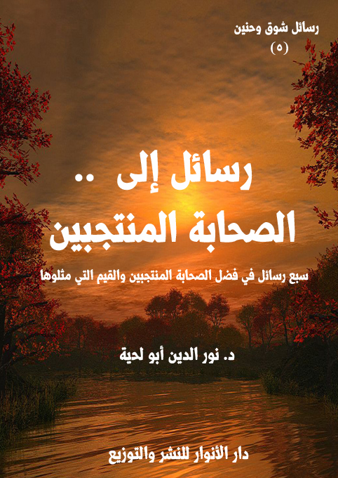

الكتاب: رسائل إلى الصحابة المنتجبين
الوصف: سبع رسائل في فضل الصحابة المنتجبين والقيم التي مثلوها
السلسلة: رسائل شوق وحنين
المؤلف: أ.د. نور الدين أبو لحية
الناشر: دار الأنوار للنشر والتوزيع
الطبعة: الأولى، 1440 هـ
عدد الصفحات: 264
ISBN: 978-620-3-85927-0
لمطالعة الكتاب من تطبيق مؤلفاتي المجاني وهو أحسن وأيسر: هنا

التعريف بالكتاب
هذا الكتاب محاولة لتعميق المحبة الحقيقية لأصحاب رسول الله صلى الله عليه وآله وسلم الذين وردت النصوص المقدسة بالثناء عليهم واعتبارهم نماذج شريفة للصحبة الحقيقية التي لم تبدل ولم تغير ولم تتأثر بذلك الواقع الجديد الذي حصل بعد رسول الله صلى الله عليه وآله وسلم نتيجة ما فتح الله على المسلمين من الدنيا.
وقد كان الأساس الأول لاختيارنا لهؤلاء الأصحاب ما ورد من الثناء عليهم، والذي اتفقت عليه جميع مدارس المسلمين، وخصوصا المدرستين الكبيرتين: السنة والشيعة، باعتبارهما الركنين الكبيرين للإسلام.
ولذلك استبعدنا كل من وقع فيه الخلاف بينهم، من أمثال أولئك الصحابة المختلقين الذين وضعهم سيف بن عمر، أو من أمثال أولئك الذين وضعت لهم الفئة الباغية الكثير من المناقب قصد الإضرار بالمخالفين لها، أو أولئك الصحابة الذي وقفوا أيام الفتنة مع الفئة الباغية مناصرين أو مؤيدين أو مقاتلين معها، وذلك بناء على اعتبار ذلك ثلمة كبيرة في وفائهم بعهودهم.
رسائل إلى الصحابة المنتجبين (5)
هذا الكتاب محاولة لتعميق المحبة الحقيقية لأصحاب رسول الله صلى الله عليه وآله وسلم الذين وردت النصوص المقدسة بالثناء عليهم واعتبارهم نماذج شريفة للصحبة الحقيقية التي لم تبدل ولم تغير ولم تتأثر بذلك الواقع الجديد الذي حصل بعد رسول الله صلى الله عليه وآله وسلم نتيجة ما فتح الله على المسلمين من الدنيا.
وقد كان الأساس الأول لاختيارنا لهؤلاء الأصحاب ما ورد من الثناء عليهم، والذي اتفقت عليه جميع مدارس المسلمين، وخصوصا المدرستين الكبيرتين: السنة والشيعة، باعتبارهما الركنين الكبيرين للإسلام.
ولذلك استبعدنا كل من وقع فيه الخلاف بينهم، من أمثال أولئك الصحابة المختلقين الذين وضعهم سيف بن عمر، أو من أمثال أولئك الذين وضعت لهم الفئة الباغية الكثير من المناقب قصد الإضرار بالمخالفين لها، أو أولئك الصحابة الذي وقفوا أيام الفتنة مع الفئة الباغية مناصرين أو مؤيدين أو مقاتلين معها، وذلك بناء على اعتبار ذلك ثلمة كبيرة في وفائهم بعهودهم، خاصة مع ما ورد من قول الإمام علي: (والذي فلق الحبة وبرأ النسمة إنه لعهد النبي الأمي صلى الله عليه وآله وسلم: (ألا يحبني إلا مؤمن ولا يبغضني إلا منافق) (1)
وقال رسول الله صلى الله عليه وآله وسلم لابنته فاطمة: (إن الله باهى بكم وغفر لكم عامة، ولعلى خاصة، وإنى رسول الله إليكم غير محاب لقرابتي، هذا جبريل يخبرني أن السعيد حق السعيد من أحب عليا في حياته وبعد موته وإن الشقي كل الشقي من أبغض عليا في حياته وبعد
__________
(1) رواه مسلم (78)، والترمذي (5/ 306) وقال: حسن صحيح، وابن ماجه (114) والنسائي (8/ 117) وفي خصائص علي (100 - 102)، وعبد الله بن أحمد في زياداته على الفضائل (1102) وأبو نعيم في الحلية (4/ 185)
رسائل إلى الصحابة المنتجبين (6)
موته) (1)
وقد أقر له بهذا كل الصحابة حتى الذين وقفوا موقفا سلبيا أيام الفتنة إما بعدم نصرته، أو الوقوف مع أعدائه، وقد حدث ابن عمر قال: (ما كنا نعرف المنافقين على عهد النبي صلى الله عليه وآله وسلم إلا ببغضهم عليا ً).. وحدث جابر قال: (ما كنا نعرف منافقينا معشر الأنصار إلا ببغضهم لعلي).. وحدث أبو سعيد الخدري قال: (إنما كنا نعرف منافقي الأنصار ببغضهم عليا).. وحدث أبو عثمان النهدي، قال: قال رجل لسلمان: ما أشد حبك لعلي؟ قال سمعت رسول الله صلى الله عليه وآله وسلم يقول: (من أحب عليا ً فقد أحبني، ومن أحبني فقد أحب الله عز وجل، ومن أبغض عليا ً فقد أبغضني، ومن أبغضني فقد أبغض الله عز وجل) (2)
ولذلك فإن هذا الاعتبار الذي وضعناه معيار شرعي، خاصة مع تلك الأحاديث الكثيرة التي تعتبر الإمام علي فاصلا بين الإيمان والكفر، أو علامة على صدق الاتباع وكذبه، ولا حرج في ذلك، فالله تعالى يختبر عباده بما شاء، ومن شاء، ولا يصح أن يجادل في ذلك الاختيار، خاصة مع ورود النصوص الكثيرة الدالة على ابتلاء الأمة بأهل بيت نبيها صلى الله عليه وآله وسلم.
لكنا مع ذلك لم نتحدث عن أولئك الذين تخلفوا عن الوفاء بهذا الشرط بأي حديث يسيء إليهم، فأمرهم لله تعالى، وإنما كان جل اهتمامنا بالذين أحسنوا الوفاء بشروط الصحبة، وداوموا على الحفاظ على عهودها، وهم كثيرون جدا.
وأولهم أولئك الذين مضوا شهداء في سبيل الإسلام، سواء قبل الهجرة أو بعدها، وقد خصصنا لهم فصلا خاص.
ومنهم أولئك الذين أُبعدوا ولم يهتم بهم بعد وفاة رسول الله صلى الله عليه وآله وسلم، وعزلوا عن
__________
(1) رواه الطبرانى (22/ 415، رقم 1026)
(2) انظر هذه الآثار في: المستدرك (3/ 130) الطبراني في المعجم الكبير (23/ 380/901) وغيرها.
رسائل إلى الصحابة المنتجبين (7)
المناصب التي تولاها الطلقاء، ثم عزلوا بعد ذلك عن ذكرهم والحديث عنهم، وخاصة من أولئك الذين يدعون حب الصحابة، بينما هم لا يقصدون منهم إلا الطلقاء أو من شابههم، ويدخل فيهم الكثير من الأنصار وأصحاب الحرة وغيرها، والذين ذكر رسول الله صلى الله عليه وآله وسلم مظلوميتهم بعده.
ومنهم أولئك الأوفياء بالعهود الذين مثلوا الصحبة أحسن تمثيل، وكانت لهم آثارهم في مواجهة التحريفات التي طرأت على الدين.
ومنهم أولئك الحكماء الذين حذروا من الفتن، ودعوا إلى العودة إلى الإسلام المحمدي الأصيل، وقد اهتممنا بهؤلاء خصوصا، فقد وضعنا فصلا خاص بهم، ثم أضفنا ثلاثة فصول أخرى تابعة لهم، تتمثل في ثلاثة من كبار الصحابة ورد الثناء الخاص عليهم، وهم أبو ذر الغفاري، وسلمان الفارسي، وعمار بن ياسر.
وقد حرصنا على التركيز على القيم المرتبطة بالدين، وتمثيل هؤلاء الصحابة لها، لأن القصد من الدعوة لمحبة الصحابة هو اعتبارهم تلاميذ ناجحين لرسول الله صلى الله عليه وآله وسلم، ولقيم الدين، ولذلك يرتبط ذكرهم بذكر القيم والأخلاق، لا بمجرد ذلك الحديث الأجوف المسيء لرسول الله صلى الله عليه وآله وسلم وللصحابة أنفسهم، والذي يذكر أن الارتباط بالصحابة ارتباط بذواتهم لا بالقيم الأخلاقية والروحانية التي مثلوها.
وقد كان رائدنا في هذا، وقدوتنا فيه الإمام علي الذي أثنى على الصحابة، لا بذواتهم، وإنما بسلوكهم وأخلاقهم، فقد قال: (قد رأيت أصحاب محمد صلى الله عليه وآله وسلم، فما أرى أحداً يشبههم منكم لقد كانوا يصبحون شعثاً غبراً، وقد باتوا سجّداً وقياماً يراوحون بين جباهِهِم وخدودهم ويقفون على مثل الجمر من ذكر معادهم، كأن بين أعينهم رُكب المعزي من طول سجودهم، إذا ذكر الله هملت أعينهم حتى تبُلَّ جيوبهم، ومادوا كما يميد الشجر يوم الريح
رسائل إلى الصحابة المنتجبين (8)
العاصف، خوفاً من العقاب ورجاءً للثواب) (1)
ولذلك لا نؤمن بتلك المقولات التي نشرتها الفئة الباغية، والتي تنظر إلى الصحبة نظرة أسطورية بعيدة عن المعاني والقيم حتى أنها تدعو إلى محبة أولئك الذين اخترقوا حدود الدين ووقعوا في الكبائر وقتلوا المستضعفين، مع أن النصوص المقدسة تدعو إلى بغض أمثال هؤلاء، واعتبار ذلك البغض قربة لله.
وقد صغنا هذه المعاني جميعا صياغة أدبية على شكل رسائل موجهة لهؤلاء، لأن القصد من هذه السلسلة ربط حقائق الدين وقيمه بالروح والعاطفة، وليس بالعقل فقط.
__________
(1) نهج البلاغة للشريف الرضى شرح محمد عبده ص 225...
رسائل إلى الصحابة المنتجبين (9)
سادتي يا أصحاب رسول الله صلى الله عليه وآله وسلم النصحاء الخالصين الذين امتلأوا بالصدق والإخلاص والتقوى وكل القيم الرفيعة.. ولم يستفيدوا من تلك الصحبة الشريفة سواها، فهي أكبر نعمة أنعم الله بها عليهم.. ولذلك لم يكن لهم بعدها غرض في الدنيا، ولا متاعها، وإنما كان غرضهم الدين وقيمه.
يا من يا من ضحيتم بكل ما تملكون في سبيل الله.. يا من قال الله تعالى فيهم: {وَالسَّابِقُونَ الْأَوَّلُونَ مِنَ الْمُهَاجِرِينَ وَالْأَنْصَارِ وَالَّذِينَ اتَّبَعُوهُمْ بِإِحْسَانٍ رَضِيَ اللَّهُ عَنْهُمْ وَرَضُوا عَنْهُ وَأَعَدَّ لَهُمْ جَنَّاتٍ تَجْرِي تَحْتَهَا الْأَنْهَارُ خَالِدِينَ فِيهَا أَبَدًا ذَلِكَ الْفَوْزُ الْعَظِيمُ} [التوبة: 100]
اسمحوا لي أيها الأجلاء المنتجبون أن أبث إليكم شكواي، وأضع بين أيديكم آلامي، فأنتم لا تختلفون أبدا عن أهل بيت النبوة، ولا بني هاشم، ولا غيرهم.. فديننا دين قيم، لا دين أنساب.. ودين الله لا دين عشائر.. وقد قال رسول الله صلى الله عليه وآله وسلم في سلمان الفارسي: (سلمان منا أهل البيت) (1)
لقد استبدلتكم الأمة بالطلقاء والمتخلفين والناقضين للعهود، والذين أصبح لهم الريادة والسيادة، وأدخلوا في كتب العقائد والفقه والحديث، وأبيحت دماء كل من ينتقدهم، أو يعرض أعمالهم على الكتاب والسنة وقيم الدين الرفيعة، ولذلك نفقت بضاعة الطلقاء وراجت، وصار الكتاب والخطباء يتنافسون في الكتابة عنهم والإشادة بفضلهم في نفس الوقت الذي ينسونكم فيه، وينسون بلالا والصخرة التي كانت تجثم على صدره، وهو
__________
(1) المستدرك على الصحيحين للحاكم 3/ 691 ح (6539)، المعجم الكبير للطبراني 6/ 212 ح 6040)
رسائل إلى الصحابة المنتجبين (10)
ينادي أحد أحد..
فالكل الآن يعرف معاوية وأباه وأمه وإخوانه وأخواته ويشيد بهم جميعا، وبالمناصب الرفيعة التي تولوها.. أما بلال ذلك العبد المسكين، فلا أحد يعرف المصير الذي صار إليه، ولا الحياة التي عاشها بعد وفاة حبيبه رسول الله صلى الله عليه وآله وسلم، مع أنه كان خازن رسول الله صلى الله عليه وآله وسلم والأمين على مال الأمة في حياته.
وهكذا أسدلت حجب النسيان والغفلة على سمية تلك التي كانت أول شهيدة في الإسلام.. فلا أحد يذكر زوجها ياسر الذي كان أول الرجال استشهادا في سبيل الله.. ولا أحد يذكر ابنهما عمارا.. لأن ذكره سيشوه الطلقاء، وسيقلب صفحاتهم المنتنة، وسيبعث في جماهير المغفلين السؤال عمن قتله، ولم قتله، وكيف قتله؟ وكل ذلك سيحول الطلقاء من صحابة أجلاء إلى ظلمة وطواغيت.
وهكذا نسيت لبينة جارية بني المؤمل المستضعفة المعذبة (1)، وقد كانت من السابقين إلى الإسلام، وأوذيت إيذاء شديدا.. لأن في ذكرهم لها ولكيفية تعذيبها إحراجا كبيرا لمن قدمناهم بأهوائنا وأذواقنا ومعاييرنا البشرية القاصرة.
وهكذا نسيت أم عبيس، أمة بني زهرة (2)، تلك التي كانت قريش ـ التي أدخلنا تعظيمها في أبواب العقائد، وتوهمنا أنها بريئة من النفاق ـ تعذبها عذابا شديدا هي وزوجها أبو عبيس.. ولا زلنا إلى الآن نجهل نسبهما كما نجهل كل ما يرتبط بهما.
وهكذا نسيت النهدية تلك الجارية اليمنية المستضعفة التي كانت من السابقين إلى الإسلام، فكانت سيدتها تعذبها، وتقول: والله لا أقلعت عنك (3).. وهكذا كان حال ابنتها
__________
(1) أنساب الأشراف: 1/ 84.
(2) المرجع السابق، 1/ 84.
(3) المرجع السابق، 1/ 84.
رسائل إلى الصحابة المنتجبين (11)
التي عذبت معها، ولا نزال إلى الآن لا نعرف اسمها ولا اسم ابنتها، ولا أي تفاصيل عنها في نفس الوقت الذي نعرف فيه أنساب الطلقاء، ونعتز بها، وندخلها في كل دواوين الإسلام.
وهكذا نسيت زنيرة (1) تلك الجارية المستضعفة التي كانت يتداول المشركون على تعذيبها بكل صنوف العذاب الحسي والمعنوي، حتى أن أحدهم كان يقول ساخرا منها: ألا تعجبون لهؤلاء واتباعهم محمدا؟ فلو كان أمر محمد خيراً وحقاً ما سبقونا إليه؟ أفسبقتنا زنيرة إلى رشد، وهي من ترون؟.. تلك التي عذبت إلى أن عميت، فقال لها أبو جهل: إن اللات والعزى فعلتا بك ما ترين، فقالت، وهي لا تبصره: وما تدري اللات والعزى، من يعبدهما ممن لا يعبدهما؟ ولكن هذا أمر من السماء، وربي قادر على أن يرد بصري، فأصبحت من تلك الليلة وقد رد الله عليها بصرها، فقالت قريش: هذا من سحر محمد.
وهكذا نُسي كل أولئك السابقين الصادقين، واستبدلوا بالطلقاء والمتخلفين.. وراح سدنة الملك العضوض، ومروجي دين الفئة الباغية يكذبون على الناس حين يوهمونهم بصدق إيمانهم بعد أن رأوا جيوش المسلمين قادمة لفتح مكة، في نفس الوقت الذي لم يؤمنوا فيه، وهم يرون القمر ينشق في السماء، ويسمعون تلك الآيات العجيبة من القرآن الكريم.
في نفس الوقت الذي يعتبرون فيه عبد الله بن أبي لجأ إلى النفاق حتى يحمي مكانته بين قومه، ويكذبون على الناس حين يذكرون لهم أن النفاق خاص بأهل المدينة، ولا علاقة له بقريش.. وكأنهم لم يقرؤوا قوله تعالى عنها في أوائل سورة يس التي هي قلب القرآن: {يس (1) وَالْقُرْآنِ الْحَكِيمِ (2) إِنَّكَ لَمِنَ الْمُرْسَلِينَ (3) عَلَى صِرَاطٍ مُسْتَقِيمٍ (4) تَنْزِيلَ الْعَزِيزِ الرَّحِيمِ (5) لِتُنْذِرَ قَوْمًا مَا أُنْذِرَ آبَاؤُهُمْ فَهُمْ غَافِلُونَ (6) لَقَدْ حَقَّ الْقَوْلُ عَلَى
__________
(1) المرجع السابق، 1/ 84.
رسائل إلى الصحابة المنتجبين (12)
أَكْثَرِهِمْ فَهُمْ لَا يُؤْمِنُونَ (7) إِنَّا جَعَلْنَا فِي أَعْنَاقِهِمْ أَغْلَالًا فَهِيَ إِلَى الْأَذْقَانِ فَهُمْ مُقْمَحُونَ (8) وَجَعَلْنَا مِنْ بَيْنِ أَيْدِيهِمْ سَدًّا وَمِنْ خَلْفِهِمْ سَدًّا فَأَغْشَيْنَاهُمْ فَهُمْ لَا يُبْصِرُونَ (9) وَسَوَاءٌ عَلَيْهِمْ أَأَنْذَرْتَهُمْ أَمْ لَمْ تُنْذِرْهُمْ لَا يُؤْمِنُونَ (10) إِنَّمَا تُنْذِرُ مَنِ اتَّبَعَ الذِّكْرَ وَخَشِيَ الرَّحْمَنَ بِالْغَيْبِ فَبَشِّرْهُ بِمَغْفِرَةٍ وَأَجْرٍ كَرِيمٍ} [يس: 1 - 11]
مع أنهم يذكرون في سبب نزولها عن ابن عباس أنه قال: (كان النبي صلى الله عليه وآله وسلم يقرأ في المسجد فيجهر بالقراءة حتى تأذى به ناس من قريش حتى قاموا ليأخذوه، وإذا أيديهم مجموعة إلى أعناقهم، وإذا هم لا يبصرون، فجاءوا إلى النبي صلى الله عليه وآله وسلم فقالوا: (ننشدك الله والرحم يا محمد ولم يكن بطن من بطون قريش إلا وللنبي صلى الله عليه وآله وسلم فيهم قرابة فدعا النبي صلى الله عليه وآله وسلم حتى ذهب ذلك عنهم) (1)
وهكذا نسيت كل هذه الآيات، ونسيت معها كل تلك الحروب التي شُنت على المسلمين، ونُسي كل ذلك التعذيب الذي مورس على المستضعفين، وأصبح أبو سفيان وهند وأولادهم من خيار الصحابة، بل صارت الكتب تؤلف فيهم وفي فضلهم في نفس الوقت الذي يجهل الناس بلالا وعمارا وسمية وزنيرة.. وكل أولئك الذين لا يصح أن يطلق اسم الصحابة إلا عليهم.
ويستدل أصحاب الملك العضوض، وسدنة الفئة الباغية على ذلك الإلغاء والطرد للسابقين الأولين في نفس الوقت الذي يقربون فيه البغاة والطلقاء بأن الخلفاء الأوائل وظفوا أبناء أبي سفيان في وظائف الدولة الكبرى بعد وفاة رسول الله صلى الله عليه وآله وسلم..
ويا ليت شعري ما هذا الاستدلال الغريب، وهل كان الخلفاء الأوائل معصومون في ذلك التوظيف.. ألم يكن رسول الله صلى الله عليه وآله وسلم نفسه ينكر على أصحابه إنكارهم لتولي أسامه
__________
(1) رواه ابن مردويه وأبو نعيم في الدلائل، انظر: الدر المنثور في التفسير بالمأثور (7/ 42).
رسائل إلى الصحابة المنتجبين (13)
وأبيه، فقد ورد في الحديث أنه حين أراد النبي صلى الله عليه وآله وسلم أن يبعث بعثًا، وأمّر عليهم أسامة بن زيد، طعنوا في إمرته، فقام صلى الله عليه وآله وسلم، فقال: (إن تطعنوا في إمرته، فقد كنتم طعنتم في إمرة أبيه من قبله.. وأيم الله إن كان لخليقًا للإمارة، وإن كان لمن أحب الناس إلي، وإن هذا لمن أحب الناس إلي بعده) (1)
لكنا لو تركنا ذلك التقديس المبالغ فيه، ورحنا ننظر في أولى الناس بتلك المناصب الرفيعة، التي لم تكن مناصب سياسية فقط، بل كانت مناصب تمثل الإسلام، وقيم الإسلام، فسنجد أن هناك تقصيرا كبيرا حصل للسابقين الصادقين من المهاجرين والأنصار في نفس الوقت الذي ولي فيه الطلقاء، لسبب بسيط، وهو كونهم من قريش، وكانوا من ساداتها، مع أن رسول الله صلى الله عليه وآله وسلم كان يردد على آذانهم كل حين: (اسمعوا وأطيعوا، وإن استعمل عليكم عبد حبشي، كأن رأسه زبيبة) (2)
أليس من العجيب سادتي أن يتولى أبناء أبي سفيان الذين كان لهم ولأبيهم سهم في المؤلفة قلوبهم أرفع المناصب في نفس الوقت الذين يعزل فيه كل أولئك الذين قدموا كل شيء في سبيل الله.. يعزلون هم وأولادهم، حتى لا نكاد نسمع عنهم شيئا.
فيزيد بن أبي سفيان الذي يسمونه يزيد الخير، والذي كان من الطلقاء، وألف النبي صلى الله عليه وآله وسلم قلبه للإيمان بمائة بعير وأربعين أوقيّة (3)، صار قائدا على أول الجيوش التي أرسلت إلى الشام لفتحها ومساعدة الجيوش الإسلامية الأخرى عند الضرورة، مع أنه كان من المنهزمين يوم حنين، وكان في الصحابة من هو أولى منه قدرة ودينا وصلاحا.
وأبو الوليد عتبة بن أبي سفيان، صار واليا على الطائف وصدقاتها، ثم ولاه معاوية
__________
(1) رواه البخاري (6627)، ومسلم (2426)، والترمذي (3816)، والنسائي في الكبرى (8181)
(2) صحيح البخاري 9/ 62 ح (7142).
(3) التبيين في أنساب القرشيين ص 204.
رسائل إلى الصحابة المنتجبين (14)
مصر حين مات عمرو بن العاص، وكان حريصا على المناصب، ويخطط لأعلاها، وقد رووا أنه اعترضه أعرابي وهو على مكة فقال: أيها الخليفة. قال: لست به ولم تبعد (1).
ومعاوية بن أبي سفيان ولي في أكبر وظائف الدولة منذ عهد مبكر، حيث ولي فتح قيسارية سنة خمس عشرة للهجرة، ويذكر المؤرخون الإسلاميون بفخر كيف شوه الفتح الإسلامي، حيث أنهم يذكرون أنه (سار إلى قيسارية بجنوده الذين أعدهم له أخوه يزيد بن أبي سفيان ـ أحد ولاة الشام لعمر ـ وكانت تلك المدينة محصنة وبأس أهلها شديد، فحاصرها معاوية طويلاً وزاحف أهلها مرات عديدة، فلم ييأس معاوية، فصمم على فتحها، واجتهد في القتال حتى فتح الله على يديه، وكان فتحه كبيراً فقد قتل من أهلها ما يقرب من مائة ألف، وبعث بالفتح والأخماس على أمير المؤمنين عمر، وقد أثبت معاوية بعد توفيق الله ـ بهذا الفتح جدارته وحسن قيادته، فأكسبه ذلك ثقة الجميع، فأسند له أخوه يزيد ـ أمير دمشق ـ مهمة فتح سواحل الشام، وقد أبلى في ذلك بلاءً حسناً) (2)
وهم يذكرون بفخر كذلك أنه عندما توفي أخوه يزيد بن أبي سفيان في طاعون عمواس، جلس بدله في حكم دمشق وبعلبك والبلقاء (3)، ويذكرون أنه كان لذلك أثر كبير في نفس أبي سفيان، وجعل إسلامه يرسخ أكثر، فما أجمل الإسلام الذي يأتي بالمناصب والأموال..
وقد رووا أن عمر حين عزى أبا سفيان في وفاة ابنه يزيد قال: يا أمير المؤمنين من وليت مكانه؟ قال: أخوه معاوية. قال: (وصلت رحماً يا أمير المؤمنين)
ويروون ـ بفخر ـ أن أبا سفيان كتب حينها لمعاوية يقول له: (يا بني إن هؤلاء الرهط
__________
(1) المرجع السابق، ص 208.
(2) نهاية معاوية بن أبي سفيان، الصلابي، ص 45.
(3) الطبقات الكبرى (7/ 406)
رسائل إلى الصحابة المنتجبين (15)
من المهاجرين سبقونا وتأخرنا، فرفعهم سبقهم وقدمهم عند الله وعند رسوله صلى الله عليه وآله وسلم وقصر بنا تأخيرنا، فصاروا قادة وسادة، وصرنا أتباعاً، وقد ولوك جسيماً من أمورهم فلا تخالفهم، فإنك تجري إلى أمد فنافس، فإن بلغته أورثته عقبك) (1)
وهكذا كتبت هند تقول لابنها: (والله يا بني إنه قل أن تلد مثلك وإن هذا الرجل قد استنهضك في هذا الأمر، فاعمل بطاعته فيما أحببت وكرهت) (2)
بل إنهم صاروا يعتبرون هندا ـ تلك الصحابية الجليلة كما يطلقون عليها ـ مثالا للهمة العالية، وقد قال بعضهم في كتاب حول الهمم العالية: (ومن شرف النفس وعلو الهمة ما قالته هند بنت عتبة زوجة أبي سفيان وأم معاوية رضي الله تعالى عنهم أجمعين، حين أتاها نعي يزيد بن أبي سفيان وقال لها بعض المعزين: إنا نرجو أن يكون في معاوية خلف من يزيد يواسونها ويعزونها، فقالت: أو مثل معاوية يكون خلفاً من أحد؟! والله لو جمعت العرب من أقطارها ثم رمي به فيهم لخرج من أي أعراضها شاء.. وقيل لها -أيضاً- ومعاوية وليد بين يديها: إن عاش معاوية ساد قومه.. فقالت: ثكلته إن لم يسد إلا قومه! وهذه العبارة لها معان عظيمة جداً بعيدة المرمى؛ لأن معنى ذلك أن وليدها بضعة لحم لا يظهر عليه أي أمر مما يقطع بأن هذا سيكون إنساناً له شأن، ولكن هذا معناه أنها تنوي أن تربي هذا الولد وتوجهه، حتى إنها لتأنف من أن يسود قومه فقط، بل غضبت حينما قالوا لها: إن عاش معاوية ساد قومه.. فقالت: ثكلته -أي: الأفضل أن يموت- إن لم يسد إلا قومه.. ومعروف أن معاوية من أكثر العرب سيادة وسياسة وحكمة) (3)
وهكذا ولي أبو هريرة الذي لم يشارك في أي غزوة، ولم يمس بأي أذى، وتأخر
__________
(1) البداية والنهاية (11/ 399)
(2) المرجع السابق، (11/ 399)
(3) سلسلة علو الهمة - المقدم (5/ 4)
رسائل إلى الصحابة المنتجبين (16)
إسلامه إلى ما قبل الفتح في أكبر المناصب، وقد روي أنه أيام ولايته على المدينة في خلافة معاوية كان يتصرف تصرفات غريبة تلفت الانتباه إليه، وهم يحملونها على تواضعه، ولكنها قد تحمل على محامل أخرى، ومنها ما رواه محمد بن زياد قال: كان مروان ـ أيام ولايته على المدينة في خلافة معاوية ـ يستخلف أبا هريرة على المدينة فيضرب برجليه فيقول: خلوا الطريق خلوا الطريق قد جاء الأمير قد جاء الأمير ـ يعني نفسه (1).
بل إنه ولي قبل ذلك، فقد ولاه عمر على البحرين سنة 21 هـ، ثم عزله بعد أن بلغته عنه أشياء تخل بأمانة الوالي، وولى مكانه عثمان بن أبي العاص الثقفي، فقد روي أنه قدم بعشرة آلاف، وهو مبلغ ضخم جدا في ذلك الحين وفي هذا الحين، فقال له عمر: استأثرت بهذه الأموال يا عدو الله وعدو كتابه؟ فقال أبو هريرة: لست بعدو الله وعدو كتابه، ولكني عدو من عاداهما، فقال له عمر: فمن أين هي لك؟ قال أبو هريرة: خيل نتجت، وغلة رقيق لي، وأعطية تتابعت علي (2).
وفي رواية أن عمر قال لأبي هريرة: (كيف وجدت الإمارة يا أبا هريرة؟ قال: بعثتني وأنا كاره، ونزعتني وقد أحببتها، وأتاه بأربعمائة ألف من البحرين، فقال: أظلمت أحدا، قال: لا، قال: أأخذت شيئا بغير حقه؟ قال: لا، قال: فما جئت به لنفسك؟ قال: عشرين ألفا، قال: من أين أصبتها؟ قال: كنت أتجر، قال: فانظر رأس مالك ورزقك فخذه واجعل الآخر في بيت المال (3).
لقد روي كل هذا بفخر واعتزاز في نفس الوقت الذي كان فيه أولئك السابقون
__________
(1) رواه أحمد: 2/ 94.
(2) انظر: الطبقات الكبرى، ابن سعد، (5/ 252). تاريخ دمشق، ابن عساكر، (67/ 370). سير أعلام النبلاء (2/ 612)
(3) الطبقات الكبرى، ابن سعد، (5/ 252، 253)
رسائل إلى الصحابة المنتجبين (17)
الصادقون يعيشون كل أنواع الآلام والفقر، لا يلتفت لهم أحد.. ولا يهتم بهم أحد.. سواء في حياتهم أو بعد وفاتهم..
وقد روى المؤرخون الذين يعتبرونهم تلك المعاناة التي عاناها أبو ذر، حين نفي إلى الربذة، وهي على بعد ثلاثة أيام من المدينة المنورة، لخلافه مع معاوية، مع كون أبي ذر من السابقين الأولين إلى الإسلام، يقول ابن عبد البر في [الاستيعاب]: (بعد أن أسلم أبو ذر، رجع إلى بلاد قومه، فأقام بها حتى مضت بدر، وأحد، والخندق، ثم قدم على النبي صلى الله عليه وآله وسلم المدينة، فصحبه إلى أن مات صلى الله عليه وآله وسلم، ثم خرج بعد وفاة أبي بكر إلى الشام، فلم يزل بها حتى ولي عثمان، ثم استقدمه عثمان لشكوى معاوية، فنفاه وأسكنه الربذة، فمات بها..) (1)
هكذا كان حاله مع أن رسول الله صلى الله عليه وآله وسلم قال عنه: (ما أظلت الخضراء، ولا أقلت الغبراء من ذي لهجة أصدق ولا أوفى من أبي ذر، شبه عيسى ابن مريم) (2)
لكنهم يصورونه بصورة الضعيف الذي لا يستطيع الحكم، في نفس الوقت الذي يستطيع ذلك أبو هريرة وأولاد أبي سفيان.
وهكذا كان حال غيره من الذين لم يتح لهم ـ بسبب حفاظهم على قيم الدين ـ أن تصير لهم أمور الأمة، بعد أن صارت للطلقاء، والانتهازيين الذين يستعملون كل الطرق للوصول إلى غاياتهم.
وهكذا كان حال حذيفة بن اليمان، ذلك التلميذ الذكي النجيب من تلاميذ رسول الله صلى الله عليه وآله وسلم، فقد روي أن عمر ولاه على المدائن، وكتب له عهدا قال فيه لأهل المدائن: (اسمعوا له وأطيعوا وأعطوه ما سألكم)، فخرج على حمار موكف، تحته زاده، فلما قدم المدائن،
__________
(1) الاستيعاب (حاشية على كتاب الإصابة) م 1 ص 213..
(2) الترمذي (3802).
رسائل إلى الصحابة المنتجبين (18)
استقبله أعاظم الدهاقين (التجار) وبيده رغيف، وعرق من لحم. ولما قرأ عليهم عهده، قالوا: سل ما شئت، قال: طعاما آكله، وعلف حماري هذا - ما دمت فيكم - من تبن. فأقام ما شاء الله، ثم كتب إليه عمر: (أقدم)، فلما بلغه قدومه، كمن له على الطريق - وكانت هذه عادته - فلما رآه على الحال التي خرج عليها، أتاه فالتزمه وقال: أنت أخي وأنا أخوك (1).
وهكذا كان حال سلمان الفارسي الذي دخل عليه قوم - وهو أمير على المدائن - وهو يعمل الخوص، فقيل له: لم تعمل هذا وأنت أمير يجرى عليك رزق؟ فقال: (إنى أحب أن آكل من عمل يدى)، وكان يشترى خوصا بدرهم فيعمله ويبيعه بثلاثة دراهم ينفق درهما ويتصدق بدرهمين، وروي أنه تعلم عمل الخوص بالمدينة من الأنصار أيام كان بها مع النبي صلى الله عليه وآله وسلم وكان عطاؤه خمسة آلاف، يتصدق به، ويأكل من عمل يده (2).
وهكذا كان حال سعيد بن عامر حين كان واليا على حمص، وسأله عمر بن الخطاب، فقال له: ما لك من المال؟ قال: سلاحي وفرسي وأبغل أغزو عليها، وغلام يقوم عليَّ وخادم لامرأتي، وسهم يعد في المسلمين. فقال له عمر: ما لك غير هذا؟ قال: حسبي هذا، هذا كثير. فقال له عمر: فلمَ يحبك أصحابك؟ قال: أواسيهم بنفسي، وأعدل عليهم في حكمي. فقال له عمر: خذ هذه الألف دينار فتقوَّ بها. قال: لا حاجة لي فيها، أعط من هو أحوج إليها مني. فقال عمر: على رسلك حتى أحدثك ما قال رسول الله صلى الله عليه وآله وسلم، ثم إن شئت فاقبل وإن شئت فدع: إن رسول الله عرض عليَّ شيئًا فقلت مثل الذي قلت، فقال رسول الله: (من أعطي شيئًا من غير سؤال ولا استشراف نفس، فإنه رزق من الله فليقبله ولا يرده)، فقال الرجل: أسمعت هذا من رسول الله؟ قال: نعم. فقبله الرجل ثم أتى امرأته فقال: إن
__________
(1) سير أعلام النبلاء: 2/ 260.
(2) الاستيعاب: 2/ 572.
رسائل إلى الصحابة المنتجبين (19)
أمير المؤمنين أعطانا هذه الألف دينار، فإن شئت أن نعطيه من يتجر لنا به ونأكل الربح ويبقى لنا رأس مالنا، وإن شئت أن نأكل الأول فالأول. فقالت المرأة: بل أعطه من يتجر لنا به ونأكل الربح، ويبقى لنا رأس المال. قال: ففرقيه صررًا. ففعلت، فجعل كل ليلة يخرج صرة فيضعها في المساكين ذوي الحاجة، فلم يلبث الرجل إلا يسيرًا حتى توفي، فأرسل عمر يسأل عن الألف، فأخبرته امرأته بالذي كان يصنع، فالتمسوا ذلك فوجدوا الرجل قدمها لنفسه، ففرح بذلك عمر وسُرَّ وقال: يرحمه الله، إن كان الظن به كذلك (1).
وهكذا كان حال عمير بن سعد الذي كان عاملا على حمص، وبقى فيها عامًا كاملا دون أن يرسل إلى عمر بالمدينة أي رسالة، فأرسل إليه عمر ليأتي إليه، وجاء عمير وشاهده الناس، وهو يدخل المدينة وعليه آثار السفر، وهو يحمل على كتفيه جرابًا وقصعة (وعاء للطعام) وقربة ماء صغيرة، ويمشي في بطء شديد من التعب والجهد، ولما وصل إلى عمر بن الخطاب قال له: السلام عليك يا أمير المؤمنين، فرد عمر السلام ثم قال له: ما شأنك يا عمير؟ فقال عمير: شأني ما ترى، ألست تراني صحيح البدن، طاهر الدم، معي الدنيا؟ فقال عمر: وما معك؟ قال عمير: معي جرابي أحمل فيه زادي، وقَصْعَتي آكل فيها وأغسل فيها رأسي، وإداوتي أحمل فيها وضوئي وشرابي، وعصاي أتوكأ عليها، وأجاهد بها عدوًا إن عَرَض (ظهر)، فوالله ما الدنيا إلا تَبعٌ لمتاعي. فقال عمر: أجئت ماشيًا؟ قال عمير: نعم. فقال عمر: أَوَلَمْ تَجدْ من يعطيك دابة تركبها؟ قال عمير: إنهم لم يفعلوا، وإني لم أسألهم. فقال عمر: فماذا عملت فيما عهدنا إليك به؟ قال عمير: أتيت البلد الذي بعثتني إليه، فجمعت صُلَحَاء أهله، ووليتُهم جَبايَة فيئهم (جمع صدقاتهم) وأموالهم، حتى إذا جمعوها وضعتها، ولو بقى لك منها شيء لأتيتك به، فقال عمر: فما جئتنا بشيء؟ قال عمير: لا. فقال عمر:
__________
(1) ابن منظور: مختصر تاريخ دمشق 1/ 1309.
رسائل إلى الصحابة المنتجبين (20)
جدِّدوا لعمير عهدًا، ولكن عميرًا رفض وقال في استغناء عظيم: تلك أيام خَلَتْ، لا عَمِلتُ لك، ولا لأحد بعدك (1).
هؤلاء هم الذين كان ينبغي أن تسند إليهم جميع أمور الأمة، لكنهم عزلوا وطردوا وقتلوا.. ولم يبق لهم وجود حتى في أذهان الناس، لأن الطلقاء صاروا هم الصحابة والسابقين، ومن عداهم لا قيمة له.
-\--\-
أيها السابقون الصادقون من أصحاب رسول الله صلى الله عليه وآله وسلم الذين وصفهم الإمام علي، فقال: (قد رأيت أصحاب محمد صلى الله عليه وآله وسلم، فما أرى أحداً يشبههم منكم لقد كانوا يصبحون شعثاً غبراً، وقد باتوا سجّداً وقياماً يراوحون بين جباهِهِم وخدودهم ويقفون على مثل الجمر من ذكر معادهم، كأن بين أعينهم رُكب المعزي من طول سجودهم، إذا ذكر الله هملت أعينهم حتى تبُلَّ جيوبهم، ومادوا كما يميد الشجر يوم الريح العاصف، خوفاً من العقاب ورجاءً للثواب) (2)
نعم أولئك فازوا بالأموال والدنيا، لكن تبقون أنتم الصحابة الحقيقيون الذين لم يغيروا ولم يبدلوا، ولذلك لن تطردوا من الحوض في الوقت الذي يطرد فيه المتخلفون الناقضون للعهود.
ولا تخافوا من تلك التهم التي يتهمكم بها أولئك الذين يكذبون على أنفسهم، وعلى الناس حين يزعمون أنهم يعظمون الصحابة، بينما هم يمارسون معهم كل ألوان العنصرية والتزوير.
__________
(1) الطبراني في الكبير من 17/ 51 (109) ومن طريقه أبو نعيم في الحلية 1/ 250، وابن عساكر في تاريخه 46/ 489، وابن الجوزي في المنتظم 4/ 319.
(2) نهج البلاغة للشريف الرضى شرح محمد عبده ص 225...
رسائل إلى الصحابة المنتجبين (21)
ألا ترونهم كيف يقصرون المبشرين بالجنة في أولئك العشرة، لا لشيء إلا لكونهم من قريش في نفس الوقت الذي يتركون فيه أولئك السابقين إلى الإيمان من الذين أوذوا وعذبوا، وكأن الإسلام جاء لقريش لا لغيرها من القبائل والشعوب؟
وهم لم يكتفوا بذلك، بل راحوا يعتبرون كبارهم من الذين واجهوا بني أمية منافقين.. فمن الصحابة الذين حكموا عليهم بالنفاق مع كونهم ممن شارك في غزوة بدر (1) معتب بن قشير الأنصاري: الذي هو بدري بالإجماع وهو عندهم منافق بالإجماع..
ومنهم مدلاج بن عمرو السلمي وهو بدري شهد صفين مع الإمام علي وتأخرت وفاته إلى عام 50 هـ، ورغم ذلك قال أبو حاتم عنه: (أعرابي مجهول وتواطئوا على ذكره في الضعفاء كأبي حاتم وابنه وابن الجوزي إلى عهد الذهبي فاستدركه عليهم ابن حجر في لسان الميزان في القرن التاسع!)
ومنهم ربيعة بن مسعود القارئ الذي قال فيه أبو حاتم: (أعرابي مجهول)! وذكره في الضعفاء ابن الجوزي والذهبي، وأهمله البخاري في تاريخه.. مع أنه بدري، وأسلم قبل دخول النبي صلى الله عليه وآله وسلم دار الأرقم، وشهد بدراً والمشاهد كلها وتوفي عام 30 هـ.
ومنهم خليدة بن قيس الأنصاري، وهو بدري، لكن مع ذلك قال عنه أبو حاتم الرازي: (خليدة بن قيس بن عثمان من بني نعمان بن سنان الأنصاري شهد بدرا سمعت أبي يقول ذلك وسمعته يقول هو مجهول) (2)
ومنهم حمزة بن الجمير من بني عبيد بن عدي الأنصاري، وهو بدري ومع إقرار أبي حاتم بذلك إلا أنه قال فيه: (سمعت أبي يقول ذلك ويقول هو مجهول)، أي مجهول
__________
(1) انظر بحثا في المسألة مهما جدا بعنوان [صحابة بدريون ولكنهم منافقون.... هكذا يقول السلفيون!] للشيخ حسن بن فرحان المالكي.
(2) الجرح والتعديل: 3/ 400.
رسائل إلى الصحابة المنتجبين (22)
العدالة..
ومنهم أبو سفيان بن الحارث بن قيس، أخو نبتل، الأوسي، وهو بدري اتهموه بالنفاق..
وغيرهم كثير من الذين اتهموهم بالنفاق أو بالجهالة، وراحوا يرمونهم بعدم الوثاقة، في نفس الوقت الذي يكذبون فيه على الناس بادعاء عدالة جميع الصحابة.. لكن مقصدهم الأول في ذلك هو الفئة الباغية، ومن ساندها.
وهكذا نرى مواقفهم من الصحابة الذين شهد لهم رسول الله صلى الله عليه وآله وسلم بالصدق والإخلاص، ولكن بسبب كونهم من المعارضين للفئة الباغية نرى التجاهل في حقهم، بل الإعراض عنهم، واتهام كل من يذكرهم بالرفض وما يتبعه من الألقاب والأوصاف.
ومنهم أولئك الشهداء المظلومين المقتولين ظلما بعذراء من أرض دمشق، فعن أبي الأسود، قال: دخل معاوية على عائشة فقالت: ما حملك على قتل أهل عذراء حجر وأصحابه؟ فقال: يا أم المؤمنين، إني رأيت قتلهم صلاحا للأمة، وبقاءهم فسادا للأمة، فقالت: سمعت رسول الله صلى الله عليه وآله وسلم يقول: (سيقتل بعذراء ناس يغضب الله لهم، وأهل السماء) (1)
وعن سعيد بن أبي هلال أن معاوية حج فدخل على عائشة فقالت: (يا معاوية قتلت حجر بن الأدبر وأصحابه؟ أما والله، لقد بلغني أنه سيقتل بعذراء سبعة نفر يغضب الله لهم وأهل السماء) (2)
ومن العجيب أنهم ـ مع قبولهم لهذا الحديث، ومع كونه يدل على غضب الله على من
__________
(1) رواه يعقوب بن سفيان وابن عساكر.
(2) رواه ابن عساكر.
رسائل إلى الصحابة المنتجبين (23)
قتل أولئك الشهداء المظلومين ـ إلا أنهم لم يغضبوا لذلك، بل راحوا يدافعون عن الطلقاء، وجرائمهم في حق الصحابة وغيرهم..
ومنهم عمرو بن الحمق الذي أخبر رسول الله صلى الله عليه وآله وسلم أن الطلقاء سيقتلونه، فعن رفاعة بن شداد البجلي أنه خرج مع عمرو بن الحمق حين طلبه معاوية قال: فقال لي يا فارعة أن القوم قاتلي، إن رسول الله صلى الله عليه وآله وسلم أخبرني أن الجن والإنس تشترك في دمي، قال رفاعة: فما تم حديثه حتى رأيت أعنة الخيل فودعته وواثبته حية، فلسعته وأدركوه فاحتزوا رأسه، وكان أول رأس أهدي في الإسلام (1).
وفي حديث آخر عنه قال: بعث رسول الله صلى الله عليه وآله وسلم سرية، فقالوا: يا رسول الله، إنك تبعثنا، ولا لنا زاد ولا طعام، ولا علم لنا بالطريق، فقال: (إنكم ستمرون برجل صبيح الوجه يطعمكم من الطعام ويسقيكم من الشراب، ويدلكم على الطريق، وهو من أهل الجنة)، فلم يزل القوم على جعل يشير بعضهم الى بعض، وينظرون الي فقلت: مالكم يشير بعضكم الى بعض وتنظرون إلي، فقالوا: أبشر ببشرى الله ورسوله صلى الله عليه وآله وسلم فإنا نعرف فيك نعت رسول الله صلى الله عليه وآله وسلم، فأخبروني بما قال لهم، فأطعمتهم وسقيتهم وزودتهم وخرجت معهم حتى دللتهم على الطريق. ثم رجعت الى أهلي وأوصيتهم بإبلي ثم خرجت إلى رسول الله صلى الله عليه وآله وسلم فقلت: ما الذي تدعو إليه؟ قال: (أدعو الى شهادة أن لا اله الا الله، وأني رسول الله واقام الصلاة، وايتاء الزكاة، وحج البيت، وصوم رمضان)، فقلت: إذا أجبناك الى هذا فنحن آمنون على أهلنا ودمائنا وأموالنا؟ قال: (نعم)، فأسلمت، ثم رجعت الى أهلي، فأعلمتهم باسلامي، فأسلم على يدي بشر كثير منهم، ثم هاجرت الى رسول الله صلى الله عليه وآله وسلم فبينا أنا عنده ذات يوم فقال: (يا عمرو، هل لك أن أريك آية الجنة، تأكل الطعام، وتشرب الشراب وتمشي في
__________
(1) رواه ابن عساكر.
رسائل إلى الصحابة المنتجبين (24)
الاسواق؟)، قلت: بلى، بأبي أنت وأمي، قال: (هذا وقومه)، وأشار الى علي بن أبي طالب، وقال لي: (يا عمرو، هل لك أن أريك آية النار تأكل الطعام، وتشرب الشراب، وتمشي في الاسواق؟)، قلت: بلى، بأبي أنت وأمي، قال: (هذا) وأشار الى رجل، فلما وقعت الفتنة ذكرت قول رسول الله صلى الله عليه وآله وسلم ففررت من آية النار الى آية الجنة، ويرى بني أمية قاتلي بعد هذا، قلت: الله ورسوله أعلم، قال: والله، لو كنت حجرا في جوف حجر لاستخرجني بنو أمية حتى يقتلوني، حدثني به حبيبي رسول الله صلى الله عليه وآله وسلم أن رأسي أول رأس تجز، ويحتز في الاسلام، وينقل من بلد الى بلد.
ومنهم قيس بن خرشة ومحاولة هؤلاء المجرمين التعرض له، وحماية الله له منهم، فعن محمد بن يزيد بن أبي زياد الثقفي قال: إن قيس بن خرشة قدم على النبي صلى الله عليه وآله وسلم، قال: أبايعك على ما جاء من الله تعالى وعلى أن أقول بالحق، فقال النبي صلى الله عليه وآله وسلم: (يا قيس، عسى أن يمدك الدهر، أن يلقاك بعدي من لا تستطيع أن تقول بالحق معهم)، قال قيس: والله لا أبايعك على شيء إلا وفيت لك به، فقال النبي صلى الله عليه وآله وسلم: (إذا لا يضرك بشر)، وكان قيس يعيب زياد بن أبي سفيان، وابنه عبيد الله، فبلغ ذلك عبيد الله، فأرسل إليه فقال: أنت الذي تفتري على الله تعالى وعلى رسوله؟ قال: لا، ولكن إن شئت أخبرتك بمن يفتري على الله وعلى رسوله؟ قال: من ذاك؟ قال: أنت وأبوك الذي أمركما، قال قيس: وما الذي افتريت على الله ورسوله؟ فقال: (تزعم انه لا يضرك بشر!) قال: نعم، قال: (لتعلمن اليوم أنك قد كذبت، ائتوني بصاحب العذاب وبالعذاب)، قال: فمال قيس عند ذلك، فمات (1).
ومنهم أهل الحرة، وفيهم صحابة أجلاء، فهم يزعمون كذبا أنهم موالون لهم، مع أنهم يقفون مع الذين استحلوا دماءهم، فعن أيوب بن بشير المعاوي أن رسول الله صلى الله عليه وآله وسلم خرج في
__________
(1) رواه الطبراني والبيهقي.
رسائل إلى الصحابة المنتجبين (25)
سفر، فلما مر بحرة زهرة وقف، فاسترجع، فسألوه فقال: (يقتل بهذه الحرة خيار أمتي بعد أصحابي) (1)
وعن ابن عباس قال: جاء تأويل هذه الآية على رأس ستين سنة: {وَلَوْ دُخِلَتْ عَلَيْهِمْ مِنْ أَقْطَارِهَا ثُمَّ سُئِلُوا الْفِتْنَةَ لَآتَوْهَا وَمَا تَلَبَّثُوا بِهَا إِلَّا يَسِيراً} (الأحزاب:14) قال: لأعطوها، يعني إدخال بني حارثة أهل الشام على المدينة (2).
وعن الحسن قال: لما كان يوم الحرة قتل أهل المدينة حتى كاد لا ينفلت منهم أحد (3).
وعن مالك بن أنس قال: قتل يوم الحرة سبعمائة رجل من حملة القرآن منهم ثلاثمائة من الصحابة، وذلك في ملك يزيد.
وقد أخبر صلى الله عليه وآله وسلم عن هذه الحادثة، وعن بعض الأحداث التي ستحدث في المدينة المنورة بعده، فعن أبي ذرٍّ الغفاريٍّ قال: ركب رسول الله صلى الله عليه وآله وسلم حماراً، وأردفني خلفه، وقال: (يا أبا ذر، أرأيت إن أصاب الناس جوعٌ شديد، لا تستطيع أن تقوم من فراشك إلى مسجدك، كيف تصنع؟) قال: الله ورسوله أعلم، قال: (تعفّف)، قال: (يا أبا ذر، أرأيت إن أصاب الناس موتٌ شديدٌ، يكون البيت فيه بالعبد، (يعني: القبر) ـ كيف تصنع؟) قلت: الله ورسوله أعلم، قال: (اصبر)، قال: (يا أبا ذر، أرأيت إن قتل الناس بعضهم بعضاً حتى تغرق حجارة الزيت من الدماء كيف تصنع؟)، قلت: الله ورسوله أعلم، قال: (اقعد في بيتك، وأغلق عليك بابك)، قال: فإن لم أترك؟ قال: (فأت من أنت منهم فكن فيهم)، قال: فآخذ سلاحي؟ قال: (إذاً تشاركهم فيما هم فيه، ولكن إن خشيت أن يروعك شعاع
__________
(1) رواه البيهقي.
(2) رواه البيهقي.
(3) رواه البيهقي.
رسائل إلى الصحابة المنتجبين (26)
السيف، فألق طرف ردائك على وجهك حتى يبوء بإثمه وإثمك) (1)
وقد قال ابن حجر مشيرا إلى هذه الوقعة عند ترجمته لمسرف بن عقبة ـ وهو صحابي ظالم من قواد يزيد بن معاوية ـ: (وقد أفحش مسلم القول والفعل بأهل المدينة وأسرف في قتل الكبير والصغير حتى سموه مسرفا وأباح المدينة ثلاثة أيام لذلك والعسكر ينهبون ويقتلون ويفجرون، ثم رفع القتل وبايع من بقي على أنهم عبيد ليزيد بن معاوية) (2)
وقال ابن كثير – الذي يثقون فيه كما يثقون في ابن حجر-: (وإنما يسميه السلف: مسرف بن عقبة، فلما ورد المدينة استباحها ثلاثة أيام، فقتل في غضون هذه الأيام بشرا كثيرا حتى كاد لا يفلت أحد من أهلها، وزعم بعض علماء السلف أنه قتل في غضون ذلك ألف بكر والله أعلم) (3)
ونقل عن عبد الله بن وهب عن الإمام مالك قوله: (قتل يوم الحرة سبعمائة رجل من حملة القرآن، حسبت أنه قال: وكان فيهم ثلاثة من أصحاب رسول الله صلى الله عليه وآله وسلم، وذلك في خلافة يزيد) (4)
وقد علق الشيخ حسن بن فرحان المالكي على هذا النص بقوله: (هؤلاء الصحابة من قتلهم غير سلف الغلاة؟ ولماذا يتكتمون؟.. كفار قريش لم يقتلوا من (الصحابة) ربع ما قتل سلفهم. مجموع ما قتلت قريش نحو (90 صحابياً فقط) ولكن بني أمية قتلوا فوق الألف على أقل حال.. أيضاً الشيعة والجهمية (والرافضة) وكل خصوم الغلاة لم يقتلوا من (الصحابة) صحابياً، بينما سلف الغلاة من بني أمية حصدوا أهل بدر والرضوان، بينما
__________
(1) رواه أحمد والترمذي والحاكم وابن حبان.
(2) الإصابة في تمييز الصحابة (6/ 232)
(3) البداية والنهاية: 6/ 262.
(4) البداية والنهاية: 6/ 262.
رسائل إلى الصحابة المنتجبين (27)
سعيد بن المسيب يقول بأن بني أمية قتلوا من أدركوا من (أهل بدر والرضوان).. لو سلمنا لهم جدلاً.. أن كل خصومهم من الشيعة والجهمية والإباضية يكفرون (كل الصحابة ويلعنونهم) فهل تكفير الصحابي ولعنه أشد أم قتله؟ ليجرب أحدكم نفسه، ولينظر: هل يسوؤه أكثر من يلعنه ويكفره.. أم من يقتله ويفجر بنسائه وبناته، كما فعل أحبابكم بنو أمية بالصحابة، اصحوا، ولماذا حقدكم على من يلعن (الصحابة) أكثر من حقدكم على من قتلوا الصحابة وفجروا بنسائهم، مع أن أحبابكم بني أمية جمعوا الأمرين معاً.. أريد تفسيراً واضحاً من الغلاة.. حتى نرتب الحقد على قدر الذنب. لكنني لا أفهم منهم هذا الحب للقاتل واللاعن والفاجر، وهذا البغض للاعن فقط) (1)
والنص الذي يشير إليه الشيخ حسن بن فرحان هو ما ورد في صحيح البخاري عن سعيد بن المسيب قال: وقعت الفتنة الأولى - يعني مقتل عثمان - فلم تبقِ من أصحاب بدر أحداً، ثم وقعت الفتنة الثانية - يعني الحرة - فلم تبقِ من أصحاب الحديبية أحداً) (2)
وهكذا نرى موقف هؤلاء الطلقاء من الأنصار الذين يدعون تعظيمهم لهم، بينما هم يحتقرونهم أعظم احتقار حين يوالون أعداءهم، وقد حدث أسيد بن حضير وأنس أن رسول الله صلى الله عليه وآله وسلم قال للأنصار حين أفاء الله عليه أموال هوازن: (إنكم ستلقون بعدي أثرة فاصبروا حتى تلقوني على الحوض) (3)
وحدث أنس عن ذلك، فذكر أن رسول الله صلى الله عليه وآله وسلم قال للأنصار: (ستلقون بعدي أثرة في القسم والأمر، فاصبروا حتى تلقوني على الحوض) (4)
__________
(1) خلاصات أموية - الشيخ حسن فرحان المالكي.
(2) صحيح البخاري: 4/ 1475.
(3) رواه البخاري ومسلم واحمد والبيهقي والترمذي والنسائي.
(4) رواه الحاكم وأبو نعيم.
رسائل إلى الصحابة المنتجبين (28)
وقد حدث مقسم يذكر وقوع ما أخبر عنه رسول الله صلى الله عليه وآله وسلم، فذكر أن أبا أيوب أتى معاوية فذكر حاجة له، فجفاه ولم يرفع به رأسا، فقال أبو أيوب: أما ان رسول الله صلى الله عليه وآله وسلم قد خبرنا أنه ستصيبنا بعده أثرة قال: فبم أمركم؟ قال: أمرنا أن نصبر حتى نرد عليه الحوض، قال: فاصبروا إذا، فغضب أبو أيوب، وحلف أن لا يكلمه أبدا (1).
هذا سادتي قليل من كثير من المظالم التي ارتكبت في حقكم، ثم يزعمون كذبا وزورا أنهم يحبون الصحابة، ويعظمونهم، بل يجعلونهم وسيلة لتفريق صف الأمة، بينما هم يستعملون كل ما لديهم من حقد ليصبوه عليهم.. فالصحابة عندهم ليست سوى قريش، ومن والاها، ووالى طلقاءها.. أما من عداهم، فهم عندهم لا يساوون شيئا، وكأنهم لم يسمعوا قوله صلى الله عليه وآله وسلم: (يهلك الناس هذا الحى من قريش)، قالوا: فما تأمرنا؟ قال: (لو أن الناس اعتزلوهم؟) (2)
ومن شك في ذلك فليذهب لكتب الحديث والفقه والتفسير، وليحسب عدد روايات أولئك الذين لم يرض عنهم الطلقاء، وسيرى مبلغ الطرد الذي تحقق لهم.. فمن العجيب أن أبا حميد الساعدي (3) الذي توفي بعد أبي هريرة بثلاث سنوات، (توفي بعد عام 60 هـ)، وسبقه إلى الإسلام، بل كان من البدريين، ومع ذلك لم يرووا عنه سوى ثلاثة أحاديث.. فهل يعقل أن يصحب رجل رسول الله صلى الله عليه وآله وسلم كل تلك المدة، ويرى بدرا وأحدا والأحزاب، وغيرها كثير، ومع ذلك لا يروي إلا ثلاثة أحاديث؟
ومثله أم سلمة زوج النبي صلى الله عليه وآله وسلم (4) التي توفيت بعد أبي هريرة بأربع سنوات (توفيت
__________
(1) رواه الحاكم.
(2) رواه البخاري: 4/ 242.
(3) انظر ترجمته في الإصابة في تمييز الصحابة (7/ 80)
(4) انظر ترجمتها في الإصابة في تمييز الصحابة (8/ 404)
رسائل إلى الصحابة المنتجبين (29)
سنة 61 هـ)، ومع ذلك لم ترو سوى 158 حديثا.. مع أنها كانت من السابقين للإسلام، وهاجرت للحبشة، ثم عادت مع زوجها أبي سلمة، وتحاصرا في الشعب مع بني هاشم، ولم يشترك أحد غيرهما مع بني هاشم.. وسبب ذلك التقصير في الرواية عنها هو موقفها المتشدد من معاوية والفئة الباغية معه، فقد كانت معارضة شديدة للعن الإمام علي على المنابر، ورثت الحسين، وروت فضائل أهل البيت.. ولذلك لا يكادون يذكرونها أو يهتمون بها، لأنهم يرتبون أمهات المؤمنين بحسب مواقفهم من معاوية، لا بحسب كونهن أمهات المؤمنين.
ومثلهما صالح شقران (1) مولى النبي صلى الله عليه وآله وسلم الذي توفي بعد أبي هريرة بثلاثة عشر عاماً (توفي عام 70 هـ)، ومع ذلك لم يرووا عنه سوى حديث واحد فقط، رغم أنه بدري، ومولى للنبي صلى الله عليه وآله وسلم، والمولى أقرب من غيره (2).. ومع ذلك لم يرووا عنه إلا حديثا واحدا فقط.. وسبب ذلك بسيط، وهو أن صالحا كان قد قاتل مع الإمام علي بصفين، وهو مولى للنبي صلى الله عليه وآله وسلم نفسه، وكل ذلك ساهم في (إماتة حديثه وسيرته، كل تلامذة أبي هريرة بقوا بعد أبي هريرة في المدينة ثلاثة عشر عاماً، وقد انقطع حديث أبي هريرة بموته، فلماذا لم يبحثوا عن صحابة
__________
(1) وهو مولى رسول الله (، واسمه صالح بن عديّ، قال ابن حجر: (وكان حبشيا، يقال أهداه عبد الرّحمن بن عوف لرسول الله (، ويقال اشتراه منه فأعتقه بعد بدر، ويقال: إن النّبيّ (ورثه من أبيه هو وأمّ أيمن، ذكر ذلك البغويّ عن زيد بن أخرم، سمعت ابن داود يعني عبد اللَّه الخريبي يقول ذلك.. وقال أبو حاتم: يقال إنه كان على الأسارى يوم بدر، وكذا حكى ابن سعد، وزاد: لم يسهم له لكونه مملوكا، لكن كان كلّ من افتدى أسيرا وهب له شيئا، فحصل له أكثر مما حصل لمن شهد القسمة) انظر: الإصابة في تمييز الصحابة (3/ 284)
(2) ومن دلائل قربه من رسول الله (ما رواه التّرمذيّ، عن شقران، قال: أنا واللَّه طرحت القطيفة تحت رسول اللَّه (في القبر. ورواه ابن السّكن من طريق ابن إسحاق عن الزّهري عن علي بن الحسين، قال: نزل في قبر رسول الله (العبّاس، والفضل، وشقران، وأوس بن خولي، وكان شقران قد أخذ قطيفة كان النبيّ (يلبسها فدفنها في قبره.
رسائل إلى الصحابة المنتجبين (30)
كشقران؟) (1)
__________
(1) علم الحديث - أمانة أهل الحديث... في الميزان، للشيخ حسن بن فرحان المالكي.
رسائل إلى الصحابة المنتجبين (31)
سادتي يا أصحاب رسول الله صلى الله عليه وآله وسلم الذين قدموا نفوسهم رخيصة في سبيل الله، ولم يضعفوا، ولم يتزحزحوا، ولم يتوانوا، ولم يتثاقلوا إلى الدنيا.
سادتي.. يا من كنتم أحسن من مثل الإسلام وقيمه الرفيعة، وأحسن من مثل الصحبة وشرفها العظيم، وأحسن من مثل التلمذة على رسول الله صلى الله عليه وآله وسلم، وكان من المتخرجين الناجحين من مدرسته.
دعوني أحدث قومي عنكم، حتى يعرفوا فضلكم، ويحيوا ذكركم، فقد شُوهت أشرف صحبة في الدنيا والآخرة منذ دخل فيها الطلقاء والفارون من الزحف والمغيّرون والمبدلون والمتثاقلون إلى الدنيا..
وغيرت تلك الصحبة الشريفة منذ أصبحت قريش هي التي تحدد المبشرين بالجنة، وتميزهم عن غيرهم، ومنذ أصبحت الصحبة مجرد رؤية بصرية لا علاقة لها بالبصيرة، ولا بالعمل، ولا بالقيم، ولا بالتضحية.
لقد كنتم بتضحياتكم وبذلكم أحسن رد على هؤلاء الذين أقصوكم، فأخروا ترتيبكم في الصحبة، وكأن شهادتكم كانت وبالا عليكم، ولم تكن شرفا لكم.
أنتم أيها الشهداء الصادقون.. لم تخرجوا من دياركم بطرا ولا كبرا ولا طلبا للغنائم، وإنما خرجتم لتحموا الإسلام من الهجمات الكثيرة التي تعرض لها، والتي كادت تبيده، لولا أن حفظه الله بكم، وبتضحياتكم.
لقد كان القرآن الكريم ينزل في ذلك الحين ـ وأنتم تعذبون، أو يساء إليكم بكل أصناف الإساءة ـ ليدعوكم إلى الصبر في وجه ذلك الأذى الشديد الذي كنتم تتعرضون له، ليعرف العالم أجمع أن المسلمين قوم مسالمون، لا يبدؤون غيرهم بالقتال، وإنما يلجؤون إليه
رسائل إلى الصحابة المنتجبين (32)
بعد أن تضيق بهم المسالك، ولا يجدون حلا غيره، ثم لا يستعملونه إلا في الحدود الضرورية.
لقد روى المحدثون عن أبي بن كعب أنه قال: (لما قدم رسول الله صلى الله عليه وآله وسلم وأصحابه المدينة، وآوتهم الأنصار، رمتهم العرب واليهود عن قوس واحدة وشمّروا لهم عن ساق العداوة والمحاربة، وصاحوا بهم من كل جانب حتى كان المسلمون لا يبيتون إلا في السّلاح ولا يصبحون إلا فيه، فقالوا: ترى نعيش حتى نبيت مطمئنين لا نخاف إلا الله عز وجل، فأنزل الله تبارك وتعالى: {وَعَدَ اللَّهُ الَّذِينَ آمَنُوا مِنْكُمْ وَعَمِلُوا الصَّالِحَاتِ لَيَسْتَخْلِفَنَّهُمْ فِي الْأَرْضِ كَمَا اسْتَخْلَفَ الَّذِينَ مِنْ قَبْلِهِمْ وَلَيُمَكِّنَنَّ لَهُمْ دِينَهُمُ الَّذِي ارْتَضَى لَهُمْ وَلَيُبَدِّلَنَّهُمْ مِنْ بَعْدِ خَوْفِهِمْ أَمْنًا يَعْبُدُونَنِي لَا يُشْرِكُونَ بِي شَيْئًا وَمَنْ كَفَرَ بَعْدَ ذَلِكَ فَأُولَئِكَ هُمُ الْفَاسِقُونَ} [النور: 55]) (1)
في تلك الظروف القاسية، والتي اجتمع فيها الجميع على حربكم، نزل قوله تعالى يدعوكم إلى الصبر، وعدم المقابلة بالمثل: {وَالَّذِينَ هَاجَرُوا فِي اللَّهِ مِنْ بَعْدِ مَا ظُلِمُوا لَنُبَوِّئَنَّهُمْ فِي الدُّنْيَا حَسَنَةً وَلَأَجْرُ الْآخِرَةِ أَكْبَرُ لَوْ كَانُوا يَعْلَمُونَ (41) الَّذِينَ صَبَرُوا وَعَلَى رَبِّهِمْ يَتَوَكَّلُونَ} [النحل: 41، 42]
ولم يكن ذلك الأذى قاصرا على الأذى الحسي، بل كان المشركون واليهود والمنافقون يستعملون كل وسائل الحرب النفسية، ليزحزحوكم عن الدين، ولم يكن رسول الله صلى الله عليه وآله وسلم، ولا القرآن الكريم يدعوكم سوى للصبر والصفح والسلام.
__________
(1) رواه البيهقيّ وغيره، سبل الهدى والرشاد في سيرة خير العباد (4/ 3)
رسائل إلى الصحابة المنتجبين (33)
لقد كان الله تعالى يخاطبكم حينها بقوله: {لَتُبْلَوُنَّ فِي أَمْوَالِكُمْ وَأَنْفُسِكُمْ وَلَتَسْمَعُنَّ مِنَ الَّذِينَ أُوتُوا الْكِتَابَ مِنْ قَبْلِكُمْ وَمِنَ الَّذِينَ أَشْرَكُوا أَذًى كَثِيرًا وَإِنْ تَصْبِرُوا وَتَتَّقُوا فَإِنَّ ذَلِكَ مِنْ عَزْمِ الْأُمُورِ} [آل عمران: 186]
ويقول لكم: {ودَّ كَثِيرٌ مِنْ أَهْلِ الْكِتَابِ لَوْ يَرُدُّونَكُمْ مِنْ بَعْدِ إِيمَانِكُمْ كُفَّارًا حَسَدًا مِنْ عِنْدِ أَنْفُسِهِمْ مِنْ بَعْدِ مَا تَبَيَّنَ لَهُمُ الْحَقُّ فَاعْفُوا وَاصْفَحُوا حَتَّى يَأْتِيَ اللَّهُ بِأَمْرِهِ إِنَّ اللَّهَ عَلَى كُلِّ شَيْءٍ قَدِيرٌ} [البقرة: 109]
وهكذا كان يتنزل عليكم أمثال قوله تعالى: {فَاصْفَحِ الصَّفْحَ الْجَمِيلَ} [الحجر: 85]، وقوله: {اتَّبِعْ مَا أُوحِيَ إِلَيْكَ مِنْ رَبِّكَ لَا إِلَهَ إِلَّا هُوَ وَأَعْرِضْ عَنِ الْمُشْرِكِينَ (106) وَلَوْ شَاءَ اللَّهُ مَا أَشْرَكُوا وَمَا جَعَلْنَاكَ عَلَيْهِمْ حَفِيظًا وَمَا أَنْتَ عَلَيْهِمْ بِوَكِيلٍ (107)} [الأنعام: 106، 107]، وقوله: {خُذِ الْعَفْوَ وَأْمُرْ بِالْعُرْفِ وَأَعْرِضْ عَنِ الْجَاهِلِينَ} [الأعراف: 199]، وقوله: {فَاصْدَعْ بِمَا تُؤْمَرُ وَأَعْرِضْ عَنِ الْمُشْرِكِينَ} [الحجر: 94]، وقوله: {فَاصْفَحْ عَنْهُمْ وَقُلْ سَلَامٌ فَسَوْفَ يَعْلَمُونَ} [الزخرف: 89]، وغيرها من الآيات الكريمة التي تأمر بالصفح والعفو والسلام والإعراض عن الأذى وعدم مقابلته بالمثل.
وقد كان رسول الله صلى الله عليه وآله وسلم يشعر بتلك الآلام التي تشعرون بها، وأنتم أهل الشجاعة والبطولة، ولكنه كان ينهاكم عن أن تلبوا ما تطلبه نفوسكم من مواجهة العنف بالعنف، بل كان يدعوكم إلى الكف والصبر والحلم، حتى ولو كانت لكم قوة ومنعة.
وقد روي أنه لما بايع أهل يثرب ليلة العقبة رسول الله صلى الله عليه وآله وسلم، وكانوا نيفا وثمانين، قالوا: يا رسول الله، ألا نميل على أهل الوادي ـ يعنون أهل منى ـ ليالي منى فنقتلهم؟ فقال رسول الله صلى الله عليه وآله وسلم: (إني لم أومر بهذا) (1)
__________
(1) تفسير ابن كثير (5/ 434)
رسائل إلى الصحابة المنتجبين (34)
وقد أخبر القرآن الكريم عن تلك الطلبات الكثيرة التي كانت تأتي رسول الله صلى الله عليه وآله وسلم تدعوه لإباحة قتال المعتدين، ومنها قوله تعالى في عتاب الذين قصروا بعد أن أمروا بالقتل مع أنهم كانوا يطلبونه: {أَلَمْ تَرَ إِلَى الَّذِينَ قِيلَ لَهُمْ كُفُّوا أَيْدِيَكُمْ وَأَقِيمُوا الصَّلَاةَ وَآتُوا الزَّكَاةَ فَلَمَّا كُتِبَ عَلَيْهِمُ الْقِتَالُ إِذَا فَرِيقٌ مِنْهُمْ يَخْشَوْنَ النَّاسَ كَخَشْيَةِ اللَّهِ أَوْ أَشَدَّ خَشْيَةً وَقَالُوا رَبَّنَا لِمَ كَتَبْتَ عَلَيْنَا الْقِتَالَ لَوْلَا أَخَّرْتَنَا إِلَى أَجَلٍ قَرِيبٍ قُلْ مَتَاعُ الدُّنْيَا قَلِيلٌ وَالْآخِرَةُ خَيْرٌ لِمَنِ اتَّقَى وَلَا تُظْلَمُونَ فَتِيلًا} [النساء: 77]
وقد حدث ابن عباس عنهم، فقال: أتى عبد الرحمن بن عوف وأصحابا له النبي صلى الله عليه وآله وسلم بمكة، فقالوا: يا نبي الله، كنا في عز ونحن مشركون، فلما آمنا صرنا أذلة، فقال صلى الله عليه وآله وسلم: (إني أمرت بالعفو، فلا تقاتلوا القوم)، فلما حوله الله إلى المدينة أمره بالقتال، فكفوا، فأنزل الله: {أَلَمْ تَرَ إِلَى الَّذِينَ قِيلَ لَهُمْ كُفُّوا أَيْدِيَكُمْ وَأَقِيمُوا الصَّلَاةَ وَآتُوا الزَّكَاةَ فَلَمَّا كُتِبَ عَلَيْهِمُ الْقِتَالُ إِذَا فَرِيقٌ مِنْهُمْ يَخْشَوْنَ النَّاسَ كَخَشْيَةِ اللَّهِ أَوْ أَشَدَّ خَشْيَةً} [النساء: 77]) (1)
وهكذا، وبعد أن ضاقت نفوسكم، واشتد أذى أعدائكم، وتوهموا أن صفحكم وسلامكم ليس ناتجا عن تنفيذكم لوصايا ربكم، وحفاظكم على قيم الدين، وإنما هو ناتج عن ضعفكم وجبنكم.
بعد أن حصل هذا، وبعد أن خطط الأعداء لاستئصالكم، حينها فقط أمرتم بالجهاد، وبشروطه الممتلئة بالقيم الرفيعة.. لقد تنزل عليكم حينها قوله تعالى: {أُذِنَ لِلَّذِينَ يُقَاتَلُونَ بِأَنَّهُمْ ظُلِمُوا وَإِنَّ اللَّهَ عَلَى نَصْرِهِمْ لَقَدِيرٌ (39) الَّذِينَ أُخْرِجُوا مِنْ دِيَارِهِمْ بِغَيْرِ حَقٍّ إِلَّا أَنْ يَقُولُوا رَبُّنَا اللَّهُ وَلَوْلَا دَفْعُ اللَّهِ النَّاسَ بَعْضَهُمْ بِبَعْضٍ لَهُدِّمَتْ صَوَامِعُ وَبِيَعٌ وَصَلَوَاتٌ وَمَسَاجِدُ يُذْكَرُ فِيهَا اسْمُ اللَّهِ كَثِيرًا وَلَيَنْصُرَنَّ اللَّهُ مَنْ يَنْصُرُهُ إِنَّ اللَّهَ لَقَوِيٌّ عَزِيزٌ} [الحج: 39،
__________
(1) سنن النسائي الكبرى برقم (11112) والمستدرك (2/ 307)
رسائل إلى الصحابة المنتجبين (35)
40]
حينها بدأت معركتكم مع المعتدين الظالمين، لا مع غيرهم من المسالمين حتى لو كانوا يهودا أو مشركين، لأنكم لم تؤمروا بالحرب من أجل نشر الدين، وإنما أمرتم بها لتدافعوا عن أنفسكم، كما قال تعالى: {وَقَاتِلُوا فِي سَبِيلِ اللَّهِ الَّذِينَ يُقَاتِلُونَكُمْ وَلَا تَعْتَدُوا إِنَّ اللَّهَ لَا يُحِبُّ الْمُعْتَدِينَ} [البقرة: 190]
حينها تحول الإسلام من دين المستضعفين الساكنين إلى دين المستضعفين المقاومين، ذلك أنه لا يمكن لدين يراد منه أن يخلص البشرية جميعا من الاستكبار والطغيان، ألا يشرع فيه القتال، وكيف لا يشرع، والمستكبرون لا يعرفون سوى لغة السلاح.
ولذلك فإن الذين يعاتبونكم، ويتصورون أن الإسلام قد تغير بسبب تلك الأوامر بجهاد المعتدين، لم يفهموا الإسلام، ولم يعيشوا الظروف التي عشتم فيها، وهل يمكن أن يتحرر المستضعفون من نير المستكبرين من دون مقاومة؟
ومثلهم، بل أشد منهم أولئك الذين توهموا أن أوامر الله تعالى لكم بجهاد المعتدين الذين يظلمونكم تنسخ تلك الآيات التي تأمرهم بالصبر والصفح والعفو وتحمل الأذى، فذلك كله وهم، فآيات الله هي كلماته التي لا تبدل ولا تغير، وإنما توضع في مواضعه المناسبة.. والأصل هو العفو والسماحة والسلام، لكن إن ووجهت بالمستكبرين الذين لا يعرفون هذه اللغة حينها تطبق اللغة الأخرى، ووفق حدودها الأخلاقية.
ولذلك مثلتم أنتم يا أصحاب رسول الله صلى الله عليه وآله وسلم كلا الأمرين.. فكنتم مسالمين متسامحين، وفي نفس الوقت كنتم أبطالا مجاهدين.
اسمحوا لي ـ سادتي ـ بعد هذا أن أحدث قومي عن بعض تضحياتكم في تلك
رسائل إلى الصحابة المنتجبين (36)
الغزوات التي فرضت عليكم، بعد أن أذن الله لكم باسترداد حقوقكم، والدفاع عن أنفسكم..
لقد كانت أول غزوة اختبرت فيها بطولتكم وصدقكم غزوة بدر.. تلك التي خرج فيها رسول الله صلى الله عليه وآله وسلم بعد أن جاء المشركون لقتالكم، وهم يفوقونكم عددا وعدة..
لقد خرج صلى الله عليه وآله وسلم حينها، وهو ينظر إلى ضعفكم وجوعكم، ويقول مخاطبا ربه: (اللهم إنهم حفاة فاحملهم، وعراة فاكسهم، وجياع فأشبعهم، وعالة فأغنهم من فضلك) (1)
وقد حدث ابن مسعود يصف حالكم في تلك الغزوة، فقال: (كنا يوم بدر كلّ ثلاثة على بعير، وكان أبو لبابة وعليّ زميلي رسول الله صلى الله عليه وآله وسلم، وكان إذا كانت عقبة رسول الله صلى الله عليه وآله وسلم قالا: اركب يا رسول الله حتى نمشي عنك، فيقول: (ما أنتما بأقوى مني على المشي، وما أنا بأغنى عن الأجر منكما) (2)
حينها لم يستعمل رسول الله صلى الله عليه وآله وسلم ما يستعمله المستبدون من التجنيد الإجباري، وإنما راح يستشيركم، ويخبركم عما نزل بكم لتقرروا ما ترونه مناسبا، حتى يكون إقدامكم صادقا وفي سبيل الله، ومن غير أن تكرهوا عليه.
وحين استشاركم قام أحد أبطالكم، وهو المقداد بن الأسود، ذلك الذي أمر الله بحبه، وقال: (يا رسول الله امض لما أمرك الله، فنحن معك، والله ما نقول لك كما قال قوم موسى لموسى: {فَاذْهَبْ أَنْتَ وَرَبُّكَ فَقَاتِلَا إِنَّا هَاهُنَا قَاعِدُونَ} [المائدة: 24]، ولكن اذهب أنت ربك فقاتلا إنا معكما مقاتلون، عن يمينك وشمالك، وبين يديك وخلفك،
__________
(1) دلائل النبوة للبيهقي (3/ 38)
(2) الأنوار في شمائل النبي المختار (ص: 308)
رسائل إلى الصحابة المنتجبين (37)
والذي بعثك بالحق لو سرت بنا إلى برك الغماد لجالدنا معك من دونه حتى نبلغه) (1)،، فأشرق وجه رسول الله صلى الله عليه وآله وسلم، وعلم أي قوم أنتم.
ولم يكن المهاجرون وحدهم من قال مثل تلك الكلمات، بل قال مثلها الأنصار أيضا، فقد قام أحدكم، وهو شهيد الإسلام سعد بن معاذ، فقال: (يا رسول الله قد آمنّا بك وصدّقناك، وشهدنا أنّ ما جئت به هو الحق، وأعطيناك على ذلك عهودنا ومواثيقنا، على السّمع والطاعة، فامض لما أردت، ولعلك يا رسول الله تخشى أن تكون الأنصار ترى عليها ألّا ينصروك إلا في ديارهم، وإني أقول عن الأنصار وأجيب عنهم، فاظعن حيث شئت، وصل حبل من شئت، واقطع حبل من شئت، وخذ من أموالنا ما شئت، وأعطنا ما شئت، وما أخذت منّا كان أحبّ إلينا مما تركت، وما أمرت فيه من أمر فأمرنا تبع لأمرك، فو الله لئن سرت حتى تبلغ البرك من غمدان لنسيرنّ معك، والله لو استعرضت بنا هذا البحر لخضناه معك، ما تخلّف منا رجل واحد، وما نكره أن نلقي عدوّنا غدا، إنّا لصبر في الحرب، صدق في اللّقاء، لعلّ الله يريك منّا ما تقرّ به عينك، ولعلك خرجت لأمر فأحدث الله غيره، فسر بنا على بركة الله، فنحن عن يمينك وشمالك، وبين يديك وخلفك، ولا نكوننّ كالذين قالوا لموسى: {فَاذْهَبْ أَنْتَ وَرَبُّكَ فَقَاتِلَا إِنَّا هَاهُنَا قَاعِدُونَ} [المائدة: 24]،ولكن اذهب أنت وربّك فقاتلا إنا معكما متّبعون) (2)
بعد أن اطمأن رسول الله صلى الله عليه وآله وسلم إلى وجود أمثالكم من الصادقين، قال: (سيروا على بركة الله، وأبشروا، فإن الله تعالى وعدني إحدى الطائفتين، والله لكأني الآن أنظر إلى مصارع القوم)
في تلك المعركة ـ ككل المعارك ـ لم ينجح الجميع في الاختبار، حيث أن طائفة من
__________
(1) مغازي الواقدي (1/ 48)
(2) دلائل النبوة للبيهقي (3/ 107)
رسائل إلى الصحابة المنتجبين (38)
الناس، نكلت عن عهودها، وراحت تبرر ذلك بأصناف التبريرات، مثلهم مثل أولئك الإسرائيليين الذين قعدوا عن النصرة، بعد أن امتلأوا بالجبن.
لكنكم سادتي لم تكونوا هذا النوع، بل نجحتم في الاختبار، وكانت شهادتكم في سبيل الله أحسن برهان على هذا النجاح الذي وقعتموه بدمائكم..
وقد أخبرنا رسول الله صلى الله عليه وآله وسلم أنكم بعد شهادتكم ظللتم ثابتين، بل تمنيتم أن يعيدكم الله للدنيا، لتستشهدوا من جديد، قال ابن مسعود يروي ذلك: (إن الثمانية عشر الذين قتلوا من أصحاب رسول الله صلى الله عليه وآله وسلم يوم بدر جعل الله أرواحهم في الجنة في جوف طير خضر تسرح في الجنّة، فبينما هم كذلك إذ اطّلع عليهم ربّهم اطّلاعة فقال: يا عبادي، ماذا تشتهون؟ فقالوا: يا ربنا هل فوق هذا من شيء؟ قال: فيقول: يا عبادي، ماذا تشتهون؟ فيقولون في الرابعة: تردّ أرواحنا في أجسادنا فنقتل كما قتلنا) (1)
لقد سار منكم إلى الله في تلك المعركة أصحاب طاهرون طيبون، أبلوا أحسن البلاء إلى أن لقوا الله تعالى، وهو عنهم راض..
لاشك أنكم تعرفون أول من طعن منكم، ثم استشهد بعدها.. إنه عبيدة بن الحارث، ذلك الذي أمره رسول الله صلى الله عليه وآله وسلم أن يقوم بمبارزة المشركين، هو وعمه حمزة، وأخوه علي..
إنه ذلك الفارس البطل في الجاهلية والإسلام، ذلك القريب السابق، الذي أسلم قبل دخول النبي صلى الله عليه وآله وسلم دار الأرقم، وكان ثاني قائد عقد له النبي صلى الله عليه وآله وسلم لواء في الإسلام، حينما بعثه للقيام بدورية استطلاع في السنة الأولى من الهجرة، تلك التي التقت بأبي سفيان في ثنية المرة (2).
__________
(1) رواه الطبراني بسند رجاله ثقات، سبل الهدى والرشاد في سيرة خير العباد (4/ 75)
(2) الإصابة في تمييز الصحابة لابن حجر (4/ 209 - 210)
رسائل إلى الصحابة المنتجبين (39)
وقد اختاره رسول الله صلى الله عليه وآله وسلم حتى يبين للمسلمين وغيرهم أن أول من يقدم التضحيات هم أقاربه.. وقد شاء الله أن يكون أول من طعن، وفيه وفي أخويه، وفي أعدائهما من المشركين نزل قوله تعالى: {هَذَانِ خَصْمَانِ اخْتَصَمُوا فِي رَبِّهِمْ فَالَّذِينَ كَفَرُوا قُطِّعَتْ لَهُمْ ثِيَابٌ مِنْ نَارٍ يُصَبُّ مِنْ فَوْقِ رُءُوسِهِمُ الْحَمِيمُ} [الحج: 19]، وفي مقابلهم نزل قوله تعالى: {إِنَّ اللَّهَ يُدْخِلُ الَّذِينَ آمَنُوا وَعَمِلُوا الصَّالِحَاتِ جَنَّاتٍ تَجْرِي مِنْ تَحْتِهَا الْأَنْهَارُ يُحَلَّوْنَ فِيهَا مِنْ أَسَاوِرَ مِنْ ذَهَبٍ وَلُؤْلُؤًا وَلِبَاسُهُمْ فِيهَا حَرِيرٌ} [الحج: 23]
وبعد أن بدأت المعركة، خرج رسول الله صلى الله عليه وآله وسلم يبشركم بقوله: (قوموا إلى جنة عرضها السموات والأرض، والذي نفسي بيده لا يقاتلهم اليوم رجل فيقتل صابرا محتسبا مقبلا غير مدبر إلا أدخله الله الجنة) (1)
حين سمع ذلك رجل منكم، وهو عمير بن الحمام، وكان في يده تمرات يأكلهنّ، قال، وهو ممتلئ بالبشارة: (بخ بخ (2) يا رسول الله، عرضها السموات والأرض؟!) قال صلى الله عليه وآله وسلم: نعم، قال: (أفما بيني وبين أن أدخل الجنة إلا أن يقتلني هؤلاء؟)، ثم قال: (لئن حييت حتى آكل تمراتي هذه إنها لحياة طويلة) (3)، ثم قذف التّمرات من يده، وأخذ سيفه، وظل يقاتل، وهو يردد فرحا مسرورا:
ركضا إلى الله بغير زاد... إلّا التّقى وعمل المعاد
والصّبر في الله على الجهاد... وكلّ زاد عرضة النّفاد
وظل على ثباته إلى أن رزقه الله تعالى الشهادة.
وهكذا سار على طريقه حارثة بن سراقة، ذلك الذي استشهد من غير أن يعرف
__________
(1) دلائل النبوة للبيهقي (3/ 69)
(2) بخ بخ: كلمة تقال عند المدح والرّضا بالشيء وتكرّر للمبالغة
(3) الإصابة (5/ 31 - 32)
رسائل إلى الصحابة المنتجبين (40)
قاتله، بعد أن أصابه سهم غرب (1) وقع في نحره، وقد جعل ذلك أمه وأخته تتألمان، لا بسبب شهادته، وإنما خوفا من ألا يكون شهيدا بسبب عدم معرفة القاتل (2).
لقد قالت أمه عندما سمعت كيفية قتله: (والله، لا أبكي عليه حتى يقدم رسول الله صلى الله عليه وآله وسلم، فأسأله، فإن كان ابني في الجنة لم أبك عليه، وإن كان ابني في النار بكيته لعمر الله فأعولته!)
فلما قدم رسول الله صلى الله عليه وآله وسلم من بدر جاءت إلى رسول الله فقالت: يا رسول الله، قد عرفت موقع حارثة من قلبي، فأردت أن أبكي عليه فقلت: لا أفعل حتى أسأل رسول الله، فإن كان في الجنة لم أبك عليه، وإن كان في النار بكيته فأعولته. فقال النبي صلى الله عليه وآله وسلم: (هبلت، أجنة واحدة؟ إنها جنان كثيرة، والذي نفسي بيده إنه لفي الفردوس الأعلى)، فقالت: (فلا أبكي عليه أبدا!)
حينها دعا رسول الله صلى الله عليه وآله وسلم بإناء من ماء فغمس يده فيه ومضمض فاه، ثم ناول أم حارثة فشربت، ثم ناولت ابنتها فشربت، ثم أمرهما فنضحتا في جيوبهما، ففعلتا فرجعتا من عند النبي صلى الله عليه وآله وسلم، وما بالمدينة امرأتان أقر أعينا منهما ولا أسر (3).
وهكذا سار في طريق الشهادة سعد بن خيثمة الخزرجي (4)، أحد النقباء الاثني عشر الذين كفلوا قومهم في بيعة العقبة، وقد روي أنه استهم مع أبيه خيثمة أيهما يشارك في الغزوة، فخرج سهمه، وكان شاباً، فقال له أبوه: آثرني اليوم ـ أي: اسمح لي بأن أخرج إلى بدر بدلاً منك ـ فقال له سعد: (يا أبت، لو كان غير الجنة لفعلت)، وسار سعد مزهوا فرحا
__________
(1) سهم غرب: أي لا يعرف رامية. (النهاية، ج 3، ص 153)
(2) الإصابة، (1/ 311)
(3) مغازي الواقدي (1/ 94)
(4) انظر: الإصابة (3/ 75)
رسائل إلى الصحابة المنتجبين (41)
باختيار الله له بأن يكون من شهداء هذه الغزوة.
ومن شهداء هذه الغزوة عمير بن أبي وقاص الزهري (1)، ذلك الذي رده رسول الله صلى الله عليه وآله وسلم، ولم يسمح له بالقتال لصغر سنه، فبكى عمير تألما لذلك، وحينها سمح له الرسول صلى الله عليه وآله وسلم بالقتال، فاستشهد.
ومنهم مهجع العكي (2)، الذي كان عبدا فعتق، وكان من السابقين في الإسلام، وهو من الذين أنزل الله تعالى فيه قوله: {وَلَا تَطْرُدِ الَّذِينَ يَدْعُونَ رَبَّهُمْ بِالْغَدَاةِ وَالْعَشِيِّ يُرِيدُونَ وَجْهَهُ} [الأنعام: 52]
وغيرهم من الصادقين الذين لم تصلنا تفاصيل أخبارهم، فلا نعرف عنهم إلا أسماءهم وأنسابهم، لكن الله يعرفهم، والإسلام يعرفهم، ورسول الله صلى الله عليه وآله وسلم يشهد لهم، ونحن نتبرك بهم، ونسأل الله بجاههم سواء عرفناهم أو لم نعرفهم.
وبعد تلك الغزوة التي كتب الله فيها النصر للمسلمين، راحت قريش تستخدم كل ما لديها من قوة مال وعدد وعدة لضرب الإسلام الضربة القاضية، وقد كان أبو سفيان عدو الإسلام اللدود يتجول بين الأحياء والعشائر، يحرضهم، ويقول لهم: (إن محمدا قد وتركم وقتل خياركم، فأعينونا بهذا المال على حربه، لعلّنا ندرك منه ثأرنا بمن أصاب منّا) (3)
وبعد أن جمع أئمة الكفر أبو سفيان وغيره الأموال الكثيرة، والتي وصف القرآن الكريم اجتهادهم في جمعها، فقال: {إِنَّ الَّذِينَ كَفَرُوا يُنْفِقُونَ أَمْوَالَهُمْ لِيَصُدُّوا عَنْ سَبِيلِ اللَّهِ
__________
(1) انظر: الإصابة (5/ 35 - 36)
(2) الإصابة، (6/ 46)
(3) دلائل النبوة للبيهقي (3/ 224)
رسائل إلى الصحابة المنتجبين (42)
فَسَيُنْفِقُونَهَا ثُمَّ تَكُونُ عَلَيْهِمْ حَسْرَةً ثُمَّ يُغْلَبُونَ وَالَّذِينَ كَفَرُوا إِلَى جَهَنَّمَ يُحْشَرُونَ} [الأنفال: 36] أرسلوا عمرو بن العاص، وعبد الله بن الزّبعرى وهبيرة بن أبي وهب، ومسافع بن عبد مناف، وأبا عزّة عمرو بن عبد الله الجمحيّ إلى العرب يستنفرونها لحرب رسول الله صلى الله عليه وآله وسلم، فألّبوا العرب وجمعوها.
ومثلهم ذهب أبو سفيان لأكابر العرب، فأخذ يؤلّبهم على رسول الله صلى الله عليه وآله وسلم، ويجمع الجموع، فجمع قريبا من ثلاثة آلاف من قريش والحلفاء والأحابيش، فيهم سبعمائة دارع ومائتا فارس.
وقد كان القصد من هذا الإعداد الضخم ليس مجرد معركة بسيطة يحاربون بها الإسلام، وإنما أرادوا استئصاله جميعا، ومن جذوره.
وبعد أن أعدوا أنفسهم كل ذلك الإعداد، خرجوا مع نسائهم إلى المعركة التي أرادوا أن تكون فاصلة، فقد خرج أبو سفيان بزوجته هند بنت عتبة، ومثله سادة قريش وكبراؤهم خرجوا معهم بنسائهم، ومعهنّ الدّفوف يبكين قتلى بدر، ليثرن حماسة المقاتلين.
وقد بلغ الحقد بهند بنت عتبة أنها قالت لزوجها أبي سفيان: (إنكم قد خرجتم بالظعن معكم، ونحن نخاف على نسائنا. فتعالوا ننبش قبر أم محمد، فإن النساء عورة، فإن يصب من نسائكم أحدا قلتم هذه رمة أمك، فإن كان برا بأمه كما يزعم، فلعمري ليفادينكم برمة أمه، وإن لم يظفر بأحد من نسائكم، فلعمري ليفدين رمة أمه بمال كثير إن كان بها برا) (1)
في تلك المعركة التي انتصر المسلمون في بدايتها، ثم انهزموا بسبب انشغالهم بجمع الغنائم.. تميز الصادقون من المترددين، والثابتون من المولين.. وقد كنتم أنتم أيها الشهداء
__________
(1) مغازي الواقدي (1/ 206)
رسائل إلى الصحابة المنتجبين (43)
الطيبون مصاديق للثبات والصدق والإخلاص، ذلك أنكم لم تترددوا، ولم تفروا، ولم تتوانوا في نصرة رسول الله صلى الله عليه وآله وسلم، خاصة بعد أن أشاع المشركون أنه قد قتل.
لقد كان سيد شهدائكم في تلك المعركة حمزة بن عبد المطلب عم رسول الله صلى الله عليه وآله وسلم ذلك الذي بقرت بطنه، وحملت كبده إلى هند بنت عتبة لتأكلها، وترضي حقدها الذي لا تخمد ناره.
وكان من شهدائكم فيها عبد الله بن جحش الأسدي (1)، أحد السابقين إلى الإسلام، وممن هاجر إلى الحبشة، ثم عاد إلى مكة لما بلغ مهاجري الحبشة إسلام أهل مكة.. وكان ممن شرفوا بإرسال رسول الله صلى الله عليه وآله وسلم لهم في بضع السرايا، وقد قال حينها يصفه: (لأبعثن عليكم رجلا أصبركم على الجوع والعطش)، قال سعد: فبعث علينا عبد الله بن جحش فكان أول أمير في الإسلام، ورايته في تلك السرية هي أول راية عقدت في الإسلام، ونسبت إليه فيما بعد فسميت: (سرية عبد الله بن جحش) (2)
في ذلك اليوم الذي استشهد فيه، أكل وشرب حتى شبع، وكأنه ليس مقدما على تلك المعركة الخطيرة، فقال له بعض الحاضرين متعجبا: (أتدري أين تغدو؟)، قال: (نعم، ألقى الله وأنا ريان أحب إلي من أن ألقاه وأنا ظمآن، اللهم إني أسألك أن أستشهد، وأن يمثل بي، فتقول: فيم صنع بك هذا؟ فأقول فيك وفي رسولك) (3)
وروي أنه قال لسعد بن أبي وقاص: ألا تأتي فندعو؟.. قال سعد: فخلونا في ناحية، فدعا سعد فقال: (يا رب إذا لقينا القوم غدا فلَقِّني رجلا شديدا حرده، أقاتله فيك، ثم ارزقني الظفر عليه حتى أقتله، وآخذ سلبه)، فأَمَّنَ عبد الله بن جحش، ثم قال: (اللهم
__________
(1) الطبقات الكبرى: 2/ 42، والذهبي، سير أعلام النبلاء: 1/ 149.
(2) انظر تفاصيل السرية في تهذيب سيرة ابن إسحاق لابن هشام 1/ 601، والحديث رواه أحمد: (1/ 178)
(3) ابن سعد، الطبقات الكبرى: 3/ 91
رسائل إلى الصحابة المنتجبين (44)
ارزقني رجلا شديدا حرده أقاتله فيك حتى يأخذني فيجدع أنفي وأذني؛ فإذا لقيتك قلت: هذا فيك وفي رسولك، فتقول صدقت)، قال سعد: (فكانت دعوة عبد الله خيرا من دعوتي، فلقد رأيته آخر النهار وإن أنفه وأذنه لمعلق في خيط) (1)
وفي حديث آخر أنه قال في دعائه: (اللهم إذا لاقوا هؤلاء غدا فإني أقسم عليك لما يقتلوني ويبقروا بطني ويجدعوني، فإذا قلت لي لم فعل بك هذا فأقول: (فيك وفي رسولك) (2)
وقد قال الرجل الذي سمع منه هذا الدعاء: (أما هذا فقد استجيب له، وأعطاه الله ما سأل في جسده في الدنيا، وأنا أرجو أن يعطى ما سأل في الآخرة)
وقد صار يلقب بعدها بـ[المجدع في الله]، وكان سيفه انقطع يوم أحد فأعطاه النبي صلى الله عليه وآله وسلم عرجونا، فصار في يده سيفا، فكان يسمى العرجون.
وكان من شهدائكم فيها مصعب بن عمير (3)، ذلك الصحابي الجليل المجاهد السابق إلى الإسلام، ذلك الذي ترك العز الذي يعيشه، ليلتحق بالإسلام، وهو في عز شبابته، ويتحمل الأذى بسببه، ومن أقرب الناس إليه..
ذلك الذي كان يبالغ في اهتمامه بمظهره وزينته وشعره قبل الإسلام، وكانت أمة الثرية تكسوه أحسن الثياب وأرقها، وتعطره بأجمل العطور وأغلاه، وكان رسول الله صلى الله عليه وآله وسلم
__________
(1) الإصابة: 2/ 287.
(2) الإصابة: 2/ 287.
(3) انظر في ترجمته: ابن سعد، الطبقات الكبرى: 3/ 116، وابن عبد البر، الاستيعاب: 3/ 468، وابن الأثير، أسد الغابة: 4/ 405، وابن حجر، الإصابة:3/ 421 - 422.
رسائل إلى الصحابة المنتجبين (45)
يقول عند ذكره له: (ما رأيت بمكة أحدا أحسن لمة، ولا أرق حلة، ولا أنعم نعمة من مصعب بن عمير) (1)
لكن ذلك كله فارقه بعد إسلامه، فقد جهد ـ كما يذكر الرواة عنه ـ جهدا شديدا حتى إن جلده كان يتحشف (2) كما يتحشف جلد الحية (3).. وقد روي أنه أقبل ذات يوم، والنبي صلى الله عليه وآله وسلم جالس في أصحابه، عليه قطعة نمرة قد وصلها بإهاب، فلما رآه أصحاب رسول الله صلى الله عليه وآله وسلم نكسوا رؤوسهم رحمة له، ليس عندهم ما يغيرون عنه، فسلم فرد عليه النبي صلى الله عليه وآله وسلم، وأحسن عليه الثناء وقال: (الحمد لله ليقلب الدنيا بأهلها، لقد رأيت هذا (يعني مصعبا) وما بمكة فتى من قريش أنعم عند أبويه نعيما منه، ثم أخرجه من ذلك الرغبة في الخير، في حب الله ورسوله) (4)
وقد كان من الذين أوذوا في الله، فعندما سمع أهله بإسلامه، أوثقوه، فلم يزل محبوسا إلى أن هرب مع من هاجر إلى الحبشة، ثم رجع إلى مكة فهاجر إلى المدينة بعد العقبة الأولى ليعلم الناس القرآن ويصلي بهم، فقد كان مع ابن أم مكتوم أول من قدم المدينة، وكانا يقرئان أهلها القرآن الكريم.. وبذلك كان أول سفير وداعية للإسلام.
وقد منّ الله عليه بالجهاد في غزوة بدر، ثم شارك في أحد، وكان الصحابة الذين تأخرت وفاتهم يذكرونه، ويغبطونه على شهادته، ويذكرون أنه (ممن مضى، ولم يأخذ من
__________
(1) ابن سعد، الطبقات الكبرى: 3/ 116
(2) المتحشف: اللابس للحشيف: وهو الخلق (ابن الأثير، النهاية في غريب الحديث: 1/ 391)
(3) ابن الأثير، أسد الغابة: 4/ 406.
(4) الطبقات الكبرى لابن سعد: 3/ 82.
رسائل إلى الصحابة المنتجبين (46)
أجره شيئا، فقد ترك نمرة إذا غُطي بها رأسه بدت رجلاه، وإذا غُطيت بها رجلاه بدا رأسه، فأمر رسول الله صلى الله عليه وآله وسلم أن يُغطى رأسه، ويجعل على رجليه شيء من إذخر) (1)
وقد مر رسول الله صلى الله عليه وآله وسلم عليه حين رجع من أحد، فوقف عليه وعلى أصحابه، فقال: (أشهد أنكم أحياء عند الله، فزوروهم وسلموا عليهم فوالذي نفس محمد بيده لا يسلم عليهم أحد إلا ردوا عليه إلى يوم القيامة)، ثم قرأ رسول الله صلى الله عليه وآله وسلم قوله تعالى: {مِنَ الْمُؤْمِنِينَ رِجَالٌ صَدَقُوا مَا عَاهَدُوا اللَّهَ عَلَيْهِ فَمِنْهُمْ مَنْ قَضَى نَحْبَهُ وَمِنْهُمْ مَنْ يَنْتَظِرُ وَمَا بَدَّلُوا تَبْدِيلًا} [الأحزاب: 23]) (2)
وكان من شهدائكم فيها شماس بن عثمان المخزومي (3)، وكان مثل أخيه مصعب من فتيان قريش الذين عرفوا بالجمال والرفاهية، ولذلك لقب بهذا اللقب، وقد كان من السابقين إلى الإسلام، وهاجر إلى الحبشة، ثم شهد بدرا، واستشهد يوم أحد.
وقد كان في الوقت الذي فر فيه الخائفون من سطوات السيوف قريبا من رسول الله صلى الله عليه وآله وسلم يذب عنه، ويقيه بنفسه، وقد شهد له رسول الله صلى الله عليه وآله وسلم بذلك، فقال: (ما شبهته يومئذ إلا بالجُنة، ما أوتى من ناحية إلا وقاني) (4)
وكان من شهدائكم فيها سعد بن الرَّبيع الخزرجي الأنصاري (5)، ذلك الذي كان أحد نقباء الأنصار، وكان كاتبا في الجاهلية، وشهد العقبة الأولى والثانية، وشهد بدرا.
ذلك الذي مثل الأخوة الإيمانية في أرقى مراتبها، فقد روي أنه صلى الله عليه وآله وسلم آخى بينه وبين عبد
__________
(1) البخاري، 7/ 226.
(2) ابن الأثير، أسد الغابة: 4/ 407 - 408.
(3) ابن سعد، الطبقات الكبرى: 3/ 245،وابن عبد البر، الاستيعاب: 2/ 156، 3/ 89.
(4) ابن سعد، الطبقات الكبرى: 2/ 44.
(5) ابن سعد، الطبقات الكبرى: 3/ 522، وابن عبد البر، الاستيعاب: 2/ 34 - 35، وابن الأثير، أسد الغابة: 2/ 196.
رسائل إلى الصحابة المنتجبين (47)
الرحمن بن عوف، وكان كثير المال، فقال له: (قد علمت الأنصار أني من أكثرها مالا، سأقسم بيني وبينك شطرين) (1)
وبعد غزوة أحد، أمر رسول الله صلى الله عليه وآله وسلم أن يلتمس في القتلى، فقال: (من يأتيني بخبر سعد بن الربيع، فإني رأيت الأسنة قد أشرعت إليه؟)، فذهب بعضهم يبحث عنه بين القتلى، فوجده، وبه رمق، فقال له: (اذهب إليه صلى الله عليه وآله وسلم فأقرئه مني السلام، وأخبره أني قد طعنت اثنتي عشرة طعنة، وأني قد أنفذت مقاتلي، وأخبر قومك أنهم لا عذر لهم عند الله إن قتل رسول الله صلى الله عليه وآله وسلم وواحد منهم حي) (2)
وفي رواية أنه قال له: (اقرأ على قومي السلام وقل لهم يقول لكم سعد بن الربيع: الله الله وما عاهدتم عليه رسول الله صلى الله عليه وآله وسلم ليلة العقبة، فوالله مالكم عند الله عذر إن خلص إلى نبيكم وفيكم عين تطرف)، فقال رسول الله صلى الله عليه وآله وسلم عندما وصلته الرسالة: (نصح لله ولرسوله حيا وميتا)
وكان من شهدائكم فيها أوس بن الأرقم بن زيد (3)، ذلك الذي قتله صفوان بن أميه ثم قال: (الآن حيث شفيت نفسي حين قتلت الأماثل من أصحاب محمد صلى الله عليه وآله وسلم، قتلت ابن قوقل، وقتلت ابن أبي زهير ـ يعني خارجة ـ وقتلت أوس بن أرقم) (4)
وكان من شهدائكم فيها مالك بن سِنَان والد أبى سعيد الخدري الأنصاري (5)، والذي قال يحدث عن والده: (أصيب وجه رسول الله صلى الله عليه وآله وسلم فاستقبله مالك بن سنان ـ يعني
__________
(1) البخاري،: 7/ 112 - 113، 9/ 231، أما باقي الحديث، فلا نرى صحته، خاصة وأن العرب كانت تأنف من ذلك أنفة شديدة.
(2) ابن عبد البر، الاستيعاب: 2/ 34 - 35، وابن الأثير، أسد الغابة: 2/ 196 - 197.
(3) ابن عبد البر، الاستيعاب: 1/ 79، وابن الأثير، أسد الغابة: 1/ 163 وابن حجر، الإصابة: 1/ 79.
(4) ابن سعد، الطبقات الكبرى: 3/ 525.
(5)، وابن عبد البر، الاستيعاب: 3/ 370، وابن الأثير، أسد الغابة: 4/ 251، وابن حجر، الإصابة: 3/ 345.
رسائل إلى الصحابة المنتجبين (48)
أباه ـ فمسح الدم عن رسول الله صلى الله عليه وآله وسلم، ثم ازدرده، فقال رسول الله صلى الله عليه وآله وسلم: (من أحب أن ينظر إلى من خالط دمي دمه فلينظر إلى مالك بن سنان) (1)
وقد كان منذ إسلامه من الذين تمثلت فيهم قيم العفاف والزهد، وقد روي أنه طوى ثلاثاً ولم يسأل أحدا شيئا، فقال عنه رسول الله صلى الله عليه وآله وسلم: (من أراد أن ينظر إلى العفيف المسألة فلينظر إلى مالك بن سنان) (2)
وكان من شهدائكم فيها عباس بن عبادة الأنصاري الخزرجي (3).. وكان ممن خرج إلى رسول الله صلى الله عليه وآله وسلم وهو بمكة، وشهد معه العقبتين، وكان في النفر الستة من الأنصار الذين لقوا رسول الله صلى الله عليه وآله وسلم بمكة فأسلموا قبل سائر الأنصار، وأقام مع رسول الله صلى الله عليه وآله وسلم بها حتى هاجر إلى المدينة، فكان يقال له مهاجري أنصاري.
وقد حدث عاصم بن عمر بن قتادة أن القوم لما اجتمعوا لبيعة رسول الله صلى الله عليه وآله وسلم قال العباس بن عبادة: (يا معشر الخزرج، هل تدرون علام تبايعون هذا الرجل؟) قالوا: نعم، قال (إنكم تبايعونه على حرب الأحمر والأسود من الناس، فإن كنتم ترون أنكم إذا نهكت أموالكم مصيبة، وأشرافكم قتلاً أسلمتموه، فمن الآن، فهو والله إن فعلتم خزي الدنيا والآخرة، وإن كنتم ترون أنكم وافون له بما دعوتموه إليه على نهكة الأموال، وقتل الأشراف، فخذوه، فهو والله خير الدنيا والآخرة)، قالوا: فإنا نأخذه على مصيبة الأموال، وقتل الأشراف، فما لنا بذلك يا رسول الله إن نحن وفينا بذلك؟ قال: (الجنة)، قالوا: ابسط يدك، فبسط يده فبايعوه (4).
__________
(1) ابن الأثير، أسد الغابة: 4/ 251.
(2) ابن الأثير، أسد الغابة: 4/ 251.
(3) ابن عبد البر، الاستيعاب: 3/ 100، و، وابن حجر، الإصابة: 2/ 271.
(4) ابن عبد البر، الاستيعاب: 3/ 100.
رسائل إلى الصحابة المنتجبين (49)
ولم يكتف بذلك، بل راح يعرض على رسول الله صلى الله عليه وآله وسلم أن يمثل على المشركين، فقال: (لئن شئت يا رسول الله لنميلن عليهم غدا بأسيافنا)، فقال النبي صلى الله عليه وآله وسلم: (لم نؤمر بذلك) (1)
وكان من شهدائكم فيها عبد الله بن عمرو بن حرام الخزرجي الأنصاري (2) والد جابر بن عبد الله، ذلك الذي شهد العقبة مع السبعين من الأنصار، وكان أحد النقباء الاثني عشر، وشهد بدرا، وأحدا، ولما بكاه بعض أهله قال لهم النبي صلى الله عليه وآله وسلم: (ابكوه أو لا تبكوه فوالله ما زالت الملائكة تظله بأجنحتها حتى دفنتموه) (3)
وحدث جابر قال: (لقيني رسول الله صلى الله عليه وآله وسلم فقال: يا جابر مالي أراك منكسرا مهتما؟ قلت: يا رسول الله استشهد أبى وترك عيالا وعليه دين، قال: أفلا أبشرك بما لقي الله به أباك؟ قلت: بلى يا رسول الله، قال: (إن الله أحيا أباك وكلمه.. فقال له: يا عبدى تمن أعطك، قال: يا رب تردني إلى الدنيا، فأقتل فيك ثانية، فقال الرب تعالى ذكره: إنه سبق مني أنهم إليها لا يرجعون قال يا رب فأبلغ من ورائي فأنزل الله: {وَلَا تَحْسَبَنَّ الَّذِينَ قُتِلُوا فِي سَبِيلِ اللَّهِ أَمْوَاتًا بَلْ أَحْيَاءٌ عِنْدَ رَبِّهِمْ يُرْزَقُونَ} [آل عمران: 169]، فحفرت له قبرا بعد ستة أشهر فحولته إليه فما أنكرت منه شيئا الا شعرات من لحيته كانت مستها الأرض) (4)
وعن جابر أن رسول الله صلى الله عليه وآله وسلم لما خرج لدفن شهداء أحد قال: (زملوهم بجراحهم فإني أنا الشهيد عليهم، ما من مسلم يُكْلَم في سبيل الله إلا جاء يوم القيامة يسيل دما اللون لون الزعفران والريح ريح المسك) (5)
__________
(1) ابن الأثير، أسد الغابة: 3/ 59.
(2) ابن سعد، الطبقات الكبرى: 3/ 561، 3/ 620، وابن عبد البر، الاستيعاب: 2/ 339، وابن الأثير، أسد الغابة: 3/ 242، وابن حجر، الإصابة: 2/ 350.
(3) البخاري، 7/ 374، 7 مسلم، 3/ 385.
(4) ابن الأثير، أسد الغابة: 3/ 242 - 244، وابن حجر، الإصابة: 2/ 350.
(5) النهاية في غريب الحديث: 2/ 313.
رسائل إلى الصحابة المنتجبين (50)
قال جابر: وكفن أبي في نمرة واحدة وكان يقول صلى الله عليه وآله وسلم: (أي هؤلاء كان أكثر أخذا للقرآن؟، فإذا أشير له إلى الرجل، قال: (قدموه في اللحد قبل صاحبه)، وبما أن عبد الله بن عمرو بن حرام كان أخا وصديقا لعمرو بن جموح، فقد طلب رسول الله صلى الله عليه وآله وسلم أن يدفنا في قبر واحد، وقال: (ادفنوا عبد الله بن عمرو وعمرو بن الجموح في قبر واحد)
وقد ذكر جابر كرامة تتعلق بهما بعد موتهما، فقد قال: (كان عبد الله بن عمرو رجلا أحمر أصلع ليس بالطويل، وكان عمرو بن الجموح رجلا طويلا، فعرفا ودخل السيل عليهما، وكان قبرهما مما يلي السيل فحفر عنهما وعليهما نمرتان، وعبد الله قد أصابه جرح في يده، فيده على جرحه، فأميطت يده عن جرحه فانثعب الدم فردت إلى مكانها فسكن الدم، قال جابر: فرأيت أبي في حفرته، فكأنه نائم، فقيل له: أفرأيت أكفنته؟ فقال: إنما دفن في نمرة خمر بها وجهه، وعلى رجليه الحرمل، فوجدنا النمرة كما هي والحرمل على رجليه على هيئته، وبين ذلك ست وأربعون سنة) (1)، فشاورهم جابر في أن يطيب بمسك، فأبى ذلك أصحاب النبي صلى الله عليه وآله وسلم.
وأخبر جابر قال: لما حضر أحد دعاني أبي من الليل فقال: (ما أراني إلا مقتولا في أول من يقتل من أصحاب النبي صلى الله عليه وآله وسلم؛ وإني لا أترك بعدي أعز علي منك غير نفس رسول الله صلى الله عليه وآله وسلم وإن علي دينا فاقض واستوص بأخواتك خيرا، فأصبحنا فكان أول قتيل) (2)
وكان من شهدائكم فيها عمرو بن الجموح بن زيد بن حرام (3).. ذلك الذي شهد العقبة، ثم شهد بدرا، وقد كان من سادات الأنصار، وكان سيدا من سادات بني سلمة
__________
(1) دلائل النبوة للبيهقي محققا (3/ 293)
(2) البخاري، 3/ 214.
(3) ابن عبد البر، الاستيعاب: 2/ 503، وابن الأثير، أسد الغابة: 3/ 703، والذهبي، سير أعلام النبلاء: 1/ 252، وابن حجر، الإصابة: 2/ 529.
رسائل إلى الصحابة المنتجبين (51)
وشريفا من أشرافهم.
وقد روي أنه (كان رجلا أعرج شديد العرج، وكان له بنون أربعة مثل الأسد، يشهدون المشاهد مع رسول الله صلى الله عليه وآله وسلم، فلما كان يوم أحد أرادوا حبسه، فأتى رسول الله صلى الله عليه وآله وسلم فقال: إن بني يريدون أن يحبسوني عن هذا الوجه والخروج معك فيه، فوالله إني لأرجو أن أطأ بعرجتي هذه في الجنة، فقال رسول الله صلى الله عليه وآله وسلم: (أما أنت فقد عذرك الله، فلا جهاد عليك)، وقال لبنيه: (ما عليكم أن لا تمنعوه، لعل الله يرزقه شهادة)، فخرج معه، فأخذ سلاحه وولى، فلما ولى أقبل على القبلة وقال: (اللهم ارزقني الشهادة، ولا تردني إلى أهلي خائبا) (1)
وقد قال فيه رسول الله صلى الله عليه وآله وسلم: (والذي نفسي بيده إن منكم من لو أقسم على الله لأبره، منهم عمرو بن الجموح، ولقد رأيته يطأ في الجنة بعرجته)
وقد شهد له رسول الله صلى الله عليه وآله وسلم بالسيادة على قومه، فقال: من سيدكم يا بني سلمة؟ قالوا: الجد بن قيس على بخل فيه، فقال النبي صلى الله عليه وآله وسلم: (وأي داء أدوى من البخل، بل سيدكم الأبيض الجعد عمرو بن الجموح) (2)
وروي أنه أتى إلى رسول الله صلى الله عليه وآله وسلم قبل استشهاده، فقال: يا رسول الله أرأيت إن قاتلت حتى أقتل في سبيل الله تراني أمشي برجلي هذه في الجنة قال: نعم (3).
وروي أن النبي صلى الله عليه وآله وسلم قال يوم أحد: (قوموا إلى جنة عرضها السموات والأرض أعدت للمتقين)، فقام عمرو بن الجموح وهو أعرج فقال: (والله لأقحزن عليها في الجنة)، فقاتل حتى قتل (4).
__________
(1) عيون الأثر (2/ 27)
(2) الاستيعاب: 2/ 503.
(3) الاستيعاب: 2/ 503.
(4) أسد الغابة: 3/ 705
رسائل إلى الصحابة المنتجبين (52)
وهكذا قدمتم في تلك الغزوة الكثير من الشهداء الذين لا نزال نحن إلى ذكراهم، وقد كان رسول الله صلى الله عليه وآله وسلم يكثر من زيارتهم، وقد حدث بعضهم، قال: كان النبي صلى الله عليه وآله وسلم يأتي قبور الشهداء عند رأس الحول، فيقول: (السلام عليكم بما صبرتم فنعم عقبى الدار) (1)
وبعد تينك الغزوتين اللتين أبليتم فيها بلاء حسنا، اكتشف أعداءكم من المشركين واليهود وغيرهم قوتكم ومنعتكم، ولذلك لم تحصل أي معركة تشبههما، لكن حصلت الكثير من الأحداث التي استدعت جهادكم، وقدمتم فيها الكثير من البطولات، وسار فيها منكم الكثير من الشهداء.
ومن تلك الأحداث ما يعرف بغزوة مؤتة بأدنى البلقاء دون دمشق في جمادى الأولى سنة ثمان من الهجرة، والتي أمّر فيها رسول الله صلى الله عليه وآله وسلم ثلاثة من القادة، كلهم استشهدوا في سبيل الله.
فقد حدث عمر بن الحكم عن أبيه أن رسول الله صلى الله عليه وآله وسلم صلّى الظهر، ثم جلس، وجلس أصحابه حوله، ثم قال: (زيد بن حارثة أمير الناس، فإن قتل زيد فجعفر بن أبي طالب، فإن أصيب جعفر، فعبد الله بن رواحة، فإن أصيب عبد الله بن رواحة فليرتض المسلمون رجلا منهم فليجعلوه عليهم)
وقد ثارت حينها بعض النفوس التي لم تعرف جيدا القيم الإسلامية، حيث استغربت توليه زيد القيادة مع أنه لم يكن قرشيا، وقد ذكر ذلك عبد الله بن عمر، فقال: (بعث النبي صلى الله عليه وآله وسلم بعثا وأمر عليهم أسامة بن زيد، فطعن بعض الناس في إمارته، وقالوا: يستعمل هذا الغلام على المهاجرين فقام رسول الله صلى الله عليه وآله وسلم فقال بعد أن حمد الله وأثنى عليه، ثم
__________
(1) مصنف عبد الرزاق الصنعاني 3/ 573 ح (6716)
رسائل إلى الصحابة المنتجبين (53)
قال: (قد بلغني أنكم قلتم في أسامة، إن تطعنوا في إمارته فقد كنتم تطعنون في إمارة أبيه من قبل، وأيم الله إن كان لخليقا للإمارة وإن كان لمن أحبّ الناس إليّ، وإن هذا لمن أحبّ النّاس إليّ بعده) (1)
في ذلك الموقف كان جعفر بن أبي طالب من الثابتين الصادقين، فقد حدث أبو قتادة قال: بعث رسول الله صلى الله عليه وآله وسلم جيش الأمراء وقال: (عليكم زيد بن حارثة فإن أصيب زيد فجعفر فإن أصيب جعفر فعبد الله بن رواحة)، قال: فوثب جعفر، وقال: (بأبي أنت وأمي يا رسول الله ما كنت أرهب أن تستعمل عليّ زيدا)، فقال صلى الله عليه وآله وسلم: (امض فإنك لا تدري أي ذلك خير) (2)
وقد ذكر المؤرخون أنه لما تجهّز الناس للخروج وهم ثلاثة آلاف، جاء رسول الله صلى الله عليه وآله وسلم وأوصاهم وودعهم، فلما ودّع عبد الله بن رواحة مع من ودّع من الأمراء بكى، فقالوا: (ما يبكيك يا ابن رواحة؟)، فقال: (أما والله ما بي حبّ الدنيا ولا صبابة بكم ولكني سمعت رسول الله صلى الله عليه وآله وسلم يقرأ آية من كتاب الله عز وجل يذكر فيها النار: {وَإِنْ مِنْكُمْ إِلَّا وَارِدُهَا كَانَ عَلَى رَبِّكَ حَتْمًا مَقْضِيًّا} [مريم: 71]، فلست أدري كيف لي بالصّدر بعد الورود؟)
حينها قال المودعون له وللجيش: (صحبكم الله ودفع عنكم وردّكم إلينا صالحين)، فرد عبد الله بن رواحة:
لكنني أسأل الرّحمن مغفرة... وضربة ذات فرغ تقذف الزّبدا
أو طعنة بيدي حرّان مجهزة... بحربة تنفذ الأحشاء والكبدا
حتّى يقال إذا مرّوا على جدثي... يا أرشد الله من غاز وقد رشدا
ثم بعد أن تهيأ الجيش للخروج أتى عبد الله بن رواحة رسول الله صلى الله عليه وآله وسلم فودّعه، ثم قال:
فثبّت الله ما آتاك من حسن... تثبيت موسى ونصرا كالذي نصروا
إنّي تفرّست فيك الخير نافلة... الله يعلم أنّي ثابت البصر
أنت الرّسول فمن يحرم نوافله... والوجه منك فقد أزري به القدر
وعندما بلغ الجيش ثنيّة الوداع، وكان رسول الله صلى الله عليه وآله وسلم معهم يشيعهم وقف، ووقفوا حوله فقال: (اغزوا باسم الله، فقاتلوا عدوّ الله وعدوّكم بالشام، وستجدون رجالا في الصوامع معتزلين الناس فلا تعرضوا لهم، وستجدون آخرين للشيطان في رؤوسهم مفاحص فافلقوها بالسيوف، لا تقتلنّ امرأة ولا صغيرا ولا كبيرا فانيا ولا تقربن نخلا ولا تقطعنّ شجرا ولا تهدمنّ بيتا) (3)
وقد ظل رسول الله صلى الله عليه وآله وسلم يوصيهم إلى آخر لحظة، فقد روي أنه قال، وهو في الطريق لعبد الله بن رواحة: (إنك قادم غدا بلدا السجود فيه قليل فأكثر السجود) قال عبد الله بن رواحة: زدني يا رسول الله، قال: (اذكر الله فإنه عون لك على ما تطالب)، فقام من عنده حتى إذا مضى ذاهبا رجع فقال: يا رسول الله إن الله وتر يحب الوتر، فقال: (يا ابن رواحة ما عجزت فلا تعجزنّ إن أسأت عشرا أن تحسن واحدة)، قال ابن رواحة: لا أسألك عن شيء بعدها (4).
وقد حدث زيد بن أرقم عن عبد الله بن رواحة وشوقه للشهادة، فقال: (كنت يتيماً في حجر عبد الله بن رواحة فلم أر وليّ يتيم كان خيرا منه فخرجنا إلى مؤتة فكان يردفني خلفه على حقيبة رحله فو الله إنه ليسير ليلة إذ سمعته وهو ينشد أبياته هذه:
إذا أدّيتني وحملت رحلي... مسيرة أربع بعد الحساء
فشأنك أنعم وخلاك ذمّ... ولا أرجع إلى أهلي ورائي
وآب المسلمون وغادروني... بأرض الشّام مشتهي الثّواء
وردّك كلّ ذي نسب قريب... إلى الرّحمان منقطع الإخاء
هنا لك لا أبالي طلع بعل... ولا نخل أسافلها رواء
فلما سمعتهنّ منه بكيت فخفقني بالدّرّة وقال: (ما عليك يا لكع أن يرزقني الله الشهادة فأستريح من الدنيا ونصبها وهمومها وأحزانها وترجع بين شعبتي الرّحل)، ثم قال في بعض شعره وهو يرتجز:
يا زيد زيد اليعملات الذّبّل... تطاول اللّيل هديت فانزل
ثم نزل من الليل، ثم صلى ركعتين ودعا فيهما دعاء طويلا ثم قال: يا غلام. قلت: لبّيك. قال: هي إن شاء الله الشهادة.
وعندما وصلوا أرض المعركة، ووجد أن العدو قد جهز لهم ما لم يكن يخطر على بالهم، فقد كان عددهم أكثر من مائة ألف، ثم بلغهم أن هرقل قد نزل مآب من أرض البلقاء في مائة ألف من الروم وانضم إليهم مائة ألف أخرى من لخم وجذام وقبائل قضاعة وغيرها، فلما بلغ ذلك المسلمين أقاموا على معان ليلتين يفكرون في أمرهم، وقالوا نكتب إلى رسول الله صلى الله عليه وآله وسلم فنخبره بكثرة عدونا فإما أن يمدّنا بالرجال وإما أن يأمرنا بأمر فنمضي له.
حينها قام عبد الله بن رواحة، وقال: (يا قوم والله إن التي تكرهون للّتي خرجتم تطلبون الشهادة، وما نقاتل الناس بعدد ولا قوّة ولا كثرة وما نقاتلهم إلا بهذا الدين الذي أكرمنا الله به، فانطلقوا فإنما هي إحدى الحسنيين إما ظهور وإما شهادة وليست بشرّ المنزلتين)، فقال الناس: صدق والله ابن رواحة.
وبعد أن بدأت المعركة، وبدأ القتال الشديد، قاتل زيد بن حارثة براية رسول الله صلى الله عليه وآله وسلم حتى شاط في رماح القوم، ثم أخذها جعفر بن أبي طالب فقاتل بها حتى إذا ألحمه القتال
__________
(1) رواه البخاري (4468)
(2) رواه أحمد 5/ 299 والبيهقي في الدلائل 4/ 367.
(3) رواه البيهقي في السنن 9/ 69.
(4) ذكره السيوطي في الدر 3/ 189 وعزاه لابن عساكر.
رسائل إلى الصحابة المنتجبين (54)
اقتحم عن فرس له شقراء فعرقبها، وهو يقول:
يا حبّذا الجنّة واقترابها... طيّبة وباردا شرابها
والرّوم روم قد دنا عذابها... كافرة بعيدة أنسابها
عليّ إذ لاقيتها ضرابها
ثم قاتل القوم حتى قتل، وكان بذلك أول رجل من المسلمين عرقب فرسا له في سبيل الله، وقد ذكر المؤرخون أنه أخذ اللواء بيمينه فقطعت، فأخذه بشماله فقطعت فاحتضنه بعضديه حتى قتل وهو ابن ثلاث وثلاثين سنة، فأثابه الله بذلك جناحين في الجنة يطير بهما حيث شاء.
وحدث عبد الله بن عمر قال: (كنت فيهم في تلك الغزوة، فالتمسنا جعفر بن أبي طالب فوجدناه في القتلى ووجدنا في جسده بضعا وستين من طعنة ورمية)
ثم أخذ الراية عبد الله بن رواحة، هو يقول مخاطبا نفسه:
أقسمت يا نفس لتنزلنّه... طائعة أو لتكرهنّه
إن أجلب النّاس وشدّوا الرّنّه... مالي أراك تكرهين الجنّة
قد طال ما قد كنت مطمئنّة... هل أنت إلا نطفة في شنّه
ويقول لها:
يا نفس إلّا تقتلي تموتي... هذا حمام الموت قد صليت
وما تمنّيت فقد أعطيت... إن تفعلي فعلهما هديت
وبعد استراحة له، جاءه بعضهم بعرق من لحم فقال: (شد بهذا صلبك، فإنك لقيت في أيامك هذه ما لقيت)، فأخذه من يده، ثم انتهس منه نهسة، ثم سمع الحطمة في ناحية الناس فقال: وأنت في الدنيا؟ ثم ألقاه من يده، ثم أخذ سيفه، ثم تقدم فقاتل حتى قتل.
وهكذا سار الكثير من الأصحاب الصادقين في طريق الشهادة سواء في عهد رسول
رسائل إلى الصحابة المنتجبين (55)
الله صلى الله عليه وآله وسلم، أو بعده، ومنهم أبو دجانة، سماك بن خرشة الساعدي الأنصاري (1)، ذلك الشهيد الحي الذي كاد يقتل في غزوة أحد، لولا أن الله من عليه بالحياة بعدها، حتى يستشهد بعده.
وقد كان من المستقبلين للنبي صلى الله عليه وآله وسلم يوم هجرته، وهو آخذ بخطام ناقته يقول معهم: (هلم يا رسول الله إلى العز والثروة، والقوة والجلد والعدد)، لكن رسول الله صلى الله عليه وآله وسلم كان يقول لهم ولغيرهم: (خلوا سبيلها؛ فإنها مأمورة) (2)
ذلك الذي نجح في مسابقة اختبار السيف، عندما أخرج النبي صلى الله عليه وآله وسلم يوم أحد سيفا باترا، ونادى أصحابه: (من يأخذ هذا السيف بحقه؟) فقام أبو دجانة، وقال: وما حقه يا رسول الله؟ قال: (أن تضرب به وجوه العدو حتى ينحني)، فقال: (أنا آخذه بحقه يا رسول الله)، فأعطاه إياه (3).
حينها خرج يختال، وقد عصب عصابته الحمراء، التي كانت علامة على أنه سيقاتل حتى الموت، وقد وصف الزبير بن العوام قتاله، فقال: (وجدت في نفسي حين سألت رسول الله صلى الله عليه وآله وسلم السيف فمنعنيه وأعطاه أبا دجانة، وقلت في نفسي: أنا ابن صفية عمته، ومن قريش، وقد قمت إليه فسألته إياه قبله؛ فآتاه إياه وتركني! والله لأنظرن ما يصنع؟ فاتبعته، فأخرج عصابة له حمراء؛ فعصب بها رأسه؛ فقالت الأنصار: أخرج أبو دجانة عصابة الموت! فجعل لا يلقى أحدا إلا قتله، ولا يرتفع له شيء إلا هتكه وأفراه، وكان في المشركين رجل لا يدع لنا جريحا إلا ذفف عليه، فجعل كل واحد منهما يدنو من صاحبه، فدعوت الله أن يجمع
__________
(1) الثقات لابن حبان (1/ 134) والسيرة الحلبية (2/ 244)
(2) الثقات لابن حبان (1/ 134) والسيرة الحلبية (2/ 244)
(3) رواه مسلم (2470)، وأحمد (3/ 123) والحاكم وصححه (3/ 230)
رسائل إلى الصحابة المنتجبين (56)
بينهما، فالتقيا فاختلفا ضربتين، فضرب المشرك أبا دجانة؛ فاتقاه بدرقته، فعضت بسيفه، فضربه أبو دجانة فقتله) (1)
وقد روي أنه مر في قتاله بنسوة قريش، فامتنع عن قتلهن، وقال: (رأيت إنسانا يخمش الناس خمشا شديدا؛ فصمدت له، فلما حملت عليه السيف ولول، فإذا امرأة، فأكرمت سيف رسول الله صلى الله عليه وآله وسلم أن أضرب به امرأة)
وبعد أن بدأت انتكاسة أحد، وفر الكثير من المعركة، كان أبو دجانة من الثابتين فيها، وقد جعل جسده ترسا دون رسول الله صلى الله عليه وآله وسلم يتحمل حر النبل في ظهره وهو منحن على رسول الله صلى الله عليه وآله وسلم حتى كثرت عليه (2).
وقد أثنى عليه رسول الله صلى الله عليه وآله وسلم وعلى صدقه، وأعطى ابنته فاطمة سيفه، وقال: (هاك السيف؛ فإنها قد شفتني)
ولم يكتف بذلك الجهاد المبارك، بل شارك في حصار بني النضير، وندبه النبي صلى الله عليه وآله وسلم مع علي بن أبي طالب وسهل بن حنيف في عشرة من أصحابه لملاحقة اليهود الذين أرادوا أخذ المسلمين على حين غرة، فأدركوهم فقتلوهم (3).
وهكذا ساهم في كل الغزوات إلى أن قتل شهيدا يوم اليمامة، وقد ذكر أنس شهادته، فقال: (رمى أبو دجانة بنفسه يوم اليمامة إلى داخل الحديقة ـ وكانت تسمى حديقة الموت ـ فانكسرت رجله؛ فقاتل وهو مكسور الرجل حتى قتل) (4)
__________
(1) تاريخ الطبري (2/ 63) والكامل لابن الأثير (2/ 106) ودلائل النبوة (3/ 234)
(2) البيهقي في دلائل النبوة (3/ 234) وهي في سيرة ابن هشام (3/ 118)
(3) سبل الهدى والرشاد (4/ 322)
(4) ابن سعد (3/ 556)
رسائل إلى الصحابة المنتجبين (57)
لم يكن أولئك فقط من سلكوا طريق الشهادة في عهد رسول الله صلى الله عليه وآله وسلم وبعده، وإنما كان هناك آخرون قتلوا في سبيل الله مع أنهم لم يخرجوا للقتال، وإنما خرجوا للدعوة والإصلاح والتعليم.. لكن النفوس الممتلئة بالحقد راحت تغدر بهم وتقتلهم.
وليت أولئك الذين ينكرون تلك الآيات الكريمة التي تأمر بالجهاد، اطلعوا على ما ذكره التاريخ عن هؤلاء، ليعلموا أنه لولا ذلك التشريع المقدس الذي يتيح للمسلمين أن يدافعوا عن أنفسهم، لما بقيت للمسلمين قائمة.
وسنذكر هنا نماذج عنهم، لنعرف البيئة التي كلف رسول الله صلى الله عليه وآله وسلم بدعوتها، وكيف كان الجهاد في سبيل الله هو الوسيلة الوحيدة التي تحمي الدعوة من سطوات النفوس المستكبرة الحاقدة.
لقد ذكر المؤرخون أنه قدم على رسول الله صلى الله عليه وآله وسلم بعد غزوة أحد رهط من قبيلتي عضل والقارة، فقالوا: (يا رسول الله إن فينا إسلاما، فابعث معنا نفرا من أصحابك يفقهوننا في الدين، ويقرئوننا القرآن، ويعلموننا شرائع الإسلام)
فبعث رسول الله صلى الله عليه وآله وسلم معهم ستة من أصحابه، وهم: مرثد بن أبي مرثد الغنوي، وخالد بن البكير الليثي الكناني، وعاصم بن ثابت بن أبي الأقلح، وخبيب بن عدي، وزيد بن الدثنة، وعبد الله بن طارق.
فخرجوا مع القوم حتى إذا كانوا على الرجيع بناحية الحجاز، غدروا بهم، فاستصرخوا عليهم هذيلا فلم يرع القوم وهم في رحالهم إلا الرجال بأيديهم السيوف، قد غشوهم، فأخذوا أسيافهم ليقاتلوا القوم فقالوا لهم: (إنا والله ما نريد قتلكم، ولكنا نريد أن نصيب بكم شيئا من أهل مكة، ولكم عهد الله وميثاقه أن لا نقتلكم)
وجاء القوم فأحاطوا بهم فقالوا: (لكم العهد والميثاق أن نزلتم إلينا ألّا نقتل منكم
رسائل إلى الصحابة المنتجبين (58)
رجلا، إنّا واللَّه لا نريد قتلكم، إنما نريد أن نصيب منكم شيئا من أهل مكة).
حينها قال عاصم: (أما أنا فلا أنزل في ذمة كافر، اللهم إني أحمي لك اليوم دينك فاحم لحمي، اللهم أخبر عنا رسولك)
وقد استجاب الله دعاءه، قال إبراهيم بن سعد: (فاستجاب اللَّه تعالى لعاصم فأخبر رسول اللَّه صلى الله عليه وآله وسلم خبره وخبر أصحابه بذلك يوم أصيبوا) (1)
ثم إنه قاتلهم، فقتلوه، وقد ذكر المؤرخون أن قريشا طلبت أن يؤتى لهم بعاصم ولو بشيء من جسده، لأنه قتل عظيما من عظمائهم يوم بدر، وهو عقبة بن أبي معيط، فبعث اللَّه عليه مثل الظلة من الدّبر يطير في وجوههم ويلدغهم فحمته من رسلهم فلم يقدروا منه على شيء.
فلما حالت بينهم وبينه، قالوا: دعوه حتى يمسي فتذهب عنه فنأخذه، فبعث اللَّه تعالى الوادي فاحتمله فذهب به، وكان عاصم قد أعطى اللَّه عهدا ألّا يمس مشركا ولا يمسّه مشرك، فبرّ اللَّه عز وجل قسمه، فلم يروه ولا وصلوا منه إلى شيء.
أما خبيب وزيد، وعبد اللَّه فقد صعدوا إلى الجبل، فلم يقدروا عليهم حتى أعطوهم العهد والميثاق، فنزلوا إليهم، فلما استمكنوا منهم أطلقوا أوتار قسيهم فربطوهم بها، ثم خرجوا بهم إلى مكة ليبيعوهم بها حتى إذا كانوا بالظّهران انتزع عبد اللَّه بن طارق يده من القران، ثم أخذ سيفه واستأخر عنه القوم فرموه بالحجارة حتى قتلوه فقبروه بالظّهران.
ثم انطلقوا بزيد وخبيب فباعوهما بمكة، فحبسوهما حتى خرجت الأشهر الحرم، ثم راحوا يمارسون جرائمهم بقتلهم، بعد أن مارسوا جرائمهم بتعذيبهم.
وقد ذكر المؤرخون أنه لما أتوا بزيد بن الدثنة لقتله، واجتمع رهط من قريش، منهم
__________
(1) رواه البخاري 7/ 437 (4086)
رسائل إلى الصحابة المنتجبين (59)
أبو سفيان الذي قال له مخاطبا: (أنشدك اللَّه يا زيد أتحب أن محمدا عندنا الآن في مكانك نضرب عنقه وأنك في أهلك؟)، فقال زيد: (واللَّه ما أحب أن محمدا الآن في مكانه الذي هو فيه تصيبه شوكة تؤذيه وأني جالس في أهلي)، فقال أبو سفيان: (ما رأيت من الناس أحدا يحب أحدا كحب أصحاب محمد محمدا)
وهكذا فعلوا بخبيب بن عدي الذي رأى القرشيون الكرامات تترى على يديه، ومع ذلك لم تتحرك قلوبهم للإيمان، بل تحركت أيديهم لقتله، فقد روي أنه في الفترة التي حبس فيها انتظارا لقتله بعد خروج الأشهر الحرم، قالت بعض من كان محبوسا في بيتها: (والله ما رأيت أسيرا خيرا من خبيب، والله لقد وجدته يأكل قطفا من عنب مثل رأس الرجل، وإنه لموثق بالحديد وما بمكة من ثمرة، وما كان إلا رزقا رزقه الله) (1)
وقالت: (اطلعت عليه من صير الباب وإنه لفي الحديد وإن في يده لقطفا من عنب مثل رأس الرّجل يأكل منه وما أعلم في أرض اللَّه تعالى عنبا يؤكل)
وروي أنه كان يتهجّد بالقرآن فكان يسمعه النساء فيبكين ويرفقن عليه، فلما انسلخت الأشهر الحرم، وأجمعوا على قتله قالت ماوية: (فأتيته فأخبرته فو اللَّه ما اكترث بذلك)
ثم أخرجوه مغلولا في الحديد حتى انتهوا به إلى التنعيم، وخرج معه النساء والصبيان والعبيد وجماعة من أهل مكة، فلم يتخلّف أحد منهم يريدون التشفي برؤيته، فلما انتهوا به إلى التنعيم أمروا بخشبة طويلة فحفروا لها.
فلما انتهوا بخبيب إليها قال: (هل أنتم تاركي فأصلّي ركعتين؟) قالوا: نعم. فركع ركعتين أتمّهما من غير أن يطوّل فيهما، ثم أقبل على القوم فقال: (أما واللَّه لولا أن تظنوا أني
__________
(1) رواه البخاري (4086)
رسائل إلى الصحابة المنتجبين (60)
إنما طوّلت جزعا من القتل لاستكثرت من الصلاة) (1)
وبعد أن انتهى من صلاته، قال: (اللهم أحصهم عددا واقتلهم بددا ولا تغادر منهم أحدا)، وقد كان معاوية بن أبي سفيان حينها من الذين حضروا يشمتون به وبقتله، فقال: (لقد حضرت مع أبي سفيان، فلقد رأيتني وإن أبا سفيان ليضجعني إلى الأرض فرقا من دعوة خبيب)، وقال حويطب بن عبد العزّى: (لقد رأيتني أدخلت إصبعي في أذنيّ وعدوت هاربا فرقا أن أسمع دعاءه)، وكأن ذلك الاضطجاع وغيره سيحميهم من تلك الدعوة التي نزلت بهم.
فلما صلى الركعتين جعلوه على الخشبة، ثم وجّهوه إلى المدينة وأوثقوه رباطا، ثم قالوا له: (ارجع عن الإسلام نخل سبيلك). قال: (لا والله ما أحب أني رجعت عن الإسلام وأن لي ما في الأرض جميعا). قالوا: (أفتحب أن محمدا في مكانك وأنت جالس في بيتك؟) قال: (لا والله ما أحب أن يشاك محمد شوكة وأنا جالس في بيتي). فجعلوا يقولون: (ارجع يا خبيب)، فقال: (لا أرجع أبدا). قالوا: (أما واللات والعزى لئن لم تفعل لنقتلنّك)، فقال: (إن قتلى في الله لقليل)، ثم قال: (اللهم إني لا أرى إلا وجه عدو، الله إنه ليس هنا أحد يبلغ رسولك عني السلام، فبلّغه أنت عني السلام)
فلما رفع على الخشبة أخذ يدعو، وقد روي عن أسامة بن زيد أن رسول الله صلى الله عليه وآله وسلم (كان جالسا حينها في أصحابه فأخذته غمية كما كانت تأخذه فلما نزل عليه الوحي سمعناه يقول: (وعليه السلام ورحمة الله وبركاته). ثم قال: (هذا جبريل يقرئني من خبيب السلام)، ثم قال: (وعليك السلام، خبيب قتلته قريش)
ثم دعا المشركون أربعين ولدا ممن قتل آباؤهم ببدر كفّارا، فأعطوا كل غلام رمحا
__________
(1) رواه البخاري (4086)
رسائل إلى الصحابة المنتجبين (61)
وقالوا: (هذا الذي قتل آباؤكم، فطعنوه برماحهم طعنا خفيفا)، فاضطرب على الخشبة، فانقلب فصار وجهه إلى الكعبة، فقال: (الحمد للَّه الذي جعل وجهي نحو قبلته التي رضي لنفسه)، ثم قتلوه.
-\--\-
هذه سادتي بعض الذكريات الجميلة التي لا نزال نحملها عنكم، وهي تدلنا على مبلغ النجاح الذي حققه رسول الله صلى الله عليه وآله وسلم في تربيتكم وتوجيكم وتعليمكم جميع قيم الإيمان.
وليت الذين ينشغلون بالدفاع عن الطلقاء، والاعتذار عن الفارين عن الزحف، والمولين الدبر، والمتثاقلين للدنيا، تركوهم، وانشغلوا بكم، وأحيوا من خلال ذكركم المفهوم الصحيح لصحبة رسول الله صلى الله عليه وآله وسلم.. تلك الصحبة الشريفة التي لا ينال حقيقة معناها إلا الصادقون، فليس كل من دخل المدرسة تلميذ، ولا كل من تشرفت عيناه برؤية رسول الله صلى الله عليه وآله وسلم تشرف قلبه بها، وإلا كان المشركون واليهود الذي رأوه من كبار الصحابة، فقد طالت رؤيتهم له بمقدار طول عداوتهم.
رسائل إلى الصحابة المنتجبين (62)
سادتي يا أصحاب رسول الله صلى الله عليه وآله وسلم.. يا من امتلأتم بالوفاء، ولم تنقضوا العقود، ولم تنكثوا العهود، بل حافظتم عليها، وضحيتم في سبيلها إلى أن توفاكم الله بعد أن ذقتم كل ألوان البلاء.
لقد كنتم تدركون جيدا أن صحبة رسول الله صلى الله عليه وآله وسلم، وإن كانت شريفة مقدسة إلا أن مسؤولياتها لا تقل عن شرفها.. ذلك أن كل من صحب رسول الله صلى الله عليه وآله وسلم، وأعطى المثال السيء عنه، يكون مثل ذلك التلميذ الفاشل الذي يشوه أستاذه.
لذلك كنتم تحرصون كل حين على مراقبة أنفسكم، حتى لا تشوهوا نبيكم، ولا القيم العظيمة التي رباكم عليها.
وقد كنتم تذكرون كل حين أن رسول الله صلى الله عليه وآله وسلم ترككم على عهود عظيمة، وأن أساس علاقتكم به حرصكم على تنفيذها بدقة، حتى لا يصدق فيكم ما صدق على أصحاب الأنبياء الذين خانوا الصحبة، ونقضوا العهود، كما قال تعالى بعد ذكره للرسل عليهم الصلاة والسلام: {وَلَوْ شَاءَ اللَّهُ مَا اقْتَتَلَ الَّذِينَ مِنْ بَعْدِهِمْ مِنْ بَعْدِ مَا جَاءَتْهُمُ الْبَيِّنَاتُ وَلَكِنِ اخْتَلَفُوا فَمِنْهُمْ مَنْ آمَنَ وَمِنْهُمْ مَنْ كَفَرَ وَلَوْ شَاءَ اللَّهُ مَا اقْتَتَلُوا وَلَكِنَّ اللَّهَ يَفْعَلُ مَا يُرِيدُ} [البقرة: 253]
وقال بعد أن أثنى على مجموعة من الأنبياء عليهم الصلاة والسلام: {أُولَئِكَ الَّذِينَ أَنْعَمَ اللَّهُ عَلَيْهِمْ مِنَ النَّبِيِّينَ مِنْ ذُرِّيَّةِ آدَمَ وَمِمَّنْ حَمَلْنَا مَعَ نُوحٍ وَمِنْ ذُرِّيَّةِ إِبْرَاهِيمَ وَإِسْرَائِيلَ وَمِمَّنْ هَدَيْنَا وَاجْتَبَيْنَا إِذَا تُتْلَى عَلَيْهِمْ آيَاتُ الرَّحْمَنِ خَرُّوا سُجَّدًا وَبُكِيًّا (58) فَخَلَفَ مِنْ بَعْدِهِمْ خَلْفٌ أَضَاعُوا الصَّلَاةَ وَاتَّبَعُوا الشَّهَوَاتِ فَسَوْفَ يَلْقَوْنَ غَيًّا} [مريم: 58، 59]
بل إن الله تعالى أخبر أن الناقضين لعهودهم مع أنبيائهم عليهم السلام، لا ينتظرون
رسائل إلى الصحابة المنتجبين (63)
وفاتهم، بل إنهم ينقضونها، وبأقرب فرصة لذلك الانقلاب الخطير، كما قال تعالى: {وَمَا أَعْجَلَكَ عَنْ قَوْمِكَ يَا مُوسَى (83) قَالَ هُمْ أُولَاءِ عَلَى أَثَرِي وَعَجِلْتُ إِلَيْكَ رَبِّ لِتَرْضَى (84) قَالَ فَإِنَّا قَدْ فَتَنَّا قَوْمَكَ مِنْ بَعْدِكَ وَأَضَلَّهُمُ السَّامِرِيُّ (85) فَرَجَعَ مُوسَى إِلَى قَوْمِهِ غَضْبَانَ أَسِفًا قَالَ يَا قَوْمِ أَلَمْ يَعِدْكُمْ رَبُّكُمْ وَعْدًا حَسَنًا أَفَطَالَ عَلَيْكُمُ الْعَهْدُ أَمْ أَرَدْتُمْ أَنْ يَحِلَّ عَلَيْكُمْ غَضَبٌ مِنْ رَبِّكُمْ فَأَخْلَفْتُمْ مَوْعِدِي} [طه: 83 - 86]
ولهذا كنتم تقرؤون هذه الآيات الكريمة، وتطبقونها على أنفسكم، لا على بني إسرائيل، فالله تعالى ما أنزل القرآن الكريم على بني إسرائيل، وإنما أنزله على هذه الأمة.
وكيف لا تقرؤونها بمثل تلك القراءة، وقد ورد في القرآن الكريم ما يشير إلى أن هذه الأمة لا تختلف عن سائر الأمم في هذه السنة، ولو أنها كانت متميزة عنها في ذلك لاستثنى، قال تعالى: {وَمَا مُحَمَّدٌ إِلَّا رَسُولٌ قَدْ خَلَتْ مِنْ قَبْلِهِ الرُّسُلُ أَفَإِنْ مَاتَ أَوْ قُتِلَ انْقَلَبْتُمْ عَلَى أَعْقَابِكُمْ وَمَنْ يَنْقَلِبْ عَلَى عَقِبَيْهِ فَلَنْ يَضُرَّ اللَّهَ شَيْئًا وَسَيَجْزِي اللَّهُ الشَّاكِرِينَ} [آل عمران: 144]
بل ورد في آية أخرى الدلالة على أن الأمة ستفترق بعده صلى الله عليه وآله وسلم إلى ثلاث فرق، قال تعالى: {وَالَّذِي أَوْحَيْنَا إِلَيْكَ مِنَ الْكِتَابِ هُوَ الْحَقُّ مُصَدِّقًا لِمَا بَيْنَ يَدَيْهِ إِنَّ اللَّهَ بِعِبَادِهِ لَخَبِيرٌ بَصِيرٌ (31) ثُمَّ أَوْرَثْنَا الْكِتَابَ الَّذِينَ اصْطَفَيْنَا مِنْ عِبَادِنَا فَمِنْهُمْ ظَالِمٌ لِنَفْسِهِ وَمِنْهُمْ مُقْتَصِدٌ وَمِنْهُمْ سَابِقٌ بِالْخَيْرَاتِ بِإِذْنِ اللَّهِ ذَلِكَ هُوَ الْفَضْلُ الْكَبِيرُ} [فاطر: 31، 32]
وقد ورد في الحديث ما يبين أن هذه الفرق تشمل الصحابة فمن بعدهم، فقد روي أن عائشة سئلت عن الآية الكريمة، فقالت ـ ردا على من سألها ـ: (يا بني، هؤلاء في الجنة، أما السابق بالخيرات فمن مضى على عهد رسول الله صلى الله عليه وآله وسلم، شهد له رسول الله صلى الله عليه وآله وسلم بالحياة والرزق، وأما المقتصد فمن اتبع أثره من أصحابه حتى لحق به، وأما الظالم لنفسه فمثلي
رسائل إلى الصحابة المنتجبين (64)
ومثلكم) (1)
وكيف لا تقرؤونها بمثل تلك القراءة، وقد كنتم تسمعون رسول الله صلى الله عليه وآله وسلم يذكر لكم كل حين أن جيلكم الذي تشرف بصحبته كغيره من الأجيال، لا ضمانه له بأن يبقى ملتزما، فالنجاح في الاختبار الإلهي هو الذي يحدد مصير كل إنسان، وما دام حيا، فهو عرضة للنجاح والسقوط، وقد روي أن رسول الله صلى الله عليه وآله وسلم قال لشهداء أحد: (هؤلاء أشهد عليهم)، فقال أبو بكر: ألسنا يا رسول الله بإخوانهم، أسلمنا كما أسلموا، وجاهدنا كما جاهدوا، فقال رسول الله صلى الله عليه وآله وسلم: (بلى، ولكن لا أدري ما تحدثون بعدي) (2)
وفي حديث آخر أن النبي صلى الله عليه وآله وسلم قام على أهل البقيع، فقال: (السلام عليكم يا أهل القبور من المؤمنين والمسلمين، لو تعلمون ما نجاكم الله منه مما هو كائن بعدكم)، ثم نظر إلى أصحابه، فقال: هؤلاء خير منكم. قالوا: يا رسول الله، وما يجعلهم خيراً منا؟ قد أسلمنا كما أسلموا وهاجرنا كما هاجروا، وأنفقنا كما أنفقوا، فما يجعلهم خيراً منا؟ فقال صلى الله عليه وآله وسلم: (إن هؤلاء مضوا لم يأكلوا من أجورهم شيئا، وشهدت عليهم. وإنكم قد أكلتم من أجوركم بعدهم، ولا أدري كيف تفعلون بعدي) (3)
وهكذا كنتم تسمعون الأحاديث الكثيرة التي تحذر من الفتن، وتخبر أنها قريبة منكم، وأن بابها سيفتح عليكم بعد وفاته مباشرة.
لقد حدث أسامة بن زيد قال: أشرف النبي صلى الله عليه وآله وسلم على أطم من آطام المدينة، ثم قال: (هل ترون ما أرى؟ إني أرى مواقع الفتن خلال بيوتكم كمواقع القطر) (4)
__________
(1) مسند الطيالسي برقم (1489)
(2) موطأ مالك 2: 461.
(3) الزهد لابن مبارك: 171. المصنف لعبد الرزاق 3: 575.
(4) صحيح البخاري 2: 871، صحيح مسلم 4: 2211.
رسائل إلى الصحابة المنتجبين (65)
وحدث كعب بن عجرة الأنصاري قال: خرج علينا رسول الله صلى الله عليه وآله وسلم ونحن في المسجد، أنا تاسع تسعة، فقال لنا: (أتسمعون هل تسمعون ـ ثلاث مرار ـ إنها ستكون عليكم أئمة، فمن دخل عليهم فصدقهم بكذبهم وأعانهم على ظلمهم فلست منه، وليس مني، ولا يرد علي الحوض يوم القيامة، ومن دخل عليهم ولم يصدقهم بكذبهم ولم يعنهم على ظلمهم فهو مني وأنا منه، وسيرد علي الحوض يوم القيامة) (1)
وهكذا كنتم تسمعون تحذيراته صلى الله عليه وآله وسلم من الفتن التي ستحل بالأمة، فتن السراء، وفتن الضراء، فقد بالغ صلى الله عليه وآله وسلم في نصحكم، وذكر لكم كل ما سيحصل لكم من أنواع الاختبار التي أشار إليها قوله تعالى: {أَمْ حَسِبْتُمْ أَنْ تُتْرَكُوا وَلَمَّا يَعْلَمِ اللَّهُ الَّذِينَ جَاهَدُوا مِنْكُمْ وَلَمْ يَتَّخِذُوا مِنْ دُونِ اللَّهِ وَلَا رَسُولِهِ وَلَا الْمُؤْمِنِينَ وَلِيجَةً وَاللَّهُ خَبِيرٌ بِمَا تَعْمَلُونَ} [التوبة: 16]
وغيرها من الآيات الكريمة التي فسرتها الأحاديث الكثيرة التي تبين لكم بدقة ما سيحصل لكم، ومنها ما رواه عبد الله بن عمرو أن النبي صلى الله عليه وآله وسلم قال: (كيف أنتم إذا فتحت عليكم خزائن فارس والروم.. أي قوم أنتم؟) قال عبد الرحمن بن عوف: نقول كما أمرنا الله، قال: (أو غير ذلك؟ تتنافسون ثم تتحاسدون ثم تتدابرون) (2)
وفي حديث آخر عن عمرو بن عوف عن النبي صلى الله عليه وآله وسلم قال: (والله ما الفقر أخشى عليكم، ولكن أخشى أن تبسط عليكم الدنيا كما بسطت على من كان قبلكم، فتنافسوها كما تنافسوها، فتهلككم كما أهلكتهم) (3)
وفي حديث آخر عن أبي برزة عن النبي صلى الله عليه وآله وسلم قال: (إنما أخشى عليكم الشهوات التي
__________
(1) السنن الكبرى للبيهقي 8: 165.
(2) مسلم (2962)، ابن ماجه (3996)
(3) البخاري (2988)، مسلم (2961)، الترمذي (2462)، ابن ماجه (3997)، أحمد (4/ 137)
رسائل إلى الصحابة المنتجبين (66)
في بطونكم وفروجكم ومضلات الفتن) (1)، وفي رواية: (ومضلات الهوى) (2)
وقد ورد في الحديث ما يشير إلى أن الشر سيكون بعد النبوة مباشرة، ففي الحديث عن حذيفة قال: كان الناس يسألون رسول الله صلى الله عليه وآله وسلم عن الخير، وكنت أسأله عن الشر مخافة أن يدركني، فقلت يا رسول الله: إنا كنا في جاهلية وشر فجاءنا الله بهذا الخير فهل بعد هذا الخير من شر؟ قال: نعم، قلت: وهل بعد ذلك الشر من خير؟ قال: نعم، وفيه دخن، قلت: وما دخنه؟ قال: قوم يهدون بغير هديي، تعرف منهم وتنكر، قلت: فهل بعد ذلك الخير من شر؟ قال: نعم، دعاة على أبواب جهنم، من أجابهم إليها قذفوه فيها، قلت: يا رسول الله: صفهم لنا، فقال: هم من جلدتنا ويتكلمون بألسنتنا، قلت: فما تأمرني إن أدركني ذلك؟ قال: تلزم جماعة المسلمين وإمامهم. قلت: فإن لم يكن لهم جماعة ولا إمام؟ قال: فاعتزل تلك الفرق كلها ولو أن تعض بأصل شجرة حتى يدركك الموت وأنت على ذلك) (3)
وهكذا كنتم تعلمون أن سنة الله في الأمم السابقة ستحل بهذه الأمة أيضا، فقد قال صلى الله عليه وآله وسلم لكم مخاطبا ومحذرا: (لتتبعنَّ سنن من كان من قبلكم شبر بشبر وذراع بذراع، حتى لو دخلوا جحر ضب تبعتموهم)، قلنا: يا رسول الله اليهود والنصارى؟ قال: (فمن؟) (4)
وقد قال حذيفة ـ وهو المهتم بأحاديث الفتن ـ: (لتركبن سنة بني إسرائيل حذو النعل بالنعل والقذة بالقذة، غير أني لا أدري تعبدون العجل أم لا) (5)
لكنكم سادتي استطعتم أن تنجحوا في الاختبارات، وهذا لا يعني عصمتكم، فأنتم
__________
(1) أحمد (4/ 420)
(2) أحمد (4/ 420)
(3) البخاري 4/ 242 (3606) وفي 9/ 65 (7084) ومسلم (6/ 20 (4812)
(4) أحمد، 5/ 21. النسائي، 6/ 346 رقم 11185. الترمذي، 4/ 475 رقم 2180..
(5) مصنف ابن أبي شيبة 7: 481.
رسائل إلى الصحابة المنتجبين (67)
أنفسكم تقرون بتقصيركم، ولكن فرق كبير بين ذلك الذي يخطئ ويعترف، ثم يعود إلى السراط المستقيم، وبين ذلك الذي يستمر في غيه وضلاله وتبديله.
لن أتحدث عن جميعكم هنا، فمنكم من لم يسجل التاريخ أسماءهم، ومنكم من لم يحفظ أحاديثه الرواة.. ولذلك اعذروني في أن أذكر أربعة منكم، كانوا من أحسن نماذج الوفاء للعهود التي عاهدوا عليها رسول الله صلى الله عليه وآله وسلم.. حيث حافظوا عليها إلى أن أعادهم الله تعالى لصحبة نبيه صلى الله عليه وآله وسلم، وهو عنهم راض.
واعذروني سادتي في أن أبدا بأحدكم، وهو سيد من سادات الوفاء.. شهد لله رسول الله صلى الله عليه وآله وسلم بذلك.. وشهد له التاريخ كله بذلك.
إنه أحد الأربعة الذين تشتاق لهم الجنة.. أولئك الذين أمر رسول الله صلى الله عليه وآله وسلم بحبهم، وأمرنا بالتأسي به في ذلك.
إنه أحد الذين قال فيهم رسول الله صلى الله عليه وآله وسلم: (إن الجنة تشتاق إلى أربعة: إلى عمار، وعلي وسلمان، والمقداد) (1)، وقال: (إن الله تعالى أمرني بحب أربعة، وأخبرني أنه يحبهم، وإنك يا علي منهم، والمقداد وأبو ذر وسلمان) (2)
إنه صاحب ذلك المشهد الذي تمنى عبد الله بن مسعود ـ على جلالة قدره ـ أن يكون صاحبه، فقال: (لقد شهدت من المقداد مشهدا لأن أكون أنا صاحبه أحب إلي مما في الأرض من شيء، وكان رجلا فارسا، وكان رسول الله صلى الله عليه وآله وسلم إذا غضب احمرت وجنتاه، فأتاه المقداد على تلك الحال فقال: (أبشر يا رسول الله، فوالله لا نقول لك كما قالت بنو إسرائيل لموسى
__________
(1) حلية الأولياء وطبقات الأصفياء (1/ 142)
(2) حلية الأولياء وطبقات الأصفياء (1/ 172)
رسائل إلى الصحابة المنتجبين (68)
عليه السلام: اذهب أنت وربك فقاتلا إنا هاهنا قاعدون، ولكن والذي بعثك بالحق لنكونن من بين يديك، ومن خلفك، وعن يمينك، وعن شمالك، أو يفتح الله عز وجل لك) (1)
إنه أحد أولئك الذين (أخذهم المشركون وألبسوهم أدرع الحديد، ثم صهروهم في الشمس، فما منهم أحد إلا وأتاهم على ما أرادوا إلا بلالا، فإنه هانت عليه نفسه في الله، وهان على قومه فأعطوه الولدان فجعلوا يطوفون به في شعاب في مكة، وهو يقول: أحد أحد) (2)
إنه ذلك الذي ضحى بكل شيء، وتحمل الجوع الشديد من أجل نصرة الإسلام، وقد ورد في الحديث أنه قال: (جئت أنا وصاحبان، لي قد كادت تذهب أسماعنا وأبصارنا من الجهد، فجعلنا نعرض أنفسنا على أصحاب رسول الله صلى الله عليه وآله وسلم، فما يقبلنا أحد حتى انطلق بنا رسول الله صلى الله عليه وآله وسلم إلى رحله، ولآل محمد ثلاث أعنز يحتلبونها، فكان النبي صلى الله عليه وآله وسلم يوزع اللبن بيننا، كنا نرفع لرسول الله صلى الله عليه وآله وسلم نصيبه، فيجيء فيسلم تسليما يسمع اليقظان ولا يوقظ النائم، فقال لي الشيطان: لو شربت هذه الجرعة فإن النبي صلى الله عليه وآله وسلم يأتي الأنصار فيتحفونه، فما زال بي حتى شربتها، فلما شربتها ندمني وقال: ما صنعت؟ يجيء محمد صلى الله عليه وآله وسلم فلا يجد شرابه فيدعو عليك فتهلك، وأما صاحباي فشربا شرابهما وناما، وأما أنا فلم يأخذني النوم، وعلي شملة لي إذا وضعتها على رأسي بدت منها قدماي، وإذا وضعتها على قدمي بدا رأسي، وجاء النبي صلى الله عليه وآله وسلم كما كان يجيء فصلى ما شاء الله أن يصلي، ثم نظر إلى شرابه فلم ير شيئا فرفع يده، فقلت: تدعو علي الآن فأهلك، فقال رسول الله صلى الله عليه وآله وسلم: (اللهم أطعم من أطعمني، واسق من سقاني)، فأخذت الشفرة وأخذت الشملة وانطلقت إلى الأعنز أجسهن أيتهن أسمن كي أذبحه
__________
(1) حلية الأولياء وطبقات الأصفياء (1/ 172)
(2) حلية الأولياء وطبقات الأصفياء (1/ 149)
رسائل إلى الصحابة المنتجبين (69)
لرسول الله صلى الله عليه وآله وسلم، فإذا حفل كلهن، فأخذت إناء لآل محمد صلى الله عليه وآله وسلم كانوا يطمعون أن يحتلبوا فيه فحلبته حتى علته الرغوة، ثم أتيت رسول الله صلى الله عليه وآله وسلم، فشرب ثم ناولني فشربت، ثم ناولته فشرب، ثم ناولني فشربت، ثم ضحكت حتى ألقيت إلى الأرض، فقال لي: (إحدى سوآتك يا مقداد)، فأنشأت أحدثه بما صنعت، فقال رسول الله صلى الله عليه وآله وسلم: (ما كانت إلا رحمة من الله عز وجل، لو كنت أيقظت صاحبيك فأصابا منها)، قلت: والذي بعثك بالحق، ما أبالي إذا أصبتها أنت وأصبت فضلتك من أخطأت من الناس) (1)
وقال: (لما نزلنا المدينة عشرنا رسول الله صلى الله عليه وآله وسلم عشرة عشرة، يعني في كل بيت، قال: فكنت في العشرة الذين كان النبي صلى الله عليه وآله وسلم فيهم، قال: ولم يكن لنا إلا شاة نتجزأ لبنها) (2)
إنه ذلك الذي عرف الجاهلية والإسلام، وميز بين القيم التي تمثلهما، ولم يغتر بالصحبة المجردة عن القيم، وقد رد على من قال له: (طوبى لهاتين العينين اللتين رأتا رسول الله صلى الله عليه وآله وسلم، والله لوددنا أنا رأينا ما رأيت، وشهدنا ما شهدت)، بقوله: (ما يحمل الرجل أن يتمنى محضرا غيبة الله عنه لا يدري كيف يكون فيه، والله لقد حضر رسول الله صلى الله عليه وآله وسلم أقوام كبهم الله على مناخرهم في جهنم لم يجيبوه ولم يصدقوه، ألا يحمد الله تعالى أحدكم أن لا تعرفوا إلا ربكم مصدقين بما جاء به نبيكم، فقد كفيتم البلاء بغيركم، والله لقد بعث النبي صلى الله عليه وآله وسلم على أشد حال بعث عليها نبي من الأنبياء في فترة وجاهلية لم يروا أن دينا أفضل من عبادة الأوثان، فجاء بفرقان فرق بين الحق والباطل، وفرق بين الوالد وولده، حتى إن كان الرجل ليرى والده أو ولده أو أخاه كافرا، وقد فتح الله تعالى قفل قلبه للإيمان ليعلم أنه قد هلك من دخل النار، فلا تقر عينه وهو يعلم أن حميمه في النار، وأنها التي قال الله تعالى:
__________
(1) حلية الأولياء وطبقات الأصفياء (1/ 173)
(2) حلية الأولياء وطبقات الأصفياء (1/ 174)
رسائل إلى الصحابة المنتجبين (70)
{رَبَّنَا هَبْ لَنَا مِنْ أَزْوَاجِنَا وَذُرِّيَّاتِنَا قُرَّةَ أَعْيُنٍ وَاجْعَلْنَا لِلْمُتَّقِينَ إِمَامًا} [الفرقان: 74]) (1)
إنه ذلك الذي أدرك بأن الاختبارات الإلهية ليست متوقفة على فترة دون فترة، وأن ادعاء الإسلام والصحبة ليسا كافيين، وقد قال في ذلك: (العجب من قوم مررت بهم آنفا، يتمنون الفتنة، ويزعمون ليبتلينهم الله فيها بما ابتلى به رسول الله صلى الله عليه وآله وسلم وأصحابه، وأيم الله لقد سمعت رسول الله صلى الله عليه وآله وسلم يقول: (إن السعيد لمن جنب الفتن ـ يرددها ثلاثا ـ وإن ابتلي فصبر)، وأيم الله لا أشهد لأحد أنه من أهل الجنة حتى أعلم بما يموت عليه بعد حديث سمعته من رسول الله صلى الله عليه وآله وسلم، سمعت رسول الله صلى الله عليه وآله وسلم يقول: (لقلب ابن آدم أسرع انقلابا من القدر إذا استجمعت غليا) (2)
ولذلك كان يلوم المتقاعسين والقاعدين في كل الجبهات، حتى في جبهة القتال، وقد روي عن أبي يزيد المكي قال: (كان أبو أيوب والمقداد يقولان: أمرنا أن ننفر على كل حال، ويتأولان هذه الآية: {انْفِرُوا خِفَافًا وَثِقَالًا} [التوبة: 41])
وقال أبو راشد الحبراني: وافيت المقداد بن الأسود فارس رسول الله صلى الله عليه وآله وسلم جالسا على تابوت من تابوت الصيارفة بحمص، قد فضل عنها من عظمه، يريد الغزو؛ فقلت له: لقد أعذر إليك. قال: أتت علينا سورة البعوث: {انْفِرُوا خِفَافًا وَثِقَالًا} [التوبة: 41])
ولهذا كانت كل أمانيه الشهادة في سبيل الله، وقد قال محدثا عن نفسه في غزوة الغابة: (فخرجت وأنا أسأل الله الشهادة حتى أدرك أخريات العدو)، لكن الله تعالى شاء له فيها النصر، وقد مدحه حينها حسان بن ثابت، فقال في تصويره الشاعري لتلك الغزوة (3):
لولا الّذي لاقت ومسّ نسورها... بجنوب ساية أمس في التّقواد
للقينكم يحملن كلّ مدجّج... حامي الحقيقة ماجد الأجداد
ولسرّ أولاد اللّقيطة أنّنا... سلم غداة فوارس المقداد
وبسبب هذا لم يغب عن أي غزة من الغزوات، بل كان في جميعها فارسا وبطلا، ولهذا جعله رسول الله صلى الله عليه وآله وسلم يوم أحد على الخيل بعد إعطاء لواء المهاجرين للإمام علي، ولواء الأوس إلى أسيد بن خضير، ولواء الخزرج إلى الحباب بن المنذر.
وقد قال فيه بعضهم يذكر هذه الصفة: (ما بقي أحدٌ إلا وقد جال جولة إلا المقداد بن الأسود فإن قلبه كان مثل زبر الحديد) (4)
ولذلك لم يكن يرى في الدين وسيلة للمغانم والمكاسب، وإنما كان يرى فيه وسيلة لتكميل النفس وتربيتها وتهذيبها، وقد بدأ ذلك معه من عهد رسول الله صلى الله عليه وآله وسلم، فقد روي عنه أنه قال يحدث عن نفسه: (بعثني رسول الله صلى الله عليه وآله وسلم مبعثا، فلما رجعت قال لي: كيف تجد نفسك؟ قلت: ما زلت حتى ظننت أن معي حولا لي، وأيم الله، لا ألي على رجلين بعدها أبدا)
وما ذلك إلا لحسابه لنفسه، وورعه وتقواه، وهو تنبيه لأولئك المسارعين في طلب الولايات على الرغم من عدم تهذيبهم لأنفسهم، وتأديبهم لها.
لكنه ـ مع ورعه الذي جعل يترك الإمارة وطلبها ـ كان يمارس دوره الواجب عليه في النصيحة لكل من ولي أي مسؤولية، لا تأخذه في ذلك لومة لائم، وقد حدث الحارث بن سويد، قال: كان المقداد بن الأسود في سرية فحصرهم العدو، فعزم الأمير أن لا يحشر أحد دابته، فحشر رجل دابته لم تبلغه العزيمة، فضربه، فرجع الرجل وهو يقول: ما رأيت كما لقيت اليوم قط، فمر المقداد فقال: ما شأنك؟ فذكر له قصته، فتقلد السيف وانطلق معه حتى انتهى إلى الأمير فقال: أقده من نفسه، فأقاده فعفا الرجل، فرجع المقداد وهو يقول:
__________
(1) رواه مسلم (4/ 3154) 250
(2) حلية الأولياء وطبقات الأصفياء (1/ 175)
(3) سبل الهدى والرشاد في سيرة خير العباد (5/ 104)
(4) معجم رجال الحديث، ج 18، ص 360 و363.
رسائل إلى الصحابة المنتجبين (71)
(لأموتن والإسلام عزيز) (1)
ومن صفاته العظمى التي وفرت له تلك المكانة الخاصة في قلب رسول الله صلى الله عليه وآله وسلم تلك الطاعة المطلقة لرسول الله صلى الله عليه وآله وسلم، والتي يسلم له فيها تسليما مطلقا، فلا يجادله، ولا يماريه، ولا يقدم رأيه على رأيه، وقد روي عنه أنه قال: أنا أسرت الحكم بن كيسان، أراد أميرنا ضرب عنقه، فقلت: دعه نقدم به على رسول الله صلى الله عليه وآله وسلم قدمنا، فجعل رسول الله صلى الله عليه وآله وسلم يدعوه إلى الإسلام فأطال، فقال عمر: علام تكلم هذا يا رسول الله؟ والله لا يسلم هذا آخر الأبد، دعني أضرب عنقه ويقدم إلى أمه الهاوية، فجعل النبي صلى الله عليه وآله وسلم لا يقبل على عمر حتى أسلم الحكم، فقال عمر: فما هو إلا أن رأيته قد أسلم حتى أخذني ما تقدم وما تأخر، وقلت: كيف أرد على النبي صلى الله عليه وآله وسلم أمرا هو أعلم به مني؟ ثم أقول: إنما أردت بذلك النصيحة لله ولرسوله، فقال عمر: فأسلم والله فحسن إسلامه وجهد في الله حتى قتل شهيدا ببئر معونة ورسول الله صلى الله عليه وآله وسلم راض عنه ودخل الجنان (2).
وروي أن رسول الله صلى الله عليه وآله وسلم قال للذين جادلوه أو هموا بقتله معاتبا لهم: (لو أطعتكم فيه آنفا فقتلته دخل النار) (3)
ومن صفاته العظمى ذلك الثبات على المبدأ، والوفاء بالعهد، والالتزام بتلك الوصية التي أوصى بها رسول الله صلى الله عليه وآله وسلم في حق الإمام علي، والتي تصور الكثير من الصحابة ومن بعدهم أنها مجرد اجتهاد من رسول الله صلى الله عليه وآله وسلم، وليست أمرا جازما، ولا حكما نافذا، لكن المقداد لم يكن يرى ذلك، بل كان يعلم أن كل كلمة من رسول الله صلى الله عليه وآله وسلم وحي يوحى، لا مجال فيه للعاطفة، ولا للرأي المجرد.
__________
(1) حلية الأولياء وطبقات الأصفياء (1/ 176)
(2) رواه ابن سعد، حياة الصحابة (1/ 72)
(3) رواه ابن سعد، حياة الصحابة (1/ 72)
رسائل إلى الصحابة المنتجبين (72)
ولهذا ذكره الإمام الصادق من جملة الذين طالبوا بعد وفاة رسول الله صلى الله عليه وآله وسلم بتطبيق وصيته، وحكم الإمام علي، ولم يرجعوا عن ذلك إلا خشية من تفرق صف المسلمين، فقد قال: (كان الذي أنكر على أبي بكر اثنى عشر رجلا من المهاجرين: خالد بن سعيد بن العاص، وكان من بني أمية وسلمان الفارسي وأبو ذر الغفاري والمقداد بن الأسود وعمار بن ياسر وبريدة الأسلمي ومن الأنصار أبو الهشيم بن التيهان وسهل وعثمان ابنا حنيف وخزيمة بن ثابت ذو الشهادتين وأبي بن كعب وأبو أيوب الأنصاري)
وقال: (إنما منزلة المقداد في هذه الأُمة كمنزلة ألف في القرآن، لا يلزق بها شيء) (1)
ومما كتبه الإمام الرضا للمأمون في محض الإسلام، وشرائع الدين قوله: (والذين مضوا على منهاج نبيهم صلى الله عليه وآله وسلم ولم يغيروا، ولم يبدِّلوا، مثل: سلمان الفارسي، وأبي ذر الغفاري، والمِقداد بن الأسود) (2)
وقد روي من نصائحه التي أسداها للخليفة الأول منكرا عليه قوله: (يا أبا بكر تب إلى ربك والزم بيتك، وابك على خطيئتك، وسلم الأمر لصاحبه الذي هو أولى به منك، فقد علمت ما عقده رسول الله صلى الله عليه وآله وسلم في عنقك من بيعته، وألزمك من النفوذ تحت راية أسامة بن زيد وهو مولاه، ونبه على بطلان وجوب هذا الأمر لك ولمن عضدك عليه بضمه لكما إلى علم النفاق ومعدن الشنان والشقاق عمرو بن العاص الذي أنزل الله فيه على نبيه صلى الله عليه وآله وسلم: {إِنَّ شَانِئَكَ هُوَ الْأَبْتَرُ} [الكوثر: 3]، فلا اختلاف بين أهل العلم أنها نزلت في عمرو، وهو كان أميرا عليكما في الوقت الذي أنفذه رسول الله صلى الله عليه وآله وسلم في غزاة ذات السلاسل، وأن عمرا قلد كما حرس عسكره، فأين الحرس إلى الخلافة، اتق الله وبادر بالاستقالة قبل فوتها، فإن ذلك أسلم لك في حياتك وبعد وفاتك، ولا تركن إلى دنياك ولا تغرنك قريش وغيرها، فعن
__________
(1) الاختصاص:10.
(2) عيون أخبار الرضا عليه السلام للشيخ الصدوق 134:2
رسائل إلى الصحابة المنتجبين (73)
قليل تضمحل عنك دنياك ثم تصير إلى ربك فيجزيك بعملك، وقد علمت وتيقنت أن علي ابن أبي طالب هو صاحب الأمر بعد رسول الله صلى الله عليه وآله وسلم، فسلمه إليه بما جعله الله له فإنه أتم لسترك واخف لوزرك، فقد والله نصحت لك إن قبلت نصحي وإلى الله ترجع الأمور) (1)
وروي من دفاعه عن آل بيت النبوة، وتنفيذه لوصايا رسول الله صلى الله عليه وآله وسلم في ذلك أنه قال: (ما رأيت مثل ما أوذي به أهل هذا البيت بعد نبيهم)، فقال له عبد الرحمن بن عوف: وما أنت وذاك يا مقداد، فقال: (إني والله لأحبهم لحب رسول الله صلى الله عليه وآله وسلم إياهم، وإن الحق معهم وفيهم، يا عبد الرحمن أعجب من قريش وإنما تطولهم على الناس بفضل أهل هذا البيت، قد اجتمعوا على نزع سلطان رسول الله صلى الله عليه وآله وسلم بعده من أيديهم، أما وأيم الله يا عبد الرحمن لو أجد على قريش أنصارا لقاتلتهم كقتالي إياهم مع النبي صلى الله عليه وآله وسلم يوم بدر) (2)
واعذروني بعد المقداد أن أذكر أخاه بلالا.. ذلك الذي منعته حبشيته من أن يذكر في المبشرين بالجنة، مع أن الأحاديث وردت بذلك، بل وردت بما هو أشرف منه، فقد كان رسول الله صلى الله عليه وآله وسلم يذكره، ويثني عليه، ويعتبره من السابقين الصادقين، وفوق ذلك استعمله أمينا للمال في عهده، حتى يكون ذلك درسا لمن عزلوه، وعزلوا أمثاله من الأمناء، وراحوا يولون الطلقاء أمور المسلمين.
وقد قال صلى الله عليه وآله وسلم يذكر دخوله الجنة: (رأيتني دخلت الجنة وسمعت خشفا أمامي، فقلت: من هذا يا جبريل؟ فقال: هذا بلال) (3)
__________
(1) الاحتجاج، ص 102.
(2) مروج الذهب ج 2، ص 352.
(3) حلية الأولياء وطبقات الأصفياء (1/ 150)
رسائل إلى الصحابة المنتجبين (74)
وذكر أن ذلك الدخول لم يكن مجانيا، ولا للصحبة المجردة عن العمل، وإنما لبعض الأعمال التي كان يقوم بها بلال، وهي وإن بدت بسيطة، لكنها تدل على شخصه والقيم التي يؤمن بها، ففي الحديث أن رسول الله صلى الله عليه وآله وسلم قال لبلال بعد صلاة الغداة: (حدثني بأرجى عمل عملته عندك في الإسلام منفعة، فإني سمعت الليلة خشف نعليك بين يدي في الجنة، قال بلال: ما عملت عملا في الإسلام أرجى عندي منفعة من أني لا أتطهر طهورا تاما في ساعة من ليل أو نهار إلا صليت بذلك الطهور ما كتب الله لي أن أصلي) (1)
وهكذا شرفه صلى الله عليه وآله وسلم بلقب [سيد المؤذنين]، فقال: (نعم المرء بلال، وهو سيد المؤذنين) (2)
وشرفه بأن اعتبره سابق قومه، فقال: (بلال سابق الحبشة) (3)
وشرفه بأن ذكر معاناته والأذى الذي لحقه، وأشركه معه في ذكره، فقال: (لقد أوذيت في الله وما يؤذى أحد، وأخفت في الله وما يخاف أحد، ولقد أتت علي ثلاثون من بين يوم وليلة وما لي ولبلال ما يأكله ذو كبد؛ إلا ما يواري إبط بلال) (4)
وإلى الآن لا تزال صورته ترتسم في الأذهان لتمثل الصحبة الحقيقية تلك التي تتحمل الآلام في سبيل الإسلام، لا تلك التي لبسها الطلقاء وإخوانهم زورا وبهتانا.
وقد ذكر الرواة الكثير من مشاهد الآلام التي مر بها، وهو يضحي بنفسه في سبيل عقيدته، فعن عروة بن الزبير قال: (كان بلال لجارية من بني جمح، وكانوا يعذبونه برمضاء مكة، يلصقون ظهره بالرمضاء لكي يشرك، فقول: أحد أحد، فيمر به ورقة ـ وهو على تلك
__________
(1) رواه البخاري 3/ 28، ومسلم رقم (2458)
(2) حلية الأولياء وطبقات الأصفياء (1/ 147)
(3) حلية الأولياء وطبقات الأصفياء (1/ 149)
(4) رواه أحمد والترمذي وابن حبان، وقال الترمذي: هذا حديث حسن صحيح، حياة الصحابة (1/ 315)
رسائل إلى الصحابة المنتجبين (75)
الحال ـ فيقول: أحد، أحد، يا بلال. والله، لئن قتلتموه لأتخذنه حنانا) (1)
وعن ابن إسحاق، قال: (كان أمية يخرجه إذا حميت الظهيرة فيطرحه على ظهره في بطحاء مكة؛ ثم يأمر بالصخرة العظيمة فتوضع على صدره، ثم يقول له: لا تزال هكذا حتى تموت أو تكفر بمحمد، وتعبد اللات والعزى. فيقول ـ وهو في ذلك البلاء ـ: أحد، أحد) (2)
وفي تلك الأيام قال عمار بن ياسر، شريكه في الآلام يذكره (3):
جزى الله خيرا عن بلال وصحبه... عتيقا وأخزى فاكها وأبا جهل
عشية هما في بلال بسوءة... ولم يحذرا المرء ذو العقل
بتوحيده رب الأنام وقوله... شهدت بأن الله ربي على مهل
فإن يقتلوني يقتلوني فلم أكن... لأشرك بالرحمن من خيفة القتل
فيا رب إبراهيم والعبد يونس... وموسى، وعيسى، نجني ثم لا تبل
لمن ظل يهوى الغي من آل غالب... على غير بركان منه ولا عدل
وقد كان لبلال وإخوانه ـ بسبب ذلك ـ مواقفهم الخاصة من أولئك المتجبرين من القرشيين، والذين عرفوا من خلال معاملتهم القاسية لهم أن إسلامهم لم يكن إلا نوعا من استسلام المنافقين الذين يتحينون الفرص للانقضاض من جديد.
وقد أيدهم رسول الله صلى الله عليه وآله وسلم في ذلك الموقف بصراحة لا حدود لها، فقد روي أن أبا سفيان مر على سلمان وصهيب وبلال في نفر من المستضعفين بعد أن ادعى الإسلام، فقالوا: ما أخذت سيوف الله من عنق عدو الله مأخذها، حينها قال أبو بكر: أتقولون هذا لشيخ قريش وسيدهم؟ ثم أتى النبي صلى الله عليه وآله وسلم فأخبره، وكأنه يرجو من رسول الله صلى الله عليه وآله وسلم أن ينهاهم عن
__________
(1) رواه الزبير بن بكار، حياة الصحابة (1/ 346)
(2) حلية الأولياء وطبقات الأصفياء (1/ 148)
(3) سيرة ابن إسحاق، (ص: 191)
رسائل إلى الصحابة المنتجبين (76)
ذلك الموقف، لكنه صلى الله عليه وآله وسلم قال له ـ مشيرا إلى تأييده لهم ـ: (يا أبا بكر لعلك أغضبتهم؟ لئن كنت أغضبتهم لقد أغضبت ربك)، فأتاهم أبو بكر فقال: يا إخوتاه أغضبتكم؟ قالوا: (لا.. يغفر الله لك يا أخي) (1)
لكن للأسف لم يعتبر ذلك الموقف سندا للمستضعفين في رفضهم لتولي الطلقاء أمور المسلمين، بل اعتبر مجرد ثناء فارغ من أي محتوى، مع أن الكبرياء والتجبر الذي كان لديهم ظل مصاحبا لهم، ولم يكن تلفظهم بالشهادتين كافيا لتطهيرهم من رواسب الجاهلية.
وكيف يتطهرون، وقد ظلوا لآخر لحظة محجوبين عن الإسلام بسبب اتباع المستضعفين لرسول الله صلى الله عليه وآله وسلم، وقد ورد في الحديث عن ابن مسعود قال: مر الملأ من قريش على رسول الله صلى الله عليه وآله وسلم وعنده صهيب وبلال وخباب وعمار ونحوهم وناس من ضعفاء المسلمين فقالوا: يا رسول الله أرضيت بهؤلاء من قومك؟ أفنحن نكون تبعا لهؤلاء؟ أهؤلاء الذين من الله عليهم؟ أطردهم عنك فلعلك إن طردتهم اتبعناك، قال: فأنزل الله عز وجل: {وَأَنْذِرْ بِهِ الَّذِينَ يَخَافُونَ أَنْ يُحْشَرُوا إِلَى رَبِّهِمْ لَيْسَ لَهُمْ مِنْ دُونِهِ وَلِيٌّ وَلَا شَفِيعٌ لَعَلَّهُمْ يَتَّقُونَ (51) وَلَا تَطْرُدِ الَّذِينَ يَدْعُونَ رَبَّهُمْ بِالْغَدَاةِ وَالْعَشِيِّ يُرِيدُونَ وَجْهَهُ مَا عَلَيْكَ مِنْ حِسَابِهِمْ مِنْ شَيْءٍ وَمَا مِنْ حِسَابِكَ عَلَيْهِمْ مِنْ شَيْءٍ فَتَطْرُدَهُمْ فَتَكُونَ مِنَ الظَّالِمِينَ} [الأنعام: 51، 52]) (2)
وهكذا كان موقف نظرائهم من الملأ الذين حشوا كبرا وتجبرا، وقد روي عن خباب قال: جاء الأقرع بن حابس التميمي وعيينة بن حصن الفزاري، فوجدوا رسول الله صلى الله عليه وآله وسلم مع صهيب وبلال وعمار وخباب قاعدا في ناس من الضعفاء من المؤمنين، فلما رأوهم حول النبي صلى الله عليه وآله وسلم حقروهم، فأتوه فخلوا به، وقالوا: إنا نريد أن تجعل لنا منك مجلسا تعرف لنا به
__________
(1) رواه أحمد (5/ 64) وفي (5/ 65) ومسلم (7/ 173) والنسائي في الكبرى (5057)
(2) رواه أبو نعيم في الحلية وغيرهن حياة الصحابة (3/ 215)
رسائل إلى الصحابة المنتجبين (77)
العرب فضلنا، فإن وفود العرب تأتيك فنستحيي أن ترانا العرب مع هذه الأعبد، فإذا نحن جئناك فأقمهم عنا، فإذا نحن فرغنا فاقعد معهم إن شئت.. فنزل قوله تعالى: {وَلَا تَطْرُدِ الَّذِينَ يَدْعُونَ رَبَّهُمْ بِالْغَدَاةِ وَالْعَشِيِّ يُرِيدُونَ وَجْهَهُ مَا عَلَيْكَ مِنْ حِسَابِهِمْ مِنْ شَيْءٍ وَمَا مِنْ حِسَابِكَ عَلَيْهِمْ مِنْ شَيْءٍ فَتَطْرُدَهُمْ فَتَكُونَ مِنَ الظَّالِمِينَ} [الأنعام: 52]) (1)
وقد روي أن رسول الله صلى الله عليه وآله وسلم بعد أن نزلت عليه هذه الآية الكريمة، قام يلتمسهم حتى أصابهم في آخر المسجد يذكرون الله، فقال: (الحمد لله الذي لم يمتني حتى أمرني أن أصبر نفسي مع رجال من أمتي، معكم المحيا ومعكم الممات) (2)
ولهذا كان رسول الله صلى الله عليه وآله وسلم يدعو بلالا ـ كما يدعو كل المستضعفين ـ إلى عدم السقوط في مستنقعات الدنيا، لأن فضلهم لم يكن سوى بسبب تلك القيم الممتلئة بالتواضع، والتي وفرها لهم وقوفهم مع المستضعفين، ففي الحديث عن بلال، قال: (قال لي رسول الله صلى الله عليه وآله وسلم: (يا بلال مت فقيرا، ولا تمت غنيا)، قلت: فكيف لي بذلك يا رسول الله؟ قال: (ما رزقت فلا تخبئ، وما سئلت فلا تمنع)، فقلت: يا رسول الله كيف لي بذلك؟ قال: (هو ذلك أو النار) (3)
ولهذا ظل ممتلئا بالتواضع، ولم يتاجر بذلك الثناء الذي أثني عليه، وقد حدث الشعبي قال: خطب بلال وأخوه إلى أهل بيت من اليمن، فقال: أنا بلال وهذا أخي، عبدان من الحبشة، كنا ضالين فهدانا الله، وكنا عبدين فأعقتنا الله، إن تنكحونا فالحمد لله وإن
__________
(1) رواه ابن ماجة في السنن برقم (4127)، وقال البوصيري في الزوائد (3/ 276): هذا إسناد صحيح، هذا ما نراه صحيحا من الرواية، أما ما أضيف إليه من إقرار رسول الله (، وقولهم: فاكتب لنا عليك كتابا، قال: فدعا بالصحيفة ودعا عليا ليكتب.. فغير صحيح، ويستحيل على رسول الله (أن يستسلم لأهوائهم.
(2) تفسير الطبري، (15/ 240)
(3) حلية الأولياء وطبقات الأصفياء (1/ 149)
رسائل إلى الصحابة المنتجبين (78)
تمنعونا فالله أكبر (1).
ولم يكن رسول الله صلى الله عليه وآله وسلم يكتفي بالثناء عليه، وإنما كان يستعمله، وفي أخص شؤون المسلمين، لينبه من بعد إلى اختيار السابقين المتواضعين، لا المتخلفين والطلقاء والمستكبرين.
فقد كانت كل الأموال التي تجبى للمسلمين توضع عند بلال، أي أنه كان وزير المالية، أو أمين صندوق المال، ولذلك كان يسأل عن كل الشؤون المالية للمسلمين، فعن عبد الله الهوزني، قال: لقيت بلالا فقلت: يا بلال حدثني كيف كانت نفقة رسول الله صلى الله عليه وآله وسلم؟ فقال: (ما كان له شيء، كنت أنا الذي ألي له ذاك منذ بعثه الله عز وجل حتى توفي، وكان إذا أتاه الرجل المسلم فرأه عاريا يأمرني به، فأنطلق فأستقرض وأشتري البردة فأكسوه وأطعمه) (2)
وكان رسول الله صلى الله عليه وآله وسلم يوصيه كل حين، ليعلمه ـ ويعلم من بعده ـ كيف يتعامل مع ما اعتبره الله تعالى قوام حياة الناس، فعن عبد الله بن مسعود، قال: دخل النبي صلى الله عليه وآله وسلم على بلال، وعنده صبر من تمر، فقال: (ما هذا يا بلال؟) قال: يا رسول الله ادخرته لك ولضيفانك، قال: (أما تخشى أن تكون له بخار في النار، أنفق بلال ولا تخش من ذي العرش إقلالا) (3)
ومن القصص الطريفة التي تروى عنه في هذا، والتي تدل على كيفية تسييره لهذا الجانب، ومدى الصلاحيات التي أعطاها له رسول الله صلى الله عليه وآله وسلم ما حدث به عبد الله الهوزنيّ؛ قال: لقيت بلالا مؤذّن رسول الله بحلب، فقلت: يا بلال، حدّثني كيف كانت نفقة رسول الله صلى الله عليه وآله وسلم؟ قال: ما كان له شيء، كنت أنا الّذي ألي ذلك منه منذ بعثه الله إلى أن توفّي، وكان إذا أتاه الإنسان مسلما فرآه عاريا يأمرني فأنطلق فأستقرض فأشتري له البردة فأكسوه وأطعمه،
__________
(1) رواه ابن سعد حياة الصحابة (3/ 493)
(2) حلية الأولياء وطبقات الأصفياء (1/ 149)
(3) حلية الأولياء وطبقات الأصفياء (1/ 149)، ورواه البزار بإسناد حسن والطبراني، حياة الصحابة (2/ 392)
رسائل إلى الصحابة المنتجبين (79)
حتّى اعترضني رجل من المشركين فقال: يا بلال، إنّ عندي سعة فلا تستقرض من أحد إلّا منّي، ففعلت، فلمّا أن كان ذات يوم توضّأت ثمّ قمت لأؤذّن بالصّلاة، فإذا المشرك قد أقبل في عصابة من التّجّار، فلمّا رآني قال: يا حبشيّ؛ قلت: يا لبّاه، فتجهّمني وقال لي قولا غليظا، وقال لي: أتدري كم بينك وبين الشّهر؟ قال: قلت: قريب، قال: إنّما بينك وبينه أربع، فآخذك بالّذي عليك فأردّك ترعى الغنم كما كنت قبل ذلك، فأخذ في نفسي ما يأخذ في أنفس النّاس، حتّى إذا صلّيت العتمة رجع رسول الله صلى الله عليه وآله وسلم إلى أهله فاستأذنت عليه، فأذن لي، فقلت: يا رسول الله بأبي أنت وأمّي إنّ المشرك الّذي كنت أتديّن منه قال لي كذا وكذا، وليس عندك ما تقضي عنّي، ولا عندي، وهو فاضحي، فأذن لي أن آبق إلى بعض هؤلاء الأحياء الّذين قد أسلموا حتّى يرزق الله رسوله صلى الله عليه وآله وسلم ما يقضي عنّي، فخرجت حتّى إذا أتيت منزلي فجعلت سيفي وجرابي ونعلي ومجنّي عند رأسي، حتّى إذا انشقّ عمود الصّبح الأوّل أردت أن أنطلق فإذا إنسان يسعى يدعو: يا بلال، أجب رسول الله صلى الله عليه وآله وسلم، فانطلقت حتّى أتيته، فإذا أربع ركائب مناخات عليهنّ أحمالهنّ، فاستأذنت فقال لي رسول الله صلى الله عليه وآله وسلم: أبشر فقد جاءك الله بقضائك، ثمّ قال: (ألم تر الرّكائب المناخات الأربع؟) فقلت: بلى، فقال: (إنّ لك رقابهنّ وما عليهنّ فإنّ عليهنّ كسوة وطعاما أهداهنّ إليّ عظيم فدك، فاقبضهنّ واقض دينك) ففعلت.. ثمّ انطلقت إلى المسجد فإذا رسول الله صلى الله عليه وآله وسلم قاعد في المسجد، فسلّمت عليه فقال: (ما فعل ما قبلك؟) قلت: قد قضى الله كلّ شيء كان على رسول الله صلى الله عليه وآله وسلم فلم يبق شيء، قال: (أفضل شيء؟) قلت: نعم، قال: (انظر أن تريحني منه، فإنّي لست بداخل على أحد من أهلي حتّى تريحني منه)، فلمّا صلّى رسول الله صلى الله عليه وآله وسلم العتمة دعاني فقال: (ما فعل الّذي قبلك؟) قلت: هو معي لم يأتنا أحد، فبات رسول الله صلى الله عليه وآله وسلم في المسجد وقصّ الحديث، حتّى إذا صلّى العتمة يعني من الغد دعاني قال: (ما فعل الّذي قبلك؟) قال: قلت: قد أراحك الله منه يا رسول
رسائل إلى الصحابة المنتجبين (80)
الله، فكبّر وحمد الله شفقا من أن يدركه الموت وعنده ذلك) (1)
وفوق هذا، فقد كانت علاقة بلال برسول الله صلى الله عليه وآله وسلم أكبر بكثير من تلك الصورة التي ذكرها المحدثون، وقد قال فيه الإمام الصادق: (رحم الله بلالاً فإنه كان يحبنا أهل البيت) (2)
ومن الروايات الدالة على تلك العلاقة ما ورد في الرواية أنه (بينما كان النبي صلى الله عليه وآله وسلم والناس في المسجد ينتظرون بلالاً أن يأتي فيؤذن إذ أتى بعد زمان، فقال له النبي صلى الله عليه وآله وسلم: ما حبسك يا بلال؟، فقال: إني اجتزت بفاطمة وهي تطحن واضعة ابنها الحسن عند الرحى وهي تبكي، فقلت لها: أيما أحب إليك: إن شئت كفيتك ابنك، وإن شئت كفيتك الرحى؟ فقالت: أنا أرفق بابني، فأخذت الرحى فطحنت، فذاك الذي حبسني، فقال النبي صلى الله عليه وآله وسلم: (رحمتها، رحمك الله) (3)
ولهذا لم يطق البقاء في المدينة بعد وفاة رسول الله صلى الله عليه وآله وسلم، وقد حدث إبراهيم بن الحارث التيمي قال لما توفي رسول الله صلى الله عليه وآله وسلم أذن بلال ورسول الله صلى الله عليه وآله وسلم لم يقبر فكان إذا قال: أشهد أن محمدا رسول الله، انتحب الناس في المسجد، فلما دفن رسول الله صلى الله عليه وآله وسلم قال له أبو بكر: أذن، فقال: إن كنت إنما أعتقتني لأكون معك فسبيل ذلك، وإن كنت أعتقتني لله فخلني ومن أعتقتني له، فقال: ما أعتقتك إلا لله، قال: فإني لا أؤذن لأحد بعد رسول اللهصلى الله عليه وآله وسلم، قال: فذلك إليك، فأقام حتى خرجت بعوث الشام، فسار معهم حتى انتهى إليها (4).
وروي أنه (رأى في منامه النبي صلى الله عليه وآله وسلم وهو يقول له: ما هذه الجفوة يا بلال! أما آن لك
__________
(1) رواه أبو داود (3055)
(2) المفيد، الاختصاص: ص 83.
(3) مختصر تاريخ دمشق، ج 5، ص 1.
(4) مختصر تاريخ دمشق (5/ 265)
رسائل إلى الصحابة المنتجبين (81)
أن تزورني يا بلال!.. فانتبه حزيناً وجلاً خائفاً، فركب راحلته وقصد المدينة فأتى قبر النبي صلى الله عليه وآله وسلم فجعل يبكي عنده ويمرغ وجهه عليه، فأقبل الحسن والحسين، فجعل يضمهما ويقبلهما، فقالا له: يا بلال نشتهي نسمع أذانك الذي كنت تؤذن به لرسول الله صلى الله عليه وآله وسلم في السحر؛ ففعل، فعلا سطح المسجد، فوقف موقفه الذي كان يقف فيه، فلما أن قال: الله أكبر، الله أكبر ارتجت المدينة، فلما أن قال: أشهد أن لا إله طح المسجد، فوقف موقفه الذي كان يقف فيه، فلما أن قال: الله أكبر، الله أكبر ارتجت المدينة، فلما أن قال: أشهد أن لا إله إلا الله ازداد رجتها فلما أن قال: أشهد أن محمداً رسول الله خرج العواتق من خدورهن، وقالوا: أبعث رسول الله صلى الله عليه وآله وسلم!؟ فما رئي يوم أكثر باكياً ولا باكيةً بالمدينة بعد رسول الله صلى الله عليه وآله وسلم من ذلك اليوم (1).
ولم يكن بلال من أولئك الذين اعتزلوا، وفروا بدينهم فقط، وإنما كان يجاهر بنصائحه خوفا من تبديل الدين، وقد حدث قيس بن أبي حازم قال: جاء بلال إلى عمر حين قدم الشام وعنده أمراء الأجناد، فقال: يا عمر، يا عمر، فقال عمر: هذا عمر. فقال: إنك بين هؤلاء وبين الله، وليس بينك وبين الله أحد، فانظر من بين يديك ومن عن يمينك ومن عن شمالك، فإن هؤلاء الذين جاؤوك والله إن يأكلوا إلا لحوم الطير، فقال عمر: صدقت، لا أقوم من مجلسي هذا حتى تكفلوا لي لكل رجل من المسلمين بمدي بر وحظهما من الخل والزيت، قالوا: تكفلنا لك يا أمير المؤمنين، هو علينا، قد أكثر الله من الخير وأوسع، قال: فنعم (2).
__________
(1) مختصر تاريخ دمشق (5/ 265)
(2) رواه أبو عبيد، والطبراني، قال الهيثمي: ورجاله رجال الصحيح خلا عبد الله بن أحمد وهو ثقة مأمون، حياة الصحابة (2/ 472)
رسائل إلى الصحابة المنتجبين (82)
من الأسماء التي لا يمكننا تجاهلها بعد ذكر بلال أخوه وزميله وصديقه في الوفاء خباب بن الأرت (1).. ذلك الذي مثل الوفاء والتضحية والنبل بأسمى معانيها.. وقد بقيت النيران التي حرقته بها قريش تملؤه بالآلام كل حين إلى أن مات بسببها شهيدا، بعد أن أخر الله وفاته ليزداد من بركات ذلك اللقاء المبارك مع رسول الله صلى الله عليه وآله وسلم، وتزداد معها أدلة وفائه التي لا تنتهي.
لقد كان يحرص كل حين على ذكر ما أصابه وإخوانه من البلاء، لا ليمن به على المسلمين، وإنما ليذكر به أولئك الذين ألقوا بزمام الأمور إلى الطلقاء، وأبعدوا الذين ضحوا بأنفسهم في سبيل الإسلام.
ومما يروى في ذلك ما حدث به الشعبي قال: دخل خباب بن الأرت على عمر بن الخطاب فأجلسه على متكئه وقال: ما على الأرض أحد أحق بهذا المجلس من هذا إلا رجل واحد، قال له خباب: من هو يا أمير المؤمنين؟ قال: بلال. فقال له خباب: (يا أمير المؤمنين ما هو بأحق مني، إن بلالا كان له في المشركين من يمنعه الله به ولم يكن لي أحد يمنعني، فلقد رأيتني يوما أخذوني وأوقدوا لي نارا ثم سلقوني فيها ثم وضع رجل رجله على صدري فما اتقيت الأرض إلا بظهري)، ثم كشف عن ظهره فإذا هو قد برص (2).
وقد حدث عن نفسه وعن إخوانه من المستضعفين، وكيف لجأوا إلى رسول الله صلى الله عليه وآله وسلم يطلبون نصرة الله مع أنه كان يمكنهم أن يخفوا إيمانهم، لكنهم أبوا أن يفعلوا ذلك، يقول: شكونا إلى رسول الله صلى الله عليه وآله وسلم وهو متوسد بردة له في ظل الكعبة، فقلنا: ألا تستنصر لنا؟ ألا تدعو لنا؟ فقال صلى الله عليه وآله وسلم: (قد كان من قبلكم يؤخذ الرجل، فيحفر له في الأرض، فيجعل فيها، ثم يؤتى
__________
(1) انظر ترجمته في تهذيب الكمال (1674)، وتهذيب التهذيب (3/ 133)، ومغازي الواقدي (100)، (155)، وحلية الأولياء (1/ 43)، والاستيعاب (2/ 437)، وأسد الغابة (2/ 98)
(2) الطبقات الكبرى (3/ 122)
رسائل إلى الصحابة المنتجبين (83)
بالمنشار، فيوضع على رأسه، فيجعل نصفين، ويمشط بأمشاط الحديد ما دون لحمه وعظمه، ما يصده ذلك عن دينه، والله ليتمن الله هذا الأمر حتى يسير الراكب من صنعاء إلى حضرموت، لا يخاف إلا الله والذئب على غنمه، ولكنكم تستعجلون) (1)
ومع ذلك، فقد دعا على رسول الله صلى الله عليه وآله وسلم على المرأة التي كانت تؤذيه، فقد روي أنه صلى الله عليه وآله وسلم قال: (اللهم انصر خبابا)، فاشتكت مولاته رأسها، وكانت تعوي مع الكلاب، فقيل لها: اكتوي، فكان خباب يأخذ الحديدة قد أحماها فيكوي بها رأسها، يفعل بها ليعالجها، ما كانت تفعل به لتعذبه (2).
وهكذا كان يذكر مواقف قريش، ويذكر بعنادها وجبروتها، حتى تعزل من أن يكون الأمر لها، ويحرم منه الضعفاء الذين ضحوا بأنفسهم، وقد روي من كلماته في ذلك قوله: (كنت رجلا قينا، وكان لي على العاص بن وائل دين، فأتيته أتقاضاه، فقال: لا، والله لا أقضيك حتى تكفر بمحمد. فقلت: والله لا أكفر بمحمد حتى تموت، ثم تبعث. قال: فإني إذا مت ثم بعثت جئتني ولي ثم مال وولد، فأعطيتك، فأنزل الله: {أَفَرَأَيْتَ الَّذِي كَفَرَ بِآيَاتِنَا وَقَالَ لَأُوتَيَنَّ مَالًا وَوَلَدًا (77) أَطَّلَعَ الْغَيْبَ أَمِ اتَّخَذَ عِنْدَ الرَّحْمَنِ عَهْدًا (78) كَلَّا سَنَكْتُبُ مَا يَقُولُ وَنَمُدُّ لَهُ مِنَ الْعَذَابِ مَدًّا (79) وَنَرِثُهُ مَا يَقُولُ وَيَأْتِينَا فَرْدًا} [مريم: 77 - 80]) (3)
وعندما ذهب إلى المدينة المنورة مهاجرا، ظل على حاله من المعاناة، وقد كان حينها في صحبة المقداد، فعن موسى بن يعقوب عن عمته أن (المقداد بن عمرو وخباب بن الأرت لما هاجرا إلى المدينة نزلا على كلثوم بن الهدم، فلم يبرحا منزله حتى توفي قبل أن يخرج رسول الله صلى الله عليه وآله وسلم إلى بدر بيسير. فتحولا فنزلا على سعد بن عبادة فلم يزالا عنده حتى فتحت بنو
__________
(1) رواه البخاري 7/ 126.
(2) سبيل الهدى والرشاد، ج 2، ص 359.
(3) رواه مسلم (2795) (36)، والترمذي (3162)، والنسائي في "الكبرى" (11322)
رسائل إلى الصحابة المنتجبين (84)
قريظة)
وقد شهد مثل إخوانه من الأوفياء الثابتين المشاهد كلها مع رسول الله صلى الله عليه وآله وسلم ابتداء من بدر وأحد والخندق وغيرها.. ولم يحصل منه فيها جميعا فرارا، ولا تردد، ولا جبن على الرغم من الآلام الكثيرة التي كانت تعتريه كل حين بسبب التعذيب الذي تعرض له.
وقد حدث حارثة بن مضرب: دخلت على خباب وقد اكتوى سبع كيات، فسمعته يقول: (لولا إني سمعت رسول الله صلى الله عليه وآله وسلم يقول: (لا ينبغي لأحد أن يتمنى الموت) لألفاني قد تمنيته)، ثم أتي بكفنه قباطي، فبكى، ثم قال: لكن حمزة عم النبي صلى الله عليه وآله وسلم كفن في بردة، إذا مدت على قدميه قلصت عن رأسه، وإذا مدت على رأسه قلصت عن قدميه، ولقد رأيتني مع رسول الله صلى الله عليه وآله وسلم ما أملك دينارا ولا درهما، وإن في ناحية بيتي في تابوتي لأربعين ألف واف، ولقد خشيت أن تكون عجلت لنا طيباتنا في حياتنا الدنيا) (1)
ومع كل ذلك الوفاء الذي أثبت به صدق إيمانه إلا أنه ظل خائفا إلى آخر لحظات حياته من تقصيره وتفريطه في حق العهود التي عاهد بها رسول الله صلى الله عليه وآله وسلم، وقد روي أن نفرا من أصحاب رسول الله صلى الله عليه وآله وسلم زاروه في مرض موته، وقالوا: (أبشر يا أبا عبد الله، إخوانك تقدم عليهم غدا)، فبكى، وقال: (أما إنه ليس بي جزع، ولكن ذكرتموني أقواما، وسميتموهم لي إخوانا، وإن أولئك مضوا بأجورهم كما هي، وإني أخاف أن يكون ثواب ما تذكرون من تلك الأعمال ما أوتينا بعدهم) (2)
وقد جعله ذلك التواضع والوفاء يوصي ابنه بقوله: (أي بني إذا أنا مت، فادفني بهذا الظهر، فإنك لو قد دفنتني بالظهر قيل دفن بالظهر رجل من أصحاب رسول الله صلى الله عليه وآله وسلم فدفن
__________
(1) مسند الحميدي 1/ 86 رقم 158، طبقات ابن سعد 3/ 166، حلية الأولياء 1/ 144، 145، الزهد لابن المبارك 183، 184 رقم 522، أسد الغابة 2/ 99.
(2) الطبقات الكبرى (3/ 124)
رسائل إلى الصحابة المنتجبين (85)
الناس موتاهم) (1)
وقد ظل أولاده حريصين على استمرار وفائه من بعده، فمن أولاده عبد الله بن خباب، ذلك الذي كان من أصحاب الإمام علي وشيعته، وكان عاملا له على منطقة النهروان، وقد قُتل هو وزوجته على يد الخوارج بعد أن شقوا بطن زوجته واستخرجوا جنينها، وبسبب ذلك حارب الإمام علي الخوارج في النهروان (2).
حتى لا يكون للزمن دوره في تحديد الصالحين من غيرهم، فسنذكر هنا ذلك الصحابي الذي لم يتشرف كثيرا بصحبة رسول الله صلى الله عليه وآله وسلم، ولم تطل تلمذته له، ولذلك اعتبر من صغار الصحابة.. لكن صدقه ووفاءه وتضحياته جعلته من كبارهم، بل جعلت رسول الله صلى الله عليه وآله وسلم يشير إليه، ويتحدث عنه.. فالعبرة ليست بالسبق، وإنما بالصدق.. ومن سبق ولم يصدق، سبقه من صدق ولم يسبق.
إنه حجر بن عدي (3) شهيد الولاء والوفاء.. ذلك الذي أخبر رسول الله صلى الله عليه وآله وسلم عن قتله مع أصحابه، وبشر بعظيم الأجر الذي ينالونه، وبعظيم السخط الذي يناله قتلتهم، ففي الحديث عن أبي الأسود، قال: دخل معاوية على عائشة فقالت: ما حملك على قتل أهل
__________
(1) الطبقات الكبرى (3/ 124)
(2) تاريخ الطبري، ج 5، ص 81.
(3) هو حُجر بن عَدي الكندي الكوفي، من فضلاء الصحابة وزهادهم، وفد على النبي (مع أخيه هانئ بن عدي وشارك في معركة القادسية، وفتح مرج عذراء بالشام، وهو من خواص أمير المؤمنين علي بن أبي طالب قاتل معه في الجمل وصفين والنهروان، وكان يرأس قبيلته في كل المعارك. قتله معاوية بن أبي سفيان بعد أن عرض عليه البراءة من الإمام علي بن أبي طالب فأبى ذلك، فقتله ومعه أحد أبنائه، وعدد من أصحابه، وقطعوا رأسه وعلّقوه على بوابة الشام، وهو أول رأس يُعلّق على البوابات، انظر: أسد الغابة في معرفة الصحابة، ج 1، ص 480، البرقي، أحمد بن محمد، كتاب الطبقات، ص 58 رقم 74، رجال الكشي، ص 80، رقم 40.
رسائل إلى الصحابة المنتجبين (86)
عذراء حجر وأصحابه؟ فقال: يا أم المؤمنين، إني رأيت قتلهم صلاحا للأمة، وبقاءهم فسادا للأمة، فقالت: سمعت رسول الله صلى الله عليه وآله وسلم يقول: (سيقتل بعذراء ناس يغضب الله لهم، وأهل السماء) (1)
ذلك الذي ذكره الإمام علي، وشبه قلته وقتل أصحابه بأصحاب الأخدود، فقد حدث عبد الله بن زرير الغافقي قال: سمعت علياً يقول: يا أهل العراق، سيقتل سبعة نفر بعذراء مثلهم كمثل أصحاب الأخدود، منهم حجر بن عدي الأدبر وأصحابه، يقتلهم معاوية بالعذراء من دمشق، كلهم من أهل الكوفة) (2)
ذلك الذي أرسل الإمام الحسين رسالة إلى معاوية في شأنه، وبعد قتله له، يقول فيها: (ألست قاتل حجر بن عدي وأصحابه المصلين العابدين، الذين ينكرون الظلم ويستعظمون البدع، ولا يخافون في الله لومة لائم، ظلما وعدوانا، بعد إعطائهم الأمان بالمواثيق والأيمان المغلظة؟ أو لست قاتل عمرو بن الحمق صاحب رسول الله صلى الله عليه وآله وسلم الذي أبلته العبادة وصفرت لونه وأنحلت جسمه؟!) (3)
ذلك الذي اعتبر الحسن البصري مقتله جريمة من الجرائم الكبرى التي ارتكبها معاوية في حق الإسلام، فقال: (أربع خصال كنّ في معاوية لو لم يكن فيه منهنّ إلا واحدة لكانت موبقة، انتزاؤهُ على هذه الأمة بالسفهاء حتى ابتزها أمرها بغير مشورة منهم، وفيهم بقايا الصحابة وذوو الفضيلة، واستخلافه ابنه بعده سكيراً خميراً يلبس الحرير ويضرب بالطنابير، وادعاؤهُ زياداً وقد قال رسول الله صلى الله عليه وآله وسلم: (الولد للفراش، وللعاهر الحجر)، وقتله
__________
(1) ابن عساكر (12/ 226)
(2) تاريخ دمشق، ج 12، ص 227.
(3) البلاذري في أنساب الأشراف (ج 2 / ص 119)
رسائل إلى الصحابة المنتجبين (87)
حجراً، ويلاً له من حجر وأصحاب حجر، مرتين) (1)
ذلك الذي رثته هند ابنة زيد بن مخرمة الأنصارية، فقالت (2):
ترفع أيها القمر المنير... تبصر هل ترى حجراً يسير
يسير إلى معاوية بن حربٍ... ليقتله كما زعم الأمير
تجبرت الجبابر بعد حجرٍ... وطاب لها الخورنق والسدير
وأصبحت البلاد بها محولاً... كأن لم يحيها مزنٌ مطير
ألا يا حجر حجر بني عديٍّ... تلقتك السلامة والسرور
أخاف عليك ما أردي عدياً... وشيخاً في دمشق له زئير
يرى قتل الخيار عليه حقاً... له من شر أمته وزير
ألا يا ليت حجراً مات موتاً... ولم ينحر كما نحر البعير!
فإن تهلك فكل زعيم قومٍ... من الدنيا إلى هلكٍ يصير
ومثله قالت الكندية الوفية ترثيه:
دموع عيني ديمةٌ تقطر... تبكي على حجرٍ وما تفتر
لو كانت القوس على أسره... ما حمل السيف له الأعور
لاشك أنكم تعلمون قصته، ولستم بحاجة لأقصها عليكم، ولكن اسمحوا لي أن أذكر بها تلك الأجيال التي راحت تمجد الجلاد، وتشاركه في قتل الضحية.. تلك التي عزلت رسول الله صلى الله عليه وآله وسلم.. وعزلت أصحابه السابقين الصادقين.. وراحت تثني على معاوية، وترمي حجرا وأصحابه وغيرهم من المظلومين في طيات النسيان، ولا تكتفي بذلك، بل تمارس نفس جرائمها مع كل من يريد أن يحيي ذكرهم، أو يشير إليهم، أو يدعو لهم.. لأنهم
__________
(1) تاريخ الطبري ج 4 ص 208، الكامل في التاريخ ج 3 ص 487، المنتظم لابن الجوزي ج 5 ص 243.
(2) تاريخ الرسل والملوك (3/ 206)
رسائل إلى الصحابة المنتجبين (88)
لا يريدون الإسلام الإلهي، وإنما يريدون الإسلام الشيطاني الذي أسسه معاوية وإخوانه من الطلقاء، ومن ساندهم وناصرهم وضحى بوفائه من أجلهم.
وطبعا لن أذكر الروايات التي وردت في مصادر الموالين لأهل بيت النبوة، فهم متهمون في كل الأحوال، لذلك سأذكر المصادر التي يعتمدونها، والأشخاص الذين يثقون فيهم، حتى يعلمون مقدار جرائم الطلقاء في حق الأصحاب الحقيقيين.
لقد ذكر الطبري قصة مقتله مفصلة.. وسنقتبس مشاهد منها لتكون رمزا للوفاء في أجمل معانيه.. وتكون كذلك رمزا للطغيان في أبشع صوره.. فقد احتوت قصته كلا الصورتين، مثلما احتوت قصص جميع الأنبياء والصالحين قمة الطغيان مع قمة الإيمان.
وتبدأ القصة كما يحكيها الطبري من خلال مصادره الكثيرة بتلك الشريعة التي شرعها معاوية، وأضافها إلى الدين، وكلف بها كل الخطباء، واعتبرها علامة الإيمان والوثاقة، وهي سب الإمام علي ولعنه، وتربية الأجيال، لأنه رأى أن تحريف الدين لا يمكن أن يتم في حضور اسم الإمام علي، ولا اسم السابقين من إخوانه.. لذلك بدأت معركته من هذا الباب.
وقد ذكر الطبري أن معاوية بن أبي سفيان لما ولى المغيرة بن شعبة الكوفة في جمادى سنة إحدى وأربعين دعاه، فحمد الله وأثنى عليه ثم قال: (أما بعد فإن لذي الحلم قبل اليوم ما تقرع العصا، وقد قال المتلمس:
لذي الحلم قبل اليوم ما تقرع العصا... وما علم الإنسان إلا ليعلما
وقد يجزي عنك الحكيم بغير التعليم، وقد أردت إيصاءك بأشياء كثيرة، فأنا تاركها اعتماداً على بصرك بما يرضيني ويسعد سلطاني، ويصلح به رعيتي، ولست تاركاً إيصاءك بخصلة: لا تتحم عن شتم علي وذمه، والترحم على عثمان والاستغفار له، والعيب على
رسائل إلى الصحابة المنتجبين (89)
أصحاب علي، والإقصاء لهم، وترك الاستماع منهم؛ وبإطراء شيعة عثمان رضوان الله عليه، والإدناء لهم، والاستماع منهم)، فقال المغيرة: (قد جربت وجربت، وعملت قبلك لغيرك، فلم يذمم بي دفع ولا رفع ولا وضع، فستبلو فتحمد أو تذم)، قال: (بل نحمد إن شاء الله) (1)
وهنا بدأ المغيرة ينفذ مثله مثل سائر الولاة في الأقاليم المختلفة هذه السياسة، والتي يمكن اعتبارها أخطر ثورة مضادة للإسلام.. يقول الطبري: (أقام المغيرة على الكوفة عاملاً لمعاوية سبع سنين وأشهراً، وهو من أحسن شيء سيرةً، وأشده حباً للعافية، غير أنه لا يدع ذم علي والوقوع فيه والعيب لقتلة عثمان، واللعن لهم، والدعاء لعثمان بالرحمة والاستغفار له، والتزكية لأصحابه) (2)
وهنا يبدأ اختبار الوفاء.. أما الساقطون في هذا الاختبار، فقد راحوا يستعملون كل ما عندهم من دهاء وخداع لإرضاء الوالي والخليفة.. فكتبوا الأشعار، وسطروا الأخبار، ووضعوا الأحاديث، وفعلوا كلما يقربهم من السلطان، حتى الإمام علي إلى نكرة لا قيمة له في الدين، ولا أثر له في الصحبة.. بل اعتبروه ثقلا ووبالا على الأمة، وليس سفينة لنجاتها.
لكن حجر بن عدي ذلك الوفي لم يكن من هؤلاء، بل كان إذا سمع ذلك قال: (بل إياكم فذمم الله ولعن! ثم يقول، ويقول: (إن الله عز وجل يقول: {يَاأَيُّهَا الَّذِينَ آمَنُوا كُونُوا قَوَّامِينَ بِالْقِسْطِ شُهَدَاءَ لِلَّهِ وَلَوْ عَلَى أَنْفُسِكُمْ أَوِ الْوَالِدَيْنِ وَالْأَقْرَبِينَ} [النساء: 135]، وأنا أشهد أن من تذمون وتعيرون لأحق بالفضل، وأن من تزكون وتطرون أولى بالذم)
وحينذاك يرد المغيرة بقوة قائلا: (يا حجر، لقد رمي بسهمك، إذ كنت أنا الوالي عليك، يا حجر ويحك! اتق السلطان، اتق غضبه وسطوته، فإن غضبة السلطان أحياناً مما
__________
(1) تاريخ الطبري = تاريخ الرسل والملوك، وصلة تاريخ الطبري (5/ 253)
(2) المرجع السابق، (5/ 253)
رسائل إلى الصحابة المنتجبين (90)
يهلك أمثالك كثيراً)
وهكذا كان ينهاه كل مرة إلى آخر إمارته، حيث قام المغيرة فقال في علي وعثمان كما كان يقول، وكانت مقالته ـ كما يذكر الطبري ـ: (اللهم ارحم عثمان بن عفان وتجاوز عنه، وأجزه بأحسن عمله، فإنه عمل بكتابك، واتبع سنة نبيك صلى الله عليه وآله وسلم، وجمع كلمتنا، وحقن دماءنا، وقتل مظلوماً؛ اللهم فارحم أنصاره وأولياءه ومحبيه والطالبين بدمه)، ثم يدعو على قتلته.
فقام حجر بن عدي، وقال بصوت عال: (إنك لا تدري بمن تولع من هرمك! أيها الإنسان، مر لنا بأرزاقنا وأعطياتنا، فإنك قد حبستها عنا، وليس ذلك لك، ولم يكن يطمع في ذلك من كان قبلك، وقد أصبحت مولعاً بذم أمير المؤمنين، وتقريظ المجرمين)
وحينها معه أكثر من ثلثي الناس يرددون: (صدق والله حجر وبر، مر لنا بأرزاقنا وأعطياتنا، فإنا لا ننتفع بقولك هذا، ولا يجدي علينا شيئاً)
بعد تلك المقولة، واجتماع الناس عليها، دخل عليه أولئك المتاجرون بالدين المنعدمون للوفاء، وقالوا ـ يحرضون المغيرة ـ: (علام تترك هذا الرجل يقول هذه المقالة، ويجترئ عليك في سلطانك هذه الجرأة! إنك تجمع على نفسك بهذا خصلتين: أما أولهما فتهوين سلطانك، وأما الأخرى فإن ذلك إن بلغ معاوية كان أسخط له عليه)
فقال لهم المغيرة: (إني قد قتلته؛ إنه سيأتي أميرٌ بعدي فيحسبه مثل فيصنع به شبيهاً بما ترونه يصنع بي، فيأخذه عند أول وهلة فيقتله شر قتلة؛ إنه قد اقترب أجلي، وضعف عملي، ولا أحب أن أبتدئ أهل هذا المصر بقتل خيارهم، وسفك دمائهم، فيسعدوا بذلك وأشقى، ويعز في الدنيا معاوية، ويذل يوم القيامة المغيرة؛ ولكني قابلٌ من محسنهم، وعافٍ عن مسيئهم، وحامدٌ حليمهم، وواعظٌ سفيههم، حتى يفرق بيني وبينهم الموت، وسيذكرونني لو قد جربوا العمال بعدي)
رسائل إلى الصحابة المنتجبين (91)
بعده جاء زياد بن أبي سفيان، فأقبل حتى دخل القصر بالكوفة، ثم صعد المنبر فحمد الله وأثنى عليه، ثم قال: (أما بعد، فإنا قد جربنا وجربنا، وسسنا وساسنا السائسون، فوجدنا هذا الأمر لا يصلح آخره إلا بما صلح أوله، بالطاعة اللينة المشبه سرها بعلانيتها، وغيب أهلها بشاهدهم، وقلوبهم بألسنتهم، ووجدنا الناس لا يصلحهم إلا لين في غير ضعف، وشدة في غير عنف، وإني والله لا أقوم فيكم بأمر إلا أمضيته على أذلاله، وليس من كذبة الشاهد عليها من الله والناس أكبر من كذبة إمام على المنبر)، ثم ذكر عثمان وأصحابه فقرظهم، وذكر قتلته ولعنهم.
فقام حجر ففعل مثل الذي كان يفعل بالمغيرة، وقد كان زيادٌ قد رجع إلى البصرة وولي الكوفة عمرو بن الحريث، ورجع إلى البصرة فبلغه أن حجراً يجتمع إليه شيعة علي، ويظهرون لعن معاوية والبراءة منه، وأنهم حصبوا عمرو بن الحريث، فشخص إلى الكوفة حتى دخلها، فأتى القصر فدخله، ثم خرج فصعد المنبر وعليه قباء سندس ومطرف خز أخضر، قد فرق شعره، وحجر جالسٌ في المسجد حوله أصحابه أكثر ما كانوا، فحمد الله وأثنى عليه، ثم قال: (أما بعد، فإن غب البغي والغي وخيم، إن هؤلاء جموا فأشروا، وأمنوني فاجترأوا علي، وأيم الله لئن لم تستقيموا لأداوينكم بدوائكم)
وقال: (ما أنا بشيء إن لم أمنع باحة الكوفة من حجر وأدعه نكالاً لمن بعده! ويل أمك يا حجر! سقط العشاء بك على سرحان)، ثم قال:
أبلغ نصيحة أن راعي إبلها... سقط العشاء به على سرحان
ثم إنه كتب إلى معاوية في شأنه يستشيره في كيفية التعامل معه، فكتب إليه معاوية أن شده في الحديد، ثم احمله إلي.
فلما جاء كتاب معاوية أراد قوم حجر أن يمنعوه، فخشي عليهم من الأذى، وهو
رسائل إلى الصحابة المنتجبين (92)
يعلم سطوة معاوية وعماله، فشد في الحديد، ثم حمل إلى معاوية.
فلما دخل عليه قال له معاوية: أما والله لا أقيلك ولا أستقيلك، أخرجوه فاضربوا عنقه، فأخرج من عنده، فقال حجر للذين يلون أمره: (دعوني حتى أصلي ركعتين)؛ فقالوا: صل؛ فصلى ركعتين خفف فيهما، ثم قال ـ مثلما قال خباب ـ: (لولا أن تظنوا بي غير الذي أنا عليه لأحببت أن تكونا أطول مما كانتا، ولئن لم يكن فيما مضى من الصلاة خيرٌ فما في هاتين خير)
ثم قال لمن حضره من أهله: (لا تطلقوا عني حديداً، ولا تغسلوا عني دماً، فإني ألاقي معاوية غداً على الجادة)، ثم قدم فضربت عنقه.
وقد ذكر ابن سعد أنهم لما حملوه إليها مع أصحابه ليقتلوه فيها، قال حجر: ما هذه القرية؟ قالوا: عذراء. قال: (الحمد لله. أما والله إني لأول مسلم نبح كلابها في سبيل الله، ثم أتي بي اليوم إليها مصفودا)، ثم دفع كل رجل منهم إلى رجل من أهل الشام ليقتله. ودفع حجر إلى رجل من حمير فقدمه ليقتله فقال: يا هؤلاء دعوني أصلي ركعتين. فتركوه فتوضأ وصلى ركعتين فطول فيهما فقيل له: طولت. أجزعت؟ فانصرف فقال: (ما توضأت قط إلا صليت. وما صليت صلاة قط أخف من هذه. ولئن جزعت لقد رأيت سيفا مشهورا وكفنا منشورا وقبرا محفورا) (1)
وقد كانت علاقته بالإمام علي أكبر من أن توصف، فقد كانت كل أحاديثه عنه، وقد روى ابن سعد عن غلام لحجر بن عدي الكندي قال: قلت لحجر إني رأيت ابنك دخل الخلاء ولم يتوضأ. قال: ناولني الصحيفة من الكوة. فقرأ: (بسم الله الرحمن الرحيم. هذا ما سمعت علي بن أبي طالب يذكر أن الطهور نصف الإيمان)، ثم علق عليه ابن سعد بقوله:
__________
(1) الطبقات الكبرى (6/ 244)
رسائل إلى الصحابة المنتجبين (93)
(وكان ثقة معروفا ولم يرو عن غير علي شيئا) (1)
وقد ذكر الطبري أن معاوية لقي عائشة بمكة، فقالت: (يا معاوية، أين كان حلمك عن حجر؟)، فقال لها: (يا أم المؤمنين، لم يحضرني رشيد!)، قال ابن سيرين: (فبلغنا أنه لما حضرته الوفاة جعل يغرغر بالصوت ويقول: يومي منك يا حجر يومٌ طويل!)
__________
(1) الطبقات الكبرى (6/ 244)
رسائل إلى الصحابة المنتجبين (94)
سادتي يا أصحاب رسول الله صلى الله عليه وآله وسلم الحكماء العلماء الذين ورثوا من علوم النبوة ما دلهم على السراط المستقيم وسفينة النجاة، فلم يغرقهم طوفان الفتن، ولم تنهد عليهم جدرانها، بل ظلوا صامدين واقفين في وجهها، متحدين كل ألوان الطغيان التي سببها الخذلان والخيانة.
ماذا عساي أقول لكم، وأنتم الذين عزلتم، وعزلت أحاديثكم بعد أن وضع الجبروت والطغيان الكثير من القواعد الكاذبة التي تستأصلكم، وتجعلكم كآحاد الناس، لا فرق بينكم وبينهم.
فمع أن النصوص المقدسة الكثيرة تشير بل تصرح إلى الفروق الشديدة بين أهل العلم، وغيرهم، إلا أن النصوص التي وضعتها الفئة الباغية راحت ترد ذلك كله في حقكم، لتجعل من جميع الصحابة علماء وعدولا وفقهاء.. وكل من يفتي بفتيا تعتبر رأيا من آراء الشريعة، وكل من روى منهم حديثا، يرفع إلى رسول الله صلى الله عليه وآله وسلم حتى ولو لم يسمعه، وحتى لو لم يتوفر فيه أي شرط من شروط العدالة.
ولم يكتفوا بذلك التمييع في حقكم، بل راحوا يضعون الأحاديث في اعتبار كل من رأى رسول الله صلى الله عليه وآله وسلم نجما من النجوم، يمكن الاهتداء به، والسير على منهجه، وهم يعلمون أن رسول الله صلى الله عليه وآله وسلم أخبر أن فيكم المنافقون والناكثون والقاسطون والمارقون وكل أصناف المنحرفين.. بل إن رسول الله صلى الله عليه وآله وسلم ذكر تلك الأسماء، وحذر منها، وأعطى علومها لخاصة أصحابه.
رسائل إلى الصحابة المنتجبين (95)
لكن الأمة عزلتهم، واعتبرت أمثال تلك الأحاديث لغوا وفتنة مع كونهم يروونها عن محدثيهم ورجالهم الذين يعتبرونهم، لكن الورع البارد جعلهم يقصون كل حديث يتناول تلك الأصنام التي صاروا يعبدونها من دون الله، أو يؤولونه لينسجم مع أهوائهم.
ولو أنهم عادوا إلى الله ورسوله لعرفوا الأمر، وفقهوا حقيقة ما جرى.. فأول ما يفعله الشيطان إذا أراد عزل أهل العلم والحكمة الذين يعلم أنه لا يستطيع عزلهم، أن ينشئ معهم وبجانبهم من علماء الضرار ما يعزلهم به.
هكذا فعل مع السامري حين ألقى وساوسه لبني إسرائيل، باعتباره صاحب موسى عليه السلام الخاص، فاتبعه الإسرائيليون، وتركوا هارون.
وهكذا فعل معكم، حين وضع بجانبكم الكثير من علماء السوء الذين باعوا ذممهم، واتبعوا أهواء الدنيا، وراحوا يضعون الأحاديث الكاذبة التي ملأت دين الله تحريفا وانحرافا.
ولو أن الصادقين اتبعوا ما أخبر به رسول الله صلى الله عليه وآله وسلم من تلك الأحاديث تبين منابع الفتنة، لما وصل بهم الأمر إلى تلك الحال.
ولهذا كانت أحاديثكم سادتي ترياق لمن أصابته تلك الأدواء.. وكانت أحاديثكم هداية لمن يريد أن يركب سفينة النجاة.. فائذنوا لي في الحديث إلى ثلاثة منكم لو أن الأمة رجعت لهم، وسمعت مواقفهم وأحاديثهم التي ترويها لكانت كافية في صدهم عن الغي الذي أوصلتهم إليه الفئة الباغية ومن أنتجها وأسس لها.
وأولهم أنت يا أبا عبد الله، يا حذيفة بن اليمان، يا من شهد لك الجميع بكونك صاحب علوم الفتن، وأسبابها، وأخبارها، وأنك المرجع في التعرف على النفاق وأهله..
رسائل إلى الصحابة المنتجبين (96)
وقد قال فيك أبو نعيم الأصفهاني الذي يقبلونه، ويحدثون عنه: (ومنهم العارف بالمحن وأحوال القلوب، والمشرف على الفتن والآفات والعيوب، سأل عن الشر فاتقاه، وتحرى الخير فاقتناه، سكن عند الفاقة والعدم، وركن إلى الإنابة والندم، وسبق رتق الأيام والأزمان، أبو عبد الله حذيفة بن اليمان) (1)
وقال فيك الزركلي: (حذيفة بن اليمان صحابي، من الولاة الشجعان الفاتحين، كان صاحب سر النبي صلى الله عليه وآله وسلم في المنافقين، لم يعلمهم أحد غيره، ولما ولي عمر سأله: أفي عمالي أحد من المنافقين؟ فقال: نعم، واحد. قال: من هو؟ قال: لا أذكره، وحدث حذيفة بهذا الحديث بعد حين فقال: وقد عزله عمر كأنما دل عليه) (2)
وقال فيك قبلهم جميعا الإمام علي، وقد سئل عنك: (ذاك امرؤ علم أسماء المنافقين، إن تسألوه عن حدود الله تجدوه بها عالما) (3)
بل كان الصحابة جميعا يقرون لك بذلك، ويسألونك عن علومه، وقد روي أنك بينما كنت جالسا عند عمر إذ قال: أيكم يحفظ قول النبي صلى الله عليه وآله وسلم في الفتنة؟ فقلت: (فتنة الرجل في أهله وماله وولده وجاره تكفرها الصلاة والصدقة والأمر بالمعروف والنهي عن المنكر)، فقال: ليس عن هذا أسألك، ولكن التي تموج كموج البحر، فقلت: (ليس عليك منها بأس، إن بينك وبينها بابا مغلقا)، فقال عمر: أيكسر الباب أم يفتح؟ فقلت: لا بل يكسر، فقال عمر: (إذا لا يغلق أبدا) (4)
__________
(1) حلية الأولياء وطبقات الأصفياء (1/ 270)
(2) الأعلام، ج 2، ص 171.
(3) الاحتجاج، 302.
(4) رواه البخاري (7096) ومسلم (144) وأحمد (5/ 401) وابن أبي شيبة (7/ 449) والطيالسي (1/ 55) والترمذي (2258) وابن ماجه (3955) والنسائي في الكبرى (1/ 144) وابن حبان (13/ 304) والأوسط للطبراني (2/ 215)
رسائل إلى الصحابة المنتجبين (97)
بل كنت تذكر ذلك عن نفسك، وتدعوهم إلى الاستفادة منك حتى يجنبوا أنفسهم الوقوع في الفتن، وقد قلت تذكر لهم ذلك، ومصادر علمك به: (لقد خطبنا النبي صلى الله عليه وآله وسلم خطبة ما ترك فيها شيئا إلى قيام الساعة إلا ذكره علمه من علمه وجهله من جهله إن كنت لأرى الشيء قد نسيت فأعرفه كما يعرف الرجل الرجل إذا غاب عنه فرآه فعرفه) (1)
وكنت تقول لهم: (والله إني لأعلم الناس بكل فتنة هي كائنة فيما بيني وبين الساعة، وما بي إلا أن يكون رسول الله صلى الله عليه وآله وسلم أسر إلي في ذلك شيئا لم يحدثه غيري، ولكن رسول الله صلى الله عليه وآله وسلم قال وهو يحدث مجلسا أنا فيه عن الفتن: فقال رسول الله صلى الله عليه وآله وسلم وهو يعد الفتن: منهن ثلاث لا يكدن يذرن شيئا، ومنهن فتن كرياح الصيف منها صغار ومنها كبار)، ثم تقول لهم: (فذهب أولئك الرهط كلهم غيري) (2)
بل كنت ـ سيدي ـ تذكر لهم بعض الأحداث قبل وقوعها حتى يتيقنوا من صدق قولك، فقد روي عن بعضهم قال: جئت يوم الجرعة فإذا رجل جالس فقلت: ليهراقن اليوم ههنا دماء. فقال ذاك الرجل: كلا والله قلت: بلى والله. قال: كلا والله قلت: بلى والله قال: كلا والله إنه لحديث رسول الله صلى الله عليه وآله وسلم حدثنيه قلت: بئس الجليس لي أنت منذ اليوم تسمعني أخالفك، وقد سمعته من رسول الله صلى الله عليه وآله وسلم فلا تنهاني؟ ثم قلت: ما هذا الغضب؟ فأقبلت عليه أسأله فإذا الرجل حذيفة (3).
وعندما كانوا يطالبونك بالحديث عن كل الفتن التي تعرفها، تبين لهم صعوبة ذلك على عقولهم، وأنهم لا يطيقونه، ومن أحاديثك في ذلك قول: (لو حدثتكم لافترقتم على
__________
(1) رواه البخاري (6604) ومسلم (2891) وأبو داود (4240) والداني مختصرا في السنن الواردة في الفتن (181) وأحمد (5/ 385) والطيالسي (1/ 58) وابن حبان (15/ 5) والحاكم (4/ 533)
(2) رواه مسلم (2891) والحاكم (4/ 518)
(3) رواه مسلم (2893) وأحمد (5/ 399) والحاكم (4/ 519)
رسائل إلى الصحابة المنتجبين (98)
ثلاث فرق فرقة تقاتلني، وفرقة لا تنصرني، وفرقة تكذبني، أما إني سأحدثكم ولا أقول قال صلى الله عليه وآله وسلم.. أرأيتكم لو حدثتكم أنكم تأخذون كتابكم فتحرقونه وتلقونه في الحشوش صدقتموني)
قالوا: سبحان الله ويكون هذا؟.. فقلت: أرأيتكم لو حدثتكم أنكم تكسرون قبلتكم صدقتموني..
قالوا: سبحان الله ويكون هذا؟.. فقلت: أرأيتكم لو حدثتكم أن أمكم تخرج في فرقة من المسلمين وتقاتلكم صدقتموني؟ قالوا: سبحان الله ويكون هذا (1).
وحدث الزبير بن عدي عنك أنك قلت لرجل: ما فعلت أمك؟.. فقال: قد ماتت، فقلت: أما إنك ستقاتلها، فعجب الرجل من ذلك حتى خرجت عائشة (2).
وكنت تقول لهم: (لو شئت لحدثتكم بألف كلمة تصدقوني عليها وتتابعوني وتنصرونني، ولو شئت لحدثتكم بألف كلمة تكذبونني عليها وتجانبونني وتسبونني، وهن صدق من الله ورسوله) (3)
لقد كانت كلماتك سيدي نورا يمكن لمن يريد أن يعيشها أن يكتشف كل تلك الأهواء التي وضعتها الفئة الباغية في الدين، فحولته من دين الله إلى دين البشر، ومن دين العدالة والرحمة إلى دين الجور والظلم.
لقد كنت تصرخ في ذلك العصر محذرا من الفتن، وأسبابها، على الرغم من أن العمر لم يمتد بك، لترى أوجها، ولكن مبادئها كانت تظهر أمامك.
وكنت تحذر من الاغترار بأولئك الانتهازيين الذين يظهرون الإيمان، ويبطنون
__________
(1) رواه ابن أبي شيبة (7/ 479)
(2) رواه ابن أبي شيبة (7/ 535)
(3) حلية الأولياء وطبقات الأصفياء (1/ 275)
رسائل إلى الصحابة المنتجبين (99)
الكفر، طلبا لتحقيق أهوائهم..
وكنت تخبرهم بأن تحريف الدين لن يأتي دفعة واحدة، وإنما يستعمل الشيطان كل كيده، ابتداء من أمور بسيطة قد يستهين الناس بها، فقد روي أنك سئلت: قيل يا أبا عبد الله أكفر بنو إسرائيل في يوم واحد؟.. فقلت: (لا ولكن عرضت عليهم فتنة فأبوا أن يركبوها، فضربوا عليها حتى ركبوها، ثم عرضت عليهم أكبر منها، فقالوا: لا نركب هذه أبدا فضربوا عليها حتى ركبوها فانسلخوا من دينهم كما ينسلخ الرجل من قميصه) (1)
لذلك كنت ترد بقوة على أولئك الذين توهموا أن سوق النفاق قد كسد منذ توفي رسول الله صلى الله عليه وآله وسلم، وأن الناس كلهم صاروا بطرفة عين عدولا وصالحين، وكأن وفاة رسول الله صلى الله عليه وآله وسلم هي السبب في صلاحهم، مع أن وفاة رسول الله صلى الله عليه وآله وسلم هي التي أطلقت عقالهم، وحررتهم من ذلك الخوف الذي كان يعتريهم من الفضيحة.
لقد كنت تقول لهم، ولنا معهم: (المنافقون اليوم شر منهم على عهد رسول الله صلى الله عليه وآله وسلم، كانوا يومئذ يكتمونه وهم اليوم يظهرونه) (2)
وكنت تحذر من تسلل المنافقين إلى الغزوات لتحويل الجهاد في سبيل الله إلى وسيلة للظلم والمغنم وتشويه الإسلام، فقال: (إنكم ستعانون في غزوكم بالمنافقين) (3)
ولذلك كنت مرجعا في التعرف على المنافقين، وقد حدث زيد بن وهب قال: (مات رجل من المنافقين فلم يصل عليه حذيفة.. فقال له عمر: أمن القوم هو؟ قال: نعم فقال له عمر: بالله منهم أنا قال: لا ولن أخبر به أحدا بعدك) (4)
__________
(1) شعب الإيمان (5/ 442)
(2) حلية الأولياء وطبقات الأصفياء (1/ 280)
(3) سنن البيهقي الكبرى (9/ 36)
(4) رواه ابن أبي شيبة (7/ 481)
رسائل إلى الصحابة المنتجبين (100)
وعن أبي البختري قال: (قال رجل: اللهم أهلك المنافقين فقال حذيفة: (لو هلكوا ما انتصفتم من عدوكم) (1)
بل كنت تعتبر ما آل إليه حال المسلمين ردة وكفرا، وليس مجرد نفاق، فقد روي عنك قولك: (ذهب النفاق فلا نفاق، إنما هو الكفر بعد الإيمان) (2)
وحدث بعضهم عنك، فقال: كنا مع حذيفة فأخذ حصى فوضع بعضه فوق بعض ثم قال لنا: انظروا ما ترون من الضوء؟ قلنا نرى شيئا خفيا قال: والله لتركبن الباطل على الحق حتى لا ترون من الحق إلا ما ترون من هذا (3).
وحدث آخر عنك، فقال: ليوشكن أن يصب عليكم الشر من السماء حتى يبلغ الفيافي. قال: قيل: وما الفيافي يا أبا عبد الله؟ قال: الأرض القفر (4).
وكنت لا تستثني من ذلك أحدا.. لا العلماء.. ولا الأمراء.. لأنك تعلم أن كليهما تجار في سوق الفتن.. أما العلماء، فكنت تقول لهم بكل صراحة: (يا معشر القراء، اسلكوا الطريق، فلئن سلكتموه لقد سبقتم سبقا بعيدا، ولئن أخذتم يمينا وشمالا لقد ضللتم ضلالا بعيدا) (5)
وأما الأمراء، فكنت تقول عنهم: (ليكونن عليكم أمراء، أو أمير، لا يزن أحدهم عند الله يوم القيامة قشرة شعيرة) (6)
وهكذا كنت تتألم لمعاني الدين وقيمه وحقائقه، وهي تتساقط أمام عينيك، فقد كنت
__________
(1) رواه ابن أبي شيبة (7/ 481)
(2) حلية الأولياء وطبقات الأصفياء (1/ 280)
(3) رواه ابن أبي شيبة (7/ 482)
(4) ابن أبي شيبة (7/ 482)
(5) البخاري (7282) وابن أبي شيبة (7/ 139)
(6) حلية الأولياء وطبقات الأصفياء (1/ 280)
رسائل إلى الصحابة المنتجبين (101)
تقول واصفا ومحذرا: (أول ما تفقدون من دينكم الخشوع، وآخر ما تفقدون من دينكم الصلاة) (1)
وكنت تقول لهم: (أول ما تفقدون من دينكم الخشوع، وآخر ما تفقدون من دينكم الصلاة، ولتنقضن عرى الإسلام عروة عروة، وليصلين النساء وهن حيض، ولتسلكن طريق من كان قبلكم حذو القذة بالقذة وحذو النعل بالنعل لا تخطئون طريقهم) (2)
وعندما رآك بعضهم تكثر من الحديث عن النفاق والتحذير منه سألك عن المنافق، فقلت: (الذي يصف الإسلام ولا يعمل به) (3)
وكنت تخبرهم عن مصدر علمك بعلوم الفتن والنفاق، وأنها حرصك الشديد على نقاء الإسلام وصفائه، ولذلك كنت تسأل رسول الله صلى الله عليه وآله وسلم عن الشر أكثر من سؤالك له عن الخير، لأن الشيطان قد يسرب من الشر ما يحبط كل عمل، ويفسد كل خير، مثلما يفعل السم القليل مع الطعام الكثير.
لقد كنت تصيح فيهم قائلا: (يا أيها الناس، ألا تسألوني؟ فإن الناس كانوا يسألون رسول الله صلى الله عليه وآله وسلم عن الخير، وكنت أسأله عن الشر، أفلا تسألون عن ميت الأحياء؟ فقال: إن الله تعالى بعث محمدا صلى الله عليه وآله وسلم فدعا الناس من الضلالة إلى الهدى، ومن الكفر إلى الإيمان، فاستجاب له من استجاب، فحيي بالحق من كان ميتا، ومات بالباطل من كان حيا، ثم ذهبت النبوة فكانت الخلافة على منهاج النبوة، ثم يكون ملكا عضوضا، فمن الناس من ينكر بقلبه ويده ولسانه والحق استكمل، ومنهم من ينكر بقلبه ولسانه كافا يده وشعبة من الحق ترك، ومنهم من ينكر بقلبه كافا يده ولسانه وشعبتين من الحق ترك، ومنهم من لا ينكر
__________
(1) حلية الأولياء وطبقات الأصفياء (1/ 281)
(2) رواه الحاكم (4/ 516) وقال هذا حديث صحيح الإسناد ووافقه الذهبي
(3) حلية الأولياء وطبقات الأصفياء (1/ 282)
رسائل إلى الصحابة المنتجبين (102)
بقلبه ولسانه فذلك ميت الأحياء) (1)
وكنت تتعجب من الذين يسكتون من التحذير من أئمة الفتن مع علمهم بهم، فتقول: (والله ما أدري أنسي أصحابي أم تناسوا؟ والله ما ترك رسول الله صلى الله عليه وآله وسلم من قائد فتنة إلى أن تنقضي الدنيا يبلغ من معه ثلثمائة فصاعدا إلا قد سماه لنا باسمه واسم أبيه واسم قبيلته) (2)
وكنت تحدثهم عن دور قريش في الفتنة، فتقول: (والله لا تدع مضر عبدا لله مؤمنا إلا فتنوه أو قتلوه أو يضربهم الله والملائكة والمؤمنون حتى لا يمنعوا ذنب تلعة)، فقال لك بعضهم: أتقول هذا يا عبد الله وأنت رجل من مضر؟ فقلت: (لا أقول إلا ما قال رسول الله صلى الله عليه وآله وسلم) (3)
وتقول لهم: (لتضربن مضر عباد الله حتى لا يعبد لله اسم وليضربنهم المؤمنون حتى لا يمنعوا ذنب تلعة) (4)
وكنت تذكر لهم رؤوس الفتنة الذين لم يقتلوا مع ما ورد في الأمر بذلك، فقد حدث زيد بن وهب قال: كنا عند حذيفة فقال: (ما بقي من أصحاب هذه الآية: {فَقَاتِلُوا أَئِمَّةَ الْكُفْرِ إِنَّهُمْ لَا أَيْمَانَ لَهُمْ لَعَلَّهُمْ يَنْتَهُونَ} [التوبة: 12] إلا ثلاثة، ولا من المنافقين إلا أربعة، فقال أعرابي: إنكم أصحاب محمد صلى الله عليه وآله وسلم تخبروننا فلا ندري، فما بال هؤلاء الذين يبقرون بيوتنا ويسرقون أعلاقنا؟ قال: (أولئك الفساق أجل لم يبق منهم إلا أربعة أحدهم شيخ كبير لو شرب الماء البارد لما وجد برده) (5)
__________
(1) رواه أحمد (5/ 404)
(2) رواه أبو داود (4243)
(3) رواه ابن أبي شيبة (7/ 482) وأحمد (5/ 395) والحاكم (4/ 517) والطبراني في الأوسط (6/ 345)
(4) رواه أحمد (3/ 86)
(5) رواه البخاري (4658)
رسائل إلى الصحابة المنتجبين (103)
وعندما سئلت عن قوله تعالى: {فَقَاتِلُوا أَئِمَّةَ الْكُفْرِ إِنَّهُمْ لَا أَيْمَانَ لَهُمْ لَعَلَّهُمْ يَنْتَهُونَ} [التوبة: 12]، قلت: (لا عهد لهم.. ما قوتلوا بعد) (1)
وكنت تحذرهم من ذلك الموقف السلبي منهم، والذي كان سببا في حصول الفتنة القادمة، وهو ذلك الموقف الذي لا يقف مع الباطل، ولكنه يخذل الحق، ثم يستعمله الباطل بعد ذلك وسيلة لضرب الحق، ثم يضربه كما يضرب الحق، وكنت تحدثهم عن رسول الله صلى الله عليه وآله وسلم أنه قال: (والذي نفسي بيده لتأمرن بالمعروف ولتنهون عن المنكر أو ليوشكن الله أن يبعث عليكم عقابا منه ثم تدعونه فلا يستجاب لكم) (2)
وكنت تصف لهم التاريخ الإسلامي بدقة، وكأنك تراه رأي العين، وقد كان من أوصافك له ذلك الحديث الذي لا يمكن لأحد يريد أن يعرف القراءة النبوية لحركة التاريخ أن يتجاهله، فقد حدث بعضهم يذكر وصف حذيفة للفتن الأولى، فقال: قدمت الكوفة فدخلت المسجد فإذا فيه حلقة كأنما قطعت رؤوسهم يستمعون إلى حديث رجل، فقمت عليهم فقلت: من هذا؟ قيل: حذيفة بن اليمان، فدنوت منه فسمعته يقول: كان الناس يسألون رسول الله صلى الله عليه وآله وسلم عن الخير، وكنت أسأله عن الشر، فعرفت أن الخير لم يسبقني، قلت: يا رسول الله: أبعد هذا الخير شر؟ قال: (يا حذيفة، تعلم كتاب الله، واتبع ما فيه) قالها ثلاثا.. قلت: يا رسول الله، هل بعد هذا الخير شر؟ قال: (فتنة وشر.. وهدنة على دخن).. قلت: يا رسول الله، ما الهدنة على دخن؟ قال: (لا ترجع قلوب أقوام إلى ما كانت عليه)، ثم قال رسول الله صلى الله عليه وآله وسلم: (ثم تكون فتنة عمياء صماء، دعاته ضلالة)، أو قال: (دعاته النار،
__________
(1) الحاكم (2/ 362) وصححه ووافقه الذهبي
(2) الترمذي (2169) وحسنه وأحمد (5/ 388) والطيالسي (1/ 59)
رسائل إلى الصحابة المنتجبين (104)
فلأن تعض على جذل شجرة خير لك من أن تتبع أحدا منهم) (1)
وفي حديث آخر رحت تذكر حركة التاريخ في مداها الأوسع، فقلت: (كان الناس يسألون رسول الله صلى الله عليه وآله وسلم عن الخير، وكنت أسأله عن الشر مخافة أن يدركني، فقلت: يا رسول الله: إنا كنا في جاهلية وشر فجاءنا الله بهذا الخير، فهل بعد هذا الخير شر؟ قال: (نعم)، فقلت: هل بعد ذلك الشر من خير؟ فقال: (نعم، وفيه دخن)، فقلت: وما دخنه؟ قال: (قوم يستنون بغير سنتي، ويهدون بغير هديي، تعرف منهم وتنكر)، فقلت: هل بعد ذلك الخير من شر؟ قال: (نعم، دعاة على أبواب جهنم، من أجابهم إليها قذفوه فيها). فقلت: يا رسول الله: صفهم لنا، قال: (نعم، هم قوم من جلدتنا يتكلمون بألسنتنا). قلت: يا رسول الله فما تأمرني إن أدركني ذلك؟ قال: (تلزم جماعة المسلمين وإمامهم)، قلت: فإن لم يكن لهم جماعة ولا إمام؟ قال: (اعتزل تلك الفرق كلها، ولو أن تعض على جذل شجرة حتى يدركك الموت وأنت على ذلك) (2)
وكنت تذكر لهم أنواع الفتن، وتحذرهم من الوقوع فيها، وتقول لهم: (ثلاث فتن والرابعة تسوقهم إلى الدجال: التي ترمي بالرضف، والتي ترمي بالنشف، والسوداء المظلمة التي تموج كموج البحر، والرابعة تسوقهم إلى الدجال) (3)
وكنت تقول: (أتتكم الفتن ترمي بالنشف، ثم أتتكم ترمي بالرضف، ثم أتتكم سوداء مظلمة) (4)
__________
(1) رواه أبو داود (4246) وأحمد (5/ 386) وابن حبان (13/ 299)
(2) رواه البخاري (3606) ومسلم (1847) وابن ماجه (3979) والحاكم (4/ 197)
(3) حلية الأولياء وطبقات الأصفياء (1/ 273)
(4) حلية الأولياء وطبقات الأصفياء (1/ 273)
رسائل إلى الصحابة المنتجبين (105)
وكنت تذكر لهم أن هناك فتنا كثيرة لا تقل عن الدجال في انتظارهم، فعن أبي عمرو الشيباني قال: كنت عند حذيفة جالسا إذ جاء أعرابي حتى جثا بين يديه فقال: أخرج الدجال؟ فقال له حذيفة: (وما الدجال إن ما دون الدجال أخوف من الدجال إنما فتنته أربعون ليلة) (1)
وكنت تذكر لهم صفات المتعرضين للفتن، وسبب تعرضهم لها، فتقول: (إن الفتنة وكلت بثلاث: بالحاد النحرير الذي لا يرتفع له شيء إلا قمعه بالسيف، وبالخطيب الذي يدعو إليها، وبالسيد، فأما هذان فتبطحهما لوجوههما، وأما السيد فتبحثه حتى تبلو ما عنده) (2)
وكنت تحذرهم من الأمراء والانصياع لهم، فأبوابهم هي أبواب الفتن، وتقول: (إياكم ومواقف الفتن) قيل: وما مواقف الفتن يا أبا عبد الله؟ قال: (أبواب الأمراء، يدخل أحدكم على الأمير فيصدقه بالكذب ويقول ما ليس فيه) (3)
وكنت تقول لهم: (لا يمشين رجل منكم شبرا إلى ذي سلطان ليذله فلا والله لا يزال قوم أذلوا السلطان أذلاء إلى يوم القيامة) (4)
وكنت تقول لهم: (اتقوا أبواب الأمراء فإنها مواقف الفتن ألا أن الفتنة شبيهة مقبلة وتبين مدبرة) (5)
وكنت تعلم أن الإرهاب سيغزو هذه الأمة، وسيقتل الناس لأجل معتقداتهم،
__________
(1) ابن أبي شيبة (7/ 493)
(2) حلية الأولياء وطبقات الأصفياء (1/ 274)
(3) حلية الأولياء وطبقات الأصفياء (1/ 277)
(4) ابن أبي شيبة (7/ 487)
(5) ابن أبي شيبة (7/ 528)
رسائل إلى الصحابة المنتجبين (106)
ولذلك كنت تحذر من استعمال السيف في الفتنة، وتقول: (إن مما أتخوف عليكم رجلا قرأ القرآن، حتى إذا رئيت عليه بهجته، وكان رداء للإسلام أعزه إلى ما شاء الله، انسلخ منه ونبذه وراء ظهره، وخرج على جاره بالسيف ورماه بالشرك)، قال: قلت: يا رسول الله أيهما أولى بالشرك؟ المرمي أم الرامي؟ قال: (لا بل الرامي) (1)
وكنت تقول ناصحا: (إياكم والفتن، لا يشخص إليها أحد، فوالله ما شخص فيها أحد إلا نسفته كما ينسف السيل الدمن، إنها مشبهة مقبلة حتى يقول الجاهل: هذه تشبه، وتبين مدبرة، فإذا رأيتموها فاجثموا في بيوتكم، وكسروا سيوفكم، وقطعوا أوتاركم) (2)
وتقول: (إن للفتنة وقفات وبغتات، فمن استطاع أن يموت في وقفاتها فليفعل) (3)
وتقول: (ليأتين على الناس زمان لا ينجو فيه إلا من دعا بدعاء كدعاء الغريق) (4)
وكنت تدعوهم إلى العودة إلى القرآن الكريم لتمييز الحق من الباطل عندما يشتبهان بسبب الفتن، فقد سألك بعضهم، فقال: إن الفتنة وقعت، فحدثني ما سمعته، قال: (أولم يأتكم اليقين، كتاب الله عز وجل؟) (5)
وأخبرتهم أنك سألت رسول الله صلى الله عليه وآله وسلم، فقلت: يا رسول الله هل بعد هذا الخير الذي نحن فيه من شر نحذره؟ قال لك: (يا حذيفة عليك بكتاب الله فتعلمه واتبع ما فيه خيرا لك) (6)
ولم تكن تكتفي ـ سيدي ـ بالفتن العامة، بل كنت تذكر الفتن الخاصة بكل إنسان،
__________
(1) معرفة الصحابة لأبي نعيم (2/ 690)
(2) حلية الأولياء وطبقات الأصفياء (1/ 273)
(3) حلية الأولياء وطبقات الأصفياء (1/ 274)
(4) حلية الأولياء وطبقات الأصفياء (1/ 274)
(5) حلية الأولياء وطبقات الأصفياء (1/ 274)
(6) رواه ابن حبان (1/ 323)
رسائل إلى الصحابة المنتجبين (107)
ذلك أنه لولا ذلك النوع من الفتن ما حلت الفتن العامة، فمما لا نزال نحفظه من حكمك قولك: (إن الفتنة تعرض على القلوب، فأي قلب أشربها نكتت فيه نكتة سوداء، فإن أنكرها نكتت فيه نكتة بيضاء، فمن أحب منكم أن يعلم أصابته الفتنة أم لا، فلينظر فإن كان يرى حراما ما كان يراه حلالا، أو يرى حلالا ما كان يراه حراما، فقد أصابته الفتنة) (1)
وكنت تقول: (إذا أذنب العبد نكت في قلبه نكتة سوداء، فإن أذنب نكت في قلبه نكتة سوداء، حتى يصير قلبه كالشاة الربداء) (2)
وكنت تقول: (القلب بمنزلة الكف فإذا أذنب ينقبض ثم يذنب فينقبض حتى يجتمع؛ فإذا اجتمع طبع عليه فإذا سمع خيرا دخل في أذنيه حتى يأتي قلبه فلا يجد منه مدخلا فذلك قوله عز وجل: {كَلَّا بَلْ رَانَ عَلَى قُلُوبِهِمْ مَا كَانُوا يَكْسِبُونَ} [المطففين: 14]) (3)
وكنت تقول: (القلوب أربعة: قلب أغلف، فذلك قلب الكافر، وقلب مصفح، فذلك قلب المنافق، وقلب أجرد فيه سراج يزهر، فذاك قلب المؤمن، وقلب فيه نفاق وإيمان، فمثل الإيمان كمثل شجرة يمدها ماء طيب، ومثل النفاق مثل القرحة يمدها قيح ودم، فأيهما غلب عليه غلب) (4)
وكنت تقول: (والذي لا إله غيره، إن الرجل ليصبح يبصر ببصره، ويمسي ما ينظر بشفر) (5)
وكنت تذكر لهم بأن للفتن في المتعرضين لها سطوة كسطوة الخمر، تمنعهم من البحث
__________
(1) حلية الأولياء وطبقات الأصفياء (1/ 272)
(2) حلية الأولياء وطبقات الأصفياء (1/ 273)
(3) شعب الإيمان (4/ 441)
(4) حلية الأولياء وطبقات الأصفياء (1/ 276)
(5) حلية الأولياء وطبقات الأصفياء (1/ 273)
رسائل إلى الصحابة المنتجبين (108)
والتحقيق، وتجعلهم كالسكارى يتصرفون من غير وعي، وقد قلت في ذلك: (ما الخمر صرفا بأذهب بعقول الرجال من الفتنة) (1)
وكنت تقول لهم: (إن أخوف ما أتخوف عليكم أن تؤثروا ما ترون على ما تعلمون وأن تضلوا وأنتم لا تشعرون) (2)
وقد سئلت حينها أي الفتنة أشد؟ فقلت: (أن يعرض عليك الخير والشر لا تدري أيهما تتبع) (3)
وكنت تذكر لهم اختلال الموازين أيام الفتن، حيث يقرب المنحرفون، ويطرد المتقون الصالحون، ومما نقلته عن النبي صلى الله عليه وآله وسلم في ذلك قولك: (حدثنا رسول الله صلى الله عليه وآله وسلم حديثين رأيت أحدهما وأنا أنتظر الآخر، حدثنا أن الأمانة نزلت في جذر قلوب الرجال ثم علموا من القرآن ثم علموا من السنة، وحدثنا عن رفعها قال: ينام الرجل النومة فتقبض الأمانة من قلبه فيظل أثرها مثل أثر الوكت ثم ينام النومة فتقبض فيبقى أثرها مثل المجل؛ كجمر دحرجته على رجلك فنفط فتراه منتبرا؛ وليس فيه شيء فيصبح الناس يتبايعون فلا يكاد أحدهم يؤدي الأمانة فيقال: إن في بني فلان رجلا أمينا، ويقال للرجل: ما أعقله وما أظرفه وما أجلده؛ وما في قلبه مثقال حبة خردل من إيمان.. ولقد أتى علي زمان وما أبالي أيكم بايعت لئن كان مسلما رده علي الإسلام، وإن كان نصرانيا رده علي ساعيه، فأما اليوم فما
__________
(1) حلية الأولياء وطبقات الأصفياء (1/ 274)
(2) ابن أبي شيبة (7/ 503)
(3) ابن أبي شيبة (7/ 503) والفتن للمروزي (37)
رسائل إلى الصحابة المنتجبين (109)
كنت أبايع إلا فلانا وفلانا.) (1)
وكنت تقول لهم: (لا تقوم الساعة حتى يكون أسعد الناس بالدنيا لكع بن لكع) (2)
وكنت تذكر لهم كيف يستولي هذا الصنف على أراضي المستضعفين وأموالهم، فقلت: (لكأني براكب قد أناخ بكم، فقال: الأرض أرضنا، والمال مالنا، فحال بين الأرامل والمساكين، وبين المال الذي أفاء الله على آبائهم) (3)
هذه سيدي بعض أحاديثك في الفتن.. وهي كافية لمن يريد أن يتخلص من كل تلك الشوائب التي علقت بالدين، والتي اعتبرت ما سمته [عهد السلف] عهدا معصوما، ولو أنهم استمعوا لأحاديثك، لعرفوا أن ذلك الشيطان استعمل ذلك العهد كل قواه لتحريف الدين، وتحويله من دين إلهي مملوء بالقيم الرفيعة إلى دين بشري مملوء بالخرافات والدجل والأساطير.
لكنك مع كل تلك الأحاديث ـ سيدي ـ كنت تذكر لهم أن الله تعالى لن يترك الأمة للمحرفين فقط، بل إن الصالحين المحافظين على العهود موجودون في كل الأزمنة، حتى يكونوا ملاذا للنجاة، فقد رويت عن رسول الله صلى الله عليه وآله وسلم أنه قال لك: (يا حذيفة إن في كل طائفة من أمتي قوما شعثا غبرا، إياي يريدون، وإياي يتبعون، وكتاب الله يقيمون، أولئك مني وأنا منهم، وإن لم يروني) (4)
أما عن حياتك سيدي.. فقد كنت كسائر الصحابة المنتجبين تمارس كل أدوارك التي
__________
(1) رواه البخاري (6497) واللفظ له ومسلم (143) وأحمد (5/ 383) وعبد الرزاق (11/ 157) والطيالسي (1/ 57) والترمذي (2179) وابن ماجه (4053) والحميدي في مسنده (1/ 211) وابن حبان (15/ 164) والبيهقي في الكبرى (10/ 122)
(2) معرفة الصحابة لأبي نعيم (2/ 691)
(3) حلية الأولياء وطبقات الأصفياء (1/ 275)
(4) حلية الأولياء وطبقات الأصفياء (1/ 64)
رسائل إلى الصحابة المنتجبين (110)
تطلب منك، وتحضر كل المشاهد (1)، حتى أنك قمت بسرية لوحدك، وقد كانت أخطر سرية، حصلت في ذلك اليوم الذي وصفه الله تعالى بقوله: {إِذْ جَاءُوكُمْ مِنْ فَوْقِكُمْ وَمِنْ أَسْفَلَ مِنْكُمْ وَإِذْ زَاغَتِ الْأَبْصَارُ وَبَلَغَتِ الْقُلُوبُ الْحَنَاجِرَ وَتَظُنُّونَ بِاللَّهِ الظُّنُونَا (10) هُنَالِكَ ابْتُلِيَ الْمُؤْمِنُونَ وَزُلْزِلُوا زِلْزَالًا شَدِيدًا} [الأحزاب: 10، 11]
وقد قصصت نبأ تلك السرية التي قمت بها لوحدك جوابا لمن قال لك: (يا أبا عبد الله رأيتم رسول الله صلى الله عليه وآله وسلم وصحبتموه؟)، فقلت: نعم يا بن أخي، فقال: فكيف كنتم تصنعون؟ فقلت: والله لقد كنا نجهد، فقال: والله لو أدركناه ما تركناه على الأرض ولجعلناه على أعناقنا..
حينها رحت تقص عليه ذلك الموقف الذي حصل لك، فقلت: يا ابن أخي والله لقد رأيتنا مع رسول الله صلى الله عليه وآله وسلم بالخندق وصلى رسول الله صلى الله عليه وآله وسلم من الليل هويا ثم التفت إلينا فقال: من رجل يقوم فينظر لنا ما فعل القوم يشترط له رسول الله صلى الله عليه وآله وسلم إنه يرجع أدخله الله الجنة فما قام رجل، ثم صلى رسول الله صلى الله عليه وآله وسلم هويا من الليل ثم التفت إلينا فقال: من رجل يقوم فينظر لنا ما فعل القوم ثم يرجع يشرط له رسول الله صلى الله عليه وآله وسلم الرجعة أسأل الله أن يكون رفيقي في الجنة؛ فما قام رجل من القوم مع شدة الخوف وشدة الجوع وشدة البرد، فلما لم يقم أحد دعاني رسول الله صلى الله عليه وآله وسلم فلم يكن لي بد من القيام حين دعاني. فقال: يا حذيفة فاذهب فادخل في القوم فانظر ما يفعلون ولا تحدثن شيئا حتى تأتينا.. فذهبت فدخلت في القوم والريح،
__________
(1) قال في الطبقات الكبرى: لم يشهد حذيفة بدرا وشهد أحدا هو وأبوه وأخوه صفوان بن اليمان، وقتل أبوه يومئذ. وشهد حذيفة الخندق وما بعد ذلك من المشاهد مع رسول الله (، الطبقات الكبرى (7/ 230)، وقد ذكر حذيفة سبب عدم شهوده بدرا، فقال: (ما منعني أن أشهد بدرا إلا أني خرجت وأبي حسيل، فأخذنا كفار قريش، فقالوا إنكم تريدون محمدا، فقلنا ما نريده، وما نريد إلا المدينة فأخذوا منا عهد الله وميثاقه، لننصرفن إلى المدينة، ولا نقاتل معه، فأتينا رسول الله (ص) فأخبرناه الخبر، فقال: انصرفا نفي لهم بعهدهم، ونستعين الله عليهم) المزي، تهذيب الکمال في أسماء الرجال، ج 5، ص 497.
رسائل إلى الصحابة المنتجبين (111)
وجنود الله تفعل ما تفعل لا تقر لهم قدر ولا نار ولا بناء، فقام أبو سفيان بن حرب فقال: يا معشر قريش لينظر امرؤ من جليسه، فأخذت بيد الرجل الذي إلى جنبي فقلت: من أنت قال: أنا فلان بن فلان، ثم قال أبو سفيان: يا معشر قريش إنكم والله ما أصبحتم بدار مقام لقد هلك الكراع وأخلفتنا بنو قريظة بلغنا منهم الذي نكره ولقينا من هذه الريح ما ترون، والله ما تطمئن لنا قدر ولا تقوم لنا نار ولا يستمسك لنا بناء فارتحلوا فإني مرتحل، ثم قام إلى جمله وهو معقول فجلس عليه ثم ضربه فوثب على ثلاث فما أطلق عقاله إلا وهو قائم، ولولا عهد رسول الله صلى الله عليه وآله وسلم لا تحدث شيئا حتى تأتيني ثم شئت لقتلته بسهم.. ثم رجعت إلى رسول الله صلى الله عليه وآله وسلم وهو قائم يصلي؛ فلما رآني أدخلني إلى رحله وطرح علي طرف المرط ثم ركع وسجد، وإنه لفيه فلما سلم أخبرته الخبر (1).
وهكذا حصل لك في هذا الحديث، وباختيار رسول الله صلى الله عليه وآله وسلم لك، البشارة العظيمة، لا بالجنة، وإنما بمرافقته فيها.. ولا بالمجان، وإنما نتيجة لعمل عظيم قمت به، ثم استمررت في القيام به إلى آخر لحظات حياتك.
فقد كنت وفيا لعهودك جميعا، تسير سيرة المنتجبين من أصحاب محمد صلى الله عليه وآله وسلم في زهدك وتواضعك وإخلاصك، وبعدك عن التثاقل إلى الدنيا وأهوائها، وقد حدث محمد بن سيرين عن حالك عندما وليت ولاية المدائن، فقال: كان عمر إذا بعث عاملا كتب في عهده أن اسمعوا له وأطيعوا ما عدل عليكم، فلما استعمل حذيفة على المدائن كتب في عهده أن اسمعوا له وأطيعوا وأعطوه ما سألكم، فخرج حذيفة من عند عمر على حمار موكف وعلى الحمار زاده، فلما قدم المدائن استقبله أهل الأرض والدهاقين وبيده رغيف وعرق من لحم على حمار على إكاف، فقرأ عهده إليهم، فقالوا: سلنا ما شئت، قال: أسألكم طعاما آكله،
__________
(1) رواه مسلم (1788) وابن حبان (16/ 67)، وأحمد (5/ 392)
رسائل إلى الصحابة المنتجبين (112)
وعلف حماري هذا ما دمت فيكم، فأقام فيهم ما شاء الله، ثم كتب إليه عمر أن أقدم، فلما بلغ عمر قدومه كمن له على الطريق في مكان لا يراه، فلما رآه عمر على الحال الذي خرج من عنده عليه أتاه فالتزمه وقال: أنت أخي وأنا أخوك (1).
وعن ساعدة بن سعد بن حذيفة أن حذيفة كان يقول: ما من يوم أقر لعيني ولا أحب لنفسي من يوم آتي أهلي فلا أجد عندهم طعاما، ويقولون ما نقدر على قليل ولا كثير وذلك أني سمعت رسول الله صلى الله عليه وآله وسلم يقول: (إن الله أشد حمية للمؤمن من الدنيا من المريض أهله الطعام. والله تعالى أشد تعاهدا للمؤمن بالبلاء من الوالد لولده بالخير) (2)
وقد ظللت على ذلك إلى آخر أيام حياتك، وقد ذكر بعض من حضر احتضارك، أنك قلت في آخر لحظات حياتك: (لولا أني أرى أن هذا اليوم آخر يوم من الدنيا وأول يوم من الآخرة لم أتكلم به، اللهم إنك تعلم أني كنت أحب الفقر على الغنى، وأحب الذلة على العز، وأحب الموت على الحياة، حبيب جاء على فاقة، لا أفلح من ندم)، ثم مت بعدها (3).
وعن الحسن، قال: لما حضر حذيفة الموت قال: (حبيب جاء على فاقة، لا أفلح من ندم، الحمد لله الذي سبق بي الفتنة قادتها وعلوجها) (4)
وعن خالد بن الربيع العبسي قال: أتيناه وهو بالمدائن حتى دخلنا عليه جوف الليل، فقال لنا: (أي ساعة هذه؟) قلنا: جوف الليل، أو آخر الليل، فقال: (أعوذ بالله من صباح إلى النار)، ثم قال: (أجئتم معكم بأكفان؟) قلنا: نعم، قال: (فلا تغالوا بأكفاني، فإنه إن يكن
__________
(1) رواه ابن سعد، حياة الصحابة (3/ 349)
(2) رواه الطبراني، حياة الصحابة (2/ 584)
(3) حلية الأولياء وطبقات الأصفياء (1/ 282)
(4) حلية الأولياء وطبقات الأصفياء (1/ 282)
رسائل إلى الصحابة المنتجبين (113)
لصاحبكم عند الله خير، فإنه يبدل بكسوته كسوة خيرا منها، وإلا يسلب سلبا) (1)
وعن أبي مسعود، قال: لما أتي حذيفة بكفنه، وكان جديدا، قال: (ما تصنعون بهذا؟ إن كان صاحبكم صالحا ليبدلن الله تعالى به، وإن كان غير ذلك ليترامن به رجواها إلى يوم القيامة) (2)، وقال: (ما هذا لي بكفن، إنما يكفيني ريطتان بيضاوان، ليس معهما قميص، فإني لا أترك إلا قليلا حتى أبدل خيرا منهما أو شرا منهما) (3)
هذه سيدي بعض رسائلك إلينا، ولا نزال نحفظها ونحتفظ بها، ونعرف من خلالها عظم تربية النبي صلى الله عليه وآله وسلم لأصحابه، وعظم العلوم التي بثها لهم، وندرك معها كذلك عظم الخدع التي استطاع البغاة وأصحاب الثروة المضادة تشويه التلمذة على رسول الله صلى الله عليه وآله وسلم، وتحويلها إلى معنى أسطوري لا علاقة له بالقيم، ولا بالعمل.
وهكذا أنت يا سيدي.. يا عبد الله بن مسعود.. يا من شرفك الله بأن جعلك من الصحابة السابقين.. والتلاميذ الناجحين.. والرساليين المضحين.
لقد ذكرت قصة إسلامك، والكرامة الإلهية التي تحققت لرسول الله صلى الله عليه وآله وسلم لتعرفك به، فقلت: (كنت أرعى غنما لعقبة بن أبي معيط فمر بي رسول الله صلى الله عليه وآله وسلم، وأبو بكر فقال لي يا غلام هل من لبن؟ قال قلت: نعم ولكني مؤتمن. قال: فهل من شاة؟ فأتيته بشاة، فمسح ضرعها، فنزل لبن، فحلبه في إناء فشرب وسقى أبا بكر، قال: ثم قال للضرع اقلص فقلص، ثم أتيته بعد هذا، فقلت: يا رسول الله علمني من هذا القول، فمسح رأسي، وقال: (يرحمك الله
__________
(1) حلية الأولياء وطبقات الأصفياء (1/ 282)
(2) حلية الأولياء وطبقات الأصفياء (1/ 282)
(3) حلية الأولياء وطبقات الأصفياء (1/ 283)
رسائل إلى الصحابة المنتجبين (114)
فإنك غليم معلم) (1)
وهكذا شرفك الله بأن كنت من أوائل من جهر بالقرآن الكريم، وقد قال المؤرخون يذكرون ذلك: أول من جهر بالقرآن بعد رسول اللَّه صلى الله عليه وآله وسلم بمكة عبد الله بن مسعود، اجتمع يوما أصحاب رسول اللَّه صلى الله عليه وآله وسلم فقالوا: واللَّه ما سمعت قريش هذا القرآن يجهر لها به قطّ، فمن رجل يسمعهموه؟ فقال عبد اللَّه بن مسعود: أنا. قالوا: إنا نخشاهم عليك، إنما نريد رجلا له عشيرة يمنعونه من القوم إذا أرادوه. قال: دعوني فإن اللَّه سيمنعني.. فغدا ابن مسعود حتى أتى المقام في الضحى وقريش في أنديتها حتى قام عند المقام ثم قال: {بسم الله الرحمن الرحيم الرَّحْمَنُ (1) عَلَّمَ الْقُرْآنَ} [الرحمن: 1، 2]، ثم استقبلها يقرؤها وتأمَّلوه يقولون: ماذا قال ابن أمَّ عبد؟ ثم قالوا: إنه ليتلو بعض ما جاء به محمد. فقاموا إليه فجعلوا يضربون في وجهه وجعل يقرأ حتى بلغ ما شاء اللَّه أن يبلغ ثم انصرف إلى أصحابه وقد أثّروا بوجهه فقالوا: هذا الذي خشينا عليك. قال: ما كان أعداء اللَّه تعالى أهون عليّ منهم الآن ولئن شئتم لأغادينهم بمثلها غدا. قالوا: لا حسبك، قد أسمعتهم ما يكرهون (2).
ومنذ ذلك الحين الذي أثبت فيه صدقك وإخلاصك وتضحيتك، وأنت دائم الصحبة لرسول الله صلى الله عليه وآله وسلم حتى كان الناس يظنون قرابتك منه، وقد قال أبو موسى يحدث عنك: (قدمت أنا وأخي من اليمن فمكثنا حينا، وما نحسب ابن مسعود وأمه إلا من أهل بيت النبي صلى الله عليه وآله وسلم لكثرة دخولهم وخروجهم عليه) (3)، وقال: (والله لقد رأيت عبد الله وما أراه إلا عبد آل محمد صلى الله عليه وآله وسلم)
__________
(1) رواه أحمد: 1/ 379، والبيهقي في دلائل النبوة، 6/ 84.
(2) سبل الهدى والرشاد في سيرة خير العباد (2/ 351)
(3) رواه البخاري، 4384"، ومسلم "2460"
رسائل إلى الصحابة المنتجبين (115)
وقد قلت تحدث عن نفسك، وعلاقتك برسول الله صلى الله عليه وآله وسلم: لما نزلت: {لَيْسَ عَلَى الَّذِينَ آمَنُوا وَعَمِلُوا الصَّالِحَاتِ جُنَاحٌ فِيمَا طَعِمُوا إِذَا مَا اتَّقَوْا وَآمَنُوا وَعَمِلُوا الصَّالِحَاتِ ثُمَّ اتَّقَوْا وَآمَنُوا ثُمَّ اتَّقَوْا وَأَحْسَنُوا وَاللَّهُ يُحِبُّ الْمُحْسِنِينَ} [المائدة: 93]، قال رسول الله صلى الله عليه وآله وسلم: (قيل لي أنت منهم) (1)
ولم تكن تلك الصحبة مجرد مخالطة عادية، وإنما كنت تتلمذ فيها تلمذة حقيقية على رسول الله صلى الله عليه وآله وسلم وعلى القرآن الذي يتنزل عليه، فلم تكن تغيب عنك آية ولا حديث، وقد شهد لك بذلك إمامك علي، فعندما قالوا له: حدثنا عن أصحاب محمد رسول الله صلى الله عليه وآله وسلم، قال: عن أيهم؟ قالوا: أخبرنا عن عبد الله بن مسعود، قال: (علم القرآن والسنة، ثم انتهى، وكفى بذلك علما) (2)
وهكذا شهد لك بذلك المنتجبون من صحابة رسول الله صلى الله عليه وآله وسلم، فعن أبي وائل قال: كنت مع حذيفة، فجاء ابن مسعود فقال حذيفة: إن أشبه الناس هديا ودلا وقضاء وخطبة برسول الله صلى الله عليه وآله وسلم من حين يخرج من بيته إلى أن يرجع لا أدري ما يصنع في أهله لعبد الله بن مسعود، ولقد علم المجتهدون من أصحاب محمد صلى الله عليه وآله وسلم أن عبد الله من أقربهم عند الله وسيلة يوم القيامة) (3)
وعندما سأله بعضهم قائلا: أخبرنا برجل قريب السمت والدل برسول الله صلى الله عليه وآله وسلم حتى نلزمه، قال: (ما أعلم أحدا أقرب سمتا ولا هديا ولا دلا من رسول الله صلى الله عليه وآله وسلم حتى يواريه جدار بيته من ابن أم عبد، ولقد علم المحفوظون من أصحاب محمد أن ابن أم عبد من
__________
(1) رواه مسلم "2459"، والترمذي "3053"
(2) حلية الأولياء وطبقات الأصفياء (1/ 129)
(3) رواه البخاري، "6097"
رسائل إلى الصحابة المنتجبين (116)
أقربهم إلى الله زلفة) (1)
وقد كان رسول الله صلى الله عليه وآله وسلم يبين لصحابته قدراتك حتى يستفيدوا منها في خدمة الإسلام، وتبليغ قيمه، حتى لا تتاح الفرص للطلقاء واليهود وغيرهم، فعن أبي الدرداء قال: خطب رسول الله صلى الله عليه وآله وسلم خطبة خفيفة فلما فرغ من خطبته قال: (يا أبا بكر! قم فاخطب) فقام أبو بكر فخطب فقصر دون النبي صلى الله عليه وآله وسلم ثم قال: (يا عمر قم فاخطب)، فقام عمر فقصر دون أبي بكر ثم قال: (يا فلان قم فاخطب) فشقق القول، فقال له رسول الله صلى الله عليه وآله وسلم: (اسكت أو اجلس، فإن التشقيق من الشيطان، وإن البيان من السحر)، وقال: (يا ابن أم عبد قم فاخطب)، فقام فحمد الله وأثنى عليه، ثم قال: (أيها الناس إن الله عز وجل ربنا، وإن الإسلام ديننا، وإن القرآن إمامنا، وإن البيت قبلتنا، وإن هذا نبينا)، وأومأ إلى النبي صلى الله عليه وآله وسلم رضينا ما رضي الله لنا ورسوله، وكرهنا ما كره الله لنا ورسوله، والسلام عليكم)، فقال رسول الله صلى الله عليه وآله وسلم: (أصاب ابن أم عبد، وصدق، رضيت بما رضي الله لأمتي وابن أم عبد وكرهت ما كره الله لأمتي وابن أم عبد) (2)
لكنهم للأسف قصروا في الكثير من ذلك، وقد تأثرت بذلك التقصير، عندما رحت تلومهم على جعلهم زيدا بن ثابت الأنصاري على رأس اللجنة التي شكلت لجمع القرآن الكريم، مع أنه كان يبلغ من العمر عند قدوم رسول الله صلى الله عليه وآله وسلم المدينة لا يتجاوز إحدى عشرة سنة، أي أنك أسلمت قبل مولده.
لذلك كنت تذكر لهم أنك عشت مع القرآن، وكنت تتبع نزول كل آياته في مكة والمدينة في الوقت الذي لم يولد فيه أولئك الذين عهد إليهم بتلك المهمة الخطيرة، وقد قلت في ذلك متأسفا: (لقد قرأت من في رسول الله صلى الله عليه وآله وسلم سبعين سورة، وزيد له ذؤابة يلعب مع
__________
(1) رواه الترمذي "3708"، والبخاري "3762"
(2) تاريخ دمشق لابن عساكر (33/ 121)
رسائل إلى الصحابة المنتجبين (117)
الغلمان) (1)
وكنت تقول لهم: (والذي لا إله غيره ما نزلت آية من كتاب الله إلا أنا أعلم أين نزلت وأعلم فيما نزلت، ولو أعلم أن أحدا أعلم مني بكتاب الله تناله المطي لأتيته)
وكنت تقول لهم: (لقد قرأت على رسول الله صلى الله عليه وآله وسلم سبعين سورة، ولقد علم أصحاب محمد أني أعلمهم بكتاب الله، ولو أعلم أحدا أعلم بكتاب الله مني لرحلت إليه)، قال الراوي: (فجلست في حلق من أصحاب محمد صلى الله عليه وآله وسلم، فما سمعت أحدا منهم يعيب عليه شيئا مما قال، ولا يرد عليه) (2)
وكنت تقول لهم: (عجبا للناس وتركهم قراءتي، وأخذهم قراءة زيد، وقد أخذت من في رسول الله صلى الله عليه وآله وسلم سبعين سورة، وزيد بن ثابت صاحب ذؤابة غلام يجيء ويذهب بالمدينة) (3)
بل إن رسول الله صلى الله عليه وآله وسلم هو الذي شهد لك بذلك، وأنت لم تكن تردد سوى شهادة رسول الله صلى الله عليه وآله وسلم فيك، ففي الحديث أن رسول الله صلى الله عليه وآله وسلم مر عليك، وأنت قائم تصلي، فافتتحت سورة النساء، فقال صلى الله عليه وآله وسلم: (من أحب أن يقرأ القرآن غضا كما أنزل، فليقرأ قراءة ابن أم عبد)، ثم أخذت في الدعاء، فجعل رسول الله صلى الله عليه وآله وسلم يقول: (سل تعط)، فكان فيما سألت قولك: (اللهم إني أسألك إيمانا لا يرتد، ونعيما لا ينفد، ومرافقة نبيك محمد صلى الله عليه وآله وسلم في أعلى جنان الخلد) (4)، وهذه إحدى بشارات رسول الله صلى الله عليه وآله وسلم لك بالجنة، ولو أنك لا تُذكر في المبشرين بها، بسبب عدم كونك من قريش.
__________
(1) رواه أحمد 1/ 389، 405، 414، 442، وأبو نعيم في " الحلية " 1/ 125.
(2) رواه مسلم (2462)
(3) حلية الأولياء وطبقات الأصفياء (1/ 125)
(4) رواه أحمد: 1/ 445، 454، والحاكم بنحوه 3/ 317.
رسائل إلى الصحابة المنتجبين (118)
ومما يروى في ذلك الحديث الذي يمثل قيمة من قيم الإيمان التي عبث بها التحريف، فقد روي أنك تسلقت شجرة تجتني بعض ثمارها، وكنت دقيق الساقين، فجعلت الريح تكفؤك، فضحك الحضور منك، ومن ساقيك، فقال رسول الله صلى الله عليه وآله وسلم: (مم تضحكون؟)، قالوا: يا نبي الله، من دقة ساقيه، فقال صلى الله عليه وآله وسلم: (والذي نفسي بيده، لهما أثقل في الميزان من أحد) (1)
ولهذا كان رسول الله صلى الله عليه وآله وسلم يستعمل كل الوسائل لتقريبك، وإزالة تلك النفرة عنك، والتي كان سببها تلك الأخلاق الجاهلية التي تفرق بين الناس على أساس أنسابهم وأجسامهم وغناهم وفقرهم.
ولهذا كان رسول الله صلى الله عليه وآله وسلم يخبر عن حبه لقراءتك، حتى يجتمع الناس إليك بسببها، منشغلين عن جسمك ونسبك، وقد ذكرت بعض مشاهد ذلك، فقلت: (قال لي رسول الله صلى الله عليه وآله وسلم: (اقرأ علي القرآن)، قلت: يا رسول الله! أقرأ عليك وعليك أنزل؟! قال: (إني أشتهي أن أسمعه من غيري)، فقرأت عليه سورة النساء حتى بلغت: {فَكَيْفَ إِذَا جِئْنَا مِنْ كُلِّ أُمَّةٍ بِشَهِيدٍ، وَجِئْنَا بِكَ عَلَى هَؤُلاَءِ شَهِيداً} [النساء: 41]، فغمزني برجله، فإذا عيناه تذرفان) (2)
وبعد وفاة رسول الله صلى الله عليه وآله وسلم ظللت وفيا لعهده، لم تغير ولم تبدل، بل كنت تأمر بالمعروف، وتنهى عن المنكر، وتواجه النفاق، وتدعو إلى مواجهته، وتقول: (جاهدوا المنافقين بأيديكم فإن لم تستطيعوا فبألسنتكم فإن لم تستطيعوا إلا أن تكفهروا في وجوههم فافعلوا)
وكنت ـ بسبب ما تراه من تلاعب بالقيم القرآنية وتحريف لها وتقريب لليهود وغيرهم وإعطائهم الفرصة لتفسير القرآن بأساطيرهم وخرافاتهم ـ تدعو إلى العودة إلى
__________
(1) الحاكم (3/ 358، رقم 5385) وقال: صحيح الإسناد. والطبرانى (19/ 28، رقم 59)
(2) رواه البخاري (4049)، ومسلم (800)
رسائل إلى الصحابة المنتجبين (119)
القرآن الكريم، وتفعيله في جميع نواحي الحياة، وكنت تصف لهم قارئ القرآن الكريم، فتقول: (ينبغي لحامل القرآن أن يعرف بليله إذا الناس نائمون، وبنهاره إذا الناس يفطرون، وبحزنه إذا الناس يفرحون، وببكائه إذا الناس يضحكون، وبصمته إذا الناس يخلطون، وبخشوعه إذا الناس يختالون، وينبغي لحامل القرآن أن يكون باكيا محزونا حكيما حليما عليما سكيتا، ولا ينبغي لحامل القرآن أن يكون جافيا، ولا غافلا، ولا صخابا، ولا صياحا، ولا حديدا) (1)
وكنت تقول لهم: (إن هذا القرآن مأدبة الله، فمن استطاع أن يتعلم منه شيئا فليفعل، فإن أصفر البيوت من الخير الذي ليس فيه من كتاب الله شيء، وإن البيت الذي ليس فيه من كتاب الله شيء كخراب البيت الذي لا عامر له، وإن الشيطان يخرج من البيت الذي تسمع فيه سورة البقرة) (2)
وكنت تقول: (إنما هذه القلوب أوعية، فاشغلوها بالقرآن، ولا تشغلوها بغيره) (3)
وهكذا كنت تحذر من الكسل والفراغ الذي كان أعظم فرصة للشيطان لبث قيمه التي يواجه بها قيم الدين الأصيل، وقد كنت تقول هلم في ذلك ناصحا: (إني لأكره أن أرى الرجل فارغا، لا في عمل الدنيا، ولا في عمل الآخرة)، وتقول: (إني لأمقت الرجل أن أراه، فارغا، ليس في شيء من عمل الدنيا، ولا عمل الآخرة)، وتقول: (لا ألفين أحدكم جيفة ليل، قطرب نهار) (4)
وكنت تدعو إلى التفاعل مع قيم الدين، وعدم الاكتفاء بإعطاء الظواهر دون
__________
(1) حلية الأولياء وطبقات الأصفياء (1/ 130)
(2) حلية الأولياء وطبقات الأصفياء (1/ 131)
(3) حلية الأولياء وطبقات الأصفياء (1/ 131)
(4) حلية الأولياء وطبقات الأصفياء (1/ 130)
رسائل إلى الصحابة المنتجبين (120)
البواطن، وقد كنت تقول: (ما دمت في صلاة فأنت تقرع باب الملك، ومن يقرع باب الملك يفتح له) (1)
وتقول: (إن استطعت أن تكون أنت المحدث، وإذا سمعت الله يقول: {يَا أَيُّهَا الَّذِينَ آمَنُوا} [البقرة: 104] فأرعها سمعك، فإنه خير يؤمر به، أو شر ينهى عنه) (2)
وكنت تحذر من تحويل الدين إلى مجموعة معارف وعلوم لا علاقة لها بالحياة، وتقول: (ليس العلم بكثرة الرواية، ولكن العلم الخشية)، وتقول: (تعلموا العلم، فإذا علمتم فاعملوا)، وتقول: (ويل لمن لا يعلم، ولو شاء الله لعلمه، وويل لمن يعلم ثم لا يعمل) سبع مرات (3).
وكنت كأصحابك المنتجبين تدعو إلى عدم قصر الدين على الظواهر مع إهمال القلب والباطن، وقد روي أنه جاء ناس من الدهاقين فتعجب الناس من غلظ رقابهم وصحتهم، فقلت: (إنكم ترون الكافر من أصح الناس جسما، وأمرضهم قلبا، وتلقون المؤمن من أصح الناس قلبا، وأمرضهم جسما، وايم الله، لو مرضت قلوبكم وصحت أجسامكم لكنتم أهون على الله من الجعلان) (4)
وكنت تقول: (من استطاع منكم أن يجعل كنزه حيث لا يأكله السوس، ولا تناله السراق فليفعل، فإن قلب الرجل مع كنزه)
وعندما سمعت بعضهم يقول: (هلك من لم يأمر بالمعروف ولم ينه عن المنكر)، قلت له: (بل هلك من لم يعرف قلبه المعروف وينكر قلبه المنكر)
__________
(1) حلية الأولياء وطبقات الأصفياء (1/ 130)
(2) حلية الأولياء وطبقات الأصفياء (1/ 130)
(3) حلية الأولياء وطبقات الأصفياء (1/ 131)
(4) حلية الأولياء وطبقات الأصفياء (1/ 135)
رسائل إلى الصحابة المنتجبين (121)
وكنت تقول: (إذا أصبح أحدكم صائما فليترجل، وإذا تصدق بصدقة بيمينه فليخفها عن شماله، وإذا صلى صلاة أو صلى تطوعا فليصلها في داخله) (1)
وكانت لك المواعظ الكثيرة التي تدعو إلى عدم الاستغراق في الدنيا وشهواتها، والاهتمام بالتحضير للموت وما بعده، ومنها قولك: (ذهب صفو الدنيا وبقي كدرها، فالموت اليوم تحفة لكل مسلم)، وقولك: (إنما الدنيا كالثغب، ذهب صفوه وبقي كدره)، وقولك: (ألا حبذا المكروهان: الموت والفقر، وأيم الله، إن هو إلا الغنى أو الفقر، وما أبالي بأيهما ابتليت، إن كان الغنى إن فيه للعطف، وإن كان الفقر إن فيه للصبر)، وقولك: (والله الذي لا إله غيره، ما يضر عبدا يصبح على الإسلام ويمسي عليه ما أصابه في الدنيا) (2)
وكانت مواعظك ـ سيدي ـ مملوءة بالحكم، وكيف لا تكون كذلك وهي مشتقة من المعاني القرآنية والتربية النبوية، ومنها قولك: (إنكم في ممر الليل والنهار، في آجال منقوصة، وأعمال محفوظة، الموت يأتي بغتة، فمن يزرع خيرا يوشك أن يحصد بغتة، ومن يزرع شرا يوشك أن يحصد ندامة، ولكل زارع مثل ما زرع، لا يسبق بطئ بحظه، ولا يدرك حريص ما لم يقدر له، فمن أعطي خيرا فالله تعالى أعطاه، ومن وقي شرا فالله تعالى وقاه) (3)
ومنها قولك: (إن أصدق الحديث كتاب الله عز وجل، وأوثق العرى كلمة التقوى، وخير الملل ملة إبراهيم، وأحسن السنن سنة محمد صلى الله عليه وآله وسلم، وخير الهدى هدى الأنبياء، وأشرف الحديث ذكر الله، وخير القصص القرآن، وخير الأمور عواقبها، وشر الأمور محدثاتها، وما قل وكفى خير مما كثر وألهى، ونفس تنجيها خير من أمارة لا تحصيها، وشر العذيلة حين يحضر الموت، وشر الندامة ندامة القيامة، وشر الضلالة الضلالة بعد الهدى، وخير الغنى
__________
(1) حلية الأولياء وطبقات الأصفياء (1/ 136)
(2) حلية الأولياء وطبقات الأصفياء (1/ 132)
(3) حلية الأولياء وطبقات الأصفياء (1/ 133)
رسائل إلى الصحابة المنتجبين (122)
غنى النفس، وخير الزاد التقوى، وخير ما ألقي في القلب اليقين، والريب من الكفر، وشر العمى عمى القلب، والخمر جماع كل إثم، والنساء حبالة الشيطان، والشباب شعبة من الجنون، والنوح من عمل الجاهلية، ومن الناس من لا يأتي الجمعة إلا دبرا، ولا يذكر الله إلا هجرا، وأعظم الخطايا الكذب، وسباب المؤمن فسوق، وقتاله كفر، وحرمة ماله كحرمة دمه، ومن يعف يعف الله عنه، ومن يكظم الغيظ يأجره الله، ومن يغفر يغفر الله له، ومن يصبر على الرزية يعقبه الله، وشر المكاسب كسب الربا، وشر المأكل مال اليتيم، والسعيد من وعظ بغيره، والشقي من شقي في بطن أمه، وإنما يكفي أحدكم ما قنعت به نفسه، وإنما يصير إلى أربعة أذرع، والأمر إلى آخرة، وملاك العمل خواتمه، وشر الروايا روايا الكذب، وأشرف الموت قتل الشهداء، ومن يعرف البلاء يصبر عليه، ومن لا يعرف ينكر، ومن يستكبر يضعه، ومن يتولى الدنيا تعجز عنه، ومن يطع الشيطان يعص الله، ومن يعص الله يعذبه) (1)
ومنها قولك: (ما منكم إلا ضيف وماله عارية، والضيف مرتحل، والعارية مؤداة إلى أهلها) (2)
ومنها قولك لمن سألك أن تعلمه كلمات جوامع نوافع: (اعبد الله ولا تشرك به شيئا، وزل مع القرآن حيث زال، ومن جاءك بالحق فاقبل منه، وإن كان بعيدا بغيضا، ومن جاءك بالباطل فاردد عليه وإن كان حبيبا قريبا) (3)
ومنها قولك: (الحق ثقيل مري، والباطل خفيف وبي، ورب شهوة تورث حزنا طويلا)
__________
(1) حلية الأولياء وطبقات الأصفياء (1/ 139)
(2) حلية الأولياء وطبقات الأصفياء (1/ 133)
(3) حلية الأولياء وطبقات الأصفياء (1/ 134)
رسائل إلى الصحابة المنتجبين (123)
ومنها قولك: (والله الذي لا إله إلا هو، ما على ظهر الأرض شيء أحوج إلى طول سجن من لسان)
ومنها قولك: (إن للقلوب شهوة وإقبالا، وإن للقلوب فترة وإدبارا، فاغتنموها عند شهوتها وإقبالها، ودعوها عند فترتها وإدبارها)
ومنها قولك: (إياكم وحزائز القلوب، وما حز في قلبك من شيء فدعه)
ومنها قولك: (يذهب الصالحون أسلافا، ويبقى أهل الريب من لا يعرفه معروفا ولا ينكر منكرا)
ومنها قولك لمن طلب وصيتك: (ليسعك بيتك، واكفف لسانك، وابك على ذكر خطيئتك)
ومنها قولك: (لا يقلدن أحدكم دينه رجلا، فإن آمن آمن، وإن كفر كفر، فإن كنتم لا بد مقتدين فاقتدوا بالميت؛ فإن الحي لا يؤمن عليه الفتنة) (1)
ومنها قولك: (لا يكونن أحدكم إمعة)، قالوا: وما الإمعة يا أبا عبد الرحمن؟ قلت: (يقول: أنا مع الناس، إن اهتدوا اهتديت، وإن ضلوا ضللت، ألا ليوطنن أحدكم نفسه على إن كفر الناس أن لا يكفر) (2)
ومنها قولك: (ثلاث أحلف عليهن، والرابعة لو حلفت عليها لبررت: (لا يجعل الله عز وجل من له سهم في الإسلام كمن لا سهم له، ولا يتولى الله عبد في الدنيا فولاه غيره يوم القيامة، ولا يحب رجل قوما إلا جاء معهم، والرابعة التي لو حلفت عليها لبررت، لا يستر الله على عبد في الدنيا إلا ستر عليه في الآخرة) (3)
__________
(1) حلية الأولياء وطبقات الأصفياء (1/ 138)
(2) حلية الأولياء وطبقات الأصفياء (1/ 138)
(3) حلية الأولياء وطبقات الأصفياء (1/ 138)
رسائل إلى الصحابة المنتجبين (124)
ومنها قولك: (ما أحد من الناس يوم القيامة إلا يتمنى أنه كان يأكل في الدنيا قوتا، وما يضر أحدكم على ما أصبح وأمسى من الدنيا إلا أن تكون في النفس حزازة، ولأن يعض أحدكم على جمرة حتى تطفأ خير من أن يقول لأمر قضاه الله ليت هذا لم يكن) (1)
ومنها قولك: (من أراد الدنيا أضر بالآخرة، ومن أراد الآخرة أضر بالدنيا، يا قوم فأضروا بالفاني للباقي) (2)
ومنها قولك: (من راءى في الدنيا راء الله به يوم القيامة، ومن يسمع في الدنيا يسمع الله به يوم القيامة، ومن يتطاول تعظما يضعه الله، ومن يتواضع تخشعا يرفعه الله) (3)
وكنت تنتقد ذلك الواقع الشديد الذي آل إليه حال المسلمين بسبب مظاهر الثراء التي دخلت عليهم، والتي جعلتهم ينسون تلك القيم التي دعاهم إليها دينهم، وكنت تقول في ذلك: (لا يبلغ عبد حقيقة الإيمان حتى يحل بذروته، ولا يحل بذروته حتى يكون الفقر أحب إليه من الغنى، والتواضع أحب إليه من الشرف، وحتى يكون حامده وذامه عنده سواء) (4)
ومنها قولك لمن قال: (أين الزاهدون في الدنيا، الراغبون في الآخرة؟): (أولئك أصحاب الجابية، اشترط خمسمائة من المسلمين أن لا يرجعوا حتى يقتلوا، فحلقوا رءوسهم ولقوا العدو فقتلوا إلا مخبر عنهم)، ثم قلت: أنتم أكثر صياما، وأكثر صلاة، وأكثر اجتهادا من أصحاب رسول الله صلى الله عليه وآله وسلم، وهم كانوا خيرا منكم، قالوا: لم يا أبا عبد الرحمن؟ قال: (هم كانوا أزهد في الدنيا، وأرغب في الآخرة)
__________
(1) حلية الأولياء وطبقات الأصفياء (1/ 138)
(2) حلية الأولياء وطبقات الأصفياء (1/ 138)
(3) حلية الأولياء وطبقات الأصفياء (1/ 138)
(4) حلية الأولياء وطبقات الأصفياء (1/ 132)
رسائل إلى الصحابة المنتجبين (125)
وكنت تحدثهم عن قول رسول الله صلى الله عليه وآله وسلم: (كيف أنتم إذا التبستكم فتنة، فتتخذ سنة، يربو منها الصغير ويهرم فيها الكبير، وإذا ترك منها شيء قيل: تركت سنة؟)، قالوا: متى ذلك يا رسول الله؟ قال: (إذا كثر قراؤكم، وقلت علماؤكم، وكثرت أمراؤكم، وقلت أمناؤكم، والتمست الدنيا بعمل الآخرة، وتفقه لغير الله)
وكنت تحدث عن نفسك، وحفاظك على قيم الدين في هذه الجوانب، وتقول: (والذي لا إله غيره ما أصبح عند آل عبد الله ما يرجون أن يعطيهم الله به خيرا، أو يدفع عنهم به سوءا، إلا أن الله قد علم أن عبد الله لا يشرك به شيئا) (1)
وكنت مع ذلك كله ممتلئا بالعبودية والتواضع لله، ولذلك كنت تقول: (لو وقفت بين الجنة والنار، فقيل لي: اختر نخيرك من أيهما تكون أحب إليك، أو تكون رمادا؟ لأحببت أن أكون رمادا)،وعندما قال بعضهم أمامك: ما أحب أن أكون من أصحاب اليمين، أكون من المقربين أحب إلي، قلت له: (لكن هناك رجل ود لو أنه إذا مات لم يبعث)، ثم بينت سر ذلك، فقلت: (لو تعلمون علمي لحثوتم التراب على رأسي) (2)
وقد ظللت على هذا المنهاج تؤدي دورك في نصح المسلمين، ونشر قيم النبوة بينهم إلى أن توفاك الله على صدقك وإخلاصك، وقد قلت للخليفة الذي جاء يعودك، حين سألك: ما تشتكي؟ قلت: ذنوبي، قال: فما تشتهي؟ قلت: رحمة ربي، قال: ألا آمر لك بطبيب؟ قلت: الطبيب أمرضني، قال: ألا آمر لك بعطائك؟ وكنت قد تركه سنتين: لا حاجة لي فيه، قال: يكون لبناتك من بعدك، قلت: أتخشى على بناتي الفقر؟ إني أمرت بناتي أن يقرأن كل ليلة سورة الواقعة، وإني سمعت رسول الله صلى الله عليه وآله وسلم يقول: (من قرأ الواقعة كل ليلة
__________
(1) حلية الأولياء وطبقات الأصفياء (1/ 132)
(2) حلية الأولياء وطبقات الأصفياء (1/ 132)
رسائل إلى الصحابة المنتجبين (126)
لم تصبه فاقة أبدا) (1)
وقد شرفك الله قبل وفاتك بزيارة أخيك أبي ذر الغفاري في الربذة، وصلاتك عليه، وتأثرك لحاله، واقتدائك به فيه، ولم تلبث بعده إلا قليلا، ثم التحقت به.
وقد شاء الله أن يختم لك بقريب مما ختم له، فقد روى البلاذري عن أبي مخنف في إسناده قال: (لما قدم الوليد الكوفة ألفى ابن مسعود على بيت المال فاستقرضه مالا وقد كانت الولاة تفعل ذلك ثم ترد ما تأخذ، فأقرضه عبد الله ما سأله، ثم إنه اقتضاه إياه، فكتب الوليد في ذلك إلى عثمان فكتب عثمان إلى عبد الله بن مسعود: إنما أنت خازن لنا فلا تعرض للوليد فيما أخذ من المال، فطرح ابن مسعود المفاتيح وقال: كنت أظن أني خازن للمسلمين فأما إذ كنت خازنا لكم فلا حاجة لي في ذلك، وأقام بالكوفة بعد إلقائه مفاتيح بيت المال) (2)
وروى عن أبي مخنف وعوانة أن (عبد الله بن مسعود حين ألقى مفاتيح بيت المال إلى الوليد بن عقبة قال: من غير غير الله ما به ومن بدل أسخط الله عليه، وما أرى صاحبكم إلا وقد غير وبدل، أيعزل مثل سعد ابن أبي وقاص ويولى الوليد؟)، وكان يتكلم بكلام لا يدعه وهو: (إن أصدق القول كتاب الله وأحسن الهدي هدي محمد صلى الله عليه وآله وسلم وشر الأمور محدثاتها وكل محدث بدعة وكل بدعة ضلالة وكل ضلالة في النار)، فكتب الوليد إلى عثمان بذلك وقال: (إنه يعيبك ويطعن عليك)، فكتب إليه عثمان يأمره بإشخاصه، وشيعه أهل الكوفة، فأوصاهم بتقوى الله ولزوم القرآن، فقالوا له: (جزيت خيرا، فلقد علمت جاهلنا وثبت عالمنا وأقرأتنا القرآن وفقهتنا في الدين، فنعم أخو الإسلام أنت ونعم الخليل)، ثم ودعوه وانصرفوا وقدم ابن مسعود المدينة وعثمان يخطب على منبر رسول الله صلى الله عليه وآله وسلم فلما رآه قال: (ألا أنه قدمت عليكم دويبة سوء من تمش على طعامه يقيء ويسلح)، فقال ابن مسعود: (لست
__________
(1) البداية والنهاية (7/ 183)
(2) أنساب الأشراف للبلاذري (5/ 518)
رسائل إلى الصحابة المنتجبين (127)
كذلك، ولكني صاحب رسول الله صلى الله عليه وآله وسلم يوم بدر ويوم بيعة الرضوان)، ونادت عائشة: (أي عثمان، أتقول هذا لصاحب رسول الله صلى الله عليه وآله وسلم، ثم أمر عثمان به فأخرج من المسجد إخراجا عنيفا، وضرب به عبد الله بن زمعة بن الأسود بن المطلب بن أسد بن عبد العزى بن قصي الأرض، ويقال بل احتمله يحموم غلام عثمان ورجلاه تختلفان على عنقه حتى ضرب به الأرض فدق ضلعه، فقال علي: (يا عثمان أتفعل هذا بصاحب رسول الله صلى الله عليه وآله وسلم بقول الوليد بن عقبة؟)، فقال: (ما بقول الوليد فعلت هذا، ولكن وجهت زبيد بن الصلت الكندي إلى الكوفة فقال له ابن مسعود: إن دم عثمان حلال)، فقال علي: (أحلت من زبيد على غير ثقة).. وقام علي بأمر ابن مسعود حتى أتى به منزله، فأقام ابن مسعود بالمدينة لا يأذن له عثمان في الخروج منها إلى ناحية من النواحي، وأراد حين برئ الغزو فمنعه من ذلك، وقال له مروان: (إن ابن مسعود أفسد عليك العراق أفتريد أن يفسد عليك الشام؟)، فلم يبرح المدينة حتى توفي قبل مقتل عثمان بسنتين، وكان مقيما بالمدينة ثلاث سنين) (1)
وروى أنه (لما مرض ابن مسعود مرضه الذي مات فيه أتاه عثمان عائدا فقال: ما تشتكي؟ قال: ذنوبي قال: فما تشتهي؟ قال: رحمة ربي، قال: ألا أدعو لك طبيبا؟ قال: الطبيب أمرضني، قال: أفلا آمر لك بعطائك؟ قال: منعتنيه وأنا محتاج إليه وتعطينيه وأنا مستغن عنه؟ قال: يكون لولدك، قال: رزقهم على الله قال: استغفر لي يا أبا عبد الرحمن، قال: أسأل الله أن يأخذ لي منك بحقي. وأوصى أن لا يصلي عليه عثمان، فدفن بالبقيع وعثمان لا يعلم، فلما علم غضب وقال: سبقتموني به، فقال له عمار بن ياسر: (إنه أوصى أن لا تصلي عليه) (2)
__________
(1) أنساب الأشراف للبلاذري (5/ 524)
(2) أنساب الأشراف للبلاذري (5/ 524)
رسائل إلى الصحابة المنتجبين (128)
وهكذا أنت يا سيدي.. يا عبد الله بن عباس (1).. يا من شرفت بتلك التربية الخاصة لرسول الله صلى الله عليه وآله وسلم لك، بسبب قربك النسبي منه، فنلت من العلوم والحكمة ما لم يظفر به الكثير.
وكيف لا تنال ذلك، وقد دعا لك رسول الله صلى الله عليه وآله وسلم لما رآه من حسن خلقك، واتقاد ذهنك على الرغم من صغر سنك، وقد ذكرت سر ذلك الدعاء الشريف، فقلت: (صليت خلف رسول اللَّه صلى الله عليه وآله وسلم، فأخذ بيدي فجرّني حتى جعلني حذاءه، فلما أقبل على صلاته خنست، فلما انصرف قال لي: (ما شأنك؟) فقلت: يا رسول اللَّه، أو ينبغي لأحد أن يصلّي حذاءك، وأنت رسول اللَّه! فدعا لي أن يزيدني اللَّه علما وفهما) (2)
وفي حديث آخر قلت: (دعاني رسول اللَّه صلى الله عليه وآله وسلم فمسح على ناصيتي وقال: (اللَّهمّ علّمه الحكمة، وتأويل الكتاب) (3)
ولم يكن رسول الله صلى الله عليه وآله وسلم يكتفي بالدعاء لك، وإنما كان يوجهك ويعلمك ويعظك، حتى مع صغر سنك، ومن تلك الوصايا التي أوصاك بها رسول الله صلى الله عليه وآله وسلم، والتي حفظتها مع صغرك الباكر، قولك: كنت رديف رسول الله صلى الله عليه وآله وسلم، فقال لي: (يا غلام، احفظ الله يحفظك، احفظ الله تجده تجاهك، تعرف إلى الله في الرخاء يعرفك في الشدة، إذا سألت فاسأل الله، وإذا استعنت فاستعن بالله، فإن العباد لو اجتمعوا على أن ينفعوك بشيء لم يكتبه الله لك، لم يقدروا على ذلك، ولو اجتمعوا على أن يضروك بشيء لم يكتبه الله عليك، لم يقدروا على
__________
(1) انظر ترجمته في: حلية الأولياء 1/ 314، 329، الرياض المستطابة 198، البداية والنهاية 8/ 295، معجم الثقات 299، التاريخ لابن معين 3/ 315، نكت الهميان 180، الصمت وآداب اللسان (فهرس) 66، تجريد أسماء الصحابة 1/ 320، تهذيب التهذيب 5/ 276.
(2) رواه أحمد 1/ 266، 314. والطبراني في الكبير 10 10/ 320، والطبراني في الصغير 1/ 197. والبيهقي في دلائل النبوة 6/ 192، 193.
(3) ابن ماجة في السنن 1/ 58، والطبراني في الكبير 10/ 293، 11/ 345 - حلية الأولياء 1/ 315.
رسائل إلى الصحابة المنتجبين (129)
ذلك، جفت الأقلام، وطويت الصحف، فإن استطعت أن تعمل لله بالرضى في اليقين فافعل، وإن لم تستطع فإن في الصبر على ما تكره خيرا كثيرا، واعلم أن النصر مع الصبر، وأن الفرج مع الكرب، وأن مع العسر يسرا، ولن يغلب عسر يسرين) (1)
وهكذا كان لك بحكم قرابتك من رسول الله صلى الله عليه وآله وسلم تواصل خاص به، جعلك تظفر بتربية خاصة، ومما رويته في ذلك قولك: (أمرني العباس قال: بت بآل رسول الله صلى الله عليه وآله وسلم ليلة، فانطلقت إلى المسجد، فصلى رسول الله صلى الله عليه وآله وسلم العشاء الآخرة حتى لم يبق في المسجد أحد غيره، قال: ثم مر بي، فقال: (من هذا؟) فقلت: عبد الله، قال: (فمه) قلت: أمرني أبي أن أبيت بكم الليلة، قال: (فالحق) فلما دخل، قال: (افرشوا لعبد الله) قال: فأتيت بوسادة من مسوح، قال: وتقدم إلي العباس أن لا تنامن حتى تحفظ صلاته، قال: فقدم رسول الله صلى الله عليه وآله وسلم فنام حتى سمعت غطيطه، قال: ثم استوى على فراشه فرفع رأسه إلى السماء فقال: (سبحان الملك القدوس) ثلاث مرات، ثم تلا هذه الآية من آخر سورة آل عمران حتى ختمها {إِنَّ فِي خَلْقِ السَّمَاوَاتِ وَالْأَرْضِ وَاخْتِلَافِ اللَّيْلِ وَالنَّهَارِ لَآيَاتٍ لِأُولِي الْأَلْبَابِ} [آل عمران: 190]، ثم استن بسواكه، ثم توضأ ثم دخل مصلاه فصلى ركعتين ليستا بقصيرتين ولا طويلتين، فصلى ثم أوتر فلما قضى صلاته سمعته يقول: (اللهم اجعل في بصري نورا، واجعل في سمعي نورا، واجعل في لساني نورا، واجعل في قلبي نورا، واجعل عن يميني نورا، واجعل عن شمالي نورا، واجعل أمامي نورا، واجعل من خلفي نورا، واجعل من فوقي نورا، واجعل من أسفل مني نورا، واجعل لي يوم لقائك نورا، وأعظم لي نورا) (2)
ومما رويته من كرامات قربك من رسول الله صلى الله عليه وآله وسلم ذلك الدعاء الطويل الجميل الذي حفظته رغم صغر سنك، وهو ما يدل على اهتمامك البالغ بكل ما يفعله رسول الله صلى الله عليه وآله وسلم، وهو
__________
(1) رواه أحمد (1/ 293) (2669) وفي (1/ 303) (2763) والترمذي (2516)
(2) المستدرك على الصحيحين للحاكم (3/ 617)، وقال: هذا حديث صحيح على شرط الشيخين، ولم يخرجاه.
رسائل إلى الصحابة المنتجبين (130)
أعظم دلائل الصدق والإخلاص.
فقد حدثت عن نفسك، تحكي بكل دقة تفاصيل ما حصل: (بعثني العباس إلى رسول الله صلى الله عليه وآله وسلم فأتيته ممسيا وهو في بيت خالتي ميمونة، فقام رسول الله صلى الله عليه وآله وسلم يصلي من الليل، فلما صلى الركعتين قبل الفجر قال: (اللهم إني أسألك رحمة من عندك تهدي بها قلبي، وتجمع بها شملي، وتلم بها شعثي، وترد بها ألفتي، وتصلح بها ديني، وتحفظ بها غائبي، وترفع بها شاهدي، وتزكي بها عملي، وتبيض بها وجهي، وتلهمني بها رشدي، وتعصمني بها من كل سوء، اللهم أعطني إيمانا صادقا ويقينا ليس بعده كفر، ورحمة أنال بها شرف كرامتك في الدنيا والآخرة، اللهم إني أسألك الفوز عند اللقاء، ونزل الشهداء وعيش السعداء، ومرافقة الأنبياء، والنصر على الأعداء، اللهم أنزل بك حاجتي، وإن قصر رأيي، وضعف عملي، وافتقرت إلى رحمتك فأسألك يا قاضي الأمور، ويا شافي الصدور، كما تجير بين البحور أن تجيرني من عذاب السعير، ومن دعوة الثبور، ومن فتنة القبور، اللهم ما قصر عنه رأيي وضعف عنه عملي، ولم تبلغه نيتي، أو أمنيتي من خير وعدته أحدا من عبادك أو خير أنت معطيه أحدا من خلقك، فإني أرغب إليك فيه، وأسألك يا رب العالمين، اللهم اجعلنا هادين مهديين، غير ضالين ولا مضلين، حربا لأعدائك، وسلما لأوليائك، نحب بحبك الناس، ونعادي بعداوتك من خالفك من خلقك، اللهم هذا الدعاء وعليك الاستجابة، اللهم وهذا الجهد وعليك التكلان، ولا حول ولا قوة إلا بالله، اللهم ذا الحبل الشديد، والأمر الرشيد أسألك الأمن في يوم الوعيد، والجنة يوم الخلود مع المقربين الشهود، والركع السجود والموفين بالعهود، إنك رحيم ودود، وأنت تفعل ما تريد سبحان الذي تعطف العز، وقال به وسبحان الذي لا ينبغي التسبيح إلا له سبحان ذي العزة والبهاء، سبحان ذي القدرة والكرم، سبحان الذي أحصى كل شيء بعلمه اللهم اجعل لي نورا في قلبي،
رسائل إلى الصحابة المنتجبين (131)
ونورا في قبري، ونورا في سمعي ونورا في بصري، ونورا في شعري، ونورا في بشري، ونورا في لحمي، ونورا في دمي، ونورا في عظامي، ونورا بين يدي، ونورا من خلفي، ونورا عن يميني، ونورا عن شمالي، ونورا من فوقي، ونورا من تحتي، اللهم زدني نورا، وأعطني نورا، واجعل لي نورا) (1)
وقد كانت لك بسبب هذا الفضل الإلهي أدوار علمية كبيرة في الأمة، فقد كانوا يرجعون إليك في الفتوى والتفسير والشورى في القضايا المختلفة.
ولو أن البغاة أساءوا إليك كثيرا بتلفيق الكثير من الأحاديث المكذوبة لك، مع أنك كنت من الذين لم يبدلوا ولم يغيروا، ولم يهرعوا إلى اليهود ولا إلى غيرهم ينهلون منهم العلم، وكيف تفعل ذلك، وأنت الذي كنت تقول مخاطبا المغيرين والمبدلين: (أيتها الأمّة المتحيّرة في دينها، أما والله لو قدّمتم من قدّم الله، وأخرّتم من آخر الله وجعلتم الوراثة والولاية حيث جعلها الله، ما عال سهم من فرائض الله، ولا عال وليّ الله، ولا اختلف اثنان في حكم الله، فذوقوا وبال ما فرّطتم فيه، بما قدّمت أيديكم، وسيعلم الذين ظلموا أيّ منقلبٍ ينقلبون) (2)
وكنت تشتد على الذين يستبدلون سنة رسول الله صلى الله عليه وآله وسلم بسنة أبي بكر وعمر، ويجادلونك بأفعالهما، فقد روي أن عروة بن الزبير أتاك، فقال: يا ابن عباس، طالما أضللت الناس، فقلت: وما ذاك يا عرية؟ قال: الرجل يخرج محرما بحج أو عمرة، فإذا طاف، زعمت أنه قد حل، فقد كان أبو بكر وعمر ينهيان عن ذلك؟، فقلت: (أهما، ويحك، آثر عندك أم ما في
__________
(1) سنن الترمذي (5/ 357)، والمعجم الأوسط (4/ 95)
(2) أمالي الشيخ المفيد / 27 و152، بشارة المصطفى للطبري / 132
رسائل إلى الصحابة المنتجبين (132)
كتاب الله، وما سن رسول الله صلى الله عليه وآله وسلم في أصحابه وفي أمته؟) (1)، ثم قلت له: (بهذا ضللتم؟ أحدثكم عن رسول الله صلى الله عليه وآله وسلم وتحدثوني عن أبي بكر وعمر؟)
بل إنك اعتبرت ذلك أعظم خطر على الدين، فقلت: (والله ما أراكم منتهين حتى يعذبكم الله، نحدثكم عن النبيّ صلى الله عليه وآله وسلم وتحدثونا عن أبي بكر؟!)
وقد أقر ابن تيمية نفسه ـ مع مبالغاته الشديدة في حقهما ـ هذا الواقع الجديد الذي أسس له البغاة، فقال: (كان بعض الناس يناظر ابن عباس في المتعة فقال له: قال أبو بكر وعمر فقال ابن عباس: (يوشك أن تنزل عليكم حجارة من السماء! أقول قال رسول الله صلى الله عليه وآله وسلم وتقولون قال أبو بكر وعمر؟) (2)
بل إنك كنت تنكر بأسف شديد عدم تطبيق وصايا رسول الله صلى الله عليه وآله وسلم، أو عدم ترك الفرصة له ليكتب وصيته، ومما يروى في ذلك ما رواه سعيد بن جبير عنك، قال: قال لي ابن عباس: يوم الخميس، وما يوم الخميس؟ ثم بكى حتى خضب دمعه الحصا، فقلت: يا أبا عباس وما يوم الخميس؟ قال: يوم اشتد برسول الله صلى الله عليه وآله وسلم وجعه قال: (ائتوني أكتب لكم كتابا لا تضلوا بعده أبدا) قال: فتنازعوا، ولا ينبغي عند نبي تنازع فقالوا: ما شأنه أهجر؟ استفهموه، فقال: (دعوني، فالذي أنا فيه خير مما تدعوني إليه) قال: وأوصى عند موته بثلاث، فقال: (أخرجوا المشركين من جزيرة العرب، وأجيزوا الوفد بنحو ما كنت أجيزهم) قال: فإما أن يكون سعيد سكت عن الثالثة عمدا، وإما أن يكون قالها فنسيتها (3).
__________
(1) رواه أحمد (3121)، ورواه الطبراني في الأوسط (21)
(2) مجموع الفتاوى، (20/ 215)
(3) رواه عبد الرزاق (9992)، والحميدي (526)، وابن سعد 2/ 242، والبخاري (3053) و(3168) و(4431)، ومسلم (1637) (20)، وأبو داود (3029)، والنسائي في "الكبرى" (5854)، وأبو يعلى (2409)، والبيهقي في "السنن" 9/ 207، وفي "الدلائل" 7/ 181، والبغوي (2755)
رسائل إلى الصحابة المنتجبين (133)
وقال متحدثا عنك: (عن ابن عباس، قال: يوم الخميس، وما يوم الخميس ثم نظرت إلى دموعه على خديه تحدر كأنها نظام اللؤلؤ، قال: قال رسول الله صلى الله عليه وآله وسلم: (ائتوني باللوح، والدواة - أو الكتف - أكتب لكم كتابا لا تضلوا بعده أبدا) فقالوا: رسول الله صلى الله عليه وآله وسلم يهجر!) (1)
وهكذا تنكر تلك التغييرات التي بدأت تطرأ على الدين مبتعدة عن الهدي القرآني الممتلئ بالعدالة، ومن الأمثلة على ذلك وقوفك بشدة ضد العول في الميراث، لمخالفته القرآن الكريم، وقد فعلت ذلك على الرغم من مخالفة ذلك لفتوى عمر
وقد حدث عبيد الله بن عبد الله بن عتبة بن مسعود قال: دخلت أنا وزفر بن أوس بن الحدثان على ابن عباس بعدما ذهب بصره، فتذاكرنا فرائض الميراث، فقال: (ترون الذي أحصى رمل عالج عددا، لم يحص في مال نصفا ونصفا وثلثا، إذا ذهب نصف ونصف، فأين موضع الثلث؟)، فقال له زفر: يا أبا عباس، من أول من أعال الفرائض؟ قال: (عمر بن الخطاب)، قال: ولم؟ قال: (لما تدافعت عليه، وركب بعضها بعضا، قال: والله ما أدري كيف أصنع بكم، والله ما أدري أيكم قدم الله، ولا أيكم أخر، قال: وما أجد في هذا المال شيئا أحسن من أن أقسمه عليكم بالحصص، ثم قال ابن عباس: (وايم الله، لو قدم من قدم الله، وأخر من أخر الله، ما عالت فريضة)، فقال له زفر: وأيهم قدم وأيهم أخر؟ فقال: (كل فريضة لا تزول إلا إلى فريضة فتلك التي قدم الله، وتلك فريضة: الزوج له النصف، فإن زال فإلى الربع لا ينقص منه، والمرأة لها الربع، فإن زالت عنه صارت إلى الثمن، لا تنقص منه، والأخوات لهن الثلثان، والواحدة لها النصف، فإن دخل عليهن البنات كان لهن ما بقي، فهؤلاء الذين أخر الله، فلو أعطى من قدم الله فريضة كاملة ثم قسم ما يبقى بين من
__________
(1) رواه مسلم (1637) (21)
رسائل إلى الصحابة المنتجبين (134)
أخر الله بالحصص ما عالت فريضة)، فقال له زفر: فما منعك أن تشير بهذا الرأي على عمر؟ فقال: (هبته والله)، قال ابن إسحاق: فقال لي الزهري: وأيم الله، لولا أنه تقدمه إمام هدى كان أمره على الورع ما اختلف على ابن عباس اثنان من أهل العلم) (1)
وهكذا كنت تصرح برأيك في كل الأحوال على الرغم من المعارضة الشديدة التي كنت تلقاها من أولئك الذين عزلوا الكتاب والسنة إلى آراء الرجال.
وقد كانت مواقفك أكثر شدة مع أولئك الذين راحوا يسألون اليهود عن دينهم، وعن تفسير القرآن الكريم، وقد حدث بعضهم عن بعض مواقفك في ذلك، فقال: (بينما كان ابن عباس جالسا ذات يوم من الأيام إذ أتاه رجل فقال: يا بن عباس إنّي سمعت العجب من كعب الأحبار يذكر في الشمس والقمر ـ وكان متكئاً فاحتفز ـ ثمّ قال: قال كعب الأحبار إنّه يجاء بالشمس والقمر يوم القيامة كأنهما ثوران عقيران فيقذفان في النار.. فطارت من ابن عباس شظية ووقعت أخرى غضباً، ثمّ قال: كذب كعب الأحبار، كذب كعب، كذب كعب ـ قالها ثلاثاً ـ بل هذه يهودية يريد إدخالها في الإسلام، والله أكرم وأجلّ من أن يعذّب أهل طاعته، ألم تر إلى قوله تعالى: {وَسَخَّرَ لَكُمُ الشَّمْسَ وَالْقَمَرَ دَائِبَيْنِ وَسَخَّرَ لَكُمُ اللَّيْلَ وَالنَّهَارَ} [إبراهيم: 33]، يعني دؤوبهما في طاعته، فكيف يعذّب أهل طاعته، فكيف يعذّب عبدين أثنى عليهما أنّهما دائبان في طاعته، قاتل الله هذا الحبر وقبّح حديثه ما أجرأه على الله وأعظم فريته على هذين العبدين المطيعين لله تعالى.. ثمّ استرجع مراراً، ثمّ أخذ عوداً من الأرض فجعل ينكت به في الأرض، وظل كذلك ما شاء الله) (2)
وكنت تقول لهم: (يا معشر المسلمين كيف تسألون أهل الكتاب، وكتابكم الذي أنزل على نبيّه صلى الله عليه وآله وسلم أحدث الأخبار بالله تقرؤونه لم يشب، وقد حدّثكم الله أنّ أهل الكتاب
__________
(1) السنن الكبرى للبيهقي (6/ 414)
(2) العظمة لأبي الشيخ الأصبهاني (4/ 1163)
رسائل إلى الصحابة المنتجبين (135)
بدّلوا ما كتب الله وغيّروا بأيديهم الكتاب، فقالوا: هو من عند الله ليشتروا به ثمناً قليلاً، أفلا ينهاكم ما جاءكم من العلم عن مساءلتهم، ولا والله ما رأينا منهم رجلاً قط يسألكم عن الذي أنزل عليكم) (1)
وهكذا كنت ترد على كل التحريفات التي حاول البغاة أو غيرهم إلصاقها بالدين، ولذلك انتدبك الإمام علي لمحاورة الخوارج، وقد حدثت عن ذلك، فقلت: لما اعتزلت الخوارج وأجمعوا أن يخرجوا على علي بن أبي طالب أتيته يوما قبل الظهر، فقلت له: يا أمير المؤمنين، أبرد بالصلاة لعلي أدخل على هؤلاء القوم فأكلمهم، فقال: إني أخاف عليك، فقلت: كلا، وكنت حسن الخلق، لا أوذي أحدا، فأذن لي، فدخلت عليهم، فلم أر قوما أشد منهم اجتهادا جباههم قرحة من السجود، وأيديهم كأنها نقر الإبل، وعليهم قمص مرحضة مشمرين، مشهمة وجوههم من السهر، فسلمت عليهم، فقالوا: مرحبا بابن عباس، ما جاء بك؟ فقال: أتيتكم من عند المهاجرين والأنصار، ومن عند صهر رسول الله صلى الله عليه وآله وسلم، وعليهم نزل القرآن وهم أعلم بتأويله منكم، فقالت طائفة منهم: لا تخاصموا قريشا، فإن الله تعالى يقول: {بَلْ هُمْ قَوْمٌ خَصِمُونَ} [الزخرف: 58]، فقال اثنان أو ثلاثة: لنكلمنه) (2)
وهنا رحت تدعوهم إلى ذلك ما نقموه على الإمام علي قائلا: (هاتوا ما نقمتم على صهر رسول الله صلى الله عليه وآله وسلم)، فقالوا: ثلاثا، أما إحداهن: فإنه حكم الرجال في أمر الله، وقد قال الله تعالى: {إِنِ الْحُكْمُ إِلَّا لِلَّهِ} [الأنعام: 57]، فما شأن الرجال والحكم؟ فقلت: هذه واحدة، قالوا: وإنه قاتل ولم يسب ولم يغنم، فلئن كانوا مؤمنين ما حل لنا قتالهم وسبيهم، قالوا: ومحى نفسه من أمير المؤمنين، فإذا لم يكن أمير المؤمنين فإنه أمير الكافرين)
__________
(1) صحيح البخاري 3/ 181.
(2) المنتظم في تاريخ الملوك والأمم (5/ 124)
رسائل إلى الصحابة المنتجبين (136)
وبعد أن استمعت إليهم بكل هدوء، رحت ترد عليهم بكل حكمة، وقد بدأت بما بدأوا به، فرددت على شبهتهم الأولى بقولك: (أما قولكم: حكم الرجال في أمر الله، أنا أقرأ عليكم في كتاب الله ما ينقض قولكم، إن الله صير من حكمه إلى الرجال في ربع درهم ثمن أرنب، قال تعالى: {يَا أَيُّهَا الَّذِينَ آمَنُوا لَا تَقْتُلُوا الصَّيْدَ وَأَنْتُمْ حُرُمٌ وَمَنْ قَتَلَهُ مِنْكُمْ مُتَعَمِّدًا فَجَزَاءٌ مِثْلُ مَا قَتَلَ مِنَ النَّعَمِ يَحْكُمُ بِهِ ذَوَا عَدْلٍ مِنْكُمْ} [المائدة: 95]، وفي المرأة وزوجها، قال تعالى: {وَإِنْ خِفْتُمْ شِقَاقَ بَيْنِهِمَا فَابْعَثُوا حَكَمًا مِنْ أَهْلِهِ وَحَكَمًا مِنْ أَهْلِهَا إِنْ يُرِيدَا إِصْلَاحًا يُوَفِّقِ اللَّهُ بَيْنَهُمَا إِنَّ اللَّهَ كَانَ عَلِيمًا خَبِيرًا} [النساء: 35]، فنشدتكم الله، هل تعلمون حكم الرجال في إصلاح ذات بينهم، وحقن دمائهم أفضل من حكمهم في أرنب وامرأة، فأيهما ترون أفضل؟) قالوا: بل هذه، قلت: خرجت من هذه؟ قالوا: نعم.
ثم رحت لشبهتهم الثانية تفندها قائلا: (وأما قولكم: قاتل ولم يسب ولم يغنم، فتسبون أمكم عائشة، فو الله إن قلتم ليست بأمنا لقد خرجتم من الإسلام، وإن قلتم لنسبينها ونستحل منها ما نستحل من غيرها خرجتم من الإسلام، أخرجت من هذه؟ قالوا: نعم.
ثم رحت لشبهتهم الثالثة تفندها قائلا: (وأما قولكم: محى نفسه من أمير المؤمنين، فإن النبي صلى الله عليه وآله وسلم يوم الحديبية كاتب أبا سفيان بن حرب وسهيل بن عمرو، فقال: يا علي اكتب: هذا ما صالح عليه محمد رسول الله، فقالوا: ما نعلم أنك رسول الله، ولو نعلم ما قاتلناك، فقال: امح يا علي واكتب: هذا ما كاتب عليه محمد بن عبد الله، فو الله لرسول الله صلى الله عليه وآله وسلم خير من علي وقد محى نفسه)
وهكذا رجع بحوارك الهادئ الحكيم لهم ألفان، وأقمت عليهم الحجة، وحين تمادوا في غيهم قام الإمام بقتالهم، بعد أن أصبحوا خطرا على المسلمين، وكنت شريكا له في ذلك
رسائل إلى الصحابة المنتجبين (137)
القتال، كما كنت شريكا له في كل حروبه.
وكان ذلك كافيا للمترددين في اتباعك، وهم يعلمون أنك ترجمان القرآن، وأنك لا تقدم على أمر دون أن تعلم حكم الله فيه.. لكنهم عزلوك كما عزلوا عمارا، وكل من أخبر رسول الله صلى الله عليه وآله وسلم عن ثباتهم في الدين ووفائهم بعهودهم.
وهكذا كنت تمارس وظيفتك في الرد على كل التحريفات التي حصلت في الدين، فما إن تسمع بطائفة قالت مقولة إلا ورحت إليها تنبهها وتحاورها وتدعوها إلى الله بالحكمة والموعظة الحسنة، وقد حدث وهب قال: (طاف ابن عباس بالبيت حين أصبح أسبوعاً، وكان قد رقّ بصره، فكان يتوكأ على العصا، فلمّا فرغ من طوافه انصرف إلى الحطيم، فصلى ركعتين، ثم نهض فنهضنا معه، ثم انطلق بنا إلى غربي الكعبة، فوقفنا على قوم بلغ ابن عباس أنّهم يخوضون في حديث القدر وغيره ممّا يختلف الناس فيه، فلمّا وقف عليهم سلّم عليهم فأجابوه، فرحبّوا به وأوسعوا له، فكره أن يجلس إليهم.. ثم قال: (يا معشر المتكلمين فيما لا يعنيهم، ولا يُردّ عليهم، ألم تعلموا أنّ لله عز وجل عباداً قد أسكتتهم خشيته من غير عيّ ولا بكم، وإنّهم لهم الفصحاء النطقاء والنبلاء الأولياء والعالمون بالله عز وجل وبآياته، ولكنهم إذا ذكروا عظمة الله انقطعت ألسنتهم وكسرت قلوبهم وطاشت عقولهم إعظاماً لله عز وجل وإعزازاً وإجلالاً، فإذا استفاقوا من ذلك استبقوا إلى الله عز وجل بالأعمال الزكيّة، يعدّون أنفسهم مع الظالمين الخاطئين، وإنّهم لأنزاه أبرار، ومع المقصّرين والمفرّطين، وإنّهم لأكياس أقوياء، ولكنهم لا يرضون لله عز وجل بالقليل، ولا يستكثرون له الكثير، ولا يُدلّون عليه بالأعمال، متى ما لقيتهم فهم مهتمون مخوَّفون مروَّعون خائفون مشفقون وجلون، فأين أنتم منهم يا معشر المبتدعين. اعلموا أنّ أعلم الناس بالقدر أسكتهم عنه، وأنّ أجهل الناس بالقدر أنطقهم فيه)
رسائل إلى الصحابة المنتجبين (138)
وقد ذكر وهب تأثير موعظتك فيهم، فقال: (ثم انصرف عنهم وتركهم، فبلغ ابن عباس أنّهم تفرّقوا عن مجلسهم ذلك، ثم لم يعودوا إليه حتى هلك ابن عباس) (1)
وقد روي طاووس بعض حوارك لهم، فقال: (كنت عند ابن عباس ومعنا رجل من القدرية، فقلت: إنّ أناساً يقولون لا قدر، قال: أوفي القوم أحد منهم؟ قلت: لو كان ما كنت تصنع به؟ قال: لو كان فيهم أحد منهم لأخذت برأسه، ثم قرأت عليه آية كذا وكذا: {وَقَضَيْنَا إِلَى بَنِي إِسْرَائِيلَ فِي الْكِتَابِ لَتُفْسِدُنَّ فِي الْأَرْضِ مَرَّتَيْنِ وَلَتَعْلُنَّ عُلُوًّا كَبِيرًا} [الإسراء: 4]) (2)
ولم تكن تكتفي بحوارك مع التحريفات الدينية، بل كنت تضم إليها ردودك على تلك التحريفات التي قام بها الانتهازيون في سبيل تحقيق مآربهم السلطوية، والتي حرفوا بسببها كل قيم العدالة التي جاء بها الإسلام.
ومن الأمثلة على ذلك حوارك مع عمرو بن العاص بعد أن سمعته يثني على معاوية وبني أمية، ويتناول بني هاشم، ويذكر مشاهده بصفين ويوم التحكيم، حينها قمت بكل جرأة، وقلت: (يا عمرو إنّك بعتَ دينك من معاوية فأعطيته ما في يدك، ومنّاك ما في يد غيره، فكان الذي أخذهُ منك فوق الذي أعطاك، وكان الذي أخذتَ منه دون ما أعطيته، وكلٌ راضٍ بما أخذ وأعطى، فلمّا صارت مصر في يدك تتّبعك بالنقص عليك والتعقّب لأمرك، ثم بالعزل لك، حتى لو أنّ نفسك في يدك لأرسلتها، وذكرتَ يومك مع أبي موسى، فلا أراك فخرتَ إلا بالغدر، ولا منّيت إلاّ بالفجور والغش، وذكرت مشاهدك بصفين، فو الله ما ثقلتَ علينا يومئذ وطأتك، ولا نكأت فينا جرأتك، وإن كنت فيها لطويل اللسان وقصير السنان، آخر الحرب إذا أقبلت، وأوّلها إذا أدبرت، لك يدان، يد لا تقبضها عن شرّ،
__________
(1) المعرفة والتأريخ 1/ 524.
(2) رواه الحاكم 2/ 360.
رسائل إلى الصحابة المنتجبين (139)
ويد لا تبسطها إلى خير، ووجهان، وجه مؤنس، ووجه موحش، ولعمري إنّ من باع دينه بدنيا غيره لحريً أن يطول حزنه على ما باع وأشترى. أما إنّ لك بياناً ولكن فيك خَطل، وإنّ لك رأياً ولكن فيك فشل، ولك قدر وفيك حسد.. وإنّ أصغر عيبك فيك لأعظم عيب في غيرك) (1)
وهكذا كنت في الوقت الذي أعلن فيه معاوية حربه للإمام علي، تبث ما تعرفه منها، وما سمعته من رسول الله صلى الله عليه وآله وسلم، ومن الأمثلة على ذلك قولك في بعض خطبك في ذلك الوقت: (لقد ساقنا قدر الله إلى ما قد ترون حتى كان فيما اضطرب من حبل هذه الأمّة، وانتشر من أمرها، أن ابن آكلة الأكباد قد وجد من طغام أهل الشام أعواناً على عليّ بن أبي طالب ابن عم رسول الله صلى الله عليه وآله وسلم وصهره، وأوّل ذكر صلّى معه، بدري قد شهد مع رسول الله صلى الله عليه وآله وسلم كلّ مشاهده التي فيها الفضل، ومعاوية مشرك كان يعبد الأصنام، والذي ملك الملك وحده، وبان به وكان أهله، لقد قاتل عليّ بن أبي طالب مع رسول الله صلى الله عليه وآله وسلم، وهو يقول: صدق الله ورسوله، ومعاوية وأبو سفيان يقولان: كذب الله ورسوله، فما معاوية في هذه بأبرّ ولا أتقى ولا أرشد ولا أصوب منه في تلكم.. فعليكم بتقوى الله والجدّ والحزم والصبر، والله إنّا لنعلم إنّكم لعلى الحق، وأن القوم لعلى الباطل، فلا يكونُنّ أولى بالجدّ في باطلهم منكم في حقكم، أما والله إنّا لنعلم إنّ الله سيعذبهم بأيديكم أو بأيدي غيركم) (2)
وقلت في خطبة أخرى في الكوفة بعد ما كثر خوض الناس في أمر الحكمين: (أيّها الناس إنّ للحق أهلاً أصابوه بالتوفيق، والناس بين راضٍ به وراغبٍ عنه، وإنّما بعث عبد الله بن قيس ـ حكم أهل العراق ـ لهدى إلى ضلالة، وبعث عمرو بن العاص ـ حكم أهل الشام ـ لضلالة إلى الهدى، فلمّا التقيا رجع عبد الله عن هداه، وثبت عمرو على ضلالته، والله
__________
(1) البيان والتبيان للجاحظ 2/ 239.
(2) وقعة صفين، ص 359.
رسائل إلى الصحابة المنتجبين (140)
لئِن حُكّما بالكتاب لقد حكما عليه، وإن حُكّما بما اجتمعا عليه معاً ما اجتمعا على شيء، وإن كان حُكّما على ما سارا إليه، لقد سار عبد الله وإمامه عليّ، وسار عمرو وإمامه معاوية، فما بعد هذا من غيب ينتظر، ولكن سئموا الحرب، وأحبوا البقاء، ودفعوا البلاء، ورجا كلّ قوم صاحبهم) (1)
وهكذا ظللت على عهدك تذكر محاسنه، حتى في تلك الأيام التي أعلن فيها معاوية حربه التشويهية للإمام علي، والتي قتل بسببها الكثير، في تلك الأوقات كنت تقول، وأمام معاوية نفسه: (كان أمير المؤمنين غزير الدمعة، طويل الفكرة، يعجبه من اللباس ما قصر، ومن الطعام ما خشن، يدنينا إذا أتيناه، ويجيبنا إذا دعوناه، وكان مع تقريبه إيانا وقربه منّا لا نبدأه بالكلام حتى يتبسم، فإذا هو تبسّم فعن مثل اللؤلؤ المنظوم، أما والله يا معاوية لقد رأيته في بعض مواقفه وقد أرخى الليل سدوله، وغارت نجومُه، وهو قابض على لحيته يبكي ويتململ تململ السليم، وهو يقول: يا دنيا إياي تغرّين؟ أمثلي تشوقين؟ لا حان حينك، بل زال زوالك، قد طلقتك ثلاثاً لا رجعة فيها. فعيشك حقير، وعمركِ قصير، وخطركِ يسير، آه آه من بُعد السفر ووحشة الطريق، وقلّة الزاد) (2)
وقلت في محل آخر تصفه: (صلوات الله على أبي الحسن عليّ، كان والله علم الهدى، وكهف التقى، ومحل الحجى، وبحر الندى، وطود النهى، وعلماً للورى، ونوراً في ظلم الدّجى، وداعياً إلى المحجة العظمى، ومستمسكاً بالعروة الوثقى، وسامياً إلى الغاية القصوى، وعالماً بما في الصحف الأولى، وعاملا ً بطاعة الملك الأعلى، وعارفاً بالتأويل والذكرى، ومتعلقاً بأسباب الهدى، وحائداً عن طرقات الردى، وسامياً إلى المجد والعلى، وقائماً بالدين والتقوى، وسيد من تقمص وارتدى بعد النبيّ المصطفى، وأفضل من صام
__________
(1) جمهرة خطب العرب 1/ 174.
(2) المحاسن والمساوي 1/ 28.
رسائل إلى الصحابة المنتجبين (141)
وصلى، وأجل من ضحك وبكى، صاحب القبلتين، وهل يساويه مخلوق، كان أو يكون، كان والله للأُسد قاتلاً، وللبهم في الحرب خاتلاً، على مبغضيه لعنة الله ولعنة العبَاد إلى يوم التناد) (1)
ومن أوصافك له ذلك الوصف الطويل الذي قلت فيه: (عليّ سيّد المسلمين، وإمام المتّقين، ووارث علم الأوّلين والآخرين.. كان والله للقرآن تالياً، وبه عالماً عاملاً، وللسهو قالياً، وعن الفحشاء نائياً، وللشرك آبياً، وللمعروف فاعلاً، وعن المنكر ناهياً، وبدِينه عارفاً، ومِنَ الله خائفاً، وعنَ الموبقات صادفاً، وبالليل قائماً، وبالنهار صائماً، ومن دنياه سالماً، وبعدل البريّة قائماً، وعن المهلكات زاجراً، وبنور الله ناظراً، ولشهوته قاهراً؛ فاق العالمين علماً، وزهداً، وورعاً وكفافاً، وقناعة، وبراعة، وعفافاً، وحلماً، وكرماً، وجهاداً، وهجرة، وشجاعة، وقرابة، وعبادة، وإخلاصاً؛ وأقدمهم إيماناً، وسادهم زهداً وأمانة وبرّاً وحياطة.. كان والله حليف القرآن، ومأوى الأنام، ومولى الأيتام، ومنتهى الإحسان، وملاذ الفقراء والضعفاء، ومعقل الخائف.. كان والله للخلق حصناً، وللناس عوناً قويّاً، وعلى الحقّ صابراً، وفي ذات الله مجاهداً وفيه محتسباً، حتّى عزّ الدِّين في الديار، وعُبِدَ الله في الأقطار والضواحي في الليل والنهار، وجميع النواحي والقلاع والتلاع، والقفار والبقاع) (2)
إلى آخر أوصافك الطويلة التي لا نزال نقرؤها، ونقرأ معها كل قيم الوفاء والإخلاص والصدق، ونوقن معها استجابة الله تعالى لدعاء نبيه صلى الله عليه وآله وسلم في حقكم، وأنكم حقيقة ترجمان للقرآن، سواء الصامت، أو الناطق.
__________
(1) الدرجات الرفيعة / 123.
(2) الديلمي في غرر الأخبار ودرر الآثار، ص 324.
رسائل إلى الصحابة المنتجبين (142)
سيدي أبا ذر الغفاري..
أيها الصحابي الجليل.. يا من تشرفت عيناك برؤية رسول الله صلى الله عليه وآله وسلم، وتشرفت أذناك بسماع كلماته وحكمه ووصاياه، وتشرف لسانك بالحكمة والدعوة والنصيحة والجهاد والصدق، وتشرف قلبك بمحبة حبيبك صلى الله عليه وآله وسلم والفناء فيه، وتشرف عقلك بالحقائق التي ملأت عليك كيانك، فقضيت حياتك كلها في بثها ونشرها والتضحية في سبيلها، ثم ختمتها بالشهادة في تلك الصحراء القاحلة، وأنت ممتلئ ألما لما صار إليه حال الإسلام.
بأي شيء أبدأ رسالتي لك، وأنا الذي عشقتك من صغري الباكر، عندما كنت أقرأ عن مواقفك التي تريد أن تحمي بها الإسلام من أن يتحول إلى كسروية وقيصرية وقارونية.. وأقرأ في نفس الوقت عن زهدك وورعك وتقواك.. وأقرأ عن شغفك بالبحث عن الحقائق، حتى أنك اهتديت إلى الإيمان بالله قبل أن ترى رسول الله صلى الله عليه وآله وسلم.. وأقرأ عن شجاعتك وبطولتك ومواجهتك للمشركين والمحرفين والمبدلين.
حتى أني احترت كما احتار الكثير في تصنيفك.. فإن ذكر الزهاد والعباد ذكرت معهم، وكنت في أولهم.. وإن ذكر المجاهدون والمحتسبون والثوار، فأنت لا تزال رمزا للمستضعفين الثائرين.. وإن ذكرت الحقائق ورجالها وأولياؤها، فأنت أحدهم، وكلهم يقتبسون منك، ويستفيدون.. وإن ذكر الصدق مع أئمة الأمة وورثتهم، فأنت أسوتهم وقدوتهم، وكل الأئمة تحدثوا عنك، وحضوا على حبك.
وكيف لا يفعلون ذلك، ورسول الله صلى الله عليه وآله وسلم نفسه دعانا إلى حبك، فأنت أحد أركان الحب الأربعة التي ذكرها رسول الله صلى الله عليه وآله وسلم، فقال: (أمرني الله بحب أربعة من أصحابي، وأخبرني أنه يحبهم، علي منهم، وأبو ذر، وسلمان، والمقداد الكندي)
رسائل إلى الصحابة المنتجبين (143)
ما أعظم هذا الحديث.. وما أعظم هذه البشارة.. فأنت لم تبشر بالجنة فقط، ففي الجنة أهل اليمين، وغيرهم من عامة الناس.. لكنك بشرت بمحبة الله، وبشرت بأمر الله لرسولك صلى الله عليه وآله وسلم بحبك.. وبشرت فوق ذلك، لا بالجنة، وإنما بشوق الجنة لك، ففي الحديث قال رسول الله صلى الله عليه وآله وسلم: (إن الجنة تشتاق إلى ثلاثة: علي وعمار وأبي ذر) (1)
ومع ذلك لا نراك تذكر في المبشرين بالجنة، لأن المبدلين والمغيرين أبوا أن يدخلوا في هؤلاء رجلا من غير قريش، وكأن القرشية هي تأشيرة الدخول إلى الجنة.
ولم يقتصر الأمر على ذلك الحديث، بل إن رسول الله صلى الله عليه وآله وسلم راح يعتبرك لسانا من ألسنة الحق، التي إن اختلفنا عدنا إليها (2).. لقد قال في حقك: (ما أقلت الغبراء، ولا أظلت الخضراء، من رجل أصدق لهجة من أبي ذر) (3)
وهكذا كان حبيبك الإمام علي يثني عليك كل حين، ويعتبرك من صحابة رسول الله صلى الله عليه وآله وسلم المنتجبين الصادقين، وقد سئل عنك، فقال: (وعى علما، شحيحا حريصا؛ شحيحا على دينه، حريصا على العلم، وكان يكثر السؤال، فيعطى ويمنع، أما أن قد ملئ له في وعائه حتى امتلأ) (4)
__________
(1) الهيثمي في مجمع الزوائد 9 ـ 39
(2) يمكن اعتبار حديث صدق أبي ذر وزهده من أظهر مصاديق التواتر المعنوي، إذ أخرجه جملة الحفاظ على اختلاف ألفاظه كابن سعد والترمذي وابن ماجة وأحمد وابن أبي شيبة وابن جرير وأبي عمر وأبي نعيم والبغوي والحاكم وابن عساكر والطبراني وابن الجوزي وغيرهم.. انظر: الطبقات 4 ـ 167 و168، سنن ابن ماجة 1 ـ 68، مسند أحمد 2 ـ 163 و175 و223، و5 ـ 197، و6 ـ 442، مستدرك الحاكم 3 ـ 342، و4 ـ 480 وقد صححه وأقره عليه الذهبي، مصابيح السنة 2 ـ 228، صفة الصفوة 1 ـ 340، الاستيعاب 1 ـ 84، مجمع الزوائد 9 ـ 329، الإصابة لابن حجر 3 ـ 622 و4 ـ 62، كنز العمال 6 ـ 169 و8 ـ 15 ـ 17، وجملة كتب الحديث والرجال والتراجم..
(3) رواه الترمذي وابن ماجة (156)
(4) رواه الضياء في المختارة (2/ 123)
رسائل إلى الصحابة المنتجبين (144)
وذكر نصرتك للحق، وتضحيتك في سبيله، وإيثارك للموت في الصحراء على الموت في المدينة، فقال: (لم يبق اليوم أحد لا يبالي في الله لومة لائم غير أبي ذر) ثم ضرب بيده إلى صدره (1).
ولما لك من هذه المنزلة الرفيعة في الدين، فقد شاء الله أن تبتلى كما ابتلي الأنبياء والأولياء والأمثل فالأمثل، وقد بشرك رسول الله صلى الله عليه وآله وسلم بذلك، وقد قلت تحدث عن نفسك: بينا أنا واقف مع رسول الله صلى الله عليه وآله وسلم، فقال لي: (يا أبا ذر أنت رجل صالح، وسيصيبك بلاء بعدي)، قلت: في الله؟ قال: (في الله)، قلت: مرحبا بأمر الله (2).
بل إنه أخبر عن هيئة موتك والجماعة التي تتشرف بالصلاة عليك، وأخبر أنك في حياتك جميعا، وبسبب نصرتك للحق، ستكون وحدك، فقال: (يرحم الله أبا ذر يمشى وحده ويموت وحده ويبعث وحده) (3)
دعني ـ سيدي ـ قبل أن أذكر دورك في نصرة الحق، أذكر معرفتك للحق، وتربية الله وهدايته لك إليه، وأنت في تلك الصحراء القاحلة، بين قوم امتلأوا شركا وضلالا، لكنك كنت المميز بينهم.. حيث رحت تبحث عن الله، وتصلي له، قبل أن تسمع برسول الله صلى الله عليه وآله وسلم.
لقد حدثوا عنك أنك كنت تقول ـ لمن سألك عن سر اهتدائك للإسلام ـ: (يا ابن أخي قد صليت قبل أن ألقى، رسول الله صلى الله عليه وآله وسلم ثلاث سنين)، فقال: لمن؟ قلت: (لله عز وجل)، قال: أين توجهت؟ قلت: (حيث وجهني الله عز وجل، أصلي عشاء حتى إذا كان
__________
(1) رواه ابن سعد الطبقات الكبرى، (4/ 231)
(2) حلية الأولياء وطبقات الأصفياء (1/ 162)
(3) الحاكم (3/ 52، رقم 4373) وقال: صحيح الإسناد. وابن عساكر (66/ 216)
رسائل إلى الصحابة المنتجبين (145)
من آخر السحر ألقيت كأني خفاء حتى تعلوني الشمس) (1)
وهذا هو معنى الاجتباء والهداية الخاصة التي خص الله بها من شرفهم بالاصطفاء من أصحاب رسول الله صلى الله عليه وآله وسلم.. لذلك ما إن سمعت بالإسلام حتى هرعت إليه، لم تتردد، بل كنت من السابقين على الرغم من بعد دارك، فقد كنت تقول: (كنت رابع الإسلام، أسلم قبلي ثلاثة وأنا الرابع) (2)
وحدثت عن كيفية دخولك للإسلام، فقلت: (إن أول ما دعاني إلى الإسلام أنا أصابتنا السنة، فحملت أمي وأخي أنيسا إلى أصهار لنا بأعلى نجد، فلما حللنا بهم أكرمونا، فمشى رجل من الحي إلى خالي فقال: إن أنيسا يخالفك إلى أهلك فحز في قلبه، فانصرفت من رعية إبلي فوجدته كئيبا يبكي، فقلت: ما بكاؤك يا خال؟ فأعلمني الخبر فقلت: حجز الله من ذلك، إنا نعاف الفاحشة، وإن كان الزمان قد أخل بنا، فاحتملت بأخي وأمي حتى نزلنا بحضرة مكة، فأتيت مكة وقد بلغني أن بها صابئا، أو مجنونا أو ساحرا، فقلت: أين هذا الذي تزعمونه؟ قالوا: ها هو ذاك حيث ترى، فانقلبت إليه، فوالله ما جزت عنهم قيد حجر حتى أكبوا علي بكل عظيم وحجر ومدر فضرجوني بدمي، فأتيت البيت فدخلت بين الستور والبناء وصومت فيه ثلاثين يوما لا أكل ولا أشرب إلا من ماء زمزم) (3)
وبمجرد إسلامك، رحت تنهل المعارف الإيمانية من رسول الله صلى الله عليه وآله وسلم، ولم يكن ذلك شديدا عليك، ولا صعبا، فقلبك كان مثل ذلك المصباح الذي يكاد {يُضِيءُ وَلَوْ لَمْ تَمْسَسْهُ نَارٌ نُورٌ عَلَى نُورٍ يَهْدِي اللَّهُ لِنُورِهِ مَنْ يَشَاءُ} [النور: 35]
وقد كان لذلك النور النبوي الذي ملأ كيانك كله تأثيره المباشر فيك، حتى أنك لم
__________
(1) حلية الأولياء وطبقات الأصفياء (1/ 157)
(2) المرجع السابق (1/ 157)
(3) المرجع السابق (1/ 157)
رسائل إلى الصحابة المنتجبين (146)
تستطع كتمان ما غمر قلبك من الحقائق، فرحت تطلب من رسول الله صلى الله عليه وآله وسلم أن تنفس عن قلبك بالجهر بالحق في ذلك الواقع المملوء بالطغيان، لقد قلت تحدث عن نفسك: (أقمت مع رسول الله صلى الله عليه وآله وسلم بمكة فعلمني الإسلام، وقرأت من القرآن شيئا فقلت: يا رسول الله إني أريد أن أظهر ديني، فقال رسول الله صلى الله عليه وآله وسلم: (إني أخاف عليك أن تقتل)، قلت: لا بد منه وإن قتلت، فسكت عني، فجئت وقريش حلقا يتحدثون في المسجد فقلت: أشهد أن لا إله إلا الله وأن محمدا رسول الله، فانتفضت الخلق فقاموا فضربوني، حتى تركوني كأني نصب أحمر، وكانوا يرون أنهم قد قتلوني، فأفقت فجئت إلى رسول الله صلى الله عليه وآله وسلم فرأى ما بي من الحال، فقال لي: ألم أنهك؟ فقلت: يا رسول الله كانت حاجة في نفسي فقضيتها، فأقمت مع رسول الله صلى الله عليه وآله وسلم فقال: (الحق بقومك، فإذا بلغك ظهوري فأتني) (1)
وهكذا كنت أول رسول يكلف بهداية قومه، لقد ذكر ابن عباس موقفك هذا، وإعجاب رسول الله صلى الله عليه وآله وسلم، ودعوتك بسببه لهداية قومك، فقال: (دخل أبو ذر على رسول الله صلى الله عليه وآله وسلم فقال: يا رسول الله مرني بما شئت، فقال: (ارجع إلى أهلك حتى يأتيك خبري)، فقلت: والله ما كنت لأرجع حتى أصرخ بالإسلام، فخرج إلى المسجد فصاح بأعلى صوته فقال: أشهد أن لا إله إلا الله، وأشهد أن محمدا عبده ورسوله، فقال المشركون: صبأ الرجل، صبأ الرجل، فقاموا إليه فضربوه حتى سقط، فمر به العباس فقال: يا معشر قريش أنتم تجار وطريقكم على غفار، أتريدون أن يقطع الطريق؟ فأكب عليه العباس فتفرقوا، فلما كان الغد عاد إلى مثل قوله فقاموا إليه فضربوه، فمر به العباس فقال لهم مثل ما قال، ثم أكب عليه) (2)
وقد كان من فضل الله عليك، وأنت في صحبة رسول الله صلى الله عليه وآله وسلم أن تتشرف بأول سلام في الإسلام، فقد قلت تحدث عن نفسك: (انتهيت إلى النبي صلى الله عليه وآله وسلم حين قضى صلاته فقلت:
__________
(1) المرجع السابق (1/ 158)
(2) المرجع السابق (1/ 158)
رسائل إلى الصحابة المنتجبين (147)
السلام عليك، فقال: (وعليك السلام)، فكنت أول من حياه بتحية الإسلام (1)
وأخبرت عن تربية رسول الله صلى الله عليه وآله وسلم لك، وما أخذه عليك من المواثيق، فقلت: (بايعني رسول الله صلى الله عليه وآله وسلم خمسا، وواثقني سبعا، وأشهد علي تسعا، أن لا أخاف في الله لومة لائم. قال أبو المثنى: قال أبو ذر: فدعاني رسول الله صلى الله عليه وآله وسلم فقال: (هل لك إلى بيعة، ولك الجنة؟) قلت: نعم. وبسطت يدي، فقال رسول الله صلى الله عليه وآله وسلم، وهو يشترط علي: (أن لا تسأل الناس شيئا) قلت: نعم. قال: (ولا سوطك إن يسقط منك، حتى تنزل إليه فتأخذه) (2)
وذكرت بعض عهودك، فقلت: (أمرني خليلي صلى الله عليه وآله وسلم بسبع: (أمرني بحب المساكين، والدنو منهم، وأمرني أن أنظر إلى من هو دوني، ولا أنظر إلى من هو فوقي، وأمرني أن أصل الرحم وإن أدبرت، وأمرني أن لا أسأل أحدا شيئا، وأمرني أن أقول بالحق وإن كان مرا، وأمرني أن لا أخاف في الله لومة لائم، وأمرني أن أكثر من قول: لا حول ولا قوة إلا بالله، فإنهن من كنز تحت العرش) (3)
وهكذا كنت كثير السؤال لرسول الله صلى الله عليه وآله وسلم لعلمك بالدور المناط بك بعد وفاته صلى الله عليه وآله وسلم، وقد قلت تحدث عن نفسك، وعلاقتك برسول الله صلى الله عليه وآله وسلم: سألت رسول الله صلى الله عليه وآله وسلم عن كل شيء، حتى سألته عن مس الحصا، فقال: (مسه مرة أو دع) (4)
ومن أسئلتك المهمة التي لا تزال تمتلئ بها دواوين المحدثين ما حدثت به، فقلت: دخلت على رسول الله صلى الله عليه وآله وسلم في المسجد، فقال رسول الله صلى الله عليه وآله وسلم: (إن للمسجد تحية) قلت: وما
__________
(1) المرجع السابق (1/ 159)
(2) رواه أحمد (21509)
(3) رواه أحمد (21415)
(4) حلية الأولياء وطبقات الأصفياء (1/ 169)
رسائل إلى الصحابة المنتجبين (148)
تحيته، يا رسول الله؟ قال: (ركعتان تركعهما) (1)
وهكذا كنت تسأله عن كل ما يعتلج في صدرك من حب لمعرفة الحقائق المتعلقة بالكون والحياة وكل شيء من غير من أن تقع فيما وقع فيه بعضهم حين كان يترك رسول الله صلى الله عليه وآله وسلم ويذهب ليسأل أهل الكتاب..
ومن أسئلتك في هذا قولك: يا رسول الله، هل أنزل الله عليك شيئا مما كان في صحف إبراهيم وموسى؟.. فقال لك رسول الله صلى الله عليه وآله وسلم مباشرة بعد سؤالك له: يا أبا ذر، اقرأ {قَدْ أَفْلَحَ مَنْ تَزَكَّى (14) وَذَكَرَ اسْمَ رَبِّهِ فَصَلَّى (15) بَلْ تُؤْثِرُونَ الْحَيَاةَ الدُّنْيَا (16) وَالْآخِرَةُ خَيْرٌ وَأَبْقَى (17) إِنَّ هَذَا لَفِي الصُّحُفِ الْأُولَى (18) صُحُفِ إِبْرَاهِيمَ وَمُوسَى (19)} [الأعلى: 14 - 19]) (2)
وسألته عن صحف موسى عليه السلام، فقال لك: (كانت عبرا كلها: عجبت لمن أيقن بالموت، ثم يفرح، عجبت لمن أيقن بالنار ثم يضحك، عجبت لمن رأى الدنيا وتقلبها بأهلها ثم يطمئن، عجبت لمن أيقن بالقدر ثم ينصب، عجبت لمن أيقن بالحساب، ثم لا يعمل) (3)
وسألته عن الأنبياء، وأيهم كان أولا، فقال: (آدم)، فقلت: يا رسول الله، ونبي كان؟ قال: (نعم نبي مكلم).. فقلت: يا رسول الله، كم المرسلون؟ قال: (ثلاث مائة وبضعة عشر، جما غفيرا)، فقلت: يا رسول الله، أيما أنزل عليك أعظم؟ قال: (آية الكرسي الله لا إله إلا هو الحي القيوم) (4)
__________
(1) رواه أحمد، 21546، وابن حبان (361)، والحاكم: 4166.
(2) المرجع السابق.
(3) المرجع السابق.
(4) المرجع السابق.
رسائل إلى الصحابة المنتجبين (149)
وسألته عن الصلاة، فقال: (خير موضوع، من شاء أقل، ومن شاء أكثر).. وسألته عن الصوم، فقال: (قرض مجزئ، وعند الله مزيد).. وسألته عن الصدقة، فقال: (أضعاف مضاعفة).. وسألته عن أفضلها، فقال: (جهد من مقل، أو سر إلى فقير) (1)
وهكذا سألته عن أي الأعمال أحب إلى الله، فقال: (إيمان بالله -عز وجل- وجهاد في سبيله).. فسألته: أي المؤمنين أكملهم إيمانا؟ فقال: (أحسنهم خلقا).. فسألته: أي المؤمنين أسلم؟ فقال: (من سلم الناس من لسانه ويده).. فسألته: فأي الهجرة أفضل؟ فقال: (من هجر السيئات).. فسألته: فأي الليل أفضل؟ فقال: (جوف الليل الغابر).. فسألته: فأي الصلاة أفضل؟ فقال: (طول القنوت).. فسألته: فما الصيام؟ فقال: (فرض مجزئ وعند الله أضعاف كثيرة).. فسألته: فأي الجهاد أفضل؛ قال: (من عقر جواده وأهريق دمه).. فسألته: فأي الرقاب أفضل؟ فقال: (أغلاها ثمنا وأنفسها عند أهلها).. فسألته: فأي الصدقة أفضل؟ فقال: (جهد من مقل تسر إلى فقير) (2)
وهكذا كان كلما ذكر لك معنى من المعاني، أو مسألة من المسائل، رحت تطلب بكل هدوء وأدب معرفتها، فعندما قال لك: (يا أبا ذر، تعوذ بالله من شر شياطين الإنس والجن) قلت له: يا رسول الله، وللإنس شياطين؟ قال: (نعم) (3)
وعندما قال لك: (اذكر الله ذكرا خاملا)، قلت يا رسول الله: وما الذكر الخامل؟ فقال: (الذكر الخفي) (4)
وعندما قال لك: (إن العبد ليذنب فيدخل إلى الله بذنبه ذلك الجنة)، قلت: وكيف
__________
(1) المرجع السابق.
(2) المرجع السابق.
(3) الأمالي للطوسي ص: 535.
(4) المرجع السابق.
رسائل إلى الصحابة المنتجبين (150)
ذلك، يا رسول الله؟ قال: (يكون ذلك الذنب نصب عينه تائبا منه فارا إلى الله حتى يدخل الجنة) (1)
وعندما قال لك: (إذا دخل النور القلب انفتح القلب واستوسع)، قلت: ما علامة ذلك، بأبي أنت وأمي يا رسول الله؟ قال: (الإنابة إلى دار الخلود، والتجافي عن دار الغرور، والاستعداد للموت قبل نزوله) (2)
وعندما قال لك: (أ تحب أن تدخل الجنة؟)، قلت: نعم فداك أبي، فقال: (فاقصر من الأمل، واجعل الموت نصب عينك، واستح من الله حق الحياء)، فقلت: يا رسول الله، كلنا نستحي من الله.. قال: (ليس كذلك الحياء، ولكن الحياء من الله أن لا تنسى المقابر والبلى، والجوف وما وعى، والرأس وما حوى، فمن أراد كرامة الأجر فليدع زينة الدنيا، فإذا كنت كذلك أصبت ولاية الله) (3)
وعندما قال لك: (استغن بغنى الله)، قلت: وما هو يا رسول الله؟ قال: (غداء يوم، وعشاء ليلة، فمن قَنَع بما رزقه الله ـ يا أبا ذر ـ فهو أغنى الناس) (4)
وعندما قال لك: (من لم يأت يوم القيامة بثلاث، فقد خَسِر)، قلت: وما الثلاث فداك أبي وأمي يا رسول الله؟ قال صلى الله عليه وآله وسلم: (ورع يحجزه عمًّا حرم الله عليه، وحِلم يَردّ به جَهلَ السفيه، وخلق يداري به الناس) (5)
وعندما قال لك: (من أجاب داعي الله تعالى، وأحسَنَ عِمارة مساجد الله، كان ثوابه
__________
(1) المرجع السابق.
(2) المرجع السابق.
(3) المرجع السابق.
(4) المرجع السابق.
(5) المرجع السابق.
رسائل إلى الصحابة المنتجبين (151)
من الله الجنة)، قلت: بأبي أنت وأمي يا رسول الله. كيف نعمر مساجد الله؟ فقال صلى الله عليه وآله وسلم: (لا تُرفع فيها الأصوات ولا يُخاض فيها بالباطل، ولا يشترى فيها ولا يباع، واتركِ اللغو ما دمت فيها، فان لم تفعل فلا تلومنَّ يوم القيامة إلا نفسك)، ثم سألك: (أتعلم في أي شيء أُنزلت هذه الآية: اصبروا وصَابِروا ورَبِطوا واتقوا الله لعلكم تفلحون؟) قلت: لا، فداك أبي وأمي، فقال صلى الله عليه وآله وسلم: (في انتظار الصلاة خلف الصلاة) (1)
ثم قال لك: (يا أبا ذر: إسباغ الوضوء في المَكَارِه من الكفارات، وكثرة الاختلاف إلى المساجد، فذلكم الرباط.. يقول الله تبارك وتعالى: أن أحبَّ العباد إلي، المتحابون بحلال، المتعلقة قلوبهم بالمساجد، والمستغفرون بالأسحار، أولئك إذا أردتُ بأهل الأرض عقوبة، ذكرتُهم! فصرفتُ العقوبة عنهم.. كُلّ جلوس في المسجد لَغو إلا ثلاثة، قراءة مُصلّ، أو ذكر الله، أو سائل عن علم) (2)
وعندما قال لك: (من ملك ما بين فخذيه، وما بين لحييه، دخل الجنة) قلت: يا رسول الله فإنا لنؤاخذ بما ننطق من ألسنتنا؟ قال: (وهل يَكبّ الناس على مناخرهم في النار إلا حصاد ألسنتهم، إنك لا تزال سالماً ما سكتَّ، فاذا تكلمت يكتب لك أو عليك) (3)
وعندما قال لك: (مَن صَمتَ نجا. فعليك بالصدق، ولا تخرجن من فمك كذبة أبداً) قلت: يا رسول الله فما توبة الرجل الذي يكذب متعمداً؟ قال: (الاستغفار، وصلوات الخمس يغسل ذلك) (4)
وعندما قال لك: (سباب المسلم فُسوق، وقِتاله كفر، وأكل لحمه من معاصي الله،
__________
(1) المرجع السابق.
(2) المرجع السابق.
(3) المرجع السابق.
(4) المرجع السابق.
رسائل إلى الصحابة المنتجبين (152)
وحرمة ماله كحرمة دمه) قلت: يا رسول الله. وما الغيبة؟ قال: ذِكرك أخاك بما يكره. قلت: يا رسول الله فمن كان فيه ذلك الذي ذكرته؟ قال: (اعلم انك اذا ذكرته بما هو فيه، فقد اغتبته! وإن ذكرته بما ليس فيه، فقد بهتَّه) (1)
وهكذا كانت أسئلتك كلها تبحث عن الحقائق والقيم، ولم تكن من أولئك المجادلين الذين يهتمون بالتفاصيل التي لا تغنيهم في دنياهم وأخراهم، والتي لجأوا لطلب معرفتها من عدوك اللدود كعب الأحبار، الذي كان سببا في نفيك واستشهادك في الصحراء.
ولم يكن رسول الله صلى الله عليه وآله وسلم يكتفي بسؤالك له، وإنما كان يعلمك ويوصيك كل حين، لعلمه أنك ستبلغ تلك الوصايا بقولك وفعلك، وأنك ستضحي بكل شيء في سبيل تبليغها، وخاصة في تلك الفترة التي يبدأ فيها الشيطان في إقامة أسواق التغيير والتبديل.
ومن وصايا رسول الله صلى الله عليه وآله وسلم لك.. والتي تدل على مدى اهتمامه بك ـ وكيف لا يهتم بك، وقد أمره الله بحبك؟ ـ تلك الوصية الجامعة التي طلبتها منه صلى الله عليه وآله وسلم عندما رأيته جالسا في المسجد، وبجنبه الإمام علي، فاغتنمت الفرصة، وقلت: يا رسول الله، بأبي أنت وأمي أوصني بوصية ينفعني الله بها.. فأجابك رسول الله صلى الله عليه وآله وسلم بقوله: (نعم وأكرم بك يا أبا ذر، إنك منا أهل البيت، وإني موصيك بوصية إذا حفظتها فإنها جامعة لطرق الخير وسبله، فإنك إن حفظتها كان لك بها كفلان) (2)
كانت تلك الكلمات نورا أضاء قلبك، فراح يستمع بكل ذرة فيه إلى كلمات خليله صلى الله عليه وآله وسلم، ويستوعبها حرفا حرفا، ليبلغها بعد ذلك للأمة، ويبلغ معها القيم الرفيعة، ودين الله الأصيل.
لقد قال لك رسول الله صلى الله عليه وآله وسلم، وهو يدلك على معراج الفوز الروحاني: (يا أبا ذر، اعبد
__________
(1) المرجع السابق.
(2) الأمالي للطوسي ص: 526.
رسائل إلى الصحابة المنتجبين (153)
الله كأنك تراه، فإن كنت لا تراه فإنه عز وجل يراك، واعلم أن أول عبادته المعرفة به بأنه الأول قبل كل شيء فلا شيء قبله، والفرد فلا ثاني معه، والباقي لا إلى غاية، فاطر السماوات والأرض وما فيهما وما بينهما من شيء، وهو الله اللطيف الخبير، وهو على كل شيء قدير، ثم الإيمان بي والإقرار بأن الله عز وجل أرسلني إلى كافة الناس بشيرا ونذيرا، وداعيا إلى الله بإذنه وسراجا منيرا، ثم حب أهل بيتي الذين أذهب الله عنهم الرجس وطهرهم تطهيرا.. واعلم يا أبا ذر، أن الله تعالى جعل أهل بيتي كسفينة النجاة في قوم نوح، من ركبها نجا، ومن رغب عنها غرق، ومثل باب حطة في بني إسرائيل من دخلها كان آمنا) (1)
ثم قال لك: (يا أبا ذر، احفظ ما أوصيتك به تكن سعيدا في الدنيا والآخرة).. ثم راح يبث وصاياه إليك، لعلمه بأنك ستوصلها للأمة بعده.
ومن تلك الوصايا قوله لك، وهو يدعوك إلى الحرص على كل أنفاس العمر حتى لا تضيع هدرا: (يا أبا ذر، نعمتان مغبون فيهما كثير من الناس الصحة، والفراغ.. يا أبا ذر، اغتنم خمسا قبل خمس شبابك قبل هرمك، وصحتك قبل سقمك، وغناك قبل فقرك، وفراغك قبل شغلك، وحياتك قبل موتك.. يا أبا ذر، إياك والتسويف بأملك، فإنك بيومك ولست بما بعده، فإن يكن غد لك تكن في الغد كما كنت في اليوم، وإن لم يكن غد لك لم تندم على ما فرطت في اليوم.. يا أبا ذر، كم من مستقبل يوما لا يستكمله ومنتظر غدا لا يبلغه.. يا أبا ذر، لو نظرت إلى الأجل ومسيره لأبغضت الأمل وغروره.. يا أبا ذر، كن في الدنيا كأنك غريبا وكعابر سبيل، وعد نفسك في أهل القبور.. يا أبا ذر، إذا أصبحت فلا تحدث نفسك بالمساء، وإذا أمسيت فلا تحدث نفسك بالصباح، وخذ من صحتك قبل سقمك، ومن حياتك قبل موتك، فإنك لا تدري ما اسمك غدا.. يا أبا ذر، إياك أن تدركك
__________
(1) الأمالي للطوسي ص: 526.
رسائل إلى الصحابة المنتجبين (154)
الصرعة عند الغرة فلا تمكن من الرجعة، ولا يحمدك من خلفت بما تركت، ولا يعذرك من تقدم عليه بما به اشتغلت.. يا أبا ذر، ما رأيت كالنار نام هاربها، ولا مثل الجنة نام طالبها) (1)
ودعاك للشح بدينك لعلمه بالإغراءات التي ستتعرض لها، فقال: (يا أبا ذر، كن على عمرك أشح منك على درهمك ودينارك. يا أبا ذر، هل ينتظر أحدكم إلا غنى مطغيا، أو فقيرا منسيا، أو مرضا مضنيا، أو هرما مفندا، أو موتا محيرا أو الدجال فإنه شر غائب ينتظر، أو الساعة والساعة أدهى وأمر) (2)
ودعاك إلى حفظ علمك حتى لا يسرقه اللصوص والشياطين والأهواء، فقال: (يا أبا ذر، إن شر الناس عند الله تعالى يوم القيامة عالم لا ينتفع بعلمه، ومن طلب علما ليصرف به وجوه الناس إليه لم يجد ريح الجنة.. يا أبا ذر، إذا سئلت عن علم لا تعلمه فقل لا أعلمه. تنج من تبعته، ولا تفت الناس بما لا علم لك به تنج من عذاب يوم القيامة) (3)
ودعاك إلى أن تمثل الإسلام الأصيل بعملك قبل أن تمثله بقولك، فقال: (يا أبا ذر، يطلع قوم من أهل الجنة إلى قوم من أهل النار فيقولون ما أدخلكم النار، وإنما دخلنا الجنة بفضل تأديبكم وتعليمكم فيقولون إنا كنا نأمركم بالخير ولا نفعله) (4)
ودعاك إلى تجديد التوبة كل حين، فحق الله أعظم من أن يؤدى، فقال: (يا أبا ذر، إن حقوق الله أعظم من أن يقوم بها العباد، وإن نعم الله عز وجل أكثر من أن يحصيها العباد، ولكن أمسوا تائبين وأصبحوا تائبين. يا أبا ذر، إنكم في ممر الليل والنهار في آجال منقوصة وأعمال محفوظة، والموت يأتي بغتة، فمن يزرع خيرا يوشك أن يحصد رغبة، ومن يزرع شرا
__________
(1) الأمالي للطوسي ص: 527
(2) المرجع السابق.
(3) المرجع السابق.
(4) المرجع السابق.
رسائل إلى الصحابة المنتجبين (155)
يوشك أن يحصد ندامة، ولكل زارع ما زرع) (1)
ودعاك إلى تحقيق العبودية لله، والتسليم له، وعدم الحرص على ما لم يكتب لك، فقال: (يا أبا ذر، لا يسبق بطي ء بحظه، ولا يدرك حريص ما لم يقدر له، ومن أعطى خيرا فالله عز وجل أعطاه، ومن وقى شرا فإن الله وقاه) (2)
ودعاك إلى التمييز بين الصالحين وغيرهم، فقال: (يا أبا ذر، المتقون سادة، والفقهاء قادة، ومجالستهم زيادة) (3)
ودعاك إلى الحذر من الذنوب، فهي المنفذ الذي ولج به الشيطان لهذه الأمة، حين دعاها إلى الإرجاء، وغرها بالأماني الكاذبة، فقال: (يا أبا ذر، إن المؤمن ليرى ذنبه كأنه تحت صخرة يخاف أن تقع عليه، والكافر يرى ذنبه كأنه ذباب مر على أنفه. يا أبا ذر، إن الله إذا أراد بعبد خيرا جعل الذنوب بين عينيه ممثلة. يا أبا ذر، لا تنظر إلى صغر الخطيئة ولكن انظر إلى من عصيت. يا أبا ذر، إن نفس المؤمن أشد تقلبا وخيفة من العصفور حين يقذف به في شرك. يا أبا ذر، من وافق قوله فعله فذاك الذي أصاب حظه، ومن خالف قوله فعله فذلك المرء إنما يوبخ نفسه. يا أبا ذر، إن الرجل ليحرم الرزق بالذنب يصيبه. يا أبا ذر، إنك إذا طلبت شيئا من الآخرة واتبعته تيسر لك، وإذا رأيت شيئا من أمر الدنيا واتبعته عسر عليك، فإنك على حال خشيته) (4)
ودعاك إلى حفظ اللسان وتجنب آفاته، فقال: (يا أبا ذر، لا تنطق فيما لا يعنيك فإنك
__________
(1) المرجع السابق.
(2) المرجع السابق.
(3) المرجع السابق.
(4) الأمالي للطوسي ص: 528.
رسائل إلى الصحابة المنتجبين (156)
لست منه في شيء، واحرز لسانك كما تحرز رزقك) (1)
ودعاك إلى رفع همتك لتنال الدرجات العليا في الجنة، فقال: (يا أبا ذر، إن الله جل ثناؤه ليدخل قوما الجنة فيعطيهم حتى تنتهي أمانيهم، وفوقهم قوم في الدرجات العلى، فإذا نظروا إليهم عرفوهم فيقولون ربنا إخواننا كنا معهم في الدنيا، فبم فضلتهم علينا؟ فيقال هيهات، إنهم كانوا يجوعون حين تشبعون، ويظمئون حين تروون، ويقومون حين تنامون، ويشخصون حين تخفضون) (2)
ودعاك إلى الاهتمام بالصلاة وتعظيمها ومحبتها، وعدم الاكتفاء بالأداء الشكلي لها، وضرب لك المثل عن نفسه صلى الله عليه وآله وسلم لترتفع همتك لما ارتفعت له همة حبيبك، فقال: (يا أبا ذر، إن الله تعالى جعل قرة عيني في الصلاة وحببها إلي كما حبب إلى الجائع الطعام، وإلى الظمآن الماء، فإن الجائع إذا أكل الطعام شبع، وإذا شرب الماء روي، وأنا لا أشبع من الصلاة) (3)
ودعاك إلى تعلم مقاصد الصلاة حتى تؤديها مراعيا لها، فقال: (يا أبا ذر، إنك ما دمت في الصلاة فإنك تقرع باب الملك، ومن يكثر قرع باب الملك يفتح. يا أبا ذر، ما من مؤمن يقوم إلى الصلاة إلا تناثر عليه البر ما بينه وبين العرش، ووكل به ملك ينادي يا ابن آدم، لو تعلم ما لك في صلاتك ومن تناجي ما سئمت ولا التفت.. يا أبا ذر، طوبى لأصحاب الألوية يوم القيامة، يحملونها فيسبقون الناس إلى الجنة، ألا وهم السابقون إلى المساجد بالأسحار وغيرها. يا أبا ذر، لا تجعل بيتك قبرا، واجعل فيه من صلاتك يضئ ء بها قبرك) (4)
__________
(1) المرجع السابق.
(2) المرجع السابق.
(3) المرجع السابق.
(4) الأمالي للطوسي ص: 529.
رسائل إلى الصحابة المنتجبين (157)
ودعاك إلى الحرص على كل أعمال الخير، ومراعاة مراتبها، فقال: (يا أبا ذر، الصلاة عمود الدين واللسان أكبر، والصدقة تمحو الخطيئة واللسان أكبر) (1)
ودعاك إلى رفع همتك لتنال الدرجات العليا، فقال: (يا أبا ذر، الدرجة في الجنة فوق الدرجة كما بين السماء والأرض، وإن العبد ليرفع بصره فيلمع له نور يكاد يخطف بصره، فيفرح فيقول ما هذا فيقال هذا نور أخيك المؤمن. فيقول هذا أخي فلان، كنا نعمل جميعا في الدنيا، وقد فضل علي هكذا فيقال إنه كان أفضل منك عملا، ثم يجعل في قلبه الرضا حتى يرضى) (2)
ودعاك إلى الزهد في الدنيا، فلا ينال الآخرة ودرجاتها العليا من حرص على الدنيا، فقال: (يا أبا ذر، الدنيا سجن المؤمن وجنة الكافر، وما أصبح فيها مؤمن إلا وهو حزين، وكيف لا يحزن المؤمن وقد أوعده الله أنه وارد جهنم ولم يعده أنه صادر عنها) (3)
ودعاك إلى البكاء ليتطهر قلبك من كل أدرانه، ويصبح صالحا للمعاني السامية، فقال: (يا أبا ذر، ومن أوتي من العلم ما لا يعمل به لحقيق أن يكون أوتي علما لا ينفعه الله عز وجل به، لأن الله جل ثناؤه نعت العلماء فقال {إِنَّ الَّذِينَ أُوتُوا الْعِلْمَ مِنْ قَبْلِهِ إِذَا يُتْلَى عَلَيْهِمْ يَخِرُّونَ لِلْأَذْقَانِ سُجَّدًا (107) وَيَقُولُونَ سُبْحَانَ رَبِّنَا إِنْ كَانَ وَعْدُ رَبِّنَا لَمَفْعُولًا (108) وَيَخِرُّونَ لِلْأَذْقَانِ يَبْكُونَ وَيَزِيدُهُمْ خُشُوعًا} [الإسراء: 107 - 109] يا أبا ذر، من استطاع أن يبكي قلبه فليبك، ومن لم يستطع فليشعر قلبه الحزن، وليتباك.. يا أبا ذر، إن القلب القاسي بعيد من الله ولكن لا تشعرون) (4)
__________
(1) المرجع السابق.
(2) المرجع السابق.
(3) المرجع السابق.
(4) الأمالي للطوسي ص: 530.
رسائل إلى الصحابة المنتجبين (158)
ودعاك إلى الإخلاص والصدق مع الله، والبعد عن كل مظاهر الشرك الخفي، فقال: (يا أبا ذر، ما من خطيب إلا عرضت عليه خطبته يوم القيامة وما أراد بها. يا أبا ذر، إن صلاة النافلة في السر تفضل على العلانية كفضل الفريضة على النافلة. يا أبا ذر، ما يتقرب العبد إلى الله بشي ء أفضل من السجود) (1)
ودعاك إلى الخوف والرجاء، حتى لا تيأس من رحمة الله، ولا تأمن من ذنوبك، فقال: (يا أبا ذر، يقول الله عز وجل: لا أجمع على عبدي خوفين، ولا أجمع له أمنين، فإذا أمنني أخفته يوم القيامة، وإذا خافني أمنته يوم القيامة.. يا أبا ذر، لو أن رجلا كان له مثل عمل سبعين نبيا لاحتقره وخشي أن لا ينجو من شر يوم القيامة.. يا أبا ذر، إن العبد لتعرض عليه ذنوبه يوم القيامة فيقول: أما إني قد كنت منك مشفقا، فيغفر له.. يا أبا ذر، إن الرجل ليعمل الحسنة فيتكل عليها، ويعمل المحقرات فيأتي الله عز وجل وهو من الأشقياء، وإن الرجل ليعمل السيئة فيفرق منها فيأتي الله عز وجل آمنا يوم القيامة) (2)
ودعاك إلى اليقظة والعزيمة والحرص على العمل الصالح، والتي تفتح لك جميع أبواب الإرادة، فقال لك: (يا أبا ذر، إن الكيس من دان نفسه وعمل لما بعد الموت، والعاجز من اتبع نفسه وهواها، وتمنى على الله عز وجل الأماني. يا أبا ذر، إن أول شيء يرفع من هذه الأمة الأمانة والخشوع حتى لا تكاد ترى خاشعا) (3)
ثم حذرك من الدنيا، وفتنها، فقال: (يا أبا ذر، والذي نفس محمد بيده لو أن الدنيا كانت تعدل عند الله عز وجل جناح بعوضة ما سقى الكافر والفاجر منها شربة من ماء.. يا أبا ذر، إن الدنيا ملعونة، ملعون ما فيها إلا ما ابتغى به وجه الله عز وجل.. يا أبا ذر، ما من
__________
(1) المرجع السابق.
(2) المرجع السابق.
(3) المرجع السابق.
رسائل إلى الصحابة المنتجبين (159)
شيء أبغض إلى الله من الدنيا، خلقها ثم أعرض عنها فلم ينظر إليها، ولا ينظر إليها حتى تقوم الساعة، وما من شيء أحب إلى الله تعالى من الإيمان به وترك ما أمر أن يترك.. يا أبا ذر، إن الله تعالى أوحى إلى أخي عيسى عليه السلام: يا عيسى، لا تحب الدنيا فإني لست أحبها، وأحب الآخرة فإنها دار المعاد.. يا أبا ذر، إن جبريل عليه السلام أتاني بخزائن الدنيا، فقال: يا محمد إن هذه خزائن الأرض ولا تنقصك من حظك عند ربك تعالى، فقلت: حبيبي جبرئيل، لا حاجة لي فيها، إذا شبعت شكرت ربي، وإذا جعت سألته) (1)
ودعاك إلى الزهد، فقال: (يا أبا ذر، إذا أراد الله بعبد خيرا فقهه في الدين، وزهده في الدنيا، وبصره بعيوب نفسه.. يا أبا ذر، ما زهد عبد في الدنيا إلا أثبت الله الحكمة في قلبه، وأنطق بها لسانه، وبصره عيوب الدنيا وداءها ودواءها، وأخرجه منها سالما إلى دار السلام.. يا أبا ذر، إذا رأيت أخاك قد زهد في الدنيا فاستمع منه، فإنه يلقي إليك الحكمة) (2)
فقلت: يا رسول الله، من أزهد الناس، فقال: (من لم ينس المقابر والبلى، وترك ما يفنى لما يبقى، ومن لم يعد غدا من أيامه، وعد نفسه في الموتى)
ثم قال لك رسول الله صلى الله عليه وآله وسلم يدعوك إلى التأسي به في زهده: (يا أبا ذر، إن الله تعالى لم يوح إلي أن أجمع المال، لكن أوحى إلي أن {سَبِّحْ بِحَمْدِ رَبِّكَ وَكُنْ مِنَ السَّاجِدِينَ (98) وَاعْبُدْ رَبَّكَ حَتَّى يَأْتِيَكَ الْيَقِينُ} [الحجر: 98، 99].. يا أبا ذر، إني ألبس الغليظ، وأجلس على الأرض، وأركب الحمار بغير سرج، وأردف خلفي، فمن رغب عن سنتي فليس مني) (3)
ودعاك إلى الحذر من كل الآفات التي تبعدك عن ربك، فقال: (يا أبا ذر، حب المال
__________
(1) الأمالي للطوسي ص: 531.
(2) المرجع السابق.
(3) الأمالي للطوسي ص: 532.
رسائل إلى الصحابة المنتجبين (160)
والشرف مذهب لدين الرجل)، فقلت: يا رسول الله، الخائفون الخاضعون المتواضعون الذاكرون الله كثيرا يستبقون الناس إلى الجنة، قال: (لا، ولكن فقراء المؤمنين، فإنهم يأتون يوم القيامة فيتخطون رقاب الناس، فيقول لهم خزنة الجنة كما أنتم حتى تحاسبوا. فيقولون بم نحاسب فو الله ما ملكنا حتى نجور ونعدل، ولا أفيض علينا فنقبض ونبسط، ولكنا عبدنا ربنا حتى أتانا اليقين.. يا أبا ذر، إن الدنيا مشغلة للقلب والبدن، فإن الله عز وجل يسأل أهل الدنيا عما نعموا في حلالها، فكيف بما نعموا في حرامها يا أبا ذر، إني قد سألت الله عز وجل أن يجعل رزق من أحبني الكفاف، ويعطي من أبغضني المال والبنين) (1)
ودعاك إلى التأسي بالزهاد والصالحين، لا بأهل الدنيا، فقال: (يا أبا ذر، طوبى للزاهدين في الدنيا، الراغبين في الآخرة، الذين اتخذوا أرض الله بساطا، وترابها فراشا، وماءها طيبا، واتخذوا الكتاب شعارا، والدعاء لله دثارا، وقرضوا الدنيا قرضا.. يا أبا ذر، إن حرث الآخرة العمل الصالح، وحرث الدنيا المال والبنون.. يا أبا ذر، إن رب يتبارك اسمه أخبرني، فقال: وعزتي وجلالي، ما أدرك العابدون درك البكاء عندي شيئا، وإني لأبني لهم في الرفيق الأعلى قصرا لا يشاركهم فيه أحد) (2)
وحذرك من أن يصرفك الدعاء عن العمل، فقال: (يا أبا ذر: يكفي من الدعاء مع البر، ما يكفي الطعام من الملح.. يا أبا ذر: مثل الذي يدعو بغير عمل كمثل الذي يرمي بغير وتر) (3)
ثم بين لك دور العمل الصالح في حفظك وحفظ كل من يرتبط بك، فقال: (يا أبا ذر: إن الله تعالى يُصلح بصلاح العبد ولده وولد ولده، ويحفظه الله في دويرته والدور حوله
__________
(1) المرجع السابق.
(2) المرجع السابق.
(3) المرجع السابق.
رسائل إلى الصحابة المنتجبين (161)
ما دام فيهم) (1)
ودعاك إلى الالتزام بقيم الدين وشرائعه، من غير أن تنظر في موافقة الناس لك، قناعة بعلم الله ورؤيته، فقال: (يا أبا ذر: إن ربك عز وجل يباهي الملائكة بثلاثة نفر. رجل يصبح في أرض قفر فيؤذِّن ثم يقيم ثم يصلي، فيقول ربك عز وجل للملائكة: انظروا إلى عبدي يصلي ولا يراه أحد غيري، فينزل سبعون ألف ملك يُصلُّون وراءه ويستغفرون له إلى الغد من ذلك اليوم. ورجل قام من الليل فصلى وحده، فسجد ونام وهو ساجد. فيقول الله انظروا إلى عبدي روحه عندي وجسده ساجد. ورجل في زَحف، فيفرّ أصحابه ويثبت هو يقاتل حتى يقتل) (2)
ودعاك إلى احترام الكائنات من حولك، وأخبرك عن حياتها، وعن علاقتك بها، وعلاقتها بك، فقال: (يا أبا ذر: ما من رجل يجعل جبهته في بقعة من بقاع الأرض إلا شهدت له بها. وما من منزل ينزله قوم، إلا أصبح ذلك المنزل يصلي عليهم أو يلعنهم.. يا أبا ذر: ما من صباح ولا رواح إلا وبقاع الأرض تنادي بعضها بعضا: يا جارة، هل مرّ بك اليوم ذاكر لله تعالى، أو عبد وضع جبهته عليك ساجداً لله تعالى، فمن قائلة: لا. ومن قائلة نعم. فاذا قالت نعم: اهتزت وابتهجت وترى أن لها فضلا على جارتها) (3)
وأخبرك عن آثار الذنوب، ومحقها للبركات، فقال: (يا أبا ذر: إن الله لما خلق الأرض، وخلق ما فيها من الشجر لم يكن في الأرض شجرة يأتيها بنو آدم إلا أصابوا منها منفعة، فلم تزل الأرض والشجر كذلك. حتى تكلم فجرة بني آدم بالكلمة العظيمة قولهم: {اتَّخَذَ اللَّهُ وَلَدًا سُبْحَانَهُ} [البقرة: 116]، فلما قالوا، اقشعرت الأرض، وذهبت منفعة
__________
(1) المرجع السابق.
(2) المرجع السابق.
(3) المرجع السابق.
رسائل إلى الصحابة المنتجبين (162)
الأشجار.. يا أبا ذر: إن الأرض لتبكي على المؤمن اذا مات أربعين صباحاً) (1)
وأخبرك عن علاقة الملائكة بك، وصحبتهم لك، فقال: (يا أبا ذر: اذا كان العبد في أرض قي ـ يعني قفر ـ فتوضأ، أو تيمم، ثم أذَّن وأقام وصلى، أمر الله عز وجل الملائكة فصفوا خلفه صفاً لا يرى طرفاه، يركعون بركوعه، ويسجدون بسجوده، ويؤمِّنون على دعائه.. يا أبا ذر: من أقام ولم يؤذِّن، لم يصل معه إلا ملكاه اللذان معه) (2)
وهكذا لقنك الكثير من درر الحكمة، فقال: (يا أبا ذر: ما عَمِلَ، من لم يحفظ لسانه.. يا أبا ذر: ما مِن شابّ يدَع لذة الدنيا ولهوها، وأهرَمَ شبابه في طاعة الله، إلا أعطاه الله أجر اثنين وسبعين صِدِّيقاً.. يا أبا ذر: الذاكر في الغافلين كالمقاتل في الفارّين) (3)
وعلمك آداب الصحبة وشروطها، فقال: (يا أبا ذر: الجليس الصالح، خير من الوحدة. والوحدة خير من جليس السوء. وإملاء الخير، خير من السكوت، والسكوت خير من إملاء الشر.. يا أبا ذر: لا تصاحب إلا مؤمناً، ولا يأكل طعامك إلا تقي، ولا تأكل طعام الفاسقين.. يا أبا ذر: أطعم طعامك من تحبه في الله، وكل طعام من يحبك في الله) (4)
وعلمك علوم اللسان وآفاته، فقال: (يا أبا ذر: إن الله عند لسان كل قائل، فليتق الله أمرؤ وليعلم ما يقول.. يا أبا ذر: اترك فضول الكلام، وحسبك من الكلام ما تبلغ به حاجتك.. يا أبا ذر: كفى بالمرء كذباً أن يتحدث بكل ما يسمع.. يا أبا ذر: ما من شيء أحق بطول السجن من اللسان) (5)
__________
(1) المرجع السابق.
(2) المرجع السابق.
(3) المرجع السابق.
(4) المرجع السابق.
(5) المرجع السابق.
رسائل إلى الصحابة المنتجبين (163)
وعلمك علوم العلاقات الاجتماعية والعامة، فقال: (يا أبا ذر: إن من إجلال الله، إكرام ذي الشَيبَة المسلم، وإكرام حملة القرآن العاملين به، وإكرام السلطان المقسط.. يا أبا ذر: لا تكن عيَّاباً ولا مدّاحاً ولا طعَّاناً، ولا محاربا.. يا أبا ذر: لا يزال العبد يزداد من الله بُعداً ما سِيئ خُلُقُهُ.. يا أبا ذر: الكلمة الطيبة صدقة. وكل خطوة يخطوها إلى الصلاة صدقة) (1)
وعلمك كيفية تقديس المساجد، وتعظيم شعائر الله، فقال: (يا أبا ذر: إن الله يعطيك ـ ما دمت جالساً في المسجد ـ بكل نَفَس تتنفس فيه درجة في الجنة، وتصلي عليك الملائكة. ويُكتب لك بكل نفس تتنفس فيه عشر حسنات، وتُمحى عنك عشر سيئات) (2)
وحدثك عن قيمة التقوى، وكونها من أرفع القيم الإيمانية، فقال: (كن بالعمل بالتقوى، أشدَّ منك اهتماما بالعمل لغيره، فانه لا يقلّ عمل بالتقوى، وكيف يقلّ ما يُتقبل، لقول الله عز وجل: إنما يتقبل الله مِنَ المتَّقين.. يا أبا ذر: لا يكون الرجل من المتقين، حتى يحاسِبَ نفسه أشد مِن محاسبة الشَّريك فيعلم من أين مطعمه، ومن أين مشربه، ومن أين ملبسه، أمِن حلّ أم من حرام؟.. يا أبا ذر: من لم يبالِ من أين اكتسب المال، لم يبالِ الله من أين أدخله النار.. يا أبا ذر: أحبُّكم إلى الله عز وجل، أكثركم ذكراً له، وأكرمكم عند الله أتقاكم، وأنجاكم من عذاب الله، أشدّكم خوفاً له.. يا أبا ذر: إن المتقين الذين يتقون الله من الشيء الذي لا يُتَّقى منه خوفاً من الدخول في الشبهة) (3)
وعلمك علوم الورع وأصوله وفروعه، فقال: (يا أبا ذر: من أطاع الله عز وجل فقد ذكر اللهَ، وان قلَّت صلاته وصِيامه، وتلاوة القرآن.. يا أبا ذر: أصل الدين الورع، ورأسُهُ
__________
(1) المرجع السابق.
(2) المرجع السابق.
(3) المرجع السابق.
رسائل إلى الصحابة المنتجبين (164)
الطَّاعة.. يا أبا ذر: كن ورِعاً تكن أعبد الناس، وخير دينكم الورَعُ.. يا أبا ذر: فضل العِلم خير من فضلِ العِبادةِ، واعلم أنكم لو صليتم حتى تكونوا كالحنايا، وصمتم حتى تكونوا كالأوتار، ما نفعكم ذلك إلا بِوَرَع.. يا أبا ذر: إن أهل الورع والزهد في الدنيا، هم أولياء الله حقاً) (1)
وعلمك علوم التوكل على الله والثقة فيه، فقال: (يا أبا ذر: إن سرَّك أن تكون أقوى الناس، فتوكل على الله، وان سرّك أن تكون أكرم الناس فاتق الله. وإن سرّك أن تكون أغنى الناس، فكن بما في يد الله عز وجل أوثق منك بما في يدك.. يا أبا ذر: لو أن الناس كلَّهم أخذوا بهذه الآية لكفتهم: {وَمَنْ يَتَّقِ اللَّهَ يَجْعَلْ لَهُ مَخْرَجًا (2) وَيَرْزُقْهُ مِنْ حَيْثُ لَا يَحْتَسِبُ وَمَنْ يَتَوَكَّلْ عَلَى اللَّهِ فَهُوَ حَسْبُهُ إِنَّ اللَّهَ بَالِغُ أَمْرِهِ قَدْ جَعَلَ اللَّهُ لِكُلِّ شَيْءٍ قَدْرًا} [الطلاق: 2، 3]) (2)
ودعاك إلى إيثار الله في كل شؤونك، فقال: (يا أبا ذر: يقول الله تعالى: لا يؤثر عبدي هواي على هواه إلاّ جَعلتُ غِناه في نفسه وهمومه في آخرته، وضمِنَت السموات والأرض رزقه، وكففت عليه ضيعته، وكنت له من وراء تجارة كل تاجر.. يا أبا ذر: لو أن ابن آدم فرَّ من رزقه كما يفرّ من الموت، لأدركه رزقه كما يدركه الموت) (3)
ودعاك إلى اللجوء إلى الله في كل حالاتك، فقال: (يا أبا ذر: ألا أعلِّمك كلمات ينفعك الله عز وجل بهنّ؟)، فقلت: بلى يا رسول الله.. فقال صلى الله عليه وآله وسلم: (احفظ الله تجده أمامك. تعرَّف إلى الله تعالى في الرخاء، يَعرِفك في الشِّدّة، واذا سألت، فاسأل الله، واذا استغنيت، فاستغنِ بالله، فقد جرى القلم بما هو كائن إلى يوم القيامة، ولو أن الخَلق كلهم جهدوا أن
__________
(1) المرجع السابق.
(2) المرجع السابق.
(3) المرجع السابق.
رسائل إلى الصحابة المنتجبين (165)
ينفعوك بشيء لم يكتبه الله لك، ما قدِروا عليه، فان استطعت أن تعمل للهِ تعالى بالرضا واليقين، فافعل، فان لم تستطع فاصبِر، فإنَّ في الصبر على ما تكره خيراً كثيراً، وانّ النصر مع الصبر، والفرج مع الكرب، وان مع العسر يسراً) (1)
وحذرك من الكذب وعواقبه، فقال: (إنّ الرجل ليتكلم بالكلمة من رضوان الله تعالى، فيكتب له بها رضوانه إلى يوم القيامة. وان الرجل ليتكلم بالكلمة في المجلس ليضحكهم بها، فيهوي في جهنم ما بين السماء والأرض.. يا أبا ذر: ويل للذي يتحدث فيكذب ليضحِكَ به القوم، ويل له. ويل له. ويل له) (2)
وحذرك من الغيبة وعواقبها، وبين لك ما يقابلها من الأعمال، فقال: (يا أبا ذر: من ذَبَّ عن أخيه المسلم المؤمنِ الغيبة، كان حقَّاً على اللهِ جل ثناؤه أن يعتقه من النار.. يا أبا ذر: من اغتيب عنده أخوه المسلم، وهو يستطيع نصره فَنَصره، نصره الله عز وجل في الدنيا والآخرة، وإن خذله وهو يستطيع نصره، خذله الله في الدنيا والآخرة) (3)
وحذرك من النميمة وعواقبها، وبين لك ما يقابلها من الأعمال، فقال: (يا أبا ذر: صاحب النميمة لا يستريح من عذاب الله عز وجل في الآخرة.. يا أبا ذر: من كان ذا وجهين ولسانيين في الدنيا، فهو ذو لسانيين في النار.. يا أبا ذر: المجلس بالأمانة، وإفشاؤك سرَّ أخيك خيانة، فاجتنب ذلك، واجتنب مجلس العشيرة) (4)
وحذرك من القطيعة وعواقبها، وبين لك ما يقابلها من الأعمال، فقال: (يا أبا ذر: تَعرض أعمال أهل الدنيا على الله عزَّ وجل من الجمعة إلى الجمعة، وفي كل يوم الاثنين
__________
(1) المرجع السابق.
(2) المرجع السابق.
(3) المرجع السابق.
(4) المرجع السابق.
رسائل إلى الصحابة المنتجبين (166)
والخميس، فيغفر لكل عبد مؤمن، إلا عبداً كانت بينه وبين أخيه شحناء، فيقول: اتركوا أعمال هذين حتى يصطلحا.. يا أبا ذر: إياك، وهجران أخيك، فان العمل لا يُتَقبَّل مع الهجران، فان كنت لا بد فاعلا فلا هجرة أكثر من ثلاثة أيام كملا. فمن مات فيها مهاجراً لأخيه، كانت النار أولى به) (1)
وحذرك من الكبر الذي هو السبب الأكبر في كل قطيعة، فقال: (يا أبا ذر: من أحبَّ أن يَمثلَ له الرجال قياماً، فليتبوأ مقعده من النار.. يا أبا ذر: من مات وفي قلبه مثقال ذرة من كبر، لم يجد رائحة الجنة إلا أن يتوب قبل ذلك) (2)
لقد كانت كل تلك المعاني النبيلة التي تضمنتها وصايا رسول الله صلى الله عليه وآله وسلم لك نبراسا يضيء حياتك جميعا، حيث تمثلتها، فصرت أسوة للمؤمنين، وقدوة للصالحين، ممتلئا بكل معاني الإيمان والأخلاق الرفيعة، والشجاعة النادرة، والتضحية الفذة.
وفي الوقت الذي غرق فيه الكثير في طوفان الدنيا الذي فتح لهم، كنت في قمة الزهد والورع والتقوى، لأن تلك الوصايا النبوية كانت هي البرهان والنور الذي ملأ عليك كيانك، فحجزك من الغرق في ذلك الطوفان..
ولذلك كنت تقول بثقة عظيمة، وفرح عظيم، للذين اغتالتهم الدنيا، فبدلوا كثيرا: (إني لأقربكم مجلسا من رسول الله صلى الله عليه وآله وسلم يوم القيامة، وذلك أني سمعت رسول الله صلى الله عليه وآله وسلم يقول: (إن أقربكم مني مجلسا يوم القيامة من خرج من الدنيا كهيئة ما تركته فيها)، وإنه والله ما
__________
(1) المرجع السابق.
(2) المرجع السابق.
رسائل إلى الصحابة المنتجبين (167)
منكم من أحد إلا وقد تشبث بشيء منها غيري) (1)
وأنت لا تقصد من ذلك ـ سيدي ـ الفخر ولا الخيلاء، وإنما كنت تقصد دلالتهم على الحق، مخافة أن يبدلوه.. وقد فعل الكثير منهم ذلك عندما جاءتهم الدنيا ببهرجها وزخارفها، ولذلك كنت تصرخ فيهم كل حين بالدعوة للحق والهدى وعدم تحريف الدين.
لقد روى المؤرخون أن حبيب بن مسلمة، بعث إليك حين كان أميرا للشام، بثلاثمائة دينار، عندما رأى حاجتك وفاقتك، فرددتها إليه، وأنت تقول لرسوله: (ارجع بها إليه، أما وجد أحدا أغر بالله منا؟ ما لنا إلا ظل نتوارى به، وثلة من غنم تروح علينا، ومولاة لنا تصدقت علينا بخدمتها، ثم إني لأتخوف الفضل) (2)
وبعث لك آخر بمثلها، فرددتها، وقلت: (ما وجد عبدا لله تعالى هو أهون عليه مني؟ سمعت رسول الله صلى الله عليه وآله وسلم يقول: (من سأل وله أربعون فقد ألحف)، ولآل أبي ذر أربعون درهما، وأربعون شاة، وماهنان) (3)
لقد كنت تعلم أن كل التحريفات التي حصلت للدين سببها أهواء الدنيا، والتكالب على شهواتها، ولذلك كنت تدعو إلى الزهد بلسانك وفعالك، وقد قلت لمن نصحك أن تتخذ الضيعات التي اتخذها غيرك: (وما أصنع بأن أكون أميرا؟ وإنما يكفيني كل يوم شربة ماء أو لبن، وفي الجمعة قفيز من قمح) (4)
وكنت تقول لهم: (كان قوتي على عهد رسول الله صلى الله عليه وآله وسلم صاعا، فلا أزيد عليه حتى ألقى
__________
(1) حلية الأولياء وطبقات الأصفياء (1/ 161)
(2) المرجع السابق.
(3) المرجع السابق.
(4) المرجع السابق.
رسائل إلى الصحابة المنتجبين (168)
الله عز وجل) (1)
ورآك بعضهم في منفاك بصحراء الربذة في ظلة سوداء، ومعك زوجتك الوفية، وعندما رأى كبر سنها نصحك بأن تتزوج، فقلت له: (لأن أتزوج امرأة تضعني أحب إلي من امرأة ترفعني) (2)
وجاءك رجل، فعرض عليك نفقة، فقلت: (عندنا أعنز نحلبها، وحمر تنقل، ومحررة تخدمنا، وفضل عباءة عن كسوتنا، وإني أخاف أن أحاسب على الفضل) (3)
وهكذا قضيت حياتك على العهد الذي عاهدت به رسول الله صلى الله عليه وآله وسلم، لم تغير ولم تبدل، ولم تسلبك الدنيا، ولم تغرك الأهواء.
وكانت عبوديتك الأكبر ـ سيدي ـ ما عبر عنه الإمام الصادق بقوله: (كان أكثر عبادة أبي ذر (رحمه الله) خصلتين: التفكر والاعتبار) (4)
وقد كان ذلك الحال الذي كنت عليه من الزهد والورع والتقوى أقوى لسان واعظ، عرفت به أجيال الأمة الصحبة الحقيقية لرسول الله صلى الله عليه وآله وسلم، والتي حاول الطلقاء والمبدلون تشويهها، ليشوهوا معها نور النبوة.
بل قد ورد في الحديث ما هو أكبر من ذلك، فقد شبه رسول الله صلى الله عليه وآله وسلم صيحاتك بالحق، وزهدك في الدنيا بعيسى عليه السلام، فقال: (ما أظلت الخضراء ولا أقلت الغبراء من ذي لهجة أصدق من أبي ذر، شبيه عيسى ابن مريم)، فقال عمر: يا رسول الله، أفنعرف ذلك
__________
(1) المرجع السابق.
(2) المرجع السابق.
(3) المرجع السابق.
(4) الخصال: 1 / 42 ح 33.
رسائل إلى الصحابة المنتجبين (169)
له؟. قال: (نعم، فاعرفوه) (1)
وفي حديث آخر: (أبو ذر يمشي في الأرض بزهد عيسى ابن مريم) (2)
وهكذا مثلما صاح المسيح في أصحاب الثروة من المتاجرين بالدين، رحت تصيح في المغيرين والمبدلين قائلا: (أوصاني خليلي صلى الله عليه وآله وسلم بست: حب المساكين، وأن أنظر إلى من هو تحتي، ولا أنظر إلى من هو فوقي، وأن أقول الحق وإن كان مرا، وأن لا تأخذني في الله لومة لائم) (3)
وكنت تذكرهم بالإسلام الإلهي المحمدي الأصيل الذي يثور على الاستكبار والاستبداد وطغيان الثروة، وينصر المستضعفين.
وكنت تحذر بشدة من تسلل القارونية إلى الإسلام.. تلك التي أهلكت الأمم السابقة، وحولت دينهم إلى رأسمالية بشعة، وإقطاعية ظالمة..
فإن جادلوك في ذلك ذكرت لهم أن هذا الموقف من القارونية ليس من عندك، وإنما هو من وصايا رسول الله صلى الله عليه وآله وسلم لك.. لقد كنت تقول لهم: (إن خليلي صلى الله عليه وآله وسلم عهد إلي أنه أيما ذهب أو فضة أوكئ عليه فهو جمر على صاحبه حتى ينفقه في سبيل الله عز وجل) (4)
لقد كانت أحاديثك في هذا مفتاحا يميز الإسلام الإلهي المحمدي من كل ذلك الران الذي طغا عليه، والذي جعله يتحول إلى دين ملوك وجبابرة وأثرياء، وليس دين البسطاء والزهاد والمتواضعين.
وبما أنك كنت تتألم لذلك الواقع الجديد الذي آل إليه حال المسلمين، فقد كنت
__________
(1) الترمذي 2 ـ 221..
(2) الاستيعاب 1 ـ 83، وأسد الغابة 5 ـ 188، والإصابة 4 ـ 164..
(3) حلية الأولياء وطبقات الأصفياء (1/ 159)
(4) المرجع السابق (1/ 162)
رسائل إلى الصحابة المنتجبين (170)
تصيح في كل مكان، وأمام كل الناس، تدعوهم إلى العودة إلى الإسلام الأصيل، وتستعمل في ذلك كل ما علمك رسول الله صلى الله عليه وآله وسلم من الحكمة والموعظة الحسنة.
لقد كنت تقول لهم: (والله لو تعلمون ما أعلم ما انبسطتم إلى نسائكم، ولا تقاررتم على فرشكم، والله لوددت أن الله عز وجل خلقني يوم خلقني شجرة تعضد ويؤكل ثمرها) (1)
وكنت تقول: (هل ترى الناس ما أكثرهم، ما فيهم خير إلا تقي أو تائب) (2)
وروى بعضهم أنك وقفت عند الكعبة، ورحت تقول: (يا أيها الناس أنا جندب الغفاري، هلموا إلى الأخ الناصح الشفيق)، وحين اجتمع الناس إليك قلت لهم: أرأيتم لو أن أحدكم أراد سفرا، أليس يتخذ من الزاد ما يصلحه ويبلغه؟.. قالوا: بلى، فقلت: فسفر طريق القيامة أبعد ما تريدون، فخذوا منه ما يصلحكم، قالوا: وما يصلحنا؟ فقلت: (حجوا حجة لعظام الأمور، صوموا يوما شديدا حره لطول النشور، صلوا ركعتين في سواد الليل لوحشة القبور، كلمة خير تقولها أو كلمة سوء تسكت عنها لوقوف يوم عظيم، تصدق بمالك لعلك تنجو من عسيرها، اجعل الدنيا مجلسين: مجلسا في طلب الآخرة، ومجلسا في طلب الحلال، والثالث يضرك ولا ينفعك، لا تريده. اجعل المال درهمين: درهما تنفقه على عيالك من حله، ودرهما تقدمه لآخرتك، والثالث يضرك ولا ينفعك، لا تريده)، ثم رحت تنادي بأعلى صوتك: (يا أيها الناس قد قتلكم حرص لا تدركونه أبدا) (3)
وكنت تحض كل حين أولئك الذين أغرقتهم الدنيا في مستنقعاتها قائلا: (يولدون للموت، ويعمرون للخراب، ويحرصون على ما يفنى، ويتركون ما يبقى، ألا حبذا
__________
(1) المرجع السابق (1/ 164)
(2) المرجع السابق.
(3) المرجع السابق.
رسائل إلى الصحابة المنتجبين (171)
المكروهان: الموت والفقر) (1)
وكنت تحذرهم من كنز الأموال، وتقول لهم: (في المال ثلاثة شركاء: القدر لا يستأمرك أن يذهب بخيرها أو شرها من هلاك أو موت، والوارث ينتظر أن تضع رأسك ثم يستاقها، وأنت ذميم. فإن استطعت أن لا تكون أعجز الثلاثة فلا تكونن، فإن الله عز وجل يقول: {لَنْ تَنَالُوا الْبِرَّ حَتَّى تُنْفِقُوا مِمَّا تُحِبُّونَ} [آل عمران: 92]، ألا وإن هذا الجمل مما كنت أحب من مالي، فأحببت أن أقدمه لنفسي) (2)
وكنت تقول لهم: (ليأتين عليكم زمان يغبط الرجل فيه بخفة الحاذ كما يغبط اليوم فيكم أبو عشرة) (3)
وتقول لهم: (ذو الدرهمين أشد حسابا من ذي الدرهم) (4)
وقد ذكر الإمام الباقر بعض خطبك في الناس، ومنها قولك: (يا مبتغى العلم، لا يشغلك أهل ولا مال عن نفسك.. أنت يوم تفارقهم كضيف بتَّ فيهم ثم غدوت إلى غيرهم. الدنيا والآخرة كمنزل تحولت منه إلى غيره. وما بين البعث والموت، إلا كنومة نمتها، ثم استيقظت منها.. يا جاهل العلم تعلَّم، فانَّ قلباً ليس فيه شرف العلم، كالبيت الخراب الذي لا عامرَ له) (5)
ومنها قولك: (يا باغي العلم، قدّم لمقامك بين يدي الله، فانك مرتهن بعملك، كما تدين تُدان.. يا باغي العلم، صلِّ قبل أن لا تقدر على ليل ولا نهار تصلي فيه! إنما مَثلُ
__________
(1) المرجع السابق (1/ 163)
(2) المرجع السابق.
(3) المرجع السابق.
(4) المرجع السابق.
(5) تنبيه الخواطر 2/ 274.
رسائل إلى الصحابة المنتجبين (172)
الصلاة لصاحبها، كمثل رجل دخل على ذي سلطان فأنصتَ له حتى فرغ من حاجته. وكذا المرء المسلم بإذن الله عزَّ وجلّ، ما دام في الصلاة، لم يزل الله عز وجل ينظر إليه حتى يفرغ من صلاته.. يا باغي العلم، تصدّق من قبلِ أن لا تُعطى شيئا، ولا جميعه، إنما مَثل الصدقة لصاحبها، مَثلُ رجل طلبه قوم بدم، فقال لهم. لا تقتلوني، اضربوا لي أجلا أسعى في رجالكم! كذلك المرء المسلم بإذن الله، كلما تصدق بصدقة، حلَّ بها عقدة من رقبته، حتى يتوفى الله عز وجل أقواماً وهو عنهم راض، ومن رضي الله عز وجل عنه، فقد أمن من النار.. يا باغي العلم، إن هذا اللسان مفتاح خير، ومفتاح شر، فاختم على فمك كما تختم على ذَهبك وعلى وَرِقِك.. يا باغي العلم، إن هذه الأمثال ضربها الله عز وجل للناس، وما يعقلها إلا العالمون) (1)
وقد كانت تلك الصيحات التي تدعو فيها الفقراء والمستضعفين إلى المطالبة بحقوقهم، والثورة على المتكبرين الكانزين للأموال سببا في حقدهم عليك، حتى أنهم هددوك بكل ما يهدد به المتكبرون المستضعفين، وقد ذكرت ذلك، فقلت: (إن بني أمية تهددني بالفقر والقتل، ولبطن الأرض أحب إلي من ظهرها، وللفقر أحب إلي من الغنى)، فسألك بعضهم عن سر تلك التهديدات، وقال لك: يا أبا ذر ما لك إذا جلست إلى قوم قاموا وتركوك؟ فقلت له: (إني أنهاهم عن الكنوز) (2)
وقد ذكر المؤرخون الروايات الكثيرة التي تذكر أسباب تلك التهديدات التي تعرضت لها، ومنها أن رجلا أتاك فقال: إن مصدقي عثمان ازدادوا علينا، أنغيب عنهم بقدر ما ازدادوا علينا؟ فقال: (لا، قف مالك، وقل ما كان لكم من حق فخذوه، وما كان باطلا
__________
(1) تنبيه الخواطر ـ 2/ 316.
(2) حلية الأولياء وطبقات الأصفياء (1/ 163)
رسائل إلى الصحابة المنتجبين (173)
فذروه، فما تعدوا عليك جعل في ميزانك يوم القيامة) (1)
وحين قلت هذا، سمعك بعض القرشيين الذين أرادو تحول الإسلام إلى دين لقريش وليس دينا لله تعالى: (أما نهاك أمير المؤمنين عن الفتيا؟)، فقلت له بكل قوة: (أرقيب أنت علي؟ فوالذي نفسي بيده لو وضعتم الصمصامة ههنا، ثم ظننت أني منفذ كلمة سمعتها من رسول الله صلى الله عليه وآله وسلم قبل أن تحتزوا لأنفذتها) (2)
ورووا أنك دخلت مجلسا، فوجدتهم يقتسمون مالا لبعض الأثرياء، وكان في المجلس عدوك اليهودي اللدود كعب الأحبار، والعجب أنهم بدل أن يسألوك، وأنت صاحب رسول الله صلى الله عليه وآله وسلم، وتلميذه، راحوا يسألون كعبا، فقالوا: ما تقول فيمن جمع هذا المال فكان يتصدق منه ويعطي في السبل ويفعل ويفعل؟ فقال كعب: إني لأرجو له خيرا، حينها غضبت من ذلك التحريف والتلاعب، ورفعت العصا على كعب، وأنت تقول: (وما يدريك يا ابن اليهودية؟ ليودن صاحب هذا المال يوم القيامة لو كانت عقارب تلسع السويداء من قلبه) (3)
وروى الأحنف بن قيس بعض مواقفك في نصرة الحق، وشدتهم عليك، فقال: جلست إلى ملإ من قريش، فجاء رجل خشن الشعر والثياب والهيئة، حتى قام عليهم فسلم، ثم قال: بشر الكانزين برضف يحمى عليه في نار جهنم، ثم يوضع على حلمة ثدي أحدهم حتى يخرج من نغض كتفه، ويوضع على نغض كتفه حتى يخرج من حلمة ثديه، يتزلزل، ثم ولى، فجلس إلى سارية، وتبعته وجلست إليه وأنا لا أدري من هو؟ فقلت له: لا أرى القوم إلا قد كرهوا الذي قلت، قال: إنهم لا يعقلون شيئا، قال لي خليلي، قال: قلت:
__________
(1) المرجع السابق (1/ 160)
(2) المرجع السابق.
(3) حلية الأولياء وطبقات الأصفياء (1/ 160)
رسائل إلى الصحابة المنتجبين (174)
من خليلك؟ قال النبي صلى الله عليه وآله وسلم: (يا أبا ذر أتبصر أحدا؟) قال: فنظرت إلى الشمس ما بقي من النهار، وأنا أرى أن رسول الله صلى الله عليه وآله وسلم يرسلني في حاجة له، قلت: نعم، قال: (ما أحب أن لي مثل أحد ذهبا، أنفقه كله، إلا ثلاثة دنانير) وإن هؤلاء لا يعقلون، إنما يجمعون الدنيا، لا والله، لا أسألهم دنيا، ولا أستفتيهم عن دين، حتى ألقى الله) (1)
وعندما قال لك: (ما لك ولإخوتك من قريش، لا تعتريهم وتصيب منهم)، قلت له بكل قوة: (لا، وربك، لا أسألهم عن دنيا، ولا أستفتيهم عن دين، حتى ألحق بالله ورسوله) (2)
وعندما كانوا يسألونك عن مصدر تلك الأحاديث التي تتحدث بها، والتي راح المستكبرون والمستبدون يوهمون الناس أنها بدعة منك، كنت تقول لهم: (ما قلت إلا شيئا قد سمعته من نبيهم صلى الله عليه وآله وسلم) (3)
وهكذا كنت تستعمل معهم كل أساليب الدعوة بالحكمة والموعظة الحسنة، حتى وصل بك الحرص عليهم، والألم من تلك التحريفات التي وقعت في الدين بسبب التكالب على الدنيا، أن رحت تذكرهم بالجاهلية وأخلاقها، فقلت لهم في بعض خطبك: (أمّا بعد، فإنّا كنّا في جاهليّتنا، قبل أن ينزل علينا الكتاب، ويبعث فينا الرسول، ونحن نوفي بالعهد، ونصدق الحديث، ونحسن الجوار، ونقري الضيف، ونواسي الفقير. فلمّا بعث الله تعالى فينا رسول الله، وأنزل علينا كتابه، كانت تلك الأخلاق يرضاها الله ورسوله، وكان أحقّ بها أهل الإسلام، وأولى أن يحفظوها، فلبثوا بذلك ما شاء الله أن يلبثوا.. ثمّ إن الولاة، قد
__________
(1) رواه البخاري، 1407، 1408.
(2) رواه مسلم: 34 - (992)
(3) رواه مسلم: 34 - (992)
رسائل إلى الصحابة المنتجبين (175)
أحدثوا أعمالاً قِباحاً لا نعرفها. من سنَّة تطفى! وبدعة تحيى! وقائل بحق مكذَّب، وأثرة لغير تقى، وأمين ـ مُستأثر عليه ـ من الصالحين) (1)
وهكذا كانت ثورتك على المستكبرين، ونصرتك للمستضعفين، وخشيتك من تحول الإسلام إلى القارونية البشعة، والرأسمالية الوقحة سببا في ذلك البلاء الذي ابتليت به، والذي أخبرك رسول الله صلى الله عليه وآله وسلم عنه، بل عن تفاصيله.. وكنت موقنا بذلك، فرحا به.
لقد قال رسول الله صلى الله عليه وآله وسلم يشير إليك: (ليموتن رجل منكم بفلاة من الأرض يشهده عصابة من المؤمنين) (2)، وقد شاء الله أن تكون ذلك الرجل.
فبعد أن استعملوا كل وسائل الإغراء لكفك عن تلك الأحاديث التي تدعو إلى الثورة على تشويه الدين وتحريفه وتحويله إلى القارونية والفرعونية أمروا بنفيك إلى صحراء الربذة، فخرجت إليها راضيا مطمئنا، لعلمك أن رسالتك قد وصلته، وأنه إن لم يفهمها ذلك الجيل، فستفهمها الأجيال التالية.
لقد حدث بعضهم عنك يذكر سبب نفيك، فقال: (مررت بالرَّبَذَة، فإذا أنا بأبي ذَرّ فقلت له: ما أنزلك منزلك هذا؟ قال: كنت بالشام، فاختلفت أنا ومعاوية في {وَالَّذِينَ يَكْنِزُونَ الذَّهَبَ وَالْفِضَّةَ وَلاَ يُنْفِقُونَهَا فِي سَبِيلِ اللَّه} [التوبة: 34]، قال معاوية: نزلت في أهل الكتاب. فقلت: نزلت فينا وفيهم. فكان بيني وبينه في ذاك، وكتب إلى عثمان يشكوني، فكتب إلي عثمان: أن اقدم المدينة، فقدمتها فكثر علي الناس، حتى كأنهم لم يروني قبل ذلك، فذكرت ذلك لعثمان، فقال لي: إن شئت تنحيت، فكنت قريبا، فذاك الذي أنزلني هذا
__________
(1) أعيان الشيعة: 16 / 355 ـ 356.
(2) رواه ابن حبان والضياء وأحمد وابن سعد (كنز العمال 668/ 11)
رسائل إلى الصحابة المنتجبين (176)
المنزل (1) ولو أمروا علي حبشيا لسمعت وأطعت) (2)
وقال ابن كثير يذكر سبب نفيك، ويبرره: (وكان من مذهب أبي ذر رضي الله عنه، تحريم ادخار ما زاد على نفقة العيال، وكان يفتي بذلك ويحثهم عليه، ويأمرهم به، ويغلظ في خلافه، فنهاه معاوية فلم ينته، فخشي أن يضر بالناس في هذا، فكتب يشكوه إلى أمير المؤمنين عثمان وأن يأخذه إليه، فاستقدمه عثمان إلى المدينة، وأنزله بالربذة وحده، وبها مات رضي الله عنه في خلافة عثمان) (3)
وهكذا قال ابن العربي الذي ناصر كل النواصب، وبرر كل جرائمهم، فقد راح ـ بنوع من اللباقة ـ يبين خطأك في نفس الوقت الذي ينتصر فيه للطلقاء وكعب الأحبار، لقد قال دفاعا عنهم: (وأما نفيُه أبا ذرّ إلى الرَّبذة فلم يفعل، كان أبو ذر زاهدا، وكان يقرّع عمال عثمان، ويتلو عليهم {وَالَّذِينَ يَكْنِزُونَ الذَّهَبَ وَالْفِضَّةَ وَلَا يُنْفِقُونَهَا فِي سَبِيلِ اللَّهِ فَبَشِّرْهُمْ بِعَذَابٍ أَلِيمٍ} [التوبة: 34]، ويراهم يتسعون في المراكب والملابس حين وجدوا، فينكر ذلك عليهم، ويريد تفريق جميع ذلك من بين أيديهم، وهو غير لازم. قال ابن عمر وغيره من الصحابة: إن ما أديت زكاته فليس بكنز فوقع بين أبي ذر ومعاوية كلام بالشام فخرج إلى المدينة، فاجتمع إليه الناس، فجعل يسلك تلك الطرق، فقال له عثمان: لو اعتزلتَ. معناه: إنك على مذهب لا يصلح لمخالطة الناس، فإن للخلطة شروطاً وللعزلة مثلها ومن كان على طريقة أبي ذرّ فحاله يقتضي أن ينفرد بنفسه، أو يخالط ويسلِّم لكل أحد حاله مما
__________
(1) وهذه الرواية التي يتوهم البعض أنها تنفي نفيه إلى الربذة لا يصح أن يفهم منها ذلك، فالكثير من الروايات تفسر هذا المعنى، وتبين بصراحة كونه منفيا، وخرج مكرها، وربما يكون عبر بذلك في هذه الرواية لتسامحه وسلامه، أو ربما يكون الراوي رواها عنه بالمعنى، وإلا فكيف يترك ما كلف به من الدعوة ويفر بنفسه.
(2) رواه البخاري (2/ 133)
(3) البداية والنهاية: 4/ 157، 158.
رسائل إلى الصحابة المنتجبين (177)
ليس بحرام في الشريعة، فخرج إلى الرّبذة زاهداً فاضلا، وترك جلة فضلاء، وكل على خير وبركة وفضل، وحال أبي ذر أفضل، ولا تمكن لجميع الخلق، فلو كانوا عليها لهلكوا فسبحان مرتب المنازل) (1)
أما ابن تيمية ـ شيخ الإسلام الأموي ـ فقد راح يستعمل كل الحيل لتخطئتك، غافلا عن تلك البشارات النبوية التي تخبر بصدقك، وأنك أصدق من الجميع، لكنه راح يكذبك، ويصحح أقوال الجميع، ويصحح كل ذلك البذخ والترف الذي حول بلاد المسلمين إلى أرض للجباة، لا للهداة.
لقد قال عنك: (.. وأما قوله: إنه نفى أبا ذر إلى الربذة وضربه ضربا وجيعا، مع أن النبي صلى الله عليه وآله وسلم قال في حقه: (ما أقلت الغبراء ولا أظلت الخضراء على ذي لهجة أصدق من أبي ذر)، وقال: (إن الله أوحى إلي أنه يحب أربعة من أصحابي وأمرني بحبهم. فقيل له: من هم يا رسول الله؟ قال: علي سيدهم، وسلمان، والمقداد، وأبو ذر)، فالجواب: أنّ أبا ذر سكن الرّبذة ومات بها لسبب ما كان يقع بينه وبين الناس، فإن أبا ذر كان رجلا صالحا زاهداً، وكان من مذهبه أن الزّهد واجب، وأن ما أمسكه الإنسان فاضلا عن حاجته فهو كنز يكوى به في النار، واحتج على ذلك بما لا حجة فيه من الكتاب والسنة.. وجعل الكنز ما يفضل عن الحاجة.. ولما توفي عبد الرحمن بن عوف وخلف مالا، جعل أبو ذر ذلك من الكنز الذي يعاقب عليه، وعثمان يناظره في ذلك، حتى دخل كعب ووافق عثمان، فضربه أبو ذر، وكان قد وقع بينه وبين معاوية بالشام بهذا السبب.. وكان أبو ذر يريد أن يوجب على الناس ما لم يوجب الله عليهم، ويذمهم على ما لم يذمهم الله عليه، مع أنه مجتهد في ذلك، مثاب على طاعته كسائر المجتهدين من أمثاله.. وكان عمر يقوم رعيته تقويما تاما، فلا يعتدي لا
__________
(1) العواصم من القواصم لابن العربي تقديم وتعليق: محب الدين الخطيب طبعة الأوقاف السعودية. ص 73.
رسائل إلى الصحابة المنتجبين (178)
الأغنياء ولا الفقراء. فلما كان في خلافة عثمان توسع الأغنياء في الدنيا، حتى زاد كثير منهم على قدر المباح في المقدار والنوع، وتوسع أبو ذر في الإنكار حتى نهاهم عن المباحات. وهذا من أسباب الفتن بين الطائفتين.. فكان اعتزال أبي ذر لهذا السبب، ولم يكن لعثمان مع أبي ذر غرض من الأغراض) (1)
وقد نسخت هذه الكلمات ـ سيدي ـ كل ما ورد في فضلك، وكل ما نطق به رسول الله صلى الله عليه وآله وسلم في حقك.. فصرت كلما ذكرت لهم اسمك، تجهمت وجوههم، واسودت قلوبهم، وراح صغيرهم وكبيرهم يخطئك، ويكذب رسول الله صلى الله عليه وآله وسلم في الشهادة لك بالصدق.
وهكذا أصبح هؤلاء هم الهداة والدعاة، والممثلون الرسميون للدين، يتحكمون في أمور الأمة، ويقربون اليهود وتلاميذ اليهود، والطلقاء وأبناء الطلقاء، ويخطئون الذين شهد لهم رسول الله صلى الله عليه وآله وسلم بالصدق والإخلاص والإيمان والثبات.
ولا تزال إلى الآن مظلوميتك سيدي.. فكلهم يدافع عن معاوية وكعب الأحبار، وكل من أخرجوك، ويعتبرون الحق معهم، ويعتبرونك الضال في تلك الدعوة، ولا عجب في أن يتحول الدين بعدك إلى قارونية وكسروية وقيصرية.
لقد كان من المشيعين لك عند خروجك حبيبك وخليلك الإمام علي الذي شهد لك بالصدق والوفاء للنبوة لآخر لحظة.. لقد قال لك مودعا: (يا أبا ذر إنك غضبت لله فارج من غضبت له، إن القوم خافوك على دنياهم وخفتهم على دينك، فاترك في أيديهم ما خافوك عليه، واهرب منهم بما خفتهم عليه، فما أحوجهم إلى ما منعتهم وما أغناك عما منعوك وستعلم من الرابح غدا والأكثر حسدا، ولو أن السماوات والأرضين كانتا على عبد رتقا ثم اتقى الله لجعل الله له منهما مخرجا، ولا يؤنسك إلا الحق ولا يوحشك إلا الباطل، فلو قبلت
__________
(1) منهاج السنّة النبوية 6/ 271.
رسائل إلى الصحابة المنتجبين (179)
دنياهم لأحبوك ولو قرضت منها لأمنوك) (1)
ثم قال لمن كان معه في توديعك: ودعوا عمكم.. وقال لعقيل: ودع أخاك.. فقال عقيل يخاطبك: ما عسى أن نقول يا أبا ذر، وأنت تعلم أنا نحبك، وأنت تحبنا، فاتق الله، فإن التقوى نجاة، واصبر فإن الصبر كرم، وأعلم أن استثقالك الصبر من الجزع، واستبطاءك العافية من اليأس، فدع اليأس والجزع.
ثم قال لك الحسن: يا عماه، لولا أنه لا ينبغي للمودع أن يسكت، وللمشيع أن ينصرف، لقصر الكلام وإن طال الأسف، وقد أتى القوم إليك ما ترى، فضع عنك الدنيا بتذكر فراغها، وشدة ما اشتد منها برجاء ما بعدها، واصبر حتى تلقى نبيك صلى الله عليه وآله وسلم وهو عنك راض.
ثم قال لك الحسين: يا عماه، إن الله تعالى قادر أن يغير ما قد ترى، والله كل يوم هو في شأن، وقد منعك القوم دنياهم ومنعتهم دينك، فما أغناك عما منعوك، وأحوجهم إلى ما منعتهم، فأسال الله الصبر والنصر، واستعذ به من الجشع والجزع، فإن الصبر من الدين والكرم، وإن الجشع لا يقدم رزقاً، والجزع لا يؤخر أجلاً.
ثم قال عمار مغضباً: لا آنس الله من أوحشك، ولا آمن من أخافك. أما والله لو أردت دنياهم لأمنوك، ولو رضيت أعمالهم لأحبوك، وما منع الناس أن يقولوا بقولك إلا الرضا بالدنيا، والجزع من الموت، مالوا إلى ما سلطان جماعتهم عليه، والملك لمن غلب، فوهبوا لهم دينهم، ومنحهم القوم دنياهم، فخسروا الدنيا والآخرة، ألا ذلك هو الخسران المبين!
حينها لم تجد إلا أن تبكي، ثم تقول مخاطبا لهم: (رحمكم الله يا أهل بيت الرحمة! إذا
__________
(1) كشف الغمة: ج 2، ص 346.
رسائل إلى الصحابة المنتجبين (180)
رأيتكم ذكرت بكم رسول الله صلى الله عليه وآله وسلم، ما لي بالمدينة سكن ولا شجن غيركم، إني ثقلت على عثمان بالحجاز، كما ثقلت على معاوية بالشام، وكره أن أجاور أخاه وابن خاله بالمصرين، فأفسد الناس عليهما، فسيرني إلى بلد ليس لي به ناصر ولا دافع إلا الله.. والله ما أريد إلا الله صاحباً، وما أخشى مع الله وحشة) (1)
هكذا فعل إمامك علي والمحافظون على هدي النبوة، أما غيرهم، فبدل أن يصطفوا ليودعوك، ويطلبوا دعواتك، وأنت صاحب رسول الله صلى الله عليه وآله وسلم الوفي، راحوا يسخرون منك.. لقد قال لك بعضهم، وهو ينظر إليك شامتا: (لولا أنك رجل سوء ما أخرجت من المدينة)، فرددت عليه بكل هدوء: (بين يدي عقبة كؤود إن نجوت منها لا يضرني ما قلت، وأن أقع فيها فأنا شر مما تقول) (2)
وقد شاء الله أن تكون الربذة هي مقر جسدك، لتبقى شاهدا على الظلم الذي لحق بك، كما لحق بالصالحين قبلك وبعدك.. لقد حدثت زوجتك عن تلك الموتة الشريفة التي متها، والتي أخبر رسول الله صلى الله عليه وآله وسلم عنها، فقالت: لما حضرت أبا ذر الوفاة بكيت، فقال: ما يبكيك؟ قالت: أبكي أنه لا يدلي بتكفينك، وليس لي ثوب من ثيابي يسعك كفنا، وليس لك ثوب يسعك كفنا، قال: فلا تبكي؛ فإني سمعت رسول الله صلى الله عليه وآله وسلم يقول لنفر، أنا فيهم: (ليموتن منكم رجل بفلاة من الأرض، فتشهده عصابة من المؤمنين)، وليس من أولئك النفر رجل إلا وقد مات في قرية وجماعة من المسلمين، وأنا الذي أموت بفلاة، والله ما كذبت ولا كذبت، فانظري الطريق، فقالت: أنّى وقد انقطع الحاج.. فكنت أشتد إلى كثيب أقوم عليه أنظر ثم أرجع إليه فأمرضه)
__________
(1) بحار الأنوار ج 22 ص 441 ـ 413 و435 ـ 437 وروضة الكافي ص 206 و208 ومنهاج البراعة ج 8 ص 249 وج 16 ص 302
(2) الإمتاع والمؤانسة: 2/ 128.
رسائل إلى الصحابة المنتجبين (181)
وبينما هي كذلك (إذا بنفر تخب بهم رواحلهم كأنهم الرخم على رحالهم، فألاحت بثوبها، فأقبلوا حتى وقفوا عليها قالوا: ما لك؟ قالت: أمرؤ من المسلمين تكفنونه يموت، قالوا: من هو؟ قالت: أبو ذر، فغدوه بإبلهم ووضعوا السياط في نحورها يستبقون إليه، حتى جاءوه)
وعندما جاءوك رحت تبشرهم قائلا: (أبشروا.. إني سمعت رسول الله صلى الله عليه وآله وسلم يقول لنفر أنا فيهم: (ليموتن منكم رجل بفلاة من الأرض، تشهده عصابة من المؤمنين)، وليس منهم أحد إلا وقد هلك في قرية وجماعة، وأنا الذي أموت بالفلاة. أنتم تسمعون إنه لو كان عندي ثوب يسعني كفنا لي أو لامرأتي لم أكفن إلا في ثوب لي أو لها، أنتم تسمعون إني أنشدكم الله والإسلام أن لا يكفنني رجل منكم كان أميرا أو عريفا أو نقيبا أو بريدا)
حينها احتار القوم، فلم يكن أحد منهم بتلك الأوصاف إلا فتى من الأنصار، فقد قال لك: (يا عم أنا أكفنك، لم أصب مما ذكرت شيئا، أكفنك في ردائي هذا الذي علي، وفي ثوبين في عيبتي من غزل أمي حاكتهما لي) (1)
ما عساي أقول لك في آخر هذه الرسالة سوى أن أبشرك، بأن كلماتك لم تضع، ولن تضيع، والدين الذي كنت تدعو إليه هو الآن ينتشر بين الناس، ليقضي على ذلك الدين الذي أسسه معاوية وكعب الأحبار وغيرهما ممن بدل وحرف..
أما تلك المنطقة التي شرفتها بمكوثك فيها حين كنت في الشام، منطقة (جبل عامل)، فهي الآن، ومنذ وطئتها قدماك تحتفظ بذكراك، وتنسب كل فضل حصل لها إليك، وهي اليوم في الواجهة تدافع عن الدين ضد الاستكبار والاستبداد والتحريف.. فأبشر، فما كان لله دام واتصل، وما كان لغيره انقطع وانفصل.
__________
(1) حلية الأولياء وطبقات الأصفياء (1/ 170)
رسائل إلى الصحابة المنتجبين (182)
رسائل إلى الصحابة المنتجبين (183)
سيدي عمار بن ياسر..
أيها الصحابي الجليل الذي شرفه الله بجعله رمزا للحق، وراية للهدى، وعلما للصالحين، ومثابة للمتقين..
ذلك الذي من عرفه فقد عرف قيم الدين الأصيل، ومن جهله، وضل عنه وسلك سبيل أعدائه، عاش حياته مع البغاة والمحرفين.
أيها التقي النقي الذي ملئ بالإيمان من مفرق رأسه إلى أخمص قدميه.. يا من عاش في ظلال النبوة، وهام في جمالها، وبقي وفيا لها، ولورثتها إلى أن قدم دمه في سبيلها.
أيها الذي نزلت فيه من شهادات التزكية بالإيمان ما لا نزال نقرؤه في القرآن، فقد قال الله تعالى فيك: {مَنْ كَفَرَ بِاللَّهِ مِنْ بَعْدِ إِيمَانِهِ إِلَّا مَنْ أُكْرِهَ وَقَلْبُهُ مُطْمَئِنٌّ بِالْإِيمَانِ وَلَكِنْ مَنْ شَرَحَ بِالْكُفْرِ صَدْرًا فَعَلَيْهِمْ غَضَبٌ مِنَ اللَّهِ وَلَهُمْ عَذَابٌ عَظِيمٌ} [النحل: 106]
وهي شهادة لك بطمأنينة القلب بالإيمان، وليس مجرد الاكتفاء به.. فالطمأنينة أرقى مراتب الهداية.. وهي شهادة لك بأنك من المعذبين في الله، والسابقين للإيمان، والصادقين فيه.
أنت ـ سيدي ـ من وردت فيك شهادات التزكية من رسول الله صلى الله عليه وآله وسلم.. والتي اتفقت عليها جميع دواوين المحدثين، ومن الطوائف أجمعين، حتى تكون علما للهداية، من ضل عنك ضل عنها، ومن اهتدى إليك وعرف قدرك اهتدى إليها.
لقد أخبر رسول الله صلى الله عليه وآله وسلم أنك صرت جسما للإيمان، منذ امتلأت به، فقد قال عنك: (ملئ عمار إيمانا إلى مشاشه) (1)، أي أن الإيمان اختلط بلحمك ودمك وعظمك، وامتزج
__________
(1) رواه النسائي (5007)
رسائل إلى الصحابة المنتجبين (184)
بسائر أجزائك امتزاجا لا يقبل التفرقة (1).
ولذلك صرت محرما على النار، وهل يمكن للنار أن تحرق الإيمان؟.. لقد قال رسول الله صلى الله عليه وآله وسلم مخبرا عنك: (دم عمار ولحمه؛ حرام على النار أن تأكله أو تمسه) (2)
بل إن رسول الله صلى الله عليه وآله وسلم دعا لك بألا تمسك النار في الدنيا، لتصير في هذه الدنيا مثل الخليل عليه السلام، مثلما كان أخوك أبو ذر شبيها بالمسيح عليه السلام، ومثلما كان أخوك وإمامك علي شبيها بهارون عليه السلام.. لقد حدث بعضهم عنك، فقال: (عذب المشركون عمارا بالنار، فكان النبي صلى الله عليه وآله وسلم يمر به فيمر يده على رأسه ويقول: (يا نار كوني بردا وسلاما على عمار كما كنت على إبراهيم، تقتلك الفئة الباغية) (3)
ولذلك شرفت بأن تبشر بالجنة، لا وحدك فقط، وإنما مع أسرتك الطيبة التي مثلت الشهادة بأسمى معانيها.. لقد قال جابر بن عبد الله محدثا عنك: (مر رسول الله صلى الله عليه وآله وسلم بعمار وأهله وهم يعذبون، فقال: (أبشروا آل عمار، وآل ياسر، فإن موعدكم الجنة) (4)
بل إن رسول الله صلى الله عليه وآله وسلم أخبر بما هو أعظم من تلك البشارة، حيث أخبر أن الجنة نفسها تشتاق إليك، فقال: (إن الجنة تشتاق إلى ثلاثة: علي وعمار وأبي ذر) (5)، وكيف لا تشتاق الجنة إليك، وأنت علم الإيمان، ونور الإيمان، وقبلة الإيمان.
وهكذا كان صلى الله عليه وآله وسلم يذكر كل حين أولئك الذين لا يعرفون قدرك بكونك من المبشرين بالجنة، مع أن المحرفين والمبدلين لم يضعوك بينهم.. ففي الحديث أنه وقع بينك وبين خالد
__________
(1) فيض القدير، (6/ 4)
(2) رواه البزار (3/ 51)، وابن عساكر (12/ 314/ 1)
(3) سير أعلام النبلاء (3/ 247)
(4) رواه الحاكم (5666)، وقال: (صحيح على شرط مسلم، ولم يخرجاه) ووافقه الذهبي.
(5) الهيثمي في مجمع الزوائد 9 ـ 39
رسائل إلى الصحابة المنتجبين (185)
بن الوليد كلام، فقلت: (لقد هممت ألا أكلمك أبدا)، فبلغ ذلك النبي صلى الله عليه وآله وسلم، فقال: (يا خالد، مالك ولعمار؟ رجل من أهل الجنة، قد شهد بدرا) (1)
وكان صلى الله عليه وآله وسلم لا يكتفي بذلك، وإنما يخبر عن دورك في هذه الأمة، فيقول: (إني لا أدري ما قدر بقائي فيكم.. فاهتدوا بهدي عمار) (2)
وأخبر عن سر ذلك، وهو كونك من المخلَصين الذين لا يقربهم الشيطان، ولا يستطيع أن يدنو منهم، فعن علقمة، قال: (قدمت الشام، فقلت: من ها هنا؟، قالوا أبو الدرداء، قال: أفيكم الذي أجاره الله من الشيطان على لسان نبيه صلى الله عليه وآله وسلم؟) (3)، وهو يعنيك بذلك.
ولهذا أخبر صلى الله عليه وآله وسلم أنك في الوقت الذي يقع فيه الخلاف، ويتناحر فيه الهدى مع الضلالة، وأصحاب الطريق المستقيم مع أصحاب الطرق المعوجة، ستكون أنت العلم والمنارة التي تميز أصحاب الدين الأصيل من الدين المحرف، ودعاة الهدى عن دعاة الضلالة، فقال: (ويح عمار تقتله الفئة الباغية، عمار يدعوهم إلى الله، ويدعونه إلى النار) (4)
وقد روي هذا الحديث بطرق متواترة كثيرة (5)، ومن جميع محدثي الأمة، فلا يجادل
__________
(1) الاستيعاب في معرفة الأصحاب (2/ 430)
(2) رواه الترمذي (3799)
(3) رواه البخاري (3287)
(4) رواه أحمد [5/ 306]، والبخاري (2812)، ومسلم [9/ 226]، [70/ 71/ 2915]، والنسائي في الكبرى [5/ 156]، كتاب الخصائص: حديث [8548]، وابن سعد [3/ 191] وغيرهم
(5) فقد رواه مسلم وابن عساكر وابن أبي شيبة عن أم سلمة، والإمام أحمد وابن عساكر والطبراني في الكبير، وأبو يعلى، والخطيب عن عثمان، والإمام أحمد وابن سعد وابن أبي شيبة وأبو يعلى والطبراني في الكبير والحاكم عن عمرو بن العاص، وابن عساكر وابن أبي شيبة وأبو يعلى وأبو عوانة والطبراني في الكبير عن أبي رافع، وأبو يعلى وابن سعد في كتاب الموالاة والطبراني في الكبير والدار قطني في الأفراد عن عمار بن ياسر وابن عساكر عن ابن عباس وعن حذيفة وعن أبي هريرة وعن جابر بن عبد الله وعن جابر بن سمرة وعن أنس عن أبي أمامة وعن عبد الله بن كعب بن مالك عن أبيه وعن عمرو بن العاص، وابن أبي شيبة، والإمام احمد وابن سعد والبغوي وأبو نعيم والطبراني في الكبير، والحاكم عن عمرو بن حرام، والإمام احمد وأبو يعلى والطبراني في الكبير وابن عساكر عن ابن عمرو وأبو يعلى والطبراني في الكبير عن معاوية بن عتبة، والطبراني عن أبي رافع والطبراني عن أبي أيوب، والطبراني في الكبير، والباوردي وابن قانع، والدار قطني في الأفراد عن أبي البشير بن عمرو عن زياد بن الجرد، والبزار برجال الصحيح عن أبي سعيد الخدري، وأبو يعلى برجال الصحيح عن أبي هريرة والطبراني برجال ثقات عن عبد الله بن عمرو وأبيه عمرو ومعاوية والبزار عن أبي مسعود، وحذيفة والطبراني بإسناد حسن. انظر: معجزات حسية (ص: 240)
رسائل إلى الصحابة المنتجبين (186)
فيه إلا مشاغب يتلاعب بالدين ليرضي الأهواء التي سنتها الفئة الباغية.
ولذلك كان رسول الله صلى الله عليه وآله وسلم يرد كل من يخبره بموتك، بأن ذلك غير صحيح، لأن الله تعالى كتب لموتك أن يكون فاصلا بين الحق والباطل، وفي جميع الأزمنة إلى يوم القيامة.
بل كنت أنت كذلك موقنا بذلك، فقد كانت الأمراض تعتريك، ويخاف أهلك والمقربون منك أن يختطفك الموت من بين أيديهم، وخاصة مع كبر سنك، فقد كنت تربا لرسول الله صلى الله عليه وآله وسلم، وعمرت بعده طويلا.. لكنك كنت تبشرهم بأنك لن تموت إلا على يدي الفئة الباغية.. فعن بعض أهلك قالت: اشتكى عمار بن ياسر شكوى ثقل منها، فغشي عليه، فأفاق، ونحن نبكي حوله قال: ما يبكيكم؟ أتحسبون أني أموت على فراشي، أخبرني حبيبي رسول الله صلى الله عليه وآله وسلم أنه تقتلني الفئة الباغية، وأن آخر زادي مذقة من لبن) (1)
وهكذا شهد لك الله ورسوله بالإيمان والتقوى وكل خصال الصلاح، ولذلك كان الإمام علي ـ كلما دخلت عليه ـ قال: (مرحبا بالطيب المطيب، سمعت رسول الله صلى الله عليه وآله وسلم يقول: عمار ملئ إيمانا إلى مشاشه) (2)
وهكذا لا يجرؤ أحد على المساس بفضلك، أو تكذيب ما ورد في حقك، حتى البغاة الذين يبغضونك، لم يستطيعوا أن يمسحوا تلك التعاليم التي وردت بشأنك، وإن كانوا
__________
(1) مسند أبى يعلى ج 3 ص 189 حديث 1614.
(2) حلية الأولياء وطبقات الأصفياء (1/ 139)
رسائل إلى الصحابة المنتجبين (187)
يؤولونها بكل صنوف التأويل، ويفرون منها بكل أنواع الفرار.
لقد قال بعض المحدثين يلخص ما ورد فيك من الآثار: (عمار بن ياسر أبو اليقظان، الممتلئ من الإيمان، والمطمئن بالإيقان، والمتثبت حين المحنة والافتتان، والصابر على المذلة والهوان، من السابقين الأولين، سبق إلى قتال الطغاة زمن النبي صلى الله عليه وآله وسلم، وبقي إلى طعان البغاة مع الوصي، كان له من النبي صلى الله عليه وآله وسلم إذا استأذن البشاشة والترحيب، والبشارة بالتطييب، كان لزينة الدنيا واضعا، ولنخوة النفس قامعا، ولأنصار الدين رافعا، ولإمام الهدى تابعا، كان من أهل بدر، وبعثه عمر على الكوفة أميرا، وكتب إليهم أنه من النجباء من أصحاب محمد صلى الله عليه وآله وسلم، كان أحد الأربعة الذين تشتاق إليهم الجنة، لم يزل يدأب لها ويحن إليها إلى أن لقي الأحبة محمدا وصحبه) (1)
ائذن لي سيدي بعد هذا أن أذكر لقومي الأسرار التي بوأتك كل هذه المناصب الجليلة، والمفاخر المنيفة.. وقد رأيت أنها تكمن في سر واحد هو [الطمأنينة]
بذلك وصفك ربك.. فأنت مطمئن بالإيمان، ومطمئن للحقيقة، لا تتردد في قبولها، ولا في الإذعان لها، بل تضحي بكل شيء في سبيلها.
وقد جعلك ذلك تتعرض لأنواع كثيرة من البلاء، لا من المشركين وحدهم، أولئك الذين عذبوك، وعذبوا أهلك، وإنما ممن يزعمون أنهم مؤمنون، وأنهم من هذه الأمة، فلذلك كما ضربت في الجاهلية ضربت في الإسلام، بل إن ما عجز عن فعله المشركون من قتلك قدر عليه من يدعون الإيمان.
__________
(1) حلية الأولياء وطبقات الأصفياء (1/ 139)
رسائل إلى الصحابة المنتجبين (188)
ولذلك شرفك الله بالمواجهة مع الفريقين.. مع المشركين الذين حاربوا التنزيل.. أو مع المسلمين الذين مارسوا التأويل، كما عبرت عن ذلك بقولك ـ بعد أن رأيت راية عمرو بن العاص ـ: (والله إن هذه الراية قاتلتها ثلاث عركات وما هذه بأشدهن)، ثم قال:
نحن ضربناكم على تنزيله... فاليوم نضربكم على تأويله
ضربا يزيل الهام عن مقيله... ويذهل الخليل عن خليله
أو يرجع الحق إلى سبيله
وقد أخبر حذيفة بن اليمان عن دورك في تلك الحرب، حيث جاءه نفر يسألون عن الفتنة وكيفية التعامل معها، وقالوا له: يا أبا عبد الله، إن رسول الله صلى الله عليه وآله وسلم استجار من أن تصطلم أمته، فأجير من ذلك، واستجار من أن يذوق بعضها بأس بعض فمنع من ذلك، فقال حذيفة: إنى سمعت رسول الله صلى الله عليه وآله وسلم يقول: (إن ابن سمية لم يخير بين أمرين قط إلا اختار أرشدهما ـ يعنى عمارا فالزموا ـ سمته) (1)
لقد قال ذلك، وهو لم يحضر تلك الفتنة، ولكن رسول الله صلى الله عليه وآله وسلم أخبره عنها كما أخبر الأمة جميعا، حتى تأخذ حذرها من كيد الشيطان.
أما مواجهتك التنزيلية للمشركين، فقد بدأت من أيام إسلامك الأولى.. أو بدأت منذ بدأ الإسلام، فقد كنت من السابقين الأولين، وكنت تقول لأولئك الذين قربوا الطلقاء، وعزلوا السابقين: (رأيت رسول الله صلى الله عليه وآله وسلم وما معه إلا خمسة أعبد، وامرأتان) (2)
وعن عبد الله بن مسعود، قال: (كان أول من أظهر إسلامه سبعة: رسول الله صلى الله عليه وآله وسلم،
__________
(1) وقعة صفين (ص: 342)
(2) رواه البخاري (3660)
رسائل إلى الصحابة المنتجبين (189)
وأبو بكر، وعمار، وأمه سمية، وصهيب، وبلال، والمقداد، فأما رسول الله صلى الله عليه وآله وسلم فمنعه الله بعمه أبي طالب، وأما أبو بكر فمنعه الله بقومه، وأما سائرهم فأخذهم المشركون، وألبسوهم أدراع الحديد، وصهروهم في الشمس) (1)
وهكذا كنت من الذين شُرفوا بأن يدخلوا الإسلام، لا وحدهم، وإنما مع أسرهم أيضا، فأبوك ياسر، وأمك سمية، من كبار أبطال الإسلام، وكلاهما أول شهدائه.. فأبوك أول الشهداء من الرجال، وأمك أول الشهداء من النساء.. وقد كنت أنت أيضا أول الشهداء الأحياء؛ فقد كانوا مزمعين على قتلك لولا أن الله شاء أن يؤخر ذلك، حتى تصبح شهادتك علما على الهداية، كما كانت شهادة والديك علامة على السبق للإيمان، والتضحية في سبيله.
لقد كان رسول الله صلى الله عليه وآله وسلم يمر عليك وأنت مع أبيك وأمك تعذبان في الله، فيقول: (صبرا آل ياسر فإن موعدكم الجنة)، ويقول: (اللهم اغفر لآل ياسر، وقد فعلت) (2)
لقد كنتم حينها أعظم النماذج عن الإيمان، وقد مثلتم حينها عمليا تلك الآيات الكريمة التي كانت تتنزل على رسول الله صلى الله عليه وآله وسلم، والتي يقول الله تعالى فيها: {قُتِلَ أَصْحَابُ الْأُخْدُودِ (4) النَّارِ ذَاتِ الْوَقُودِ (5) إِذْ هُمْ عَلَيْهَا قُعُودٌ (6) وَهُمْ عَلَى مَا يَفْعَلُونَ بِالْمُؤْمِنِينَ شُهُودٌ (7) وَمَا نَقَمُوا مِنْهُمْ إِلَّا أَنْ يُؤْمِنُوا بِاللَّهِ الْعَزِيزِ الْحَمِيدِ} [البروج: 4 - 8]
فقد كان المشركون يستعملون النار لتعذيبكم.. حينها لم تترددوا في الإيمان، من غير أن تطلبوا تلك المعجزات التي طلبتها قريش حتى تؤمن.. ومع ذلك ظلت على إصرارها وعنادها حتى رأت رايات النصر قادمة لفتح مكة، حينها ادعى من يعذبوكم أن الإيمان قد خالط قلوبهم.. كما ذكرت ذلك، فقلت: (والله ما أسلم القوم ولكن استسلموا وأسروا
__________
(1) رواه ابن ماجة (150)
(2) سير أعلام النبلاء (3/ 247)
رسائل إلى الصحابة المنتجبين (190)
الكفر حتى وجدوا عليه أعوانا) (1)
حينها نسيتم، أو نسيكم أكثر الأمة منشغلين بأولئك المجرمين الذين كانوا يعذبونكم.. والذين تحولوا في طرفة عين من أعداء الله إلى أولياء الله من غير عمل عملوه، مع أن الله تعالى قال فيهم: {لَقَدْ حَقَّ الْقَوْلُ عَلَى أَكْثَرِهِمْ فَهُمْ لَا يُؤْمِنُونَ (7) إِنَّا جَعَلْنَا فِي أَعْنَاقِهِمْ أَغْلَالًا فَهِيَ إِلَى الْأَذْقَانِ فَهُمْ مُقْمَحُونَ (8) وَجَعَلْنَا مِنْ بَيْنِ أَيْدِيهِمْ سَدًّا وَمِنْ خَلْفِهِمْ سَدًّا فَأَغْشَيْنَاهُمْ فَهُمْ لَا يُبْصِرُونَ (9) وَسَوَاءٌ عَلَيْهِمْ أَأَنْذَرْتَهُمْ أَمْ لَمْ تُنْذِرْهُمْ لَا يُؤْمِنُونَ} [يس: 7 - 10]
لكنك ـ سيدي الكريم ـ ولأمر أراده الله، وفي تلك اللحظات التي غشي عليك فيها بسبب العذاب الشديد، رحت تنطق بما يحبون، وتتألم لذلك.. وقد لقيك حينها رسول الله صلى الله عليه وآله وسلم وأنت تبكي؛ فجعل يمسح، عن عينيك ويقول: (أخذك الكفار فغطوك في النار، فقلت كذا وكذا، فإن عادوا فقل لهم ذلك) (2)
وقبلها جئت رسول الله صلى الله عليه وآله وسلم متألما حزينا، فقال: (ما وراءك؟)، فقلت: شر يا رسول الله! والله ما تركت حتى نلت منك وذكرت آلهتهم بخير، فقال صلى الله عليه وآله وسلم: (فكيف تجد قلبك؟)، فقلت: مطمئن بالإيمان، فقال: (فإن عادوا فعد) (3)
حينها تنزلت تلك الآيات الكريمة تشهد لك بالإيمان، وتعطي الرخصة لمن حصل لهم ما حصل لك بأن يتقوا لدينهم، لا حفظا لذواتهم، وإنما ليحفظوا الرسالة التي يحملونها.. لقد قال الله تعالى: {مَنْ كَفَرَ بِاللَّهِ مِنْ بَعْدِ إِيمَانِهِ إِلَّا مَنْ أُكْرِهَ وَقَلْبُهُ مُطْمَئِنٌّ بِالْإِيمَانِ وَلَكِنْ مَنْ شَرَحَ بِالْكُفْرِ صَدْرًا فَعَلَيْهِمْ غَضَبٌ مِنَ اللَّهِ وَلَهُمْ عَذَابٌ عَظِيمٌ} [النحل: 106]
__________
(1) وقعة صفين (ص 213)، تاريخ الطبري: 3/ 82)
(2) سنن البيهقي الكبرى (8/ 209)
(3) تفسير الطبري (14/ 122)
رسائل إلى الصحابة المنتجبين (191)
وكانت تلك الآية الكريمة التي لا تُقرأ إلا وتُذكر معها أعظم شهادة لك بالدرجات الرفيعة من الإيمان.. فالطمأنينة هي التي طلبها إبراهيم عليه السلام حين طلب رؤية كيفية إحياء الموتى، كما قال تعالى: {قَالَ بَلَى وَلَكِنْ لِيَطْمَئِنَّ قَلْبِي} [البقرة: 260]
وهكذا ظلت تلك الطمأنينة الإيمانية مصاحبة لك في جميع أحوالك، ولذلك كنت تبذل أضعاف طاقتك حتى تستطيع أن تعطي تلك الطمأنينة حقها، وقد روي في الحديث عن أبي سعيد قال: (كنا ننقل لبن المسجد لبنة لبنة، وكان عمار ينقل لبنتين لبنتين، فمر به النبي صلى الله عليه وآله وسلم، ومسح عن رأسه الغبار، وقال: (ويح عمار تقتله الفئة الباغية، عمار يدعوهم إلى الله، ويدعونه إلى النار) (1)
وكنت حينها، وأنت في ذلك الموقف فرحا جذلان تنشد قائلا:
لا يستوي من يعمر المساجدا... يظل فيها راكعاً وساجدا
ومن تراه عانداً معاندا... عن الغبار لا يزال حايدا
وهذان البيتان يلخصان فهمك للدين الإلهي المحمدي الأصيل الذي لا يستوي فيه السابقون مع المتأخرين، والصادقون مع المبدلين، والموفون مع الناكثين.
ولذلك كنت ترى الدين في التسليم المطلق لله ورسوله، فبمجرد أن جاء الأمر بالهجرة إلى الحبشة، رحت تنفذ أمر رسول الله صلى الله عليه وآله وسلم.. وبذلك كنت من أهل قوله تعالى: {وَالَّذِينَ هَاجَرُوا فِي اللَّهِ مِنْ بَعْدِ مَا ظُلِمُوا لَنُبَوِّئَنَّهُمْ فِي الدُّنْيَا حَسَنَةً وَلَأَجْرُ الْآخِرَةِ أَكْبَرُ لَوْ كَانُوا يَعْلَمُونَ (41) الَّذِينَ صَبَرُوا وَعَلَى رَبِّهِمْ يَتَوَكَّلُونَ} [النحل: 41، 42] (2)
__________
(1) رواه البخاري (2812)
(2) فعن عن عمر بن الحكم، قال: كان عمار يعذب حتى لا يدري ما يقول وكذا صهيب، وفيهم نزلت {وَالَّذِينَ هَاجَرُوا فِي اللَّهِ مِنْ بَعْدِ مَا ظُلِمُوا لَنُبَوِّئَنَّهُمْ فِي الدُّنْيَا حَسَنَةً وَلَأَجْرُ الْآخِرَةِ أَكْبَرُ لَوْ كَانُوا يَعْلَمُونَ (41) الَّذِينَ صَبَرُوا وَعَلَى رَبِّهِمْ يَتَوَكَّلُونَ} [النحل: 41، 42]، سير أعلام النبلاء، (3/ 247)
رسائل إلى الصحابة المنتجبين (192)
وكانت تلك الطمأنينة هي السبب في ثباتك في كل المعارك التي خضتها مع رسول الله صلى الله عليه وآله وسلم لتحمي الإيمان من تلك الجيوش التي ألبتها قريش أو غيرها عليك، وقد قال عبد الله بن جعفر عنك: (شهد عمار بن ياسر بدرا، وأحدا، والخندق، والمشاهد كلها مع رسول الله صلى الله عليه وآله وسلم) (1)، ولهذا كنت تذكر في حروبك على الباغين الناكثين جهادك لنفس الرايات في حروبك مع المعتدين الظالمين.
ولهذا كان الإمام علي يرسل المترددين إليك، حتى تخبرهم بالحقيقة المرة التي سببت تلك الحروب، والتي كان ظاهرها للإمام علي، ولكن باطنها كان امتدادا لبدر وأحد والأحزاب.. فالمحارَب في الجميع هو رسول الله صلى الله عليه وآله وسلم، والإسلام النقي الخالص الذي أرادت قريش أن تسرقه، بعد أن لم تستطع الوقوف في وجهه.
وقد روى المؤرخون عن أسماء بن حكيم الغزاوي قال: كنا بصفين مع علي تحت راية عمار بن ياسر ارتفاع الضحى، وقد استظللنا برداءٍ أحمر. إذ أقبل رجل يستقري الصف حتى انتهى إلينا فقال: أيكم عمار بن ياسر؟ فقال عمار: أنا عمار. قال: أبو اليقظان؟ قال: نعم قال: إن لي إليك حاجة، أفأنطق بها سراً أو علانيةً؟ قال: اختر لنفسك أيهما شئت، قال لا، بل علانيةً، قال: فانطق) (2)
حينها راح يبث إليك شكواه وشبهته، فقال: (إني خرجت من أهلي مستبصراً في الحق الذي نحن فيه لا أشك في ضلالة هؤلاء القوم وأنهم على الباطل، فلم أزل على ذلك مستبصراً حتى ليلتي هذه، فإني رأيت في منامي منادياً تقدم فأذن وشهد أن لا إله إلا الله
__________
(1) المستدرك على الصحيحين للحاكم (3/ 434)
(2) انظر: وقعة صفين (ص: 321)، لنصر بن مزاحم المنقرى المتوفى سنة 212، وهو من المراجع المهمة في هذا لقربه الزمني من تاريخ صفين.
رسائل إلى الصحابة المنتجبين (193)
وأن محمداً رسول الله، ونادى بالصلاة، ونادى مناديهم مثل ذلك، ثم أقيمت الصلاة فصلينا صلاةً واحدة، وتلونا كتاباً واحداً، ودعونا دعوةً واحدة، فأدركني الشك في ليلتي هذه فبت بليلةٍ لا يعلمها إلا الله تعالى، حتى أصبحت فأتيت أمير المؤمنين فذكرت ذلك له، فقال هل لقيت عمار بن ياسر؟ قلت: لا. قال: فألقه فانظر ماذا يقول لك عمار فاتبعه، فجئتك لذلك)
حينها خاطبته بتلك الطمأنينة التي وصفك الله بها، وبكل ثقة، وقلت له: (تعرف صاحب الراية السوداء المقابلة لي؟ فإنها راية عمرو بن العاص، قاتلتها مع رسول الله صلى الله عليه وآله وسلم ثلاث مرات وهذه الرابعة، فما هي بخيرهن ولا أبرهن، بل هي شرهن وأفجرهن!)
ثم قلت له: (أشهدت بدراً وأحداً ويوم حنين، أو شهدها أبٌ لك فيخبرك عنها؟)، فقال: لا، فقلت له: فإن مراكزنا اليوم على مراكز رايات رسول الله صلى الله عليه وآله وسلم يوم بدرٍ ويوم أحد ويوم حنين، وأن مراكز رايات هؤلاء على مراكز رايات المشركين من الأحزاب، فهل ترى هذا العسكر ومن فيه؟ والله لوددت أن جميع من فيه ممن أقبل مع معاوية يريد قتالنا ـ مفارقاً للذي نحن عليه كانوا خلقاً واحداً فقطعته وذبحته)
ولكونك كنت واثقا من الخطر الذي تحمله راية معاوية، ودورها في تحريف الدين أجيالا طويلة لما انتهى إليك من إخبار رسول الله صلى الله عليه وآله وسلم لك ولصفوة أصحابه، قلت له: (والله لدماؤهم جميعاً أحلُّ من دم عصفور؛ أفترى دم عصفور حراماً؟)
قال الرجل: لا، بل حلالٌ.. فقلت له: (فإنهم حلال كذلك)، ثم رحت تستوثق منه، وقلت: (أتراني بينت لك؟) قال: قد بينت لي، فقلت: (فاختر أي ذلك أحببت!؟)
وعندما انصرف الرجل، رحت تدعوه، وتقول له وللمجتمعين معك بكل ثقة وطمأنينة: (أما إنهم سيضربونكم بأسيافهم حتى يرتاب المبطلون منكم فيقولوا: لو لم يكونوا على حق ما أظهروا علينا، والله ما هم من الحق على ما يقذي عين ذباب، والله لو
رسائل إلى الصحابة المنتجبين (194)
ضربونا بأسيافهم حتى يبلغونا سعفات هجرٍ، لعرفت أنا على حق وهم على باطل، وأيم الله لا يكون سلماً سالماً أبداً حتى يبوء أحد الفريقين على أنفسهم بأنهم كانوا كافرين، وحتى يشهدوا على الفريق الآخر بأنه على الحق وأن قتلاهم في الجنة وموتاهم، ولا تنصرم أيام الدنيا حتى يشهدوا بأن موتاهم وقتلاهم في الجنة، وأن موتى أعدائهم وقتلاهم في النار، وكان أحياؤهم على الباطل) (1)
وهكذا كنت في مواقفك رمزا للبطولة والشجاعة، لا تحيد، ولا تفر، ولا تتردد، ولا تصيبك أدران الشبهات، وكيف يحصل لك ذلك، وقد أخبر رسول الله صلى الله عليه وآله وسلم أن الإيمان خالط لحمك وعظمك، فلم يعد للشيطان عليك سبيل.
لقد حدث ابن عمر عنك، وعن بعض بطولاتك، فقال: (رأيت عمار بن ياسر يوم اليمامة على صخرة وقد أشرف يصيح: (يا معشر المسلمين، أمن الجنة تفرون؟ أنا عمار بن ياسر، أمن الجنة تفرون؟ أنا عمار بن ياسر هلم إلي، وأنا أنظر إلى أذنه قد قطعت فهي تذبذب، وهو يقاتل أشد القتال) (2)
هكذا كنت دائما لا تلتفت لما يصيبك من جراحات، لأنك تعلم المصير الذي ستصير إليه، وتعرف الإله الذي تعبده، والنبي الذي تتبعه، والصراط الذي نذرت نفسك لتسير فيه، وأنت تحمل راية الدلالة عليه.
ولذلك لم تكن تتردد أبدا في أي مواجهة، ومع أي عدو، حتى لو لم تكن تعرفه، ما دام يعادي الله ورسوله، وقد حدثت عن نفسك، فقلت: (قاتلت مع رسول الله صلى الله عليه وآله وسلم الجن والإنس)، فقالوا: كيف ذلك؟.. فقلت: كنا مع النبي صلى الله عليه وآله وسلم فنزلنا منزلا فأخذت قربتي ودلوي لأستقي، فقال رسول الله صلى الله عليه وآله وسلم: أما إنه سيأتيك على الماء آت يمنعك منه، فلما كنت على رأس
__________
(1) وقعة صفين، ص 322.
(2) المستدرك على الصحيحين للحاكم (3/ 434)
رسائل إلى الصحابة المنتجبين (195)
البئر إذا برجل أسود كأنه مرس فقال: والله لا تستقي اليوم منها فأخذني وأخذته فصرعته ثم أخذت حجرا فكسرت وجهه وأنفه ثم ملأت قربتي وأتيت رسول الله صلى الله عليه وآله وسلم فقال: هل أتاك على الماء أحد؟ قلت: نعم فقصصت عليه القصة فقال: أتدري من هو؟ قلت: لا، قال: ذاك الشيطان) (1)
وقد كنت إلى جانب ذلك مملوءا بكل القيم التي جاء الإسلام للدعوة إليها.. فقد كنت عابدا زاهدا تقيا صاحب خلق رفيع، وصاحب روح مبادرة لكل عمل صالح، وقد حدث الحكم بن عتيبة قال: (قدم رسول الله صلى الله عليه وآله وسلم المدينة أول ما قدمها، فقال عمار بن ياسر: (ما لرسول الله صلى الله عليه وآله وسلم بد من أن نجعل له مكانا إذا استيقظ من قائلته، استظل فيه، وصلى فيه)، فجمع عمار حجارة، فسوى مسجد قباء، فهو أول مسجد بني، وعمار بناه) (2)
وعن القاسم بن عبد الرحمن قال: (أول من بنى مسجدا فصلى فيه عمار بن ياسر) (3)
وبذلك تكون من أهل قوله تعالى: {لَمَسْجِدٌ أُسِّسَ عَلَى التَّقْوَى مِنْ أَوَّلِ يَوْمٍ أَحَقُّ أَنْ تَقُومَ فِيهِ فِيهِ رِجَالٌ يُحِبُّونَ أَنْ يَتَطَهَّرُوا وَاللَّهُ يُحِبُّ الْمُطَّهِّرِينَ} [التوبة: 108]، وبذلك تكون من أهل كل هذه المكارم من التقوى والطهارة، وبشهادة الله تعالى.
وهكذا تحقق فيك بعض قوله تعالى: {وَنُرِيدُ أَنْ نَمُنَّ عَلَى الَّذِينَ اسْتُضْعِفُوا فِي الْأَرْضِ وَنَجْعَلَهُمْ أَئِمَّةً وَنَجْعَلَهُمُ الْوَارِثِينَ} [القصص: 5]، وذلك حين وليت الكوفة، ولفترة قصيرة، لكن أهلها المشاغبين منهم، لم يرتضوا سيرة الزهاد الأتقياء، فراحوا يشكونك إلى الخليفة، قائلين: إنه غير كاف ولا عالم بالسياسة، ولا يدري على ما استعملته.
وكان الأولى بالخليفة ألا يلتفت لهم، لكنه استجاب لطلبهم، ولما رأى الألم في
__________
(1) سير أعلام النبلاء (3/ 248)
(2) المستدرك على الصحيحين للحاكم (3/ 434)
(3) المستدرك على الصحيحين للحاكم (3/ 434)
رسائل إلى الصحابة المنتجبين (196)
وجهك، سألك: أساءك العزل؟ فقلت: ما سرني حين استعملت، ولقد ساءني حين عزلت، فقال لك: (قد علمت ما أنت بصاحب عمل، ولكني تأولت قوله تعالى: {وَنُرِيدُ أَنْ نَمُنَّ عَلَى الَّذِينَ اسْتُضْعِفُوا فِي الْأَرْضِ وَنَجْعَلَهُمْ أَئِمَّةً وَنَجْعَلَهُمُ الْوَارِثِينَ} [القصص: 5]) (1)
ولست أدري إن لم تكن أنت صاحب العمل، فمن صاحبه؟.. وهل صاحبه إلا الصادق المخلص الذي يسير في رعيته بمنهج الأنبياء؟
لكن للأسف استجاب الخليفة للمستبدين، وراح يولي بدلك من سار فيهم بسيرة الفراعنة.. وقد روى المؤرخون أن المغيرة بن شعبة عندما رأى مواقف أهل الكوفة قال للخليفة: (أما الضعيف المسلم فإن إسلامه لنفسه وضعفه عليك، وأما القوي المسدد فإن سداده لنفسه وقوته للمسلمين) (2)، فولاه عليهم، وكان من شأنه ما ذكره التاريخ من أن كان أول من دعا معاوية لتولية ابنه يزيد حتى يحافظ على منصبه.
لقد كان لذلك الموقف الذي وقفه الخلفاء الأوائل في الاستهانة بتعيين الولاة والعمال آثارها السلبية الخطيرة على المجتمع الإسلامي، ذلك أن أكثرهم لم يكن من السابقين الأولين الذين تمثلوا الإسلام، وضحوا في سبيله، وطالت صحبتهم لرسول الله صلى الله عليه وآله وسلم، وتمثلت فيهم الصحبة الحقيقية له، وإنما كان أكثرهم من جنس معاوية والمغيرة وغيرهما.
وقد استطاع هؤلاء أن يؤسسوا لانحرافات كثيرة طال أمدها، حولت من دين المستضعفين والبسطاء والعدالة الاجتماعية إلى دين أقرب إلى الكسروية والقيصرية والرأسمالية البشعة.
__________
(1) الكامل في التاريخ (2/ 413)
(2) الكامل في التاريخ (2/ 413)
رسائل إلى الصحابة المنتجبين (197)
ولذلك نهضت تؤدي واجبك في المعركة التأويلية بعد أن أديت واجبك في المعركة التنزيلية.. وقد استعملت كل الوسائل المتاحة لذلك..
وكان الأصل في الأمة أن تسير خلفك، ذلك أن رسول الله صلى الله عليه وآله وسلم اعتبرك مفرقا بين المحقين والمبطلين، وبين الفئة الباغية والفئة الشرعية.. لكنهم لم يفعلوا، وتوهموا أن تلك المقولات مجرد مديح فارغ مثل مدائح الشعراء للملوك، ولم يعلموا أنها حقائق مطلقة، وأن رسول الله صلى الله عليه وآله وسلم لا ينطق عن الهوى، فكل ما يقوله عن الله.
لا يمكنني هنا ـ سيدي ـ أن أذكر كل ما فعلته في ذلك، فأنت تعلم الواقع الذي نعيشه، والحال التي وصلنا إليها، فقد اعتبروا الحديث في تصحيح الدين هدما له، ولم يعلموا أن الدين حقائق إلهية، وليس رجالا يُعبدون من دون الله.
ولذلك سأكتفي بتلك النصائح التي نصحت بها الخليفة الثالث، مثلما فعل أخوك أبو ذر والمقداد والكثير من الصحابة، وذلك بعد أن رأيت تسلط الأمويين في عهده على مقاليد الحكم، وتلاعبهم بأموال الأمة، وانتشار كل الظواهر المسيئة للدين.
في ذلك الحين اجتمع كبار الصحابة المنتجبين، ودرسوا الواقع الذي آل إليه حال المسلمين، وخشية على تحريف الدين، كتبوا رسالة، وأمروك بأخذها للخليفة، لعلمهم باحترامه لك، وسماعه ما ورد فيك من الأحاديث التي تبين كونك فارقا بين الحق والباطل، ولعلمهم بقوتك في قول الحق، وعدم تزحزحك عنه.
وقد ذكر المؤرخون ما ورد في تلك الرسالة التي طالبتم فيها بتصحيح الأوضاع، حتى لا تحدث الفتنة، ويضج الناس، ومن المنكرات التي أنكرتموها في تلك الرسالة (ما كان من هبة الخليفة خمس إفريقية لمروان وفيه حق الله ورسوله ومنهم ذوو القربى واليتامى والمساكين.. وما كان من تطاوله في البنيان حتى عدوا سبع دور بناها بالمدينة.. وبنيان مروان
رسائل إلى الصحابة المنتجبين (198)
القصور بذي خشب وعمارة الأموال بها من الخمس الواجب لله ولرسوله.. وما كان من إفشائه العمل والولايات في أهله وبني عمه من بني أمية أحداث وغلمة لا صحبة لهم من الرسول صلى الله عليه وآله وسلم ولا تجربة لهم بالأمور.. وما كان من الوليد بن عقبة بالكوفة إذ صلى بهم الصبح وهو أمير عليها سكران أربع ركعات ثم قال لهم إن شئتم أزيدكم صلاة زدتكم.. وتعطيله إقامة الحد عليه.. وتأخيره ذلك عنه.. وتركه المهاجرين والأنصار لا يستعملهم على شيء، ولا يستشيرهم، واستغنى برأيه عن رأيهم.. وما كان من الحمى الذي حمى حول المدينة.. وما كان من إدراره القطائع والأرزاق والأعطيات على أقوام بالمدينة ليست لهم صحبة من النبي صلى الله عليه وآله وسلم ثم لا يغزون ولا يذبون.. وما كان من مجاوزته الخيزران إلى السوط وأنه أول من ضرب بالسياط ظهور الناس، وإنما كان ضرب الخليفتين قبله بالدرة والخيزران) (1)
وعندما دخلت إلى الخليفة، وكان عنده مروان، ودفعت إليه الكتاب قرأه، ثم قال لك: أنت كتبت هذا الكتاب، فقلت: نعم، فقال: ومن كان معك، قلت: كان معي نفر تفرقوا فرقا منك، قال: من هم، فقلت: لا أخبرك بهم، قال: فلم اجترأت علي من بينهم؟
لم تجد ما تقول حينها، ذلك أن الخليفة كان يعلم بأحاديث رسول الله صلى الله عليه وآله وسلم في حقك، وكان يعلم قبل ذلك بوجوب النصيحة لأولياء الأمور.. حينها تكلم مروان، فقال: يا أمير المؤمنين إن هذا العبد الأسود ـ يعنيك ـ قد جرأ عليك الناس، وإنك إن قتلته نكلت به من وراءه (2).
كان الخليفة في ذلك الحين مطواعا لمروان، لكنه خالفه في قتلك، بل اكتفى بقوله: اضربوه.. فضربوك حتى فتقوا بطنك، وغشي عليك، ثم جروك وطرحوك على باب الدار فأمرت أم سلمة زوج النبي صلى الله عليه وآله وسلم لما حصل لك، وتذكرت هجرتك معها ومع زوجها أبي
__________
(1) الإمامة والسياسة (1/ 31)
(2) الإمامة والسياسة (1/ 31)
رسائل إلى الصحابة المنتجبين (199)
سلمة إلى الحبشة، وما حصل لك قبلها من الضرب من طرف المشركين، وتألمت كما تألم الصادقون من تحول الإسلام إلى أيدي من لا يراعي حرماته.
حينها قام حبيبك الإمام علي، وراح يدافع عنك، لكنهم قابلوه بمثل ما قابلوك به، غير مراعين حرمته، ولا قرابته من رسول الله صلى الله عليه وآله وسلم.. لقد قال له حينها الخليفة: (والله يا أبا الحسن ما أدري أشتهي موتك أم أشتهي حياتك، فوالله لئن مت ما أحب أن أبقى بعدك لغيرك لأني لا أجد منك خلفا، ولئن بقيت لا أعدم طاغيا يتخذك سلما وعضدا ويعدك كهفا وملجأ لا يمنعني منه إلا مكانه منك ومكانك منه، فأنا منك كالابن العاق من أبيه، إن مات فجعه، وإن عاش عقه، فإما سلم فنسالم، وإما حرب فنحارب، فلا تجعلني بين السماء والأرض، فإنك والله إن قتلتني لا تجد مني خلفا، ولئن قتلتك لا أجد منك خلفا، ولن يلي أمر هذه الأمة بادئ فتنة) (1)
لم يجد الإمام علي أمام هذا الوضع الخطير الذي آلت إليه الأمة إلا أن يقول: (إن فيما تكلمت به لجوابا، ولكني عن جوابك مشغول بوجعي، فأنا أقول كما قال العبد الصالح {فَصَبْرٌ جَمِيلٌ وَاللَّهُ الْمُسْتَعَانُ عَلَى مَا تَصِفُونَ} [يوسف: 18])
حينها قال مروان ـ عدوك اللدود ـ: (إنا والله إذا لنكسرن رماحنا، ولنقطعن سيوفنا، ولا يكون في هذا الأمر خير لمن بعدنا)
وقد حصل الوعيد الذي توعد به مروان، الذي كان في ذلك الحين يمارس أدوار الخليفة، وهبت رياح الفتنة الكبرى، وحصل ما نزل بالأمم السابقة، والتي ذكرها الله تعالى فقال: {كَانَ النَّاسُ أُمَّةً وَاحِدَةً فَبَعَثَ الله النَّبِيِّينَ مُبَشِّرِينَ وَمُنْذِرِينَ وَأَنْزَلَ مَعَهُمُ الْكِتَابَ بِالْحَقِّ لِيَحْكُمَ بَيْنَ النَّاسِ فِيمَا اخْتَلَفُوا فِيهِ وَمَا اخْتَلَفَ فِيهِ إِلَّا الَّذِينَ أُوتُوهُ مِنْ بَعْدِ مَا جَاءَتْهُمُ
__________
(1) الإمامة والسياسة (1/ 31)
رسائل إلى الصحابة المنتجبين (200)
الْبَيِّنَاتُ بَغْيًا بَيْنَهُمْ فَهَدَى الله الَّذِينَ آمَنُوا لِمَا اخْتَلَفُوا فِيهِ مِنَ الْحَقِّ بِإِذْنِهِ وَالله يَهْدِي مَنْ يَشَاءُ إِلَى صِرَاطٍ مُسْتَقِيمٍ} [البقرة: 213]، وقال: {وَآتَيْنَاهُمْ بَيِّنَاتٍ مِنَ الْأَمْرِ فَمَا اخْتَلَفُوا إِلَّا مِنْ بَعْدِ مَا جَاءَهُمُ الْعِلْمُ بَغْيًا بَيْنَهُمْ إِنَّ رَبَّكَ يَقْضِي بَيْنَهُمْ يَوْمَ الْقِيَامَةِ فِيمَا كَانُوا فِيهِ يَخْتَلِفُونَ} [الجاثية: 17]
فبعد مقتل الخليفة، وبيعتك وأكثر الصحابة السابقين للإمام علي، راح أولئك الأمويون وغيرهم من الانتهازيين الذين انتفعوا بالوضع السابق، يقومون بالثورة المسلحة، وحينها بدأت الفتنة بظهور الفئة الباغية، والتي كانت تنتظرك لتميزها عن الفئة المحقة.
لقد اختلف الناس حينها ثلاث فرق.. فرقة انغمست في أهواء الدنيا التي وفرها طغاة بني أمية.. وفرقة جعلها الورع البارد تقعد عن أداء واجبها في نصرة الحق بحجة العزلة والحياد.. وفرقة تذكرت كل وصايا رسول الله صلى الله عليه وآله وسلم، ودعوته للوقوف مع الحق، فلذلك راحت تنصره بكل قوة.. وكنت أنت على رأس تلك الفرقة.
لقد ذكر المحدثون والمؤرخون أدوارك الكبيرة في التحذير من أئمة الفئة الباغية، فقد كنت تقول مخاطبا الجماهير ممن عاش في زمانك، أو جاء بعدك، حتى لا يستسلموا لتلك التحريفات التي حرفوا بها الدين: (يا أهل الإسلام أتريدون أن تنظروا إلى من عادى الله ورسوله وجاهدهما، فلما أراد الله أن ينصر دينه وينصر رسوله أتى النبي صلى الله عليه وآله وسلم فأسلم، وهو والله فيما يُرى راهب غير راغب، وقبض رسول الله صلى الله عليه وآله وسلم وإنا والله لنعرفه بعداوة المسلم ومودة المجرم! ألا وإنه معاوية فالعنوه لعنه الله، وقاتلوه فإنه ممن يطفئ نور الله ويظاهر أعداء الله) (1)
وكنت تقول لهم: (اللهم إنك تعلم أني لو أعلم أن رضاك في أن أقذف بنفسي في هذا
__________
(1) وقعة صفين (ص 213)، تاريخ الطبري: 3/ 82.
رسائل إلى الصحابة المنتجبين (201)
البحر لفعلته، اللهم إنك تعلم أني لو أعلم أن رضاك في أن أضع ظبة سيفي في صدري ثم أنحني عليها حتى تخرج من ظهري لفعلت، وإني لا أعلم اليوم عملاً هو أرضى لك من جهاد هؤلاء الفاسقين، ولو أعلم أن عملاً من الأعمال هو أرض لك منه لفعلته) (1)
وقد حدث عبد الله بن سلمة عنك، قال: كنا عند عمار بصفين وعنده شاعر ينشده هجاء في معاوية وعمرو؛ وعمار يقول له: الصق بالعجوزين، فقال له رجل: أيقال الشعر عندكم ويسب أصحاب رسول الله صلى الله عليه وآله وسلم ويسب أصحاب بدر؟! فقال: (إن شئت فاسمع، وإن شئت فاذهب، فإن معاوية وعمراً قعدا بسبيل الله يصدان عنه، فالله سابهما وكل مسلم، وإنه لما هجانا المشركون شكونا ذلك إلى رسول الله صلى الله عليه وآله وسلم فقال: (قولوا لهم كما يقولون لكم فإن كنا لنعلمه الإماء بالمدينة) (2)
ولم تكن تكتفي بالكلمات، بل كنت تحمل سيفك الذي قاتلت به في معركة التنزيل، لتقاتل به من جديد في معركة التأويل، ذلك أنك كنت تعلم أن معركة التأويل أخطر من معركة التنزيل.
لقد حدث عبد الله بن سلمة عنك قال: رأيت عماراً يوم صفين شيخاً كبيراً آدم طوالاً أخذ الحربة بيده ويده ترعد فقال: (والذي نفسي بيده لقد قاتلت صاحب هذه الراية مع رسول الله صلى الله عليه وآله وسلم ثلاث مرات وهذه الرابعة، والذي نفسي بيده لو ضربونا حتى يبلغونا سعفات هجر لعرفت أن مصلحينا على الحق وأنهم على الضلالة) (3)
__________
(1) تاريخ الطبري: ج 3 / ص 96.
(2) أنساب الأشراف: 1/ 328.
(3) قال الهيثمي في مجمع الزوائد (ج 7 / ص 175): رواه أحمد والطبراني ورجال أحمد رجال الصحيح غير عبد الله بن سلمة وهو ثقة، وقال البوصيري في كتابه: (إتحاف الخيرة المهرة بزوائد المسانيد العشرة) (ج 8 / ص 5): رواه أبوداود الطيالسي وأبو يعلى وأحمد بن حنبل بسند صحيح.
رسائل إلى الصحابة المنتجبين (202)
وقد كان دورك في المعركة مع المؤولة قويا وواضحا، فأنت المطمئن بالإيمان الذي لا يتردد، ولا يتلكأ عن كل واجب ينهض إليه.
لقد وصف المؤرخون بكل دقة بعض ما حصل في ذلك الوقت.. وكيفية وقوفك مع الحق، والفئة الممثلة له، وذكروا أن الإمام علي لما أراد المسير إلى أهل الشام، حيث يقع مركز الفئة الباغية، دعا من كان معه من المهاجرين والأنصار يحيي سنة الشورى فيهم، فحمد الله وأثنى عليه وقال: (أما بعد فإنكم ميامين الرأي، مراجيح الحلم، مقاويل بالحق، مباركو الفعل والأمر، وقد أردنا المسير إلى عدونا، وعدوكم فأشيروا علينا برأيكم) (1)
حينها قام هاشم بن عتبة بن أبى وقاص، فحمد الله وأثنى عليه بما هو أهله، ثم قال: (أما بعد يا أمير المؤمنين فأنا بالقوم جد خبير، هم لك ولأشياعك أعداء، وهم لمن يطلب حرث الدنيا أولياء، وهم مقاتلوك ومجاهدوك لا يبقون جهدا، مشاحة على الدنيا، وضنا بما في أيديهم منها، وليس لهم إربة غيرها إلا ما يخدعون به الجهال من الطلب بدم عثمان بن عفان، كذبوا ليسوا بدمه يثأرون، ولكن الدنيا يطلبون.. فسر بنا إليهم، فإن أجابوا إلى الحق فليس بعد الحق إلا الضلال، وإن أبو إلا الشقاق فذلك الظن بهم.. والله ما أراهم يبايعون وفيهم أحد ممن يطاع إذا نهى، ولا يسمع إذا أمر) (2)
بعدها قمت أنت بطولك الفارع، وصوتك المجلجل، فذكرت الله بما هو أهله، وحمدته، ثم قلت: (يا أمير المؤمنين، إن استطعت ألا تقيم يوما واحدا فافعل، اشخص بنا قبل استعار نار الفجرة، واجتماع رأيهم على الصدود والفرقة، وادعهم إلى رشدهم وحظهم. فإن قبلوا سعدوا، وإن أبوا إلا حربنا فوالله إن سفك دمائهم، والجد في جهادهم، لقربة عند
__________
(1) وقعة صفين (ص: 92)
(2) وقعة صفين (ص: 92)
رسائل إلى الصحابة المنتجبين (203)
الله، وهو كرامة منه) (1)
ثم قام قيس بن سعد بن عبادة، فحمد الله وأثنى عليه ثم قال: (يا أمير المؤمنين، انكمش بنا إلى عدونا ولا تعرد، فوالله لجهادهم أحب إلى من جهاد الترك والروم، لإدهانهم في دين الله، واستذلاهم أولياء الله من أصحاب محمد صلى الله عليه وآله وسلم، من المهاجرين والأنصار والتابعين بإحسان.. إذا غضبوا على رجل حبسوه أو ضربوه أو حرموه أو سيروه، وفيئنا لهم في أنفسهم حلال، ونحن لهم ـ فيما يزعمون رقيق) (2)
ثم قام سهل بن حنيف، فحمد الله وأثنى عليه ثم قال: (يا أمير المؤمنين، نحن سلم لمن سالمت، وحرب لمن حاربت، ورأينا رأيك ونحن كف يمينك، وقد رأينا أن تقوم بهذا الأمر في أهل الكوفة، فتأمرهم بالشخوص، وتخبرهم بما صنع الله لهم في ذلك من الفضل، فإن أهل البلد هم الناس، فإن استقاموا لك استقام لك الذى تريد وتطلب، وأما نحن فليس عليك منا خلاف، متى دعوتنا أجبناك، ومتى أمرتنا أطعناك) (3)
بعد تلك المشورة التي أحيا بها الإمام علي السنة التي أميتت، قام خطيبا على المنبر، فحمد الله وأثنى عليه، ثم قال: (سيروا إلى أعداء الله.. سيروا إلى أعداء السنن والقرآن، سيروا إلى بقية الأحزاب، قتلة المهاجرين والأنصار) (4)
في ذلك الحين قدم بعض المتشككين إلى الإمام علي، وهو أبو زبيب بن عوف، فقال: (يا أمير المؤمنين، لئن كنا على الحق لأنت أهدانا سبيلا، وأعظمنا في الخير نصيبا، ولئن كنا في ضلالة إنك لأثقلنا ظهرا وأعظمنا وزرا: أمرتنا بالمسير إلى هذا العدو وقد قطعنا ما بيننا
__________
(1) وقعة صفين (ص: 93)
(2) وقعة صفين (ص: 93)
(3) وقعة صفين (ص: 94)
(4) وقعة صفين (ص: 94)
رسائل إلى الصحابة المنتجبين (204)
وبينهم من الولاية، وأظهرنا لهم العداوة، نريد بذلك ما يعلم الله من طاعتك، وفي أنفسنا من ذلك ما فيها.. أليس الذى نحن عليه الحق المبين، والذى عليه عدونا الغى والحوب الكبير؟) (1)
فقال الإمام على: (بلى، شهدت أنك إن مضيت معنا ناصرا لدعوتنا، صحيح النية في نصرتنا، قد قطعت منهم الولاية، وأظهرت لهم العداوة كما زعمت، فإنك ولى الله تسيح في رضوانه، وتركض في طاعته: فأبشر أبا زبيب) (2)
وقلت أنت: (اثبت أبا زبيب ولا تشك في الأحزاب عدو الله ورسوله)
وحين سمعكما الرجل، قال: (ما أحب أن لي شاهدين من هذه الأمة فيشهدا لي على ما سألت عنه من هذا الأمر الذى أهمني مكانكما)
لبست حينها لباس الحرب، ورحت تسير جذلان كعادتك في حروبك مع المشركين، مطمئنا بالحق الذي تحمله، وبالبشارات التي بشرت بها..
كنت في طريقك إلى حرب أعداء الدين، تصيح مرتجزا:
سيروا إلى الأحزاب أعداء النبي... سيروا فخير الناس أتباع على
هذا أوان طاب سل المشرفي... وقودنا الخيل وهز السمهري
وكان أصحاب رسول الله صلى الله عليه وآله وسلم وغيرهم من التابعين يسيرون خلفك، وينظرون إليك كل حين ليطمئنوا أنهم مع ممثل الفئة المحقة، وقد حدث أبو عبد الرحمن السُّلَمي عنك، فقال: (رأيت عمَّاراً وهاشم بن عتبة وهما يسعيان بين الصفَّين، فقال عمار: يا هاشم، هذا والله ليخلفنّ أمره وليخذلنّ جنده.. ثم قال: يا هاشم الجنة تحت الأبارقة، اليوم ألقى الأحبَّة: محمداً وحزبه.. ثم أخذ في وادٍ من أودية صِفِّين.. ورأيت أصحاب محمد صلى الله عليه وآله وسلم يتبعون
__________
(1) وقعة صفين (ص: 100)
(2) وقعة صفين (ص: 101)
رسائل إلى الصحابة المنتجبين (205)
عماراً كأنه لهم عَلَمٌ) (1)
ورووا عنك أنك كنت حينها تردد مخاطبا رفيقك هاشم بن عتبة ـ صاحب راية الإمام علي: (يا هاشم تقدَّم، الجنة تحت ظلال السيوف، والموت في أطراف الأسنّة، وقد فتحت أبواب الجنة، وتزيّنت الحور العين، اليوم ألقى الأحبّة، محمداً وحزبه) (2)
ورووا بعض مواقف المتشككين التي كنت أنت سبب زوال الشك عن أصحابها، ومنها أن بعضهم، وكان اسمه أبا نوح، قال: كنت في الخيل يوم صفين في خيل على، وهو واقف بين جماعة من همدان وحمير وغيرهم من أفناء قحطان، وإذا أنا برجل من أهل الشام يقول: من دل على الحميري أبى نوح؟ فقلنا: هذا الحميرى فأيهم تريد؟ قال: أريد الكلاعى أبا نوح، قلت: قد وجدته فمن أنت؟ قال: أنا ذو الكلاع، سر إلى، فقال ذو الكلاع: إنما دعوتك أحدثك حديثا حدثناه عمرو بن العاص قديما في إمارة عمر.
فسأله أبو نوح عن الحديث، فقال ذو الكلاع: حدثنا عمرو بن العاص أن رسول الله صلى الله عليه وآله وسلم قال: (يلتقى أهل الشام وأهل العراق وفي إحدى الكتيبتين الحق وإمام الهدى ومعه عمار بن ياسر)، فقال أبو نوح: لعمر الله إنه لفينا، فقال ذو الكلاع: أجاد هو في قتالنا؟ قال أبو نوح: (نعم ورب الكعبة، لهو أشد على قتالكم منى، ولوددت أنكم خلق واحد فذبحته وبدأت بك قبلهم وأنت ابن عمى)، قال ذو الكلاع: ويلك، علام تتمنى ذلك منا؟ والله ما قطعتك فيما بيني وبينك، وإن رحمك لقريبة، وما يسرني أن أقتلك، فقال أبو نوح: (إن الله قطع بالإسلام أرحاما قريبة، ووصل به أرحاما متباعدة، وإنى لقاتلك أنت وأصحابك، ونحن على الحق وأنتم على الباطل مقيمون مع أئمة الكفر ورؤوس الأحزاب) (3)
__________
(1) تاريخ الطبري (5/ 40)
(2) تاريخ الطبري (5/ 40)
(3) وقعة صفين (ص: 334)
رسائل إلى الصحابة المنتجبين (206)
حينها تصور ذو الكلاع أنه يمكن أن ينشر ذلك الحديث بين أصحاب الفئة الباغية ليردعها عن بغيها، فطلب من أبي نوح أن يسير معه إليها، وقال: هل تستطيع أن تأتى معى في صف أهل الشام، فأنا جار لك من ذلك ألا تقتل ولا تسلب ولا تكره على بيعه، ولا تحبس عن جندك، وإنما هي كلمة تبلغها عمرو بن العاص، لعل الله أن يصلح بذلك بين هذين الجندين، ويضع الحرب والسلاح)، فقال أبو نوح: إنى أخاف غدراتك وغدرات أصحابك، فقال له ذو الكلاع: أنا لك بما قلت زعيم.
حينها سار أبو نوح، وهو يقول: اللهم إنك ترى ما أعطاني ذو الكلاع وأنت تعلم ما في نفسي، فاعصمني واختر لي وانصرني وادفع عنى.
وحينما قدموا على عمرو بن العاص وهو عند معاوية وحوله الناس، وكان معهم عبد الله بن عمرو يحرض الناس على الحرب، فلما وقفا على القوم قال ذو الكلاع لعمرو: يا أبا عبد الله، هل لك في رجل ناصح لبيب شفيق يخبرك عن عمار بن ياسر لا يكذبك؟
فقال عمرو: ومن هو؟ قال: ابن عمى هذا، وهو من أهل الكوفة.. فقال عمرو: إنى لأرى عليك سيما أبى تراب.. قال أبو نوح: علي سيما محمد صلى الله عليه وآله وسلم وأصحابه، وعليك سيما أبى جهل وسيما فرعون.
فقام أبو الأعور فسل سيفه، ثم قال: لا أرى هذا الكذاب اللئيم يشاتمنا بين أظهرنا وعليه سيما أبى تراب، فقال ذو الكلاع: أقسم بالله لئن بسطت يدك إليه لأخطمن أنفك بالسيف، ابن عمى وجاري عقدت له بذمتي، وجئت به إليكما ليخبركما عما تماريتم فيه.
فقال عمرو بن العاص: أذكرك بالله يا أبا نوح إلا ما صدقتنا، ولم تكذبنا، أفيكم عمار بن ياسر؟ فقال له أبو نوح: ما أنا بمخبرك عنه حتى تخبرني لم تسألني عنه، فإنا معنا من أصحاب رسول الله صلى الله عليه وآله وسلم عدة غيره، وكلهم جاد على قتالكم.
رسائل إلى الصحابة المنتجبين (207)
فقال عمرو: سمعت رسول الله صلى الله عليه وآله وسلم يقول: (إن عمارا تقتله الفئة الباغية، وإنه ليس ينبغى لعمار أن يفارق الحق ولن تأكل النار منه شيئا) (1)
حينها صاح أبو نوح مهللا، وهو يقول: لا إله إلا الله، والله أكبر، والله إنه لفينا، جاد على قتالكم.
فقال عمرو: والله إنه لجاد على قتالنا؟ قال: نعم والله الذى لا إله إلا هو، ولقد حدثنى يوم الجمل أنا سنظهر عليهم، ولقد حدثنى أمس أن لو ضربتمونا حتى تبلغوا بنا سعفات هجر لعلمنا أنا على حق وأنهم على باطل، ولكان قتلانا في الجنة وقتلاكم في النار.
حينها طلب عمرو أن يجمعه به، وقال: فهل تستطيع أن تجمع بيني وبينه؟ قال: نعم.
فركب عمرو بن العاص، وابناه، وعتبة بن أبى سفيان، وذو الكلاع، وأبو الأعور السلمى، وحوشب، والوليد بن عقبة بن أبى معيط، فانطلقوا حتى أتوا خيولهم.
ثم ذهب أبو نوح ومعه ابن ذي الكلاع إليك، وقصا عليك ما جرى، وطلبا منك أن تسير إلى هؤلاء الذين يريدون أن يتأكدوا من موقفك، حينها ضحكت على بساطتهما، وقلت لأبي نوح: هل يسرك ذلك؟ قال: نعم، فقد أخبرني الساعة عمرو بن العاص أنه سمع رسول الله صلى الله عليه وآله وسلم يقول: (عمار يقتله الفئة الباغية)
فقلت: أقررته بذلك؟ قال: نعم أقررته فأقر..
كنت تعلم هجر هؤلاء للقرآن ولأحاديث رسول الله صلى الله عليه وآله وسلم، ولذلك قلت له: صدق، وليضرنه ما سمع ولا ينفعه.
ثم سرت معه إليهم، وأنت تعلم غدرهم، لكنك أبيت إلا أن تقيم الحجة عليهم، وبعد أن التقيت بهم تشهد عمرو، فقلت له: (اسكت، فقد تركتها في حياة محمد صلى الله عليه وآله وسلم وبعد
__________
(1) وقعة صفين (ص: 335)
رسائل إلى الصحابة المنتجبين (208)
موته، ونحن أحق بها منك، فإن شئت كانت خصومة فيدفع حقنا باطلك، وإن شئت كانت خطبة فنحن أعلم بفصل الخطاب منك، وإن شئت أخبرتك بكلمة تفصل بيننا وبينك وتكفرك قبل القيام، وتشهد بها على نفسك، ولا تستطيع أن تكذبني فيها) (1)
حينها أخبرك عمرو عن سر مجيئه، وقال: يا أبا اليقظان، ليس لهذا جئت، إنما جئت لأنى رأيتك أطوع أهل هذا العسكر فيهم.. أذكرك الله إلا كففت سلاحهم وحقنت دماءهم، وحرضت على ذلك، فعلام تقاتلنا؟ أو لسنا نعبد إلها واحدا، ونصلي إلى قبلتكم، وندعو دعوتكم، ونقرأ كتابكم، ونؤمن برسولكم.
رحت حينها تبين له الفرق بين معركة التنزيل، ومعركة التأويل، فقلت: (الحمد لله الذى أخرجها من فيك، إنها لي ولأصحابي: القبلة، والدين، وعبادة الرحمن، والنبي صلى الله عليه وآله وسلم، والكتاب من دونك ودون أصحابك.. الحمد لله الذى قررك لنا بذلك، دونك ودون أصحابك، وجعلك ضالا مضلا.. وسأخبرك علام قاتلتك عليه أنت وأصحابك.. أمرني رسول الله صلى الله عليه وآله وسلم أن أقاتل الناكثين، وقد فعلت، وأمرني أن أقاتل القاسطين، فأنتم هم.. وأما المارقون فما أدرى أدركهم أم لا.. أيها الأبتر، ألست تعلم أن رسول الله صلى الله عليه وآله وسلم قال لعلى: (من كنت مولاه فعلى مولاه، اللهم وال من والاه وعاد من عاداه)، وأنا مولى الله ورسوله صلى الله عليه وآله وسلم وعلى بعده، وليس لك مولى)
لم يلتفت عمرو لتلك الحقائق التي كنت تقولها له، والتي كان يعلمها، ويتجاهلها، ولذلك راح يهون من شأنك، فقد كانوا يسبونك بسوادك، وبأمك الشهيدة، ويسمونك ابن سمية، فقلت له: (إن الكريم من أكرمه الله، كنت وضيعا فرفعني الله، ومملوكا فأعتقني الله، وضعيفا فقواني الله، وفقيرا فأغناني الله)
__________
(1) وقعة صفين (ص: 337)
رسائل إلى الصحابة المنتجبين (209)
وانتهى المجلس، وعاد البغاة إلى ديارهم، من دون أن يلفتوا لتلك الأحاديث العظيمة التي وردت في حقك، مع كونهم من رواتها.. ولكن الشيطان الذي استطاع أن يحتال على الأمم الأخرى ببغيها وحسدها استطاع أن يحتال على هذه الأمة أيضا.
وقد استطاع عمرو أن يحتال على ذي الكلاع، حيث قال له: (إنه سيرجع إلينا، ويفارق أبا تراب)، فصدقه ذو الكلاع، وبقي في عسكر الفئة الباغية، ينتظر عودة عمار إلى معاوية، وقد شاء الله أن يقتلا في نفس اليوم.. حينها قال عمرو مخاطبا معاوية: (والله يا معاوية ما أدرى بقتل أيهما أنا أشد فرحا.. والله لو بقى ذو الكلاع حتى يقتل عمار لمال بعامة قومه إلى على، ولأفسد علينا جندنا) (1)
لن أقص عليك كل ما ذكره المؤرخون من مآس، وإنما سأكتفي بذكر شهادتك.. فما أجمل ذلك اليوم الذي سرت فيه إلى ربك، لتلقى الأحبة الذين عشت جميع حياتك مشتاقا لهم.
لقد كنت حينها ممتلئا سرورا وسعادة ليقينك بأنك قد أكملت جميع الكلمات التي كلفت بها، وحفظت جميع عهود النبوة، وأنه آن لشهادتك التي تأخرت، أن يتحقق أجلها، فتلتحق بأبيك وأمك، بعد أن أكملت كل ما عليك من وظائف.
لقد ذكر المؤرخون أنك قبل استشهادك أصابتك تلك الغشية التي سببها لك المشركون في حرب التنزيل، ثم سببها من بعدهم المبدلون في حرب التأويل، فرووا عن بعضهم أنه قال: (نظرت إلى عمار بن ياسر يوما من أيام صفين رمى رمية فأغمى عليه ولم يصل الظهر، ولا العصر، ولا المغرب، ولا العشاء، ولا الفجر ثم أفاق فقضاهن جميعا، يبدأ بأول شيء فاته، ثم بالتي تليها)
__________
(1) وقعة صفين (ص: 341)
رسائل إلى الصحابة المنتجبين (210)
ويوم استشهادك جيء لك بشربة من لبن، ففرحت عندما رأيتها، ثم قلت: إنى سمعت خليلي رسول الله صلى الله عليه وآله وسلم يقول: (إن آخر زادك من الدنيا شربة لبن) (1)
وبعد أن شربتها، خرجت تردد في ساحة المعركة:
كلا ورب البيت لا أبرح أجي... حتى أموت أو أرى ما أشتهى
أنا مع الحق أحامي عن علي... صهر النبي ذي الأمانات الوفي
نقتل أعداه وينصرنا العلى... ونقطع الهام بحد المشرفي
والله ينصرنا على من يبتغى... ظلما علينا جاهدا ما يأتلي
وقد روى المؤرخون على لسان الذين قتلوك آخر كلماتك، حيث ذكروا أن ابن جون جاء لعمرو وقال: أنا قتلت عمارا، فقال له عمرو: فما كان آخر منطقه؟ قال سمعته: (يقول: اليوم ألقى الأحبة محمدا وحزبه)، فقال له عمرو: (صدقت، أنت صاحبه، أما والله ما ظفرت يداك ولكن أسخطت ربك) (2)
ورووا أنه احتج رجلان في سلبك، كلاهما يدعي ذلك، يبتغي الأجر من معاوية، فأتيا عبد الله بن عمرو فقال لهما: ويحكما، اخرجا عنى فإن رسول الله صلى الله عليه وآله وسلم قال: (ولعت قريش بعمار.. ما لهم ولعمار يدعوهم إلى الجنة ويدعونه إلى النار، قاتله وسالبه في النار) (3)
لكن كل هذه الأحاديث لم تجدي في ردع الفئة الباغية، لا في ذلك الزمان، ولا في هذا الزمان، فلا زال معاوية يتربع على ذلك العرش الذي تسلط عليه ببغيه، لا العرش المصنوع من الخشب فقط، وإنما عروش القلوب التي نسيتك وذكرته، وجحدتك وشكرته.. فعشرات الكتب تؤلف عنه، ولا يؤلف عنك كتاب واحد.
__________
(1) وقعة صفين (ص: 342)
(2) وقعة صفين (ص: 342)
(3) وقعة صفين (ص: 342)
رسائل إلى الصحابة المنتجبين (211)
لكن زمانك سيدي قادم مع كل الذين عاشوا المعاني التي عشت من أجلها، وسوف تنبت بذور كلماتك من جديد، وسيعود الإسلام الأصيل معها، وسيرتفع اسمك، وتنخفض أسماؤهم، بعد أن يأذن الله لدولة دين البشر أن تسقط، وتحل بدلها دولة دين الله الأصيل الذي لا يغير ولا يبدل.
رسائل إلى الصحابة المنتجبين (212)
سيدي سلمان الفارسي.. عفوا المحمدي..
أيها الصحابي الجليل.. الباحث عن الحقيقة.. المهتدي لها.. السائر في طريقها.. الدال عليها.. صاحب اللسان الحكيم، والقلب السليم، والصيت العظيم.
يا من شرفك رسول الله صلى الله عليه وآله وسلم بقبولك في عترته الطاهرة، وأهل بيته الصادقين الصالحين، بعد أن تبرأت من كل نسبة غير نسبتك لله ورسوله، فقال عنك: (سلمان منا أهل البيت) (1)
وقد صارت تلك نسبتك التي يعرفك بها الصالحون، فأنت الوحيد الذي شرف بعدم النسبة إلى قومه، وإنما ينسب إلى نبيه، وقد كان الإمام الصادق يذكرك ويعظمك كثيرا، وحين سأله بعضهم عن ذلك، وقال له: (ما أكثر ما أسمع منك ذكر سلمان الفارسي؟)، أجابه بقوله: (لا تقل سلمان الفارسي، ولكن قل سلمان المحمدي، أتدري ما أكثر ذكري له؟)، فقال الرجل: لا.. فقال الإمام الصادق: (لثلاث خصال: إيثاره هوى أمير المؤمنين الإمام علي على نفسه، والثانية: حبه للفقراء واختياره إياهم على أهل الثروة والعدد، والثالثة: حبه للعلم والعلماء) (2)
وهكذا كان الإمام علي يشبهك بلقمان الحكيم، ويقول: (سلمان أمرؤ منا وإلينا أهل البيت، من لكم بمثل لقمان الحكيم، علم العلم الأول والعلم الآخر، وقرأ الكتاب الأول والكتاب الآخر، وكان بحراً لا ينزف) (3)
__________
(1) رواه الحاكم 3/ 691 ح (6539)، المعجم الكبير للطبراني 6/ 212 ح 6040)
(2) رواه الطوسي في أماليه 1: 133.
(3) بحار الأنوار 22/ 347..
رسائل إلى الصحابة المنتجبين (213)
وكان يخصك بالصلاة، ويذكر سر ذلك التخصيص، فعن زاذان الكندي، قال: كنا عند علي ذات يوم فوافق الناس منه طيب نفس ومزاح، فقالوا: يا أمير المؤمنين حدثنا عن أصحابك، قال: عن أي أصحابي؟ قالوا: عن أصحاب محمد صلى الله عليه وآله وسلم، قال: كل أصحاب محمد صلى الله عليه وآله وسلم أصحابي، فعن أيهم؟ قالوا: عن الذين رأيناك تلطفهم بذكرك والصلاة عليهم دون القوم، حدثنا عن سلمان، قال: من لكم بمثل لقمان الحكيم؟ ذاك امرؤ منا وإلينا أهل البيت، أدرك العلم الأول والعلم الآخر، وقرأ الكتاب الأول والكتاب الآخر، بحر لا ينزف) (1)
وكان يقول لمن سأل عنك، غير عارف بفضلك: (ما أقول في رجل خلق من طينتنا، وروحه مقرونة بروحنا، خصه الله تبارك وتعالى من العلوم بأولها وآخرها وظاهرها وباطنها وسرها وعلانيتها)
ثم يروي لهم كيف كان رسول الله صلى الله عليه وآله وسلم يعظمك، ويعرف فضلك، فيقول: (ولقد حضرت رسول الله صلى الله عليه وآله وسلم وسلمان بين يديه، فدخل أعرابي فنحاه عن مكانه وجلس فيه، فغضب رسول الله صلى الله عليه وآله وسلم حتى در العرق بين عينيه واحمرتا عيناه، ثم قال: يا أعرابي، أتنحى رجلاً يحبه الله تعالى ورسوله.. يا أعرابي، أتنحي رجلاً ما حضرني جبريل إلا أمرني عن ربي عز وجل أن أقرئه السلام.. يا أعرابي، إن سلمان مني، من جفاه فقد جفاني ومن آذاه فقد آذاني، ومن باعده فقد باعدني، ومن قربه فقد قربني) (2)
وهكذا كان يذكرك كل حين، ويذكر معك المنتجبين من أصحاب رسول الله صلى الله عليه وآله وسلم الذين حافظوا على العهد، ومثلوا الإسلام وجميع القيم الرفيعة التي جاء بها.. وكان يقول: (ضاقت الأرض بسبعة، بهم ترزقون، وبهم تنصرون، وبهم تمطرون، منهم: سلمان الفارسي، والمقداد، وأبو ذر، وعمار، وحذيفة)، ثم يقول: (وأنا إمامهم، وهم الذين صلوا
__________
(1) حلية الأولياء وطبقات الأصفياء (1/ 187)
(2) رواه أحمد (38/ 122)، وفي فضائل الصحابة (1176)، ومن طريقه أخرجه الحاكم 3/ 130.
رسائل إلى الصحابة المنتجبين (214)
على فاطمة) (1)
وعلى دربه سار جميع أئمة أهل البيت.. فكلهم كانوا يثنون عليك، ويذكرون فضلك، ويذكرون سبب تلك المناقب العظيمة التي شرفت بها، وقد قال عنك الإمام الباقر: (إن سلمان منا أهل البيت، إنه كان يقول للناس: هربتم من القرآن إلى الأحاديث، وجدتم كتاباً دقيقاً حوسبتم فيه على النقير والقطمير والفتيل وحبة الخردل، فضاق عليكم ذلك، وهربتم إلى الأحاديث التي اتسعت عليكم) (2)
وكيف لا يذكرون ذلك، وجدهم رسول الله صلى الله عليه وآله وسلم هو الذي سن سنة الثناء عليك، فقد قال فيك: (نزل علي الروح الأمين فحدثني أن الله تعالى يحب أربعة من أصحابي)، فقال له من حضر: من هم يا رسول الله؟ فقال: (علي وسلمان وأبو ذر والمقداد)، وقال فيك: (اشتاقت الجنة إلى أربعة: علي والمقداد وعمار وسلمان) (3)
وكان يغضب غضبا شديدا من أولئك القوميين والعنصريين الذين كانوا ينظرون إليك وإلى المستضعفين من الصحابة باحتقار، ففي الحديث عن أبي سلمة بن عبد الرحمن قال: جاء قيس بن مطاطية إلى حلقة فيها سلمان الفارسي وصهيب الرومي وبلال الحبشي، فقال: هؤلاء الأوس والخزرج قاموا بنصرة هذا الرجل، فما بال هؤلاء؟ فقام معاذ، فأخذ بتلبيبه حتى أتى به النبي صلى الله عليه وآله وسلم، فأخبره بمقالته، فقام رسول الله صلى الله عليه وآله وسلم مغضباً يجر رداءه حتى دخل المسجد، ثم نُودي الصلاة جامعة، فحمد الله وأثنى عليه ثم قال: (يا أيها الناس إنَّ الربَّ رب واحد، وإن الأب أب واحد، وإن الدين دين واحد، ألا وإن العربية ليست لكم بأب ولا أم، إنما هي لسان فمن تكلم بالعربية فهو عربي). فقال معاذ وهو آخذ بتلبيبه: يا رسول
__________
(1) رواه الكشى في رجاله، ص 4 ورواه الصدوق أيضا في الخصال، وفرات بن إبراهيم في تفسيره ص 215.
(2) رجال الكشى: 12.
(3) حلية الأولياء وطبقات الأصفياء (1/ 190)
رسائل إلى الصحابة المنتجبين (215)
الله ما تقول في هذا المنافق؟ فقال: (دعه إلى النار) قال: فكان فيمن ارتد فقُتل في الردة (1).
وحدث الإمام الباقر، قال: (جلس جماعة من أصحاب رسول الله صلى الله عليه وآله وسلم ينتسبون ويفتخرون وفيهم سلمان، فقال له عمر: ما نسبتك أنت يا سلمان، وما أصلك؟ فقال: أنا سلمان بن عبد الله، كنت ضالاً، فهداني الله بمحمد، وكنت عائلاً، فأغناني الله بمحمد، وكنت مملوكاً فاعتقني الله بمحمد، فهذا حسبي ونسبي يا عمر.. ثم خرج رسول الله صلى الله عليه وآله وسلم، فذكر سلمان ما قال عمر، وما أجابه به، فقال رسول الله صلى الله عليه وآله وسلم: (يا معشر قريش؛ إن حسب المرء دينه، ومروته خلقه، وأصله عقله، قال الله تعالى: {يَاأَيُّهَا النَّاسُ إِنَّا خَلَقْنَاكُمْ مِنْ ذَكَرٍ وَأُنْثَى وَجَعَلْنَاكُمْ شُعُوبًا وَقَبَائِلَ لِتَعَارَفُوا إِنَّ أَكْرَمَكُمْ عِنْدَ اللَّهِ أَتْقَاكُمْ} [الحجرات: 13]، ثم أقبل على سلمان فقال له: (سلمان، إنه ليس لأحد من هؤلاء عليك فضل إلا بتقوى الله عز وجل، فمن كنت أتقى منه فأنت أفضل منه) (2)
ائذن لنا سيدي في أن نستن بهذه السنة، ونسير هذه السيرة، فنتحدث عنك ومعك.. فما أجمل الحديث مع الحكماء العلماء الصادقين.. وما أجمل الحديث مع من ترفعوا عن طينتهم لينالوا بدلها الجواهر المقدسة.. وما أجمل الحديث عن ذلك الذي اتفقت عليه طوائف الأمة، ولم يختلف فيه اثنان منها.
وقد رأيت ـ سيدي ـ أنك ـ بتلك المعاني التي وصفت بها ـ صرت رمزا للحقيقة، فأنت الذي جاهدت طويلا في البحث عنها، ثم جاهدت طويلا في الدلالة عليها.. فأنت الباحث عن الحقيقة، وأنت الدال عليها.
__________
(1) تاريخ دمشق لابن عساكر (21/ 407)
(2) الدرجات الرفيعة 205/ 206.
رسائل إلى الصحابة المنتجبين (216)
سيدي يا لقمان هذه الأمة، وحكيمها..
لا يمكن لأحد أن يتحدث عنك، دون أن يتحدث عن رحلتك للحقيقة.. تلك الرحلة التي أمضيت فيها جزءا طويلا من عمرك، تقطع المسافات الطوال، وتتعرض لكل أنواع البلاء إلى أن وصلت إلى منبع الحقيقة ومركزها، ففنيت فيها، وصرت جزءا منها.
لقد حدثت عن تلك الرحلة الطويلة التي وصفتها، فقلت: (قد تداولني بضعة عشر من رب إلى رب) (1)
وأشار إليها رسول الله صلى الله عليه وآله وسلم عندما تحدث عنك وعن قومك الفرس وصدقهم في إيمانهم، واجتهادهم فيه، فقال: (لو كان الإيمان عند الثريا لناله رجال من هؤلاء) (2)، وأشار إليك.
وصدق رسول الله صلى الله عليه وآله وسلم.. فقد كان عمه أبو لهب، وأكثر قريش من الذين عرفوا رسول الله صلى الله عليه وآله وسلم من صباه الباكر، وعرفوا أمانته وصدقه، ورأوا معجزاته، وسمعوا القرآن الكريم غضا طريا.. وهم يتقنون اللغة التي نزل بها، ويقرون له بالإعجاز، ومع ذلك حجبوا عن الإيمان، واهتديت أنت.
فلذلك أنت الباحث عن الحقيقة، الصادق في طلبها.. ولذلك كنت أهلا لأن تصل إليها، ويحجب أولئك الذين امتلأت نفوسهم كبرا، وقلوبهم حقدا.
لقد ذكرت بداية رحلتك، ومعها ذكرت بداية نشأتك، وأنك كنت من أسرة غنية، فأبوك ـ كما ذكرت ـ رئيس للقرية التي كنت تسكن فيها.. وكان لكم مال وجاه.. ولذلك لم تكن رحلتك في طلب الرزق، وإنما كانت في طلب الحقيقة.
لقد قلت تخاطب الذين سألوك عن رحلتك إلى الحقيقة: (كنت رجلاً من أهل
__________
(1) حلية الأولياء وطبقات الأصفياء (1/ 195)
(2) مسلم (2546) (231)، والنسائي في الكبرى (8278)
رسائل إلى الصحابة المنتجبين (217)
فارس، من أهل أصبهان من قرية يقال لها: (جي)، وكان أبي دهقان أرضه (رئيس القرية)، وكان يحبُّني حبًّا شديدًا، لم يحبَّه شيئًا من ماله ولا ولده، فما زال به حبه إياي حتى حبسني في بيت كما تُحبَس الجارية، واجتهدت في المجوسية، حتى كنت قاطنَ النارِ الذي يُوقِدها ولا يتركها تخبو ساعة، فكنت كذلك لا أعلم من أمر الناس شيئًا إلا ما أنا فيه) (1)
لكن الله تعالى شاء أن يخرجك من تلك القيود التي وضعت لتحول بينك وبين الوصول للحقيقة، فقدر من الأسباب ما يسر ذلك لك.. لقد ذكرت ذلك، فقلت ـ تتحدث عن والدك ـ (بنى أبي بنيانًا له، وكانت له ضيعة فيها بعض العمل، فدعاني فقال: أي بُنَي، إنه قد شغلني ما ترى من بنياني عن ضيعتي هذه، ولا بد من اطلاعها، فانطلق إليها، فمُرْهم بكذا وكذا، ولا تحتبس عني، فإنك إن احتبست عني شغلتني عن كل شيء، فخرجت أريد ضيعته، فمررتُ بكنيسة النصارى)
وهنا بدأت رحلتك من المجوسية إلى المسيحية، وبدأت تلتذ بالتنقل في عالم الحقائق.. لقد ذكرت ذلك، فقلت: (فسمعت أصواتهم فيها، فقلت: ما هذا؟ فقالوا: هؤلاء النصارى يصلُّون، فدخلت أنظر، فأعجبني ما رأيت من حالهم، فو الله ما زلتُ جالسًا عندهم حتى غربت الشمس، وبعث أبي في طلبي في كل وجه حتى جئته حين أمسيت، ولم أذهب إلى ضيعتِه، فقال أبي: أين كنت؟ ألم أكن قلت لك: لا تحتبس عني؟ فقلت: يا أبتاه! مررتُ بناس يقال لهم: النصارى، فأعجبني صلاتهم ودعاؤهم فجلست أنظر كيف يفعلون)
وهنا بدأت معاناتك مع الواقفين في وجه الحقيقة، الذين يصرفون الخلق عن اتباعها، وكان أولهم أهلك الأقربون، لقد قلت تصف معاناتك معهم: (قال لي أبي: أي بني، دينك
__________
(1) انظر هذه القصة بطولها في: أسد الغابة لابن الأثير (2/ 265 - 267)، مسند أحمد (5/ 437 - 444)، وطبقات ابن سعد (4/ 45)، والتاريخ الكبير للبخاري (4/ 135 - 136)، وتهذيب الأسماء واللغات للنووي (1/ 163 - 171)، ومجمع الزوائد للهيثمي (9/ 332 - 344)، وأسد الغابة لابن الأثير (2/ 365)
رسائل إلى الصحابة المنتجبين (218)
ودين آبائك خير من دينِهم، فقلت: لا والله، ما هو بخير من دينهم، هؤلاء قوم يعبدون الله، ويدعونه ويصلُّون له، ونحن إنما نعبد نارًا نُوقِدها بأيدينا، إذا تركناها ماتت، فخافني، فجعل في رِجْلي حديدًا، وحبسني في بيتٍ عنده)
لكنك لم ترضخ للأمر الواقع، وإنما رحت تستعمل حيلك الشرعية للفرار من كل الحجب التي تحول بينك وبين النور الذي بدأ يبدو لك من خلال كوة المسيحية.. لقد قلت تصف ذلك: (فبعثت إلى النصارى، فقلت لهم: أين أصل هذا الدين الذي أراكم عليه؟ فقالوا: بالشام، فقلت: فإذا قدِم عليكم من هناك ناسٌ فآذنوني، فقالوا: نفعل، فقدم عليهم ناس من تجَّارهم، فبعثوا إليَّ أنه قد قدِم علينا تجار من تجَّارنا، فبعثت إليهم إذا قضوا حوائجهم وأرادوا الخروج فآذنوني، فقالوا: نفعل، فلما قضوا حوائجهم وأرادوا الرحيل، بعثوا إليَّ بذلك، فطرحت الحديد الذي في رجلي، ولحقت بهم)
وهكذا ضحيت بكل ذلك العز والغنى الذي كنت تعيش فيه، ورحت تغامر بكل شيء من أجل الوصول إلى الحقيقة التي ملأت عليك كل كيانك.
وعندما سافرت في رحلتك إلى المسيحية لم تقنع بما كان عليه عوام المسيحيين، وإنما رحت تبحث عن أفضلهم، وأكثرهم إخلاصا، لأن همتك العالية كانت تترفع بك دائما عن السفاسف، وتدعوك إلى المعالي، لقد ذكرت ذلك، فقلت: (فانطلقت معهم حتى قدِمت الشام، فلما قدِمتُها سألتُ: مَن أفضل أهل هذا الدين؟ فقالوا: الأسقف صاحب الكنيسة، فجئتُه، فقلت له: إني أحببت أن أكون معك في كنيستك، وأعبد الله فيها معك، وأتعلَّم منك الخير، قال: فكن معي)
وهنا بدأت تكتشف لصوص الله، أولئك الذين يستخدمون الدين وسيلة للدنيا، لقد قلت تصف لص الكنيسة وأسقفها: (فكنت معه، وكان رجل سوءٍ كان يأمرهم
رسائل إلى الصحابة المنتجبين (219)
بالصدقة، ويرغبهم فيها، فإذا جمعها إليه اكتَنَزها ولم يُعطِها المساكين حتى جمع سبع قلال من ذهب ووَرِقٍ، فأبغضتُه بغضًا شديدًا لما رأيت من حاله، فلم ينشبْ أن مات، فلما جاؤوا ليدفنوه، قلتُ لهم: إن هذا رجل سوءٍ، وكان يأمركم بالصدقة ويرغبكم فيها، حتى إذا جمعتموها إليه، اكتنزها ولم يُعطِها المساكين، فقالوا: وما علامة ذلك؟ فقلت: أنا أخرج لكم كنزها، فقالوا: فهاتِه، فأخرجت لهم سبع قلال مملوءة ذهبًا ووَرِقًا، فلما رأَوا ذلك، قالوا: والله لا يدفن أبدًا، فصَلَبوه على خشبة ورَمَوه بالحجارة، وجاؤوا برَجُل آخر فجعَلوه مكانه)
وقد أراد الله أن يريك عالم الدين بكل معانيه، فلذلك أراك الصالحين، كما أراك المفسدين حتى لا تقع أسيرا لتلك الأحكام الجائرة التي تعمم مواقفها على كل شيء تصادفه، بسبب ما يقع لها من أحداث، لقد قلت تصفه، وتثني عليه: (فلا والله ما رأيتُ رجلاً قط لا يصلي الخمس، أرى أنه أفضل منه وأشد اجتهادًا ولا زهادة في الدنيا، ولا أدأب ليلاً ونهارًا منه، ما أعلمني أحببتُ شيئًا قط قبله حبه، فلم أزل معه حتى حضرتْه الوفاةُ)
وهنا هداك الله إلى الوصية، وكون الأرض لا تخلو من قائم لله بحجته، فلذلك طلبت من الأسقف أن يدلك على وارثه، أو وصيه، أو من يمكنه أن يقوم مقامه، فدلك عليه، لقد قلت تصف ذلك: (فقلت: يا فلان، قد حضرك ما ترى من أمر الله، وإني واللهِ ما أحببتُ شيئًا قط حبك، فماذا تأمرني؟ وإلى مَن توصيني؟ فقال لي: أي بُنَي، والله ما أعلمه إلا رجلاً بالموصل فأتِه، فإنك ستجده على مثل حالي، فلما مات وغيِّب لحقت بالموصل فأتيتُ صاحبها، فوجدته على مثل حاله من الاجتهاد والزهادة في الدنيا، فقلت له: إن فلانًا أوصى بي إليك أن آتيَك وأكون معك، قال: فأقم أي بُنَي، فأقمتُ عنده على مثل أمر صاحبه حتى حضرته الوفاة، فقلت له: إن فلانًا أوصى بي إليك وقد حضرك من أمرِ الله ما ترى، فإلى مَن توصيني؟ قال: والله ما أعلمه أي بني، إلا رجلاً بنَصيبينَ، وهو على مثل ما نحن عليه،
رسائل إلى الصحابة المنتجبين (220)
فالحَقْ به، فلما دفنَّاه لحقت بالآخر، فقلت له: يا فلان، إن فلانًا أوصى بي إلى فلان، وفلان أوصى بي إليك، قال: فأقم يا بُنَي، فأقمتُ عنده على مثل حالهم حتى حضرتْه الوفاة، فقلت له: يا فلان، إنه قد حضرك من أمر الله ما ترى، وقد كان فلان أوصى بي إلى فلان، وأوصى بي فلان إلى فلان، وأوصى بي فلان إليك، فقال: أي بني، والله ما أعلم أحدًا على مثل ما نحن عليه إلا رجلاً بعمورية من أرض الروم، فأتِه، فإنك ستجده على مثل ما كنا عليه، فلما واريته خرجتُ حتى قدمت على صاحب عمورية، فوجدته على مثل حالهم، فأقمت عنده واكتسبت حتى كانت لي غنيمة وبقرات، ثم حضرته الوفاة)
وهكذا ظللت تتردد بين أيدي الأوصياء، تتعلم على أيديهم، إلى أن هداك الله إلى شمس الحقائق وقبلتها.. لقد قلت تصف طريق ذلك: (فقلت: يا فلان إن فلانًا (كان) أوصى بي إلى فلان، وفلان إلى فلان، وفلان إليك، وقد حضرك ما ترى من أمر الله (تعالى) فإلى مَن توصيني؟ قال: أي بني، والله ما أعلمه بقي أحد على مثل ما كنا عليه، آمرُك أن تأتيه، ولكنه قد أظلك زمان نَبِيٍّ يبعث من الحرم، مهاجرُه بين حرَّتينِ إلى أرض سَبِخة ذات نخيلٍ، وإن فيه علامات لا تخفى، بين كتفيه خاتم النبوة، يأكل الهدية ولا يأكل الصدقة، فإن استطعت أن تخلصَ إلى تلك البلاد فافعل، فإنه قد أظلك زمانه)
وهنا بدأت رحلتك الجديدة إلى النبي صلى الله عليه وآله وسلم، وقد أراد الله أن يذيقك فيها بعض أنواع البلاء، بل أشدها، حتى يحصل لك ما حصل لأصحابه المنتجبين، وربما في نفس الوقت الذي كانوا يتعذبون فيه، لقد قلت تصف ذلك: (فلما واريناه، أقمت حتى مرَّ بي رجال من تجار العرب من كلب، فقلت لهم: تحملونني معكم إلى أرض العرب، وأعطيكم غنيمتي هذه وبقراتي؟ قالوا: نعم، فأعطيتهم إيَّاها وحملوني، حتى إذا جاءوا بي وادي القرى، ظلموني فباعوني عبدًا من رجلٍ من يهود بوادي القرى)
رسائل إلى الصحابة المنتجبين (221)
وفي الوقت الذي تعرضت فيه للعبودية، لم تكن تبالي بها، بل كان كل همك مصروفا نحو رسول الله صلى الله عليه وآله وسلم، لقد قلت تصف حالك: (فوالله، لقد رأيت النخل وطمعت أن يكون البلد الذي نعت لي صاحبي، وما حقت عندي حتى قدم رجل من بني قريظة من وادي القرى، فابتاعني من صاحبي الذي كنت عنده، فخرج بي حتى قدِم بي المدينة، فوالله، ما هو إلا أن رأيتُها فعرفت نعتها، فأقمت في رقٍّ مع صاحبي، وبعث الله رسوله صلى الله عليه وآله وسلم بمكة، لا يذكر لي شيء من أمره، مع ما أنا فيه من الرق، حتى قدم رسول الله صلى الله عليه وآله وسلم قُباء، وأنا أعمل لصاحبي في نخلة له، فوالله إني لفيها إذ جاء ابن عمٍّ له فقال: يا فلان، قاتل الله بني قيلة، والله إنهم الآن لفي قُباء مجتمعون على رجل جاء من مكة، يزعمون أنه نبي)
وهنا انتفضت انتفاضة عظيمة، فقد تحقق لك كل ما كنت تحلم به.. لقد قلت تصف حالك حينها: (فوالله ما هو إلا أن سمعتُها، فأخذتني العرواء (الرعدة)، حتى ظننت لأسقطن على صاحبي، ونزلت أقول: ما هذا الخبر؟ ما هو؟ فرفع مولاي يدَه، فلكمني لكمة شديدة، وقال: ما لك ولهذا؟ أقبل قبل عملك، فقلت: لا شيء، إنما سمعت خبرًا فأحببتُ أن أعلمه)
في ذلك المساء المبارك، رحت بكل ما عندك من الصدق والإخلاص إلى النبي صلى الله عليه وآله وسلم، ولكنك لم تكن لتسلم دون أن تعرف البينة، خشية أن تقع في لصوص الأديان.. لقد قلت تصف ذلك: (فلمَّا أمسيتُ، وكان عندي شيء من طعام، فحملته وذهبت به إلى رسول الله صلى الله عليه وآله وسلم وهو بقُباء، فقلت: إنه قد بلغني أنك رجل صالح، وأن معك أصحابًا لك غرباء، وقد كان عندي شيء للصدقة، فرأيتُكم أحقَّ مَن بهذه البلاد به، فها هو ذا فكُلْ منه، فأمسك رسول الله صلى الله عليه وآله وسلم بيده، وقال لأصحابه: (كُلُوا) ولم يأكل، فقلت في نفسي: هذه خلة مما وصف لي صاحبي، ثم رجعت، وتحوَّل رسول الله صلى الله عليه وآله وسلم إلى المدينة، فجمعت شيئًا كان عندي، ثم
رسائل إلى الصحابة المنتجبين (222)
جئته به، فقلت: إني قد رأيتُك لا تأكل الصدقة، وهذه هدية وكرامة ليست بالصدقة، فأكل رسول الله صلى الله عليه وآله وسلم وأكل أصحابه، فقلت: هذه خلتان، ثم جئتُ رسول الله صلى الله عليه وآله وسلم وهو يتبع جنازة وعليَّ شملتان لي، وهو في أصحابه، فاستدرت به لأنظر إلى الخاتم في ظهره، فلما رآني رسول الله صلى الله عليه وآله وسلم استدبرته عرَف أني أستثبتُ شيئًا قد وُصف لي، فوضع رداءه عن ظهرِه، فنظرت إلى الخاتم بين كتفَيه كما وصف لي صاحبي)
حينها لم تملك نفسك، وهل يمكن أن يملك أحد نفسه أمام نبي.. لقد قلت تصف تلك الحال التي لا يمكن وصفها: (فأكببتُ عليه أقبِّله وأبكي)
حينها طلب منك رسول الله صلى الله عليه وآله وسلم أن تحدثهم بحديثك، وهو يعلم بكل ما حصل لك، والرحلة التي رحلتها إليه، ثم طلب منك أن تكاتب اليهودي لتخرج من رقك، وكان اليهودي جشعا، حيث طلب منك ثلاثمائة نخلة تحييها، وأربعين أوقية.
وشاء الله أن يحدث لك من كرامات النبي صلى الله عليه وآله وسلم ما يعينك على الخروج من رقك، وبأيسر السبل.. لقد قلت تصف ذلك: (وأعانني أصحاب رسول الله صلى الله عليه وآله وسلم بالنخل؛ ثلاثين ودية، وعشرين ودية، وعشرًا، كلُّ رجلٍ منهم على قدرِ ما عنده، فقال لي رسول الله صلى الله عليه وآله وسلم: (فَقِّر لها، فإذا فرغت فآذني، حتى أكون أنا الذي أضعها بين يدي)، ففقرتها وأعانني أصحابي، (يقول: حفرت لها حيث توضع)، حتى فرغنا منها، ثم جئت رسول الله صلى الله عليه وآله وسلم فقلت: يا رسول الله، قد فرغنا منها، فخرج معي حتى جاءها، وكنا نحمل إليه الوَدِيَّ، ويضعه بيده ويسوِّي عليها، فوالذي بعثه بالحق، ما ماتت منها ودية واحدة، فأديت النخل وبقيت عليَّ الدراهم، فأتاه رجل من بعض المعادن بمثل البيضة من الذهب، فقال رسول الله صلى الله عليه وآله وسلم (أين الفارسي المسلم المكاتب؟)، فدعيت له، فقال: (هذه يا سلمان، فأدِّها مما عليك)، فقلت: يا رسول الله، وأين تقع هذه مما عليَّ؟ قال: فإن الله تعالى سيؤدي بها عنك،
رسائل إلى الصحابة المنتجبين (223)
فوالذي نفس سلمان بيده، لوزنت لهم منها أربعين أوقية فأديتها إليهم، وكان الرقُّ قد حبسني، حتى فاتني مع رسول الله صلى الله عليه وآله وسلم (بدر)، و(أُحُد)، ثم عتقت فشهدت الخندق، ثم لم يفتني معه مشهد)
هذه هي رحلتك كما قصصتها على ابن عباس وغيره من الصحابة، وقد وصلتنا كما ذكرتها، واستفدنا منها كثيرا، لا ما يتعلق بشخصك فقط، وإنما بالقيم التي تحكم الشخصية المسلمة الممتلئة بالحكمة والعقلانية والتريث والأدب.
وقد ظل هذا البحث عن الحقيقة والتضحية في سبيلها بكل شيء معك جميع حياتك إلى أن توفاك الله، فقد كنت تعلم أن الابتلاء الإلهي الذي تعرضت له الأديان السابقة ستتعرض له هذه الأمة أيضا، فلذلك رحت تبحث عن الأوصياء حتى لا يكون للهوى أي مجال للتلاعب بك، وبدينك.
لم يكن ذلك وحده ما مثل شخصك الكريم؛ فما فعلته من تلك الرحلة لم يكن سوى المقدمة، ولو اكتفيت بها لما نلت تلك المراتب الرفيعة، والمناقب العظيمة التي شرفت بها من دون أكثر الصحابة.. فهناك من وصل إلى ما وصلت إليه من نبع الحقيقة لكنه بدل أن يستمر في الري منها، راح ينهل من المنابع المكدرة.
لقد ذكر الله تعالى ذلك، فقال: {وَاتْلُ عَلَيْهِمْ نَبَأَ الَّذِي آتَيْنَاهُ آيَاتِنَا فَانْسَلَخَ مِنْهَا فَأَتْبَعَهُ الشَّيْطَانُ فَكَانَ مِنَ الْغَاوِينَ (175) وَلَوْ شِئْنَا لَرَفَعْنَاهُ بِهَا وَلَكِنَّهُ أَخْلَدَ إِلَى الْأَرْضِ وَاتَّبَعَ هَوَاهُ فَمَثَلُهُ كَمَثَلِ الْكَلْبِ إِنْ تَحْمِلْ عَلَيْهِ يَلْهَثْ أَوْ تَتْرُكْهُ يَلْهَثْ ذَلِكَ مَثَلُ الْقَوْمِ الَّذِينَ كَذَّبُوا بِآيَاتِنَا فَاقْصُصِ الْقَصَصَ لَعَلَّهُمْ يَتَفَكَّرُونَ} [الأعراف: 175، 176]
بل إنك رأيت ذلك بأم عينيك من ذلك الصحابي الذي أسلم، وهاجر إلى الحبشة،
رسائل إلى الصحابة المنتجبين (224)
وبدل أن يستمر في وفائه للإيمان راح ينفر منه (1)، ويرتد بعد أن رأى الحقيقة بعينيه كما فعل السامري قبله.
لكن الله تعالى حفظك، وحفظ صدقك وإخلاصك، لذلك كنت تمثل الحكمة والرأي السديد في كل مواقفك، في عهد رسول الله صلى الله عليه وآله وسلم وبعده.
أما في حياته، فقد كان أول ثمار حكمتك، تلك الخطة التي اقترحتها على رسول الله صلى الله عليه وآله وسلم لتنقذ المسلمين من كيد الأحزاب، وقد كان رسول الله صلى الله عليه وآله وسلم غنيا عن تلك المشورة، وكيف لا يكون غنيا، وهو المسدد بالوحي، لكنه أراد أن تكون تلك الخطة منك، ليعرف المسلمون فضلك، ويجعلك من بعده مستشارا له كما فعل رسول الله صلى الله عليه وآله وسلم.
وهكذا، وفي تلك الغزوة شاء الله أن ترى المزيد من الحقائق التي تدلك على المصير الذي سيصير إليه الإسلام، فقد ذكر المحدثون أنه لما أمر النبي صلى الله عليه وآله وسلم بحفر الخندق، عرضت لهم صخرة حالت بينهم وبين الحفر، فقام رسول الله صلى الله عليه وآله وسلم وأخذ المِعْول، ووضع رداءه ناحية الخندق، وقال: {وَتَمَّتْ كَلِمَتُ رَبِّكَ صِدْقًا وَعَدْلًا لَا مُبَدِّلَ لِكَلِمَاتِهِ وَهُوَ السَّمِيعُ الْعَلِيمُ} [الأنعام: 115] فندر ثُلُث الحجر.. وكنت حينها قائما تنظر، فبرق مع ضربة رسول الله صلى الله عليه وآله وسلم برقة، ثم ضرب الثانية، وقال: {وَتَمَّتْ كَلِمَتُ رَبِّكَ صِدْقًا وَعَدْلًا لَا مُبَدِّلَ لِكَلِمَاتِهِ وَهُوَ السَّمِيعُ الْعَلِيمُ} [الأنعام: 115] فندر الثُّلُث الآخر، فبرقت برقة رأيتها أيضا، ثم ضرب
__________
(1) نقصد به عبيد الله بن جحش الذي قال عنه ابن إسحاق عند ذكر بعض من اعتزل عبادة قريش للأصنام: (وهم: ورقة بن نوفل، وعبيد الله بن جحش، وعثمان ابن الحويرث.. وأما عبيد الله بن جحش فأقام على ما هو عليه من الالتباس حتى أسلم، ثم هاجر مع المسلمين إلى الحبشة، ومعه امرأته أم حبيبة بنت أبي سفيان مسلمة، فلما قدمها تنصّر وفارق الإسلام، حتى هلك هناك نصرانياً.. وكان عبيد الله بن جحش ـ حين تنصَّر ـ يمر بأصحاب رسول الله (وهم هنالك من أرض الحبشة، فيقول: فقّحنا وصأصأتم؛ أي أبصرنا، وأنتم تلتمسون البصر ولم تبصروا بعد) (سيرة ابن هشام (1/ 223)، إسحاق بن راهويه في مسنده (4/ 27)
رسائل إلى الصحابة المنتجبين (225)
الثالثة، وقال: {وَتَمَّتْ كَلِمَتُ رَبِّكَ صِدْقًا وَعَدْلًا لَا مُبَدِّلَ لِكَلِمَاتِهِ وَهُوَ السَّمِيعُ الْعَلِيمُ} [الأنعام: 115] فندر الثُّلُث الباقي، وخرج رسول الله صلى الله عليه وآله وسلم فأخذ رداءه وجلس.
حينها رحت تسأله قائلا: (يا رسول الله، رأيتك حين ضربت، ما تضرب ضربة إلا كانت معها برقة)، فقال رسول الله صلى الله عليه وآله وسلم: (يا سلمان، رأيتَ ذلك؟)، فقلت: (إي والذي بعثك بالحق يا رسول الله)، فقال صلى الله عليه وآله وسلم: (فإني حين ضربت الضربة الأولى رفعت لي مدائن كسرى وما حولها ومدائن كثيرة، حتى رأيتها بعيني.. ثم ضربت الضربة الثانية، فرفعت لي مدائن قيصر وما حولها، حتى رأيتها بعيني.. ثم ضربت الثالثة، فرفعت لي مدائن الحبشة وما حولها من القرى، حتى رأيتها بعيني) (1)
وهكذا سرعان ما تعلمت فنون الحكمة، وكيف لا تفعل ذلك، وأنت مع رسول الله صلى الله عليه وآله وسلم بكل كيانك، وقد أقر رسول الله صلى الله عليه وآله وسلم لك بذلك، فقد روي أنه آخى بينك وبين أبي الدّرداء، فزرته، فرأيته يضيق على نفسه وأهله، فقلت له ناصحا: (إنّ لربّك عليك حقّا، ولنفسك عليك حقّا. ولأهلك عليك حقّا، فأعط كلّ ذي حقّ حقّه)، وعندما أتى النّبيّ صلى الله عليه وآله وسلم، فذكر ذلك له، قال صلى الله عليه وآله وسلم: (صدق سلمان) (2)
وهكذا كنت مع رسول الله صلى الله عليه وآله وسلم تنهل من الحقائق والقيم وتتمسك بها بكل كيانك إلى أن توفاه الله تعالى.. حينها رحت تتمسك بكل الوصايا التي أوصى بها، وتنفذها بكل دقة، ولا تكتفي بتنفيذها، وإنما تستعمل كل ما لديك من حكمة، حتى تدعو لها.
لقد كان أول مواقفك ما ذكره المؤرخون من اعتراضك على ما حصل في السقيفة من البيعة التي لم يشارك فيها كل المسلمين، والتي استبعد فيها الإمام علي، وقد روى البلاذري وغيره عن أحمد بن يحيى الجوني، قال: (قال سلمان الفارسي حين بويع أبو بكر: (كرداذ
__________
(1) أبو داود (4302) والنسائي (6/ 43)
(2) البخاري 13/ 151
رسائل إلى الصحابة المنتجبين (226)
وناكرداذ) ـ أي عملتم وما عملتم ـ لو بايعوا علياً لأكلوا من فوقهم ومن تحت أرجلهم) (1)
وقلت حينها مخاطباً المبايعين: (أصبتم الخير، ولكن أخطأتم المعدن)، وقلت لهم: (أصبتم ذا السن منكم، ولكن أخطأتم أهل بيت نبيكم، أما لو جعلتموها فيهم ما اختلف منكم اثنان ولأكلتموها رغداً) (2)
وقمت فيهم خطيبا، فقلت: (ألا أيها الناس، اسمعوا عني حديثي، ثم أعقلوه عني، ألا واني أوتيت علماً كثيراً، فلو حدثتكم بكل ما أعلم من فضائل أمير المؤمنين لقالت طائفة منكم: هو مجنون. وقالت طائفة أخرى: اللهم اغفر لقاتل سلمان. ألا إن لكم منايا تتبعها بلايا، ألا وان عند علي علم المنايا والبلايا، وميراث الوصايا وفصل الخطاب وأصل الأنساب، على منهاج هارون بن عمران من موسى عليه السلام، إذ يقول رسول الله صلى الله عليه وآله وسلم فيه: (أنت وصيي في أهل بيتي، وخليفتي في أمتي، وأنت مني بمنزلة هارون من موسى)، ولكنكم أخذتم سنة بني إسرائيل، فأخطأتم الحق، فأنتم تعلمون ولا تعملون، أما والله لتركبن طبقاً عن طبق حذو النعل بالنعل، والقذة بالقذة.. أما والذي نفس سلمان بيده، لو وليتموها عليّاً لأكلتم من فوقكم ومن تحت أقدامكم، ولو دعوتم الطير لأجابتكم في جو السماء، ولو دعوتم الحيتان من البحار لأتتكم، ولما عال ولي الله، ولا طاش لكم سهم من فرائض الله، ولا اختلف اثنان في حكم الله، ولكن أبيتم فوليتموها غيره، فأبشروا بالبلايا واقنطوا من الرخاء، وقد نابذتكم على سواء، فانقطعت العصمة فيما بيني وبينكم من الولاء) (3)
ثم قلت لهم مذكرا بما حصل في عهد رسول الله صلى الله عليه وآله وسلم: (عليكم بأمير المؤمنين علي بن
__________
(1) الأنساب / 591.
(2) شرح النهج 6/ 43.
(3) الاحتجاج 1/ 151 ـ 152.
رسائل إلى الصحابة المنتجبين (227)
أبي طالب، فوالله لقد سلمنا عليه بالولاية وأمرة المؤمنين مراراً جمة مع نبينا صلى الله عليه وآله وسلم، كل ذلك يأمرنا به، ويؤكده علينا، فما بال القوم عرفوا فضله فحسدوه! وقد حسد هابيل قابيل فقتله! وكفاراً قد ارتدت أمة موسى بن عمران، فأمر هذه الأمة كأمر بني إسرائيل، فأين يذهب بكم؟.. أيها الناس، ويحكم؛ أجهلتم أم تجاهلتم، أم حسدتم أم تحاسدتم؟ والله لترتدن كفاراً يضرب بعضكم رقاب بعض بالسيف، يشهد الشاهد على الناجي بالهلكة، ويشهد الشاهد على الكافر بالنجاة، ألا وأني أظهرت أمري، وسلمت لنبيي، واتبعت مولاي ومولى كل مؤمن ومؤمنة علياً أمير المؤمنين وسيد الوصيين، وقائد الغر المحجلين، وإمام الصديقين والشهداء والصالحين) (1)
وكنت تروي لهم حينها ما سمعته من رسول الله صلى الله عليه وآله وسلم وأحاديثه في الإمام علي، ومنها قوله صلى الله عليه وآله وسلم: (عليكم بعلي بن أبي طالب فإنه مولاكم فأحبوه، وكبيركم فاتبعوه، وعالمكم فأكرموه، وقائدكم إلى الجنة فعززوه، فإذا دعاكم فأجيبوه، وإذا أمركم فأطيعوه، أحبوه بحبي، وأكرموه بكرامتي، ما قلت لكم في علي إلا ما أمرني به ربي جلت عظمته) (2)
وهكذا كنت تردد عليهم ما ورد من أحاديث رسول الله صلى الله عليه وآله وسلم الكثيرة عن دور الإمام علي في الأمة، وأن رسول الله صلى الله عليه وآله وسلم أوصى له بولاية أمر المسلمين، وخاصة عندما أكد ذلك في غدير خم، بعد أن قضى مناسكه (3) وقفل راجعا إلى المدينة، فلمّا انتهى إلى غدير خم، نزل عليه قوله تعالى: {يَا أَيُّهَا الرَّسُولُ بَلِّغْ مَا أُنزِلَ إِلَيْكَ مِن رَّبِّكَ وَإِن لَّمْ تَفْعَلْ فَمَا بَلَّغْتَ رِسَالَتَهُ وَاللّهُ يَعْصِمُكَ مِنَ النَّاسِ إِنَّ الله لاَ يَهْدِي الْقَوْمَ الْكَافِرِين} [المائدة:67]، حينها خطب رسول الله صلى الله عليه وآله وسلم قائلا: (إنّي أوشك أن أدعى فأجيب، وإنّي مسئول، وأنتم مسئولون، فماذا أنتم
__________
(1) الاحتجاج 1/ 151 ـ 152.
(2) فرائد السمطين ص 78.
(3) ما أورده هنا هو من روايات متفرقة وردت في الصحاح والسنن وغيرها.
رسائل إلى الصحابة المنتجبين (228)
قائلون؟)، فقالوا: نشهد أنّك قد بلّغت، ونصحت وجهدت فجزاك الله خيرا، ثم قال رسول الله صلى الله عليه وآله وسلم: (ألستم تشهدون أن لا إله إلاّ الله، وأنّ محمّدا عبده ورسوله، وأنّ جنّته حقّ، وأنّ ناره حقّ، وأنّ الموت حقّ، وأنّ السّاعة آتية لا ريب فيها، وأنّ الله يبعث من في القبور...)، فقالوا: بلى نشهد بذلك، فقال صلى الله عليه وآله وسلم: (اللهمّ اشهد)
بعد كل هذه التمهيدات، قال صلى الله عليه وآله وسلم: (إنّي فرط على الحوض، وأنتم واردون عليّ الحوض، وإنّ عرضه ما بين صنعاء وبصرى، فيه أقداح عدد النّجوم من فضّة، فانظروا كيف تخلّفوني في الثّقلين؟.. الثّقل الأكبر كتاب الله، طرف بيد الله عزّ وجلّ، وطرف بأيديكم فتمسّكوا به لا تضلّوا، والآخر الأصغر عترتي، وإنّ اللّطيف الخبير نبّأني أنّهما لن يتفرّقا حتّى يردا عليّ الحوض، فسألت ذلك لهما ربّي، فلا تقدّموهما فتهلكوا، ولا تقصروا عنهما فتهلكوا) (1)
ثمّ أخذ صلى الله عليه وآله وسلم بيد الإمام علي، ورفعها، ثم قال مخاطبا الجموع الكثيرة التي احتشدت: (أيّها النّاس، من أولى النّاس بالمؤمنين من أنفسهم؟)، فأجابوا: الله ورسوله أعلم، فقال صلى الله عليه وآله وسلم: (إنّ الله مولاي، وأنا مولى المؤمنين، وأنا أولى بالمؤمنين من أنفسهم، فمن كنت مولاه فعليّ مولاه)
وكرر ذلك وأكده، ثم ختمه بقوله: (اللهمّ وال من والاه، وعاد من عاداه، وأحبّ من أحبّه، وأبغض من أبغضه، وانصر من نصره، واخذل من خذله، وأدر الحقّ معه حيث دار، ألا فليبلّغ الشّاهد الغائب...) (2)
__________
(1) صحيح مسلم (2408) والترمذي (3788) واللفظ له. وغيرهما كثير.
(2) الشطر الأول من الحديث ـ كما ينص المحدثون ـ: متواتر، نص على تواتره عدد من الحفاظ، وأما الزيادة الواردة في الحديث، وهي قوله (: (اللهم وال من والاه، وعاد من عاداه) فهي صحيحة، وقد وردت عن عدد من الصحابة، وصححها عدد من الحفاظ من رواية أنس بن مالك، وأبي سعيد الخدري، وزيد بن أرقم، وسعد بن أبي وقاص.. وقد خصص الحافظ ابن عقدة لها مصنفا مستقل، استوعب فيه طرقها، ومثله السيد أحمد بن الصديق الغماري في: (الإعلام بطرق المتواتر من حديثه عليه السلام)، بل إن الإمام أحمد نفسه ذكر في (الفضائل)، والنسائي في (الخصائص)، وابن الجزري في (المناقب)، والهيثمي في (المجمع) روايات كثيرة في الدلالة عليه وعلى معناه.
رسائل إلى الصحابة المنتجبين (229)
لقد فهمت ـ سيدي ـ أنت والصحابة المنتجبين من هذا الحديث أن رسول الله صلى الله عليه وآله وسلم يدل الأمة على الإمام علي، لا للقرابة التي بينهما في النسب، وإنما لكون الإمام علي هو التلميذ الأكبر لرسول الله، والذي لم يغب عنه لحظة واحدة، بل إنه الوحيد الذي ربي في حجره، وبقي معه إلى يوم دفنه، ولذلك كان أكثرهم علما بالدين، وأكثرهم حرصا على تنفيذ كل تعاليمه.
لكنك رأيتهم ينصرفون إلى تلك المقاييس التي تعطي قريشا الحق في تحديد الإمام متناسين أنها أكثر من حارب الدين، وأن كل ما ورد في القرآن الكريم عن قسوة قلوب المشركين، نزلت فيهم.
لكنك مع ذلك ـ سيدي ـ التزمت ما فعله إمامك علي، من الحفاظ على وحدة المسلمين، وعدم الخروج عليهم، والنصح لهم ولأئمتهم، وقد روي أن عمرا سألك: أملك أنا أم خليفة؟.. فقلت له: (إن أنت جبيت من أرض المسلمين درهماً أو أقل أو أكثر ووضعته في غير حق، فأنت ملك غير خليفة) (1)
وعندما شاء الله أن تتولى بعض المناصب، استننت فيها بسنة النبي صلى الله عليه وآله وسلم وسنة أئمة الهدى، فلم تغوك الدنيا، ولم تبن القصور، ولم تتغير حياتك قبل الولاية ولا بعدها، وكيف تغيرك الدنيا، وأنت ابن الآخرة.
لقد روى المؤرخون عنك الكثير من الروايات في ذلك، وهي كافية للتفريق بين المنتجبين من أصحاب رسول الله صلى الله عليه وآله وسلم، وبين غيرهم من الذين لم يستطيعوا الحفاظ على العهد،
__________
(1) الكامل 3/ 59..
رسائل إلى الصحابة المنتجبين (230)
ولا التزام القيم..
ومن ذلك ما رواه أبو قلابة أن رجلاً أتاك، فوجدك تعجنُ، فقال: أين الخادم؟ فقلت: (أرسلته في حاجة، فلم يكن لنجمع عليه اثنتين: أن نرسلَه ولا نكفيه عمله)، فقال الرجل: إن أبا الدرداء يقول: عليك السلام، قلت: (متى قدمت؟)، قال: منذ ثلاث، قلت: (أما إنك لو لم تؤدِّها كانت أمانة عندك) (1)
وروى سلامة العجلي قال: (جاء ابن أخت لي من البادية يقال له قُدامة، فقال لي أحب أن ألقى سلمان الفارسي فأسلّم عليه، فخرجنا إليه فوجدناه بالمدائن وهو يومئذ على عشرين ألفاً، ووجدناه على سرير يسف خوصاً، فسلَّمنا عليه، قلت: يا أبا عبد الله هذا بن أخت لي قدم عليَّ من البادية فأحب أن يسلم عليك، قال: وعليه السلام ورحمة الله، قلت يزعم أنه يحبك، قال: أحبه الله) (2)
وروى الحارث بن عميرة قال: (قدمت إلى سلمان المدائن فوجدته في مدبغة له يعرك إهاباً بكفيه، فلما سلَّمت عليه قال: مكانك حتى أخرج إليك. قلت: والله ما أراك تعرفني، قال: بلى، قد عرفت روحي روحك قبل أن أعرفك، فإن الأرواح جنود مجنَّدة فما تعارف منها في الله ائتلف وما كان في غير الله اختلف) (3)
وروى ميمون بن مِهْران عن رجل من بني عبد القيس قال: رأيت سلمان في سرية وهو أميرها على حمار وعليه سراويل، وخدمتاه تَذَبذبان، والجند يقولون: قد جاء الأمير، فقال سلمان: إنما الخير والشر بعد اليوم) (4)
__________
(1) رواه أبو نُعَيم في الحلية، حياة الصحابة (3/ 346)
(2) رواه أبو نُعَيم في الحلية، حياة الصحابة (3/ 346)
(3) رواه ابن عساكر وأبو نعيم في الحلية، حياة الصحابة (3/ 346)
(4) الزهد لأبي داود (ص: 231)
رسائل إلى الصحابة المنتجبين (231)
وعن رجل من عبد القيس قال: كنت مع سلمان الفارسي وهو أمير على سرية، فمر بفتيان من فتيان الجند فضحكوا وقالوا: هذا أميركم، فقلت: يا أبا عبد الله ألا ترى هؤلاء ما يقولون؟ قال: (دَعْهم؛ فإنما الخير والشر فيما بعد اليوم، إن استطعت أن تأكل من التراب فكل منه ولا تكونن أميراً على اثنين، واتَّقِ دعوة المظلوم والمضطر فإنها لا تُحجب) (1)
وحدث ثابت قال: كان سلمان أميراً على المدائن وكان يخرج إلى الناس في أندَرْورد وعباءة، فإذا رأوه قالوا: كُرْك آمذ، كُرْك آمذ، فيقول سلمان: ما يقولون؟ قالوا: يشبهونك بلعبة لهم، فيقول سلمان: لا عليهم فإنَّما الخير فيما بعد اليوم (2).
وقال: كان سلمان أميراً على المدائن، فجاء رجل من أهل الشام من بني تيم الله معه حمل تين، وعلى سلمان أندَرْورْد وعباءه، فقال سلمان: تعالَ احملْ - وهو لا يعرف سلمان -، فحمل سلمان، فرآه الناس فعرفوه فقالوا: هذا الأمير، قال: لم أعرفك، فقال له سلمان: لا، حتى أبلغ منزلك (3).
وحدث هُرَيم قال: (رأيت سلمان الفارسي على حمار عُرْى وعليه قميص سنبلاني قصير ضيق الأسفل، وكان رجلاً طويل الساقين كثير الشعر، وقد ارتفع القميص حتى بلغ قريباً من ركبتيه، قال: ورأيت الصبيان يُحضِرون خلفه. فقلت: ألا تنحون عن الأمير؟ فقال: دَعْهم فإنما الخير والشر فيما بعد اليوم) (4)
وحدث عبد الله بن بُريدة، قال: (كان سلمان يعمل بيديه، فإذا أصاب شيئاً اشترى
__________
(1) الطبقات الكبرى لابن سعد، (4/ 66)
(2) المرجع السابق.
(3) المرجع السابق.
(4) المرجع السابق.
رسائل إلى الصحابة المنتجبين (232)
به لحماً - أو سمكاً - ثم يدعو المجذَّمين فيأكلون معه) (1)
وحدث الحسن عنك، فقال: كان عطاء سلمان خمسة آلاف درهم، وكان أميراً على زهاء ثلاثين ألفاً من المسلمين، وكان يخطب الناس في عباءة يفترش بعضها ويلبس بعضها، وإذا خرج عطاؤه أمضاه، ويأكل من سفيف يده (2).
وهكذا وردت الروايات الكثيرة، والتي تدل على القيم الإسلامية العظيمة، وترد في نفس الوقت على تلك التحريفات التي حولت الحكم الإسلامي إلى ملك عضوض.
ولم تكن تكتفي بذلك.. بل كنت تحذر بكل قوة ـ مثل إخوانك من المنتجبين ـ المسلمين من تلك الأموال التي جبوها من كل بلاد الله، والتي أُمروا بهدايتها، لا بجباية أموالها، وقد روي أنك خاطبت من فرح ببعض الغنائم، مذكرا لهم بما ستصير إليه تلك الأموال واستعمالها في حرب آل بيت النبوة، فقلت: (إذا أدركتم سيد شباب أهل محمد، فكونوا أشد فرحاً بقتالكم معه بما أصبتم اليوم من الغنائم) (3)
وروي أنك مررت بكربلاء، فقلت: ما تسمون هذه الأرض؟ قالوا: كربلاء. فقال: هذه مصارع إخواني، هذا موضع رحالهم، وهذا مناخ ركابهم، وهذا مهراق دمائهم، يقتل بها ابن خير الأولين، ويقتل بها خير الآخرين) (4)
لقد قلت ذلك في غزوة بلنجر سنة اثنتين وثلاثين للهجرة، أي قبل واقعة كربلاء بثلاثين سنة (5).. وكل ذلك ليس رجما بالغيب، وإنما لما علمك رسول الله صلى الله عليه وآله وسلم من علوم الفتن
__________
(1) حياة الصحابة (3/ 348)
(2) رواه أحمد، 23711، وابن سعد، حياة الصحابة (2/ 545)
(3) الكامل 4/ 42.
(4) فتوح البلدان / 406.
(5) الكامل 3/ 132.
رسائل إلى الصحابة المنتجبين (233)
وما سيحصل للأمة من تغيير وتبديل.
وهكذا كنت تظهر لهم بمظهر الزهد والتواضع، لا من باب تحريم ما أحل الله، وإنما للتحذير من السعي وراء الدنيا، ثم استعمال الدين وسيلة لاقتناصها، مثلما كنت تراه بعينك في أولئك الذين أثروا ثراء فاحشا.
وهكذا كنت تسير في حياتك سيرة المنتجبين من أصحاب رسول الله صلى الله عليه وآله وسلم الذين حافظوا على العهود، ولم تستهوهم الدنيا ولا أهواءها، فالدنيا هي الشباك التي يصطاد بها الشيطان من يريد جرهم لتحريف الدين، كما قال تعالى عن أهل الكتاب من قبلنا: {فَخَلَفَ مِنْ بَعْدِهِمْ خَلْفٌ وَرِثُوا الْكِتَابَ يَأْخُذُونَ عَرَضَ هَذَا الْأَدْنَى وَيَقُولُونَ سَيُغْفَرُ لَنَا وَإِنْ يَأْتِهِمْ عَرَضٌ مِثْلُهُ يَأْخُذُوهُ أَلَمْ يُؤْخَذْ عَلَيْهِمْ مِيثَاقُ الْكِتَابِ أَنْ لَا يَقُولُوا عَلَى اللَّهِ إِلَّا الْحَقَّ وَدَرَسُوا مَا فِيهِ وَالدَّارُ الْآخِرَةُ خَيْرٌ لِلَّذِينَ يَتَّقُونَ أَفَلَا تَعْقِلُونَ} [الأعراف: 169]
ومما يروى عنك في ذلك ما رواه عطية بن عامر، قال: رأيت سلمان الفارسي أكره على طعام يأكله، فقال: حسبي حسبي فإني سمعت رسول الله صلى الله عليه وآله وسلم يقول: (إن أكثر الناس شبعا في الدنيا أطولهم جوعا في الآخرة) (1)
وحدث أبو عبد الرحمن السُّلمي عنك، أنهم لما رأوا حالك من الزهد والفاقة، وفروا لك بيتا بكندة لتسكنه، فلما رأيته، قلت: (ارجعوا آجركم الله.. أمحموم بيتكم، أم تحولت الكعبة في كندة؟)، فقالوا: ما بيتنا بمحموم، ولا تحولت الكعبة في كندة.. ثم لم تدخله حتى نُزع كل ستر البيت غير ستر الباب، فلما دخلت رأيت متاعاً كثيراً فقلت: لمن هذا المتاع؟ قالوا: متاعك، قلت: (ما بهذا أوصاني خليلي صلى الله عليه وآله وسلم.. أوصاني خليلي أن لا يكون متاعي من الدنيا إلا كزادِ الراكب).. ورأيت خدماً فقلت: لمن هذا الخدم؟ فقالوا: خدمك وخدم
__________
(1) حلية الأولياء وطبقات الأصفياء (1/ 198)
رسائل إلى الصحابة المنتجبين (234)
أهلك، فقلت: (ما بهذا أوصاني خليلي صلى الله عليه وآله وسلم) (1)
وحدث الأعمش عنك قال: سمعتهم يذكرون أن حذيفة قال لسلمان: يا أبا عبد الله ألا أبني لك بيتاً؟ قال: فكره ذلك، قال: رويدك حتى أخبرك: إني أبني لك بيتاً إِذا أضجعت فيه رأسك من هذا الجانب ورجلاك من الجانب الآخر، وإذا قمت أصاب رأسك. قال سلمان: كأنك في نفسي (2).
وقد ظللت على هذا المنهاج تمثل الدين والقيم النبيلة، وتدعو إليها بلسانك وفعالك إلا أن توفاك الله تعالى، وأنت محافظ على العهود، غير مغير ولا مبدل، وقد روي أنَّ سعدا دخل عليك يعودك في مرض موتك، فبكيت، فقال لك سعد: ما يبكيك؟ تلقى أصحابك، وترد على رسول الله صلى الله عليه وآله وسلم الحوض، وتُوفي رسول الله صلى الله عليه وآله وسلم وهو عنك راضٍ، فقلت: (ما أبكى جزعاً من الموت ولا حرصاً على الدنيا؛ ولكنَّ رسول الله صلى الله عليه وآله وسلم عهد إلينا فقال: (ليكن بُلْغة أحدكم من الدنيا كزاد الراكب)، وهذه الأساود حولي ـ ولم يكن حولك حينها سوى مِطْهرة أو إِنجانة ونحوها.
عندما رأى سعد ذلك تأثر كثيرا، ثم طلب منك أن تنصحه، فقلت: (اذكر ربَّك عند همَّك إذا هممت، وعند حكمك إذا حكمت، وعند يدك إذا قسمت) (3)
وحدث عنك عامر بن عبد الله، قال: (حين حضر الموت سلمان الخير، عرفوا منه بعض الجزعِ، فقالوا: ما يجزعك يا أبا عبد الله؟ وقد كانت لك سابقة في الخير، شهدت مع رسول الله صلى الله عليه وآله وسلم مغازي حسنة وفتوحاً عظاماً، فقال: يجزعني أنَّ حبيبنا صلى الله عليه وآله وسلم حين فارقنا عهد إِلينا قال: (ليَكْفِ المرءَ منكم كزادِ الراكب، فهذا الذي أجزعني)، فجُمع مال سلمان فكان
__________
(1) رواه أبو نعيم في الحلية، حياة الصحابة (3/ 489)
(2) رواه أبو نعيم في الحلية، حياة الصحابة (2/ 545)
(3) رواه ابن ماجة، 4104، وأبو نعيم في الحلية، حياة الصحابة (2/ 545)
رسائل إلى الصحابة المنتجبين (235)
قيمته خمسة عشر درهماً) (1)
وقد روي أنه عندما اشتد بك المرض، مررت على المقابر، فقلت: (السلام عليكم يا أهل القبور من المؤمنين والمسلمين، يا أهل الدار هل علمتم أن اليوم جمعة)، وبعد أن عدت إلى بيتك، واستلقيت على فراشك، سمعت قائلا يقولك لك: (وعليكم السلام يا أبا عبد الله، تكلمت فسمعنا، وسلمت فرددنا، وقلت: هل تعلمون أن اليوم جمعة، وقد علمنا ما تقول الطير في يوم الجمعة: قدوس.. قدوس.. ربنا الرحمن الملك) (2)
وعندما أفقت من غفوتك التفت إلى من حولك قائلاً لهم: (أسندوني)، فلما أسندوك رمقت السماء بطرفك، وقلت: (يا من بيده ملكوت كل شيء وإليه ترجعون، وهو يجير ولا يجار عليه بك آمنتُ، ولنبيك اتبعت، وبكتابك صدقتُ، وقد أتاني ما وعدتني، يا من لا يُخلف الميعاد اقبضني إلى رحمتك، وانزلني دار كرامتك، فأنا أشهد أن لا إله إلا الله وحده لا شريك له، وأشهد أن محمداً عبده ورسوله) (3)
ثم التفت إلى من حولك قائلاً: (قال لي رسول الله صلى الله عليه وآله وسلم: (إذا حضرك أو أخذك الموت، حضر أقوام يجدون الريح ولا يأكلون الطعام ـ) تعني الملائكة، ثم أخرجت صرةً من مسك، فقلت: (هبة أعطانيها رسول الله صلى الله عليه وآله وسلم)، ثم بللتها، ونضحتها حولك، ثم قلت لأهلك: (قومي أجيفي الباب)، ففعلت، وجلست هنيهة، فسمعت هسهسةً، فصعدت، فإذا أنت قد مت وكأنما أنت نائم (4).
وقد حدث الأصبغ بن نباتة، قال: (فبينما نحن كذلك ـ منشغلين بموت سلمان ـ إذ
__________
(1) رواه ابن حبان، 706.
(2) بحار الأنوار (86/ 355)
(3) بحار الأنوار: 22/ 379.
(4) بحار الأنوار، (22/ 383)
رسائل إلى الصحابة المنتجبين (236)
أتى رجل على بغلة شهباء متلثماً، فسلم علينا، فرددنا السلام عليه، فقال: يا أصبغ جدوا في أمر سلمان، وأردنا أن نأخذ في أمره، فأخذ معه حنوطاً وكفناً فقال: هلموا، فان عندي ما ينوب عنه، فأتيناه بماءٍ ومِغسل، فلم يزل يغسِّلُه بيده حتى فرغ، وكفَّنهُ وصلينا عليه ودفنَّاه ولحدَّه علي بيده، فلما فرغ من دفنه وهمَّ بالانصراف تعلقت بثوبه، وقلت له: يا أمير المؤمنين، كيف كان مجيئك؟ ومن أعلمك بموت سلمان؟ قال: فالتفت إلي وقال: آخذُ عليك ـ يا أصبغ ـ عهد الله وميثاقه أنك لا تحدث به أحداً ما دمتُ حياً في دار الدنيا، فقلت: يا أمير المؤمنين، أموت قبلك؟ فقال: لا يا أصبغ، بل يطول عمرك، قلت: يا أمير المؤمنين، خذ علي عهداً وميثاقاً، فإني لك سامع مطيع، إني لا أحدث به حتى يقضي الله من أمرك ما يقضي، وهو على كل شيء قدير.. فقال لي: يا أصبغ، بهذا عهدني رسول الله، فاني قد صليت هذه الساعة بالكوفة، وقد خرجت أريد منزلي، فلما وصلت إلى منزلي اضطجعت، فأتاني آتٍ في منامي وقال: يا علي، إن سلمان قد قضى نحبه، فركبت وأخذت معي ما يصلح للموتى، فجعلت أسير، فقّرب الله لي البعيد، فجئت كما تراني، وبهذا أخبرني رسول الله صلى الله عليه وآله وسلم.. ثم إنه دفنه وواراه، فلم أرَ صعد إلى السماء، أم في الأرض نزل، فأتى الكوفة والمنادي ينادي لصلاة المغرب (1).
هذه سيدي كانت خاتمة حياتك الطويلة، والتي عشت فيها جميعا باحثا عن الحقيقة، لا عن الأموال، وقد آتاك الله بحسب نيتك، فشرفك بلقاء أشرف خلقه، وشرفك بأن تنجح في كل الاختبارات، وتحافظ على كل العهود، وتمثل كل القيم.. وشرفك بعد ذلك بأن تكون من أولئك المعدودين الذين اتفقت الأمة جميعا على عدالتهم وحكمتهم وصفائهم.
__________
(1) بحار الأنوار: 22/ 380.
رسائل إلى الصحابة المنتجبين (237)
هذا الكتاب محاولة لتعميق المحبة الحقيقية لأصحاب رسول الله صلى الله عليه وآله وسلم الذين وردت النصوص المقدسة بالثناء عليهم واعتبارهم نماذج شريفة للصحبة الحقيقية التي لم تبدل ولم تغير ولم تتأثر بذلك الواقع الجديد الذي حصل بعد رسول الله صلى الله عليه وآله وسلم نتيجة ما فتح الله على المسلمين من الدنيا.
وقد كان الأساس الأول لاختيارنا لهؤلاء الأصحاب ما ورد من الثناء عليهم، والذي اتفقت عليه جميع مدارس المسلمين، وخصوصا المدرستين الكبيرتين: السنة والشيعة، باعتبارهما الركنين الكبيرين للإسلام.
ولذلك استبعدنا كل من وقع فيه الخلاف بينهم، من أمثال أولئك الصحابة المختلقين الذين وضعهم سيف بن عمر، أو من أمثال أولئك الذين وضعت لهم الفئة الباغية الكثير من المناقب قصد الإضرار بالمخالفين لها، أو أولئك الصحابة الذي وقفوا أيام الفتنة مع الفئة الباغية مناصرين أو مؤيدين أو مقاتلين معها، وذلك بناء على اعتبار ذلك ثلمة كبيرة في وفائهم بعهودهم.